雪月 · Snowmoon
原作 Snowmoon，作者 Vitalik Buterin（vitalik.eth.limo/snowmoon）， 以 GPL-3.0-only 发布。本页为非官方中译本：正文译自英文原文，插图由英文版重绘为中文版，均未经原作者审定。 本项目同样以 GPL-3.0-only 发布。
原文用颜色区分说话人，本页保留颜色，并在纯对话段落左侧加了同色细条作为额外的视觉线索； 颜色仅作辅助，人物以上下文为准。
目录
第一章
梅尔丹，维里迪亚 · 3724年雪月3日
格拉迪亚斯沿着一条步道往前走，两侧高树参天。树后是一排排大块石砖砌成的房屋，中世纪风格，却看不到任何杂物，地上没有积灰，也没有货真价实的中世纪建筑熬过一千年该有的那些瑕疵。有几栋房子挂着小小的招牌，兜售衣服、鲜花或吃食。每一栋都像是毫无缝隙地融进了周围零落的树叶、草木之间。
他环顾四周，吸了一口气，停下脚步享受了片刻。草木繁密，四下安静，他几乎忘了自己正身处维里迪亚首都梅尔丹的卡利马尔区。
忽然，一架小无人机从他头顶飞过。格拉迪亚斯下意识看了一眼手表，几乎同时，一个绿色的对勾亮了起来。还没等他完全反应过来，手表已经跑完一轮零知识认证协议，并收到一份密码学认证：这架无人机是玩具，它的导航算法带有安全优先设定，未经许可不会靠近人5分米以内。手表只知道这架无人机不构成威胁——别的什么都不知道。
无人机飞走了，继续沿着一条向左岔开的人行道上方飞行。有那么一瞬间，格拉迪亚斯看清了它的模样：一个小圆球，三面装着羽毛似的旋翼。而紧接着，一个小男孩跳起来，在它还在半空时一把抓住。
“我得五分！”男孩兴奋地喊。
格拉迪亚斯把心思收回来，继续安静地打量四周。刚才接住圆球的男孩来自一个有4个孩子的家庭，较小的两个各骑着一辆三轮车。
在另一条向右岔开的人行道上，格拉迪亚斯看见一位老奶奶带着个小孩。两人走近一张长椅、像是要停下时，原本坐在椅上的夫妻先站了起来让座。老奶奶道了谢，带着孩子坐下。
而这一路上，一直有个音频节目在他耳边响着。那是运行在格拉迪亚斯手持终端上的本地 AI“翡翠”，正在讲解空气传播病毒的细微机理，以及如何估算在疫情中改动一栋楼的通风或密度会怎样影响全市总病例数。
格拉迪亚斯往前走，房屋渐渐让位给浓密的绿色灌木。灌木一过，步道开始缓缓上行，随后平滑而突然地变成一座空中步道，横跨在一条繁忙道路的上方；他脚下驶过许多轿车、巴士和几辆自动送货小车。一阵凉风吹在脸上。
“暂停，我想看看风景”，格拉迪亚斯对翡翠说。他习惯性地把这句话说得极轻，只有喉部肌肉在动，嘴唇没发出一点声音。紧裹在他脖子上的丝质颈带把这句话完整地收了下来。
他在空中步道中段停下，向左转身，望向远处。脚下那条繁忙的道路向前延伸约2公里，然后向右拐去。再往远处，是一座覆满树木的山。山坡下半部有几处公寓楼高高探出树冠，约15层，外形装饰得像放大的中世纪城堡塔楼，只是侧面的窗户多得多。
格拉迪亚斯又把脸转向左边，最后看了一眼那片自然。维里迪亚的自然真美，他想。随后他转向右边——道路穿过空中步道继续向前，那里的建筑密度高得多。今天，他的工作是对人的世界发表意见。
格拉迪亚斯重新迈步，走下空中步道。左侧是一排五层公寓楼，中间夹着步道和卖各种货品的小店。步道和人行道都被高大的绿树遮住了阳光。
右侧立着一道高大的隔音墙，漆成绿蓝两色，藏在又一排更密的高树后面，几乎看不见。
沿着隔音墙走了没多远，他的手持终端震了一下。
| 表决对象：巴德拉街1103号 |
|---|
| 翡翠 AI 摘要：五层公寓楼，蓝灰色 |
-5 0 5 |
格拉迪亚斯立刻明白要做什么。作为维里迪亚公民，他被密码学抽签随机选中，要就这栋建筑自己有多喜欢投票。
他记得，少年时的维里迪亚公民课讲过：投票的目的是确定每栋建筑要缴的公共美学税——它是综合土地税的主要组成部分。开发商对此极为在意。在维里迪亚，把楼盖得让公众喜欢，不只是炫技的机会——它还能赚钱。
格拉迪亚斯打量着那栋楼，蓝灰色的巴德拉街1103号。它看着还算合群，和同一条街上的其他楼差别不大。风格现代，但耐看，完全不像他在自由城这类地方的照片里见惯的那种毫无生气的方形混凝土楼。楼两侧都有步道，步道上方都覆着树——和附近其他楼一样。
这可不容易，格拉迪亚斯想。为了找点参照，他挥了一下手持终端，调出附近其他几栋楼缴的土地税率。先看该由他投票的那栋。
| 巴德拉街1103号 | |
|---|---|
| 基础土地税： | 1.00% |
| 美学税： | 0.18% |
| 其他评则税： | 0.33% |
| 土地税合计： | 1.51% |
接着他转向左边，用手持终端对准最先找到的几栋确实不一样的建筑放大：一栋的风格是木石混搭，一栋屋顶上有花园，还有第三栋更小却更显贵气，外形像八面体，地块四周绕着一圈布置精巧的方形花园，每个角上都立着一棵红叶满枝的枫树。三栋缴的美学税都明显低于巴德拉街1103号，其中一栋甚至略微为负。
他又放大远处一栋几乎看不清的楼。这么远的距离，街道两旁密密的树把它遮得严严实实，但手持终端轻松锁定，下载了特写图和各项税率。
那栋楼是一家航空公司的总部。公司灵机一动，把办公楼盖成了飞机的样子。建筑本身很有冲击力，他想，可要是每天早上都得从它旁边走过，他肯定要讨点补偿。
他查了查它的税。
| 清丘大道980号 | |
|---|---|
| 基础土地税： | 1.00% |
| 美学税： | 0.59% |
| 其他评则税： | 0.30% |
| 土地税合计： | 1.89% |
活该，格拉迪亚斯想。不过他倒也乐见维里迪亚的制度让口味与他如此不同的人也能自我表达，哪怕得为此付出代价。
格拉迪亚斯的思绪回到正事上。他要投的是眼前这栋蓝灰色建筑。他又看了一眼界面。
| 表决对象：巴德拉街1103号 |
|---|
| 翡翠 AI 摘要：五层公寓楼，蓝灰色 |
-5 0 5 |
他记起，这是二次方投票。他所有的票都会被自动平移、拉伸或压缩，使全部票的平均值为零、票数平方的平均值为一。所以凡事都投赞成、都投反对，或者全都投得极端，都没有意义。最好的做法——数学上可证的最好——是不只按你觉得对的方向投，还要按你觉得合适的力度投，不多不少。
格拉迪亚斯犹豫起来。各栋楼拿到的美学税看上去……已经挺公道了？也许那栋飞机楼被罚得有点太重。允许这样一栋楼立着，不只是尊重人们在自己土地上自作主张的自由，也给梅尔丹带来了真正的多样性。何况那片本来就是商务区，有一栋也无妨。
接着他提醒自己：他投的不是那栋飞机楼，而是巴德拉街1103号。
对，他想。该怎么投？赞成还是反对？
想了一会儿，他最终凭直觉定了下来，把滑块只往右推了一点点。
他按下“选择”。
这不过是热身，他想——身为维里迪亚公民，偏偏在即将以掌舵会见习官身份投出更重要的一票之前，被随机抽中投一次美学票，纯属巧合。那一票很难投。而他马上要投的这一票会难得多——而且在那里，系统是要记分的。
他继续往前走，一分钟后到了隔音墙上的一处缺口：他要去的那场演唱会的入口。
格拉迪亚斯把手持终端凑近入口闸门上一个泛着绿光的圆圈。他稍等片刻，手持终端生成了一份密码学证明，闸门里嵌着的机器随即完成了验证。
“已验证，欢迎”，机器说。
闸门只知道有人持有效且未使用过的凭证到来——仅此而已。
格拉迪亚斯穿过闸门，朝演唱会主场地走去。
他看见少数观众穿着和他一样的维里迪亚标志性隐私袍。那是一种宽松的深紫色长袍，从罩住头的兜帽一直盖到脚踝。脚踝以下，穿隐私袍的人一律配同款深紫色的鞋。
其他观众大多穿着简单的T恤，要么纯色，要么印着他们喜欢乐队的口号。
有些人目标明确、步子利落，跟格拉迪亚斯一样。有人在跳舞。有人在聊天。还有人平静地往前走，只想被动地享受演出。
格拉迪亚斯走进一片开阔的空地，四周是高高的隔音墙——就是他先前见过的那道墙，只不过这回是从里侧看。
噪声越来越响，格拉迪亚斯挤过人群。他拉紧隐私袍前脸罩上的一根带子，勒紧那条把鼻子上下两侧隔开的松紧带。几分钟前听的那档空气传播病毒节目，已经让他养成了小心别生病的习惯。
他很快到了舞台一带，清楚地听见了恐结乐队主唱粗粝的嗓音。
我们怀着满腔怒火迎向他们用闪亮的钢铁与飞镖剥下他们的皮肉
格拉迪亚斯又掏出了手持终端。
来这场演唱会的大多数人，是为了享受音乐、和朋友聚聚。对格拉迪亚斯来说，这绝对不是他理想的娱乐——他偏爱柔和温吞得多的音乐——但他也谈不上讨厌。比起别的，他是以人类学的方式觉得这场演唱会有意思：借此探看那些他平时几乎不会打交道的人的趣味与情绪。
但说到底，格拉迪亚斯来这场演唱会另有目的。他点开手持终端上的评则：
基本摘要
| 档 | 标准 | 税率 |
|---|---|---|
| 1 |
| 0% |
| 2 |
| 10% |
| 3 |
| 20% |
| 4 |
| 30% |
| 5 |
| 40% |
在维里迪亚，真正被严格禁止的事极少。恐结要是愿意，完全可以让所有歌翻来覆去地喊“北极皇帝万岁”和“但愿所有政府官员都痛苦地被杀”，也不会被封杀或抓去坐牢。但维里迪亚确实有的，是一整套繁复的税收与补贴体系，由掌舵会这个与政府有关联却去中心化的集体维护。
这个集体的一部分是掌则人，由他们表决通过税则评则，决定税目是什么。另一部分是监审官，负责审计一家家企业，每次审计都给某家企业在某条评则上定一个位置。格拉迪亚斯是见习官：正在受训的掌舵会成员。
而今天，格拉迪亚斯的任务是评定恐结在“公开演出的社会影响”这条税则评则上的位置。
城市在夜色中燃烧的浓烟目之所及，我们不留一处可藏身
格拉迪亚斯点下“查看相关先例”，翻了一遍。他按下侧面的一个按钮，右上角弹出一个小窗：“翡翠聆听模式已开启”。他没有说话，只是让翡翠听恐结唱歌。可听了5分钟，也只跳出寥寥几条相关先例。
格拉迪亚斯把模式切到“分析”，又让它听了5分钟。翡翠列出了一些听上去还算合理的结论，但格拉迪亚斯看得出它并不可靠。这类音乐的源数据太少，翡翠 AI 给不出好答案；而分辨什么时候该听翡翠、什么时候该多信自己的直觉，归根结底是他的本事。这一次，靠直觉。
好吧，这歌确实很暴力。
可另一方面，一百多年的维里迪亚公民课传统把鼓吹暴力和仅仅为娱乐展示暴力区分开来。格拉迪亚斯看得见也听得见，观众在跳舞、欢呼、享受音乐。他们像是在找乐子，而不是被仇恨鼓动起来要对付谁。
但再另一方面，格拉迪亚斯知道，近来的监审官不像以前那么在意这条区分，他们似乎把更温和、更柔软的社会本身当成了目的。
格拉迪亚斯不太确定，这究竟是当初制定这条评则的掌则人的本意，还是对社会真正正确的选择。再过几个月，他就是正式监审官，能自主决定的余地更大。但现在，他决定的自由有限：系统在记分。
格拉迪亚斯低头看向手持终端。
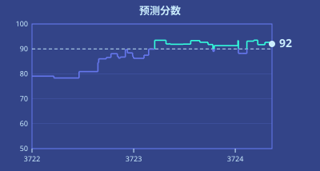
见习官做出的审计，有10% 会被监审官重做一遍。见习官的分数，反映的就是这部分投票与监审官判断吻合到什么程度。今天，格拉迪亚斯的分数是92。只要保持在90以上，他就能入选，成为监审官——或者，如果他改了主意，也可以当掌则人。但分数哪怕掉3分，他的职业生涯就至少要再搁置一年。
屏幕其余部分满是聊天消息。这项审计分配了9名见习官，分成3组，每组3人。同组另外两名成员意见不一。一个坚持第3档——算是不偏不倚的判断——另一个更严，要求第4档。
格拉迪亚斯叹了口气。另外两组大概也在这么想。简单起见，假设其他每个见习官都在第3档和第4档之间抛硬币，那么按二项式公式，另外6人也恰好平分的概率是六选三——20——除以64，约31%。可要是其他人的票不是抛硬币……唉，精确算太难了，但肯定更低，就当20% 吧。也就是说，有20% 到30% 的概率，他这一票会明显影响恐结明年的税率。哦，太好了。真正的责任。
格拉迪亚斯又环视了一圈人群。第一首歌结束，他听到他们在欢呼。他忽然生出一股勇气。他愿意冒那10% 的风险，让自己的预测分受损。不再多想，他按下第3档。
有那么一瞬间，他为自己的决定感到骄傲。
“喂，各位，这儿有个掌舵会的人！”，他身后有人喊。
格拉迪亚斯浑身一僵。脑子还没跟上，眼睛已经扫过全场，找到了最近的出口。
他立刻明白发生了什么。掌舵会的安全，尤其是防收买、防影响，全靠成员的身份隐秘。掌舵会成员被严禁泄露自己的任务。为了确保成员把隐秘当回事，他们被一种刻意设计出来的游戏逼得时刻绷紧。任何人都可以接入管理掌舵会运作的去中心化密码学网络，押上一小笔保证金，提交一个猜测：某个成员的任务是什么。猜中了，那名成员的薪水会被扣，猜中者分走一半作为奖励。
他还没来得及再作反应，附近另一个也穿隐私袍的男人突然拔腿，朝右侧的消防出口跑去。10米内的所有人纷纷掏出手持终端对准他录像。格拉迪亚斯也立刻明白了这边是怎么回事：诱饵。某个路人出于好心把注意力引到自己身上，给他争取脱身的机会。
格拉迪亚斯转过身，打算跑。可还没迈出一步，他就看见正前方一个高大魁梧的男人，手持终端直直对着他的脸。
格拉迪亚斯僵住了。起初他以为自己完了，脑子里飞快过了一遍各种可能，想找一条出路。最后，那个爱思考的哲学家格拉迪亚斯让了位，换成另一个更好玩、更促狭的格拉迪亚斯——自从初中课间之后就没再醒过的那个。
格拉迪亚斯朝右边看去。
“等等，那是北极皇帝的新檄文吗？”，他问。
男人一愣，顺着他的目光看过去。就在那一瞬，格拉迪亚斯从他手臂上夺过手持终端，猛地转身。
“删除上一个长时内所有音频、图片和视频。重启。”
他撒腿就跑。几个嘀嗒之后，终端应道，“已删除4个文件”，并短暂显示出几张照片和视频的缩略图。右下角那张正是格拉迪亚斯的脸。屏幕随即黑了。
格拉迪亚斯把手持终端抛向空中，指望追他的人宁可不丢终端，也不来追他。他继续往前跑。
他的鞋拖着他的脚步——鞋跟很高，好把他的身高抬到和其他穿袍者一样的水平；鞋底故意做得高低不平，让走路姿态没有规律——尽管如此，格拉迪亚斯还是很快跑到了出口。人群正被别的骚动分了神，似乎没注意到他。
他出了演唱会场馆，跳上一辆本地巴士。
巴士上几乎空着。左边还有两个人，都穿着隐私袍；是男是女、是老是少，他看不出来。右边是个穿普通衣服、背着书包的少年，像是放学回家。
他的目光落到车厢内壁的广告上。
第一张广告是海报，提醒维里迪亚人终身学习的重要。海报左边是一间教室，一个孩子、一位中年妇女和一位更年长的男人一起读着课本；右边写着：
学校教育到20岁为止。教育是每个维里迪亚人一生的责任与义务。
今天就来了解由维里迪亚图谱资助补贴的各年龄段教育项目。
第二张广告是海德菲尔，一个卖水和各类饮料的品牌。在维里迪亚掌舵会税制的温和推动下，过去20年里它已经几乎完全无糖。
广告左边是经典的黄绿配色海德菲尔瓶子，右边写着：
海德菲尔
我们的饮品自豪地不含2,000多种已知毒物和不推荐物质。
格拉迪亚斯笑了。
他真希望自己被选中投票的是海德菲尔这张广告，而不是那栋蓝灰色的楼。他清楚，这一个他会把滑块一路推到最右边。
这世上需要多一点好玩的东西。
15分钟后，格拉迪亚斯下了巴士。沿街走了一小段，他到了家门口，推门进去。
“塞拉，你在家吗？”他喊。
“正写博客呢”，她答道，从房间里出来迎他。
“那，晚饭想吃什么？”
“嗯，泽国餐车7分钟后到，再吃那个怎么样？”
“行啊！你还是10号？”
“对！”
“好，那我这次要13号。”
塞拉掏出手持终端，开始下单。
楼梯上传来咚咚的脚步声。
“爸爸回来了！”小儿子兹文喊着，一步三级地跳下楼梯，跑过来抱住格拉迪亚斯，他也顺势抱了回去。
年纪大些的少年费布里克下楼慢得多，一只手拿着手持终端，线缆连着他另一只手里更大的算力盒。
“我们订泽国餐车，你们想吃什么？”格拉迪亚斯问。
“4号！”费布里克答道。
“5号，我赢啦！”兹文喊。
“莉莉和赫雷达呢？”
“莉莉在卫生间。赫雷达课后数论班，还得一个长时才回来。拜托，你又不是不知道她每次都点9号。”
卫生间的门开了，莉莉慢慢走出来，眼睛盯着地面。
塞拉叹了口气。“怎么了？”
“历史考试60分。随便吧……”
塞拉转过身，搂住莉莉。“不是每样都擅长也没关系的”，她轻声说。
莉莉把脸扭得更开，避开塞拉和家人。她跑过去，坐到沙发上。
塞拉叹了口气，给莉莉点了8号。
塞拉点下确认。格拉迪亚斯、塞拉、兹文和费布里克围着桌子坐下等。
沙发上，莉莉掏出手持终端，专注地盯着屏幕飞快点击，全副心思都放在某个格拉迪亚斯和塞拉始终看不明白的游戏上。
这是格拉迪亚斯和塞拉与孩子们倒数第四顿晚饭——兹文和莉莉是他们亲生的，费布里克和赫雷达则来自他们的共同家庭，维尔叔叔和黛雅婶婶那边。再过4天，维尔叔叔和黛雅婶婶就要来接走4个孩子，照顾他们接下来的半年。
格拉迪亚斯叹了口气。他会想孩子们的。但同时，他也盼着这半年的自由。
“我们还要去维尔叔叔家住半年吗？”兹文问。
“当然啦！”塞拉答道。
“耶，我最喜欢维尔叔叔了！”
“对我来说，维尔就是爸爸！”费布里克特意强调。他又想了想。“格拉德叔叔、塞拉婶婶，我也爱你们！”
“我也爱你。”
门铃响了。格拉迪亚斯走到门口开门，接过一大袋餐盒。他把袋子放在桌上，取出印着各自号码的餐盒分给每个人。格拉迪亚斯、塞拉、费布里克和兹文都开始吃。
“维尔来了以后有什么打算？”格拉迪亚斯问。
“我打算去自由城待一两个月，见见扬，说不定写篇关于联合城邦的博客。我读了太多他们共同治理的东西，现在真想看看那些说法落到地上究竟怎么连起来。”
“不错！我打算去森林里长走几趟，跟机器人一起深挖环境和生物评则。要当上监审官，我还得再做4次审计！”
格拉迪亚斯和塞拉继续吃。莉莉悄悄走到桌边，也打开了自己的餐盒。
就在这时，格拉迪亚斯的手持终端震了一下。他掏出来，跳出一条通知。
| 来自 | 消息 | 时间 | |
|---|---|---|---|
信誉分 ≥ 200已验证✓ | → | 我在演唱会上看见你了，我知道你在掌舵会。 | 60259 |
又过了几个嘀嗒，来了第二条：
| 来自 | 消息 | 时间 | |
|---|---|---|---|
信誉分 ≥ 200已验证✓ | → | 别担心，我不打算举报你去领赏金。不过，我有个请求想请你帮忙。 | 60266 |
第二章
帕佛盖都，泽国 · 3724年雪月5日
芬和泽下了巴士，沿着训民街往前走。
训民街是帕佛盖都比较热闹的工商业街之一。街道两侧，招牌上的彩灯闪个不停，宣传着各式各样的电子产品：手持终端、手表、算力盒、照明、电池、传感器等等。店铺之间夹着小型工厂，造着各种精密器件，有几处甚至在生产计算机芯片。沿街的建筑都只有一两层高，不少招牌就架在通往地下的楼梯口上。
左边有两家紧挨着的店。一家卖各式传感器——摄像头、麦克风、生物与化学传感器、空气质量监测器，当然还有专门用来探测传感器的传感器。另一家卖隔信箔——一种常见的材料，很多房间默认就铺它，用来阻断无线信号。隐私与透明，监控与反监控——泽国人保平安，靠的就是这一对矛盾。
两家店之间，一块招牌用大字写着：
“地下安全之所。”
“gie fe kiu kai ci bin hu。”泽在心里默念。“生根，无首。”这是泽国半个世纪以来一直用来生长、并保住自身的策略。
芬和泽继续往前走，享受着车道与人行道之间树下的阴凉。
一架无人机嗡嗡地从头顶飞过。片刻之后，他们的手表轻轻震了一下——软件跑完了认证协议，确认来者是友方的安保无人机：出自通过了全部检查的批次，运行的是友方算法。整串流程——飞过、认证、确认——在几百毫嘀嗒内就走完了，芬和泽几乎都没察觉到发生过什么。
“昨晚那场民本棋下得怎么样？”芬问。
“我拿了第三名！终于琢磨出一种墙形结构，能把他们的滑翔机原样弹回去，把他们的地盘搅得一团糟。”
“你呢？”
“在无聊学校准备地理考试。”
“很无聊吧？”
“嗯，我们在讲联合城邦，老师就让我们死记硬背那些共治投票比例。自由城在德文维尔占百分之五的投票权，德文维尔在红郡占百分之十五，红郡又……”
“你对那套制度到底管不管用，有什么新看法吗？”
“不行啊，批判性治理研究要上大学才讲。”
“就像化学要上高中才讲那样？”
芬笑了。“他们现在打算在去中心化大学用十天讲完一整年的批判性治理研究？”
去中心化大学（DU），泽国语里叫dzu hu sun du——就是他们要去的地方。泽想起得确保准时到，便看了一眼手表。
“时间刚跳到69,000。教室的准确位置应该马上就会解密、广播出来。”
手表震了一下。泽收到一条通知。
| 文贵街1842 | TEI 70000 | ✓ |
|---|
泽停下脚步，把手表给芬看。
“嗯？黄色的对勾。看来他们升级了新的密码学证明系统，今天到课上得记得同步一下我们的码。”
“又换？”
“大概吧。听说北极帝国越来越咄咄逼人，所以我们在加强安保。”
“行吧。总之它上面写着文贵街1842。我们……刚经过训民街1990。那它在我们后头。”
“那我们就在这儿左转到二十街，再左转到文贵街？”
泽在心里把账算了一遍。有名字的街之间相隔200米，从训民街到文贵街隔了四条街，也就是800米。门牌号本身就是米数，所以从2000号走到1842号要走158米。800加158……一共要走958米。课在70,000嘀嗒开始，所以他们还剩不到一千嘀嗒，说白点就是十分钟。慢步走是一嘀嗒一米，而芬和泽走得快。所以他们来得及。
“行！”
两人快步走了起来，确保能提前赶到。
几分钟后，他们到了。“哎呀，芬，你可算来了！”一个年轻女人喊道。芬和泽被领着走下两段有点积灰的楼梯。
到了底层，另一个男人正等着，拦住了他们。“计划变了，改在负一层正对面的房间了。”
泽叹了口气。
四个人又爬上一层楼梯，进了一间大屋子，并排坐在一排椅子上。
四壁糊着厚厚一层隔信箔，贴得很急，边角都没理齐。箔面之上是泽国经典的那种审美：可爱的卡通小动物玩着电子小玩意儿、摆弄着化学实验器材，背景是绿树和蓝天。屋子前方，左边一只充气卡通猪，右边一只仓鼠。猪用左手举着一个计算器，仓鼠用右手举着一小瓶绿色液体。两只空着的手一起举起一张海报，上面是去中心化大学的校训：
“一人向学，一人得自由；一国向学，一国得强盛。”
他们身后，讲师走了进来，关上了门。泽看了一眼手表。70,001。
“欢迎来到物理课。”讲师说。
“今天，我要试着讲一个很重要的题目，我觉得几乎所有人都把它搞混了：热力学。”
比较专心的学生收起了手持终端，不再说话，准备听讲。其他人起先还在聊，但很快就安静下来。
泽旁边的女生把手伸到桌子边缘底下，眼睛没看，手指顺着摸了一遍——这是习惯，不是在认真搜查。另一个学生习惯性地把手持终端在屋里挥了一圈，想捕捉到任何未知的电子设备。没有人说什么。从来没有人说什么。
“在座有谁听过‘熵’这个词——在信息论或密码学的语境里？”
大约四分之三的学生举了手。
“那在座有谁听过‘熵’这个词——在热力学第二定律的语境里？就是说它永远在增大，其中一种表现是热总是从热的地方流向冷的地方，绝不会反过来？”
几乎每个学生都举了手。熵是科幻作品最喜欢的题材。
“那在座有谁觉得自己能讲清这两者之间的联系？”
没有人举手。
“好，那我们开始。”
讲师按了一下手表上的按钮，前墙上出现了一张幻灯片：

“想象我们有两罐气体。每罐有一百万个分子。但左边那罐里，分子的运动速度快得多。假设左罐里分子的速度可以用六位数表示，从零到999,999。而右边那罐里分子运动得慢，速度可以用六位数表示，从零到99。”
“谁能告诉我，要把左罐里发生的一切完整表示出来，需要多少位数字？假设他们已经知道那是气体，知道有一百万个分子，唯一的自由变量就是速度。”
“六百万！”大约十个学生齐声喊道。
“很好。那右边那罐呢？”
“两百万！”
“我们来梳理一下。从你的角度，作为观察者，你知道这两罐都是气体，知道是哪种气体，也知道有一百万个分子。但你不知道每一个分子的速度。那么对左边那罐来说，你所不知道的信息量是……？”
“六百万位数字！”
“那右边呢？”
“两百万位数字！”
“所以一共是八百万位数字，是你所不知道的信息。那么，如果我们把两罐放到一起，让气体混合，会怎么样？关于速度，我们会知道些什么？”
泽举起了手。
“好，你来说？”
“分子会随机地互相碰撞。等它们安定下来，因为能量守恒，速度最终会落在中间某处，零到五十万之间。”
“对，非常好！严格说来，能量与速度的平方成正比，我们也可以争论这些速度该怎么表示，顺带一提，我们也完全忽略了位置，但我们就简化一下，说零到五十万吧。”
讲师又点了一下手表。下一张幻灯片。
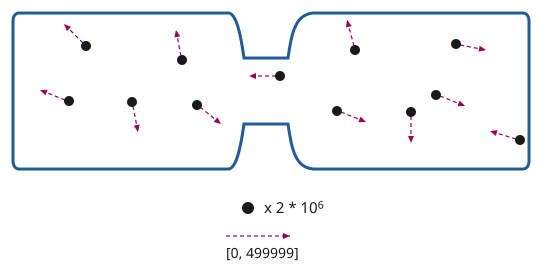
“那么，要表示我们对这个新系统所不知道的信息，需要多少位数字？”
另一个学生举起了手。
“请讲。”
“从零到五十万，比五位多，又不到六位；如果按对数算，每个分子大约是五点七位。”
“那总数是多少？”
“一千一百四十万位数字。”
“非常好！所以结论是：把两罐气体混在一起，我们损失了知识。我们对气体的了解比之前更少了。而且我们可以量化损失了多少知识：是三百四十万位数字。”
“这就是我们说熵增大、热从热处流向冷处时的意思。每增加一点点热量，把一个冷的东西加热所增加的未知位数，比把热的东西冷却同样一点点所减掉的未知位数更多，所以总的未知量上升。你对这些罐子能做的每一个可能的操作，平均看来，要么让总未知量不变，要么让它上升——而只要你做了任何有用的事，或者犯了任何错，它就一定会上升。这就是热力学第二定律。”
讲师停顿了一下。
“那么，我们怎么证明它？”
没有一个学生回答，但很多人似乎好奇地往前倾了倾身子。
“我们用反证法。假设我们真有一个能倒着来的神奇程序：从混合后的两罐出发——一千一百四十万位的未知量，把我们送回分开的两罐——八百万位的未知量。”
泽又一次举起了手。
“我能试试吗？”
“请讲。”
“我记得我们宇宙的物理定律是完全时间可逆的，对吧？所以，如果一件事能朝一个方向做，就总能把同样的步骤倒过来跑一遍。”
“完全正确。那么，为什么这种在逐个原子层面的时间可逆性，会意味着温度均衡是一件你无法逆转的事？这不矛盾吗？”
“嗯，如果我们真能把中等温度分成热和冷，那我们就能做无限的数据压缩了。”
“比如，假设你有一个一千一百四十万位数据的文件。你造一个真正完美的双罐装置，再用一把枪，把气体分子以完全正确的速度射出来。然后你用你的程序把气体重新分开，再把罐子拆开，最后测量速度。你就能得到八百万位数据。”
“而且，因为我们宇宙的物理是时间可逆的，你就能把同样的事反过来做：拿那八百万位数字，输进枪里，让气体分子以正确的速度射出来，把完全一样的分离程序倒着执行一遍，再测量，你就能得到原先那一千一百四十万位数字。时间反演过程的输出必须等于原过程的输入。于是我们就得到了一种完全通用的办法，可以把任意一千一百四十万位数据表示在八百万位之内。要是能做到这一点，我们就能一遍又一遍地做下去，把整个星球表示成八百万位，甚至压缩得更小，用八位就搞定。而这是不可能的！”
“完全正确。换句话说，在一个物理时间可逆的宇宙里，你不可能从不知道更多东西，变成不知道更少东西。而在一个物理时间不可逆的宇宙里，你可以，因为你只要把所有你不知道的东西毁掉就行了。”
“简直就是北极皇帝！”泽真想喊出来。但他忍住了。把一个这么明显的笑话当众讲明白是很失礼的——半个教室的人心里大概早就想到了。讲师和学生们短暂地停了一下，品味这个笑话，咧嘴笑笑，享受了片刻的心意相通。然后讲师继续往下讲。
“但在一个物理时间可逆的宇宙里，总有些东西是你不知道的，而这份无知只能被挪来挪去，并且不可避免地越来越多。我们能做的最好的事，就是从不知道我们在乎的东西，变成不知道我们不在乎的东西。比如，从不懂热力学，变成不知道那些作为废热从投影仪里跑出来的分子的速度。”
“干得漂亮，孩子。你叫什么名字？”
“泽。”
“那么，泽，你答得完全——”
旁边的房间爆出一声巨响。整间屋子都在晃。
不到一嘀嗒的工夫，一部分墙和地板轰然塌了下来。
泽反应过来时，一块碎石已经砸中了他的胳膊。
泽发现自己倒在地上，翻倒的椅子就在旁边。
他脑中闪过那个最后关头把他们改到另一间房的男人——那间房比原定要去的地方高一层。
他立刻就明白了。去中心化大学一直在做的那些额外防范——密码学、地点的突然变更、隔信箔——都不只是玩闹。而北极帝国也不只是地理课上的一个单元。这些东西是真的。
“大家都没事吧？有人受伤吗？”讲师喊道。
泽想了一会儿，琢磨自己的胳膊伤得够不够格叫苦。他试着把胳膊抬起、放下。胳膊没有反应。
接下来他感觉到的，是两条胳膊抓住了他，把他从地上拉起来，扶到椅子上。泽转过头。是芬——让泽松一口气的是，芬一点伤都没有。
烟灌满了房间。每个学生的手表都开始大声报警——空气质量监测只是它众多功能中的一项。学生们点了点手表，报警声很快小了下去。学生们慢慢互相搀扶着站起来，讲师则四处走动，查看有没有人需要认真处理。
讲师走到泽身边，泽默默指了指自己的左臂。讲师掏出手持终端，扫了一下。屏幕底部刷出一段 AI 生成的结论。
“疼吗？”讲师问。
“有点，但撑得住。”
“看起来是骨折。今天就去医院看一下。越早去，好得越快。”
“我送你去。”芬接话。“得保证你月底那场比赛还能打。”
讲师继续往前走。屋里满是烟。空气质量警报还在响，但芬和泽能分辨出讲师在问不同的学生“你还好吗？”，有一个学生回答“我没事。”
空气过滤器开到最大功率，烟很快散了。芬和泽对视了一眼。有那么一会儿，学生和讲师都坐在尴尬的沉默里。
泽用没受伤的那条胳膊撑着桌子站了起来。“我想我们对这面墙的了解，比两分钟前少多了。”他开了个玩笑。
几个学生笑了，或者轻轻笑出了声。他对听众的情绪拿捏得很准。
“没有别人受伤了吧，你们都确定？”
“我没事。”大约十个人回答。
“好，我想今天我们熵够多了。回家吧。”
芬和泽在教室里比其他人多待了一阵。泽重新坐回椅子上。芬拿了把扫帚，把碎屑都推到一边。很快，就只剩他们和讲师了。
“哇，北极人越来越凶了。以前他们可不针对物理教育。”
“临时给我们换教室的那位真是个天才。那一下救了我们的命。”
“可惜，我估计从这儿往后只会更糟。”
芬和泽震惊地看着讲师。
“记住，他们的玩法就是永远压住我们的重工业和科技水平。让我们活着，但只活在一个永远构不成威胁的文明水平上。”
“而我们的对策是‘gie fe kiu kai ci bin hu’：生根，无首。用分布式制造造出我们所有的工具。让官方政府照旧运转下去——就像一百年前我们输掉战争时那样，缓慢、腐败——但用密码学来匿名协调那些真正要紧的决定，不需要任何抛头露面的个人领袖来掌舵。整个去中心化大学已经在这么运转了。很快，我们大部分的发电、农业和医药也会这样。”
“这招一直很管用。经过最近这几年，我们终于差不多到了那个水平：完全不需要任何集中的重工业，也能自己站住脚。问题是，看样子他们也渐渐看明白了。”
“Dze go ba fau gie。”芬和泽齐声说，平静而倔强。
“泽国必将再起。”
第三章
梅尔丹，维里迪亚 · 3724年雪月8日
格拉迪亚斯沿着人行道往前走。路两侧一家挨着一家的小店，卖什么的都有，从鲜花、衣服到电子设备。他穿过一条街。
街对面，路面缓缓下沉，无缝接进一条隧道。里面的光刚好够人舒服地看清路、看清字，再多一点也没有。
格拉迪亚斯走到一个Y字形路口。墙上贴着一张海报，四角用四段胶带粘住。他停在海报正前方看了看。
学校告诉你，维里迪亚是个美丽的国家。这些你每天都看得见：树木、山峦、房屋和楼宇，全都在拼命再挤出几个基点的土地税减免。
但你心里清楚，问题确实存在。维里迪亚上一次上太空是什么时候？二十年前。维里迪亚最高的楼是什么时候建的？四十年前。为什么？因为你所有的制度——掌舵会体系、图谱资助机制，还有文化本身——都是围绕让人在当下过得舒服、开心建起来的，没人管明天。
再看看北极帝国。住房、交通、工业，哪里建得最快？北极帝国。那些想办法让人活得更久的科学家呢？都在北极帝国。
维里迪亚怎么回应这些科学家？活得久没那么重要。死亡和出生都没什么，那是生命的自然循环。没错，他们就是这么信的。生命的自然循环，已经是他们在道德上能拿出的最好东西——照这套歪理，任何不义都可以是自然的，比如老虎吃兔子。
维里迪亚眼中的自然像一株植物。美丽，却永远长不过自己的身量。我们眼中的自然像一头狮子。如果你认同这种眼光，如果你希望维里迪亚更强，伸手去够星辰，不再只盯着公共卫生那点增量，而是去追求永生，那么维里迪亚需要你们——下一代的领袖——负起责任。别管那群乌合之众。去建设未来。加入我们，我们一起把它建起来。
此致
埃菲里昂勋爵
北极帝国驻维里迪亚领事。
“好啊，又一份北极宣传品”，格拉迪亚斯想。当然，北极帝国和所有人一样有言论自由，但他很好奇，什么样的维里迪亚人才会乐意破坏公共环境，把这份东西打印出来贴在维里迪亚的隧道里。他开始盘算怎么把海报撕下来。
突然，格拉迪亚斯感觉肩膀被人拍了一下。
格拉迪亚斯转过头。
“哦，是你吗，莫夫？”
“不，我是北极皇帝。我这次来，就是要实打实地把你的灵魂吸出来。”
“行吧好吧……等等，我不过是上百个穿着隐私袍往大梅港走的人里的一个，你怎么找到我的？”
“一年前你把我加进了信任列表，一直没删，所以我们各自的本地 AI 有权开启位置共享。你的 AI 知道我们本来就该先碰个头——之后你见那位神秘先生时我再跟着你——所以它今天对你我开放了位置共享。”
“啊，原来如此……什么什么情境亲密，反正就是那个新流行词。”
“对，做这个大概连两方混淆电路那功能都用不上。”
“那你最近在琢磨什么？”
“今年我被分派负责网络媒体开放度评则里的一项。我们掌则人小组一直在讨论，要不要提高对 API 限制的加税。一个月前我跟一个公民大会谈过这事，他们对现状非常不满。”
“为什么现在成了这么大的问题？”
“蓝鲸一个月前宣布要砍掉 API，只允许经过验证的硬件接入平台。他们说是为了防止自动化垃圾信息，但大会里几乎所有人都觉得，他们只是想封掉替代接口，好更多地控制人们的注意力，榨出更多钱。”
“我们知道他们具体在做什么吗？他们的算法有公开的吗？”
“没有，他们的算法完全不透明，而他们早就按最高档税率缴税了。”
“原来如此……”
“所以呢，很多掌则人都觉得，该对这种做法再多加税。要么他们收手，要么，嗯，他们继续干，互联网越来越烂，但政府能拿到足够的钱，让我们给每个人提供更好的医疗。问题是，蓝鲸一直在猛力反对。有一位掌则人不小心暴露了自己的隐私，她和她的观点最近被人挖了出来，事情公开了，几天后她丈夫就丢了工作。不知道两者有没有关系，但，嗯，这就是我们为什么要用这一整套税制，配上这些随机抽选掌则人的密码学网络、匿名讨论和投票，还有隐私袍。”
提到蓝鲸，格拉迪亚斯想起了自己年轻的时候。那时他学着写程序，给另一家大型社交平台银聊写了一个替代客户端。他知道，那件事能做成，只因为银聊的 API 是开放的，平台允许开发者做替代客户端，也允许用户导出和迁移自己的数据——这些决定无疑都是为了在硬件与软件开放度评则上把税率压下来，或者说，至少对财务部门是这么交代的。正是那段经历，让格拉迪亚斯想回报点什么，也让他自己投身掌舵会。
“对了，说到隐私，你那位信誉分200的匿名朋友，你打算怎么办？”
“他说他觉得整个掌舵机制从根本上就是坏的。我打算先听他说完。就算是疯子，也常至少有一成是对的，而且那一成还挺有意思。顺便看看能不能找出他是怎么找到我的？”
“那……万一这是个陷阱，想套你更多把柄呢？”
“如果他真想害我，直接把我的身份和任务提交进网络，就能让我今年一整年都失去监审官资格。不过说到底，查这种事正是你在这儿的原因。”
莫夫解开隐私袍，从内侧口袋里掏出一个大包裹。
“来，在谈正事之前，先换一件新的隐私袍。万一你袍子上有什么脏东西能被追踪。北极人把监控设备偷运进来的本事，比我们查出它们的本事长进得更快。我们得把疑心再提高一档。”
“都到这个程度了，我们干脆根本别见面岂不更好。”
“别这样，格拉德，你不只是要跟我一起当监审官的人，你还是朋友。趁我们还能见面，我喜欢多见见你。”
隧道向上倾斜，外面的光又一次照进格拉迪亚斯的眼睛。路两侧都覆着树木。
他路过两个站在饮水台旁聊天的孩子。他能听出其中一个在说最近和家人去了趟北林，另一个提到自己喜欢那儿的翔球队。
走出没多远，远到再也听不见他们说话时，他的手表震了一下。
| 来自 | 消息 | 时间 | |
|---|---|---|---|
| → | ［4张图片］ | 44029 |
他看了一眼。
塞拉从自由城发来几张照片。第一张是市中心。第二张是一座大公园，从入口大门前拍的。左边能看到一张带字的海报。他把手表凑到眼前，才辨认出是一张价目表。
格拉迪亚斯按下一个按钮，回了一个爱心符号。
他把注意力从表盘移回街上，发现自己已经走进了梅尔丹更都市化、也更商业的一片区域。
他的右手边是一排办公楼。远处的那些闪着清透的玻璃与钢结构，不过隔着树冠，只能看见一部分。近处的正在施工，四周立着高大的围挡，把工地挡在公众视线之外。
第一块围挡上有一张海报，提醒维里迪亚人对家人和社区要友善。
第二块围挡上是另一则海德菲尔广告。广告左侧是那款经典的海德菲尔水瓶，裹着黄绿两色。
右侧则写着：
氢氧化氢：
- 一种常见于有毒污水中的物质
- 大剂量可致死
- 常被施用于受刑中的囚犯
- 以固态长时间接触会造成皮肤损伤
但你知道吗？新鲜、可饮用的氢氧化氢，你今天就能买到属于你自己的那一瓶！
海德菲尔，立即购买。
格拉迪亚斯又笑了。施工已经持续了很久，他很感激这两张海报把工地遮了起来。比起施工吊车和建了一半的水泥楼，他宁可看海德菲尔的广告或维里迪亚的美德海报。
然后他把目光转向左边那道长长的、城堡似的墙，灰紫两色相间。
墙前有两排树，中间夹着一条人行道。
树后，墙上挂着一张大海报：
“了解大梅港正在为你的社区做些什么！”
文字衬着一幅背景画，画的是机器人在捡垃圾，用的是适合孩子的卡通风格。右下角有一个二维码。格拉迪亚斯出于好奇扫了一下。
大梅港公共活动
| 环境 |
| |
| 健康与医疗 |
| |
| 教育 |
| |
| 艺术 |
| |
部分资金来自维里迪亚二次方资助
格拉迪亚斯看见两个人坐在长椅上，各自喝着茶，望着那块广告牌，其中一人腿上放着一台手持终端。
“你进去过里面吗？”，第一个男人问。
“没去过，一直没弄到签证”，第二个男人回答。
“那地方很有意思，里面和维里迪亚其他地方完全不一样，简直像国中之国。”
格拉迪亚斯停下脚步，面朝广告牌，免得引人起疑。偷听别人说话有点失礼，但了解民意是他这个未来监审官的职责之一。公民大会有用，可永远比不上那种当事人以为没人听着的真实对话。
第二个男人低头看两人共用的那台手持终端。“哎哟，看看他们交的税。”
“他们交什么税？”，格拉迪亚斯问翡翠，用几乎无声的气声说话，只有他的颈带能辨认出他在讲什么。
翡翠立刻回答。
“销售税平均5.2%，是全市平均水平的一半。土地税总计1.48%，略高于全市平均。图谱资助、尤其是二次方资助带来的收入，能补回其中大约一半。”
格拉迪亚斯把注意力转回那场谈话。
“我不明白。这些人只是安安静静待在角落里，自己过自己的。我没去过那儿，他们也从没来找过我麻烦。他们还在环境、教育、医疗、博物馆上做了这么多事。他们甚至没法只做自己真正擅长的科学研究，还得做这些讨好大众的事，好把税压下去，从二次方资助里拿回点钱——这些事他们根本不擅长。可就算做到这个地步呢？还是有那么多人恨他们，硬说他们的墙难看，只为了把他们的土地税抬上去。我们这么擅长当自己最大的敌人，还操心北极人干什么？”
“至少在这里，这已经是我们能为难他们的极限了。要是在德文维尔或者英格尔沃，大梅港得拼命争取才不至于被整个关停。”
格拉迪亚斯已经快十年没进过大梅港了，这让他更想再进去看看。他继续往前走。
格拉迪亚斯把手表贴近大门上的绿色圆圈，等了大约一个嘀嗒。
“证明已验证，欢迎”，机器用机械却带着赞许的语气回答。
他穿过大门。
他立刻明白了，为什么长椅上那两个人说大梅港和维里迪亚其他地方如此不同。
大梅港里的建筑比外面统一得多，都是相似的圆形和矩形，白、灰、紫三色相间，高度大约五到十米。树木只有那么几种，在人行道旁等距精心栽种。商店和餐馆除了各有各的名字和四分之一米宽的标志，根本不去刻意区分自己，而是接受了自己作为大梅港整体中一个小元素的视觉角色。这些建筑明显更未来感，更多的是玻璃与钢材，棱角也比维里迪亚常见的建筑更锋利。
格拉迪亚斯照着表上的指引继续往前走。五分钟后，他来到一处隧道入口，走下去，短暂穿过一段人很多的通道。
刚穿过人群，他的手表就震了一下。
| 空气 | |
| CO2 | 965 |
| PM2.5 | 22.1 |
| 设备 | |
| 已证 ✓ | 55 |
| 未知？ | 6 |
两个问题，格拉迪亚斯想。
第一，人太多，通风和过滤不够。格拉迪亚斯拉了拉隐私袍前脸罩上的带子，把鼻子上下两片隔开。
第二，不知道那些未验证的设备是什么。如今几乎每台设备都带零知识证明，验明它由某家厂商的某个批次生产。55台里有6台没有验证，这个比例高得不寻常。可惜没时间细查。可能只是孩子的科学课作业，格拉迪亚斯想；也可能在大梅港，设备没有认证本来就是常态——毕竟从维里迪亚的角度看，这块地整片都只是一家大企业的私有财产——还可能是隐藏的间谍摄像头，或者更糟。他稍微加快脚步，继续往前走。
又在迷宫里拐了几道弯之后，他再次来到室外，这次是在一个隐蔽的庭院中央。院里摆着几张桌椅，有人在吃东西、喝水。格拉迪亚斯找到一张带布帘遮挡的卡座桌子，走进去坐下。
桌子远端中央有一盏装饰灯，两侧各有一朵大花。在地板上，紧挨着卡座角落，格拉迪亚斯注意到一个白盒子。他俯身细看，手表震了一下。 PM2.5读数低于1。应该是空气过滤器，他想。他把隐私袍的兜帽摘了下来。
他把手表轻碰桌子中央的绿色圆圈，片刻后听到一声确认音。
两分钟后，一个笑脸机器人滑到桌边，端着水和一份沙拉。格拉迪亚斯把两样都接过来放到桌上，机器人滑走了。
五分钟后，另一个穿隐私袍的男人走了进来。
“我们终于见面了。”
“你查出我的行踪，告诉我你知道我需要听的事，却只肯当面说，还把我带到大梅港一个我根本不知道存在的偏僻角落。到现在我连你叫什么都不知道。”
“啊，我叫德尔瓦特。幸会。”
“我是格拉迪亚斯。”
“我知道。你妻子是塞拉，你孩子的名字是——”
“你是想吓唬我吗？”
“其实不是。现在回想一下，那更像是在炫耀。我道歉。”
两人沉默了几分钟。都摘下了隐私袍的面罩和兜帽。格拉迪亚斯开始喝水、吃沙拉。德尔瓦特把自己的手表碰了碰桌上的绿色圆圈，一分钟后，他的茶、一根长方形的营养棒，还有一把叉子，送了过来。
格拉迪亚斯又往前倾了倾身。
“那你想要什么？”
“最近你对掌舵会这套体系还满意吗？”
“任何体系都有毛病，但总体来说还行吧？”
“明白了，我还没敲开你的墙。好，就拿恐结的演唱会举例。他们是不错的乐队，很好玩，对吧？”
“对，我喜欢他们。”
“但有一批监审官正设法把他们推到第4档，因为他们的歌词不够温和。”
格拉迪亚斯点头同意。
“你投票选第3档，很勇敢。大多数见习官都会屈从于他们以为监审官想要的结果。你没有。这很少见。”
“不过再举个例子。你觉得大梅港怎么样？”
“显然是个好地方。和维里迪亚不同，但自有它的美和气势。它不适合所有人，但我能理解为什么很多人喜欢来这里。”
“那你知道他们的掌舵税是多少吗？”
“掌舵税还算可以，但他们在土地税上被扣得很惨。”
“正是。一篇论证周密、说明这地方对维里迪亚有多大好处的文章，还不如一句随口冒出来的‘我不喜欢你’值钱。”
“那你有什么主张？”
“自由。真正的自由。别再想着去拨弄每个人，让人们真实的样子露出来。”
“那我能帮上什么？”
“两个月后如果通过，你打算当监审官还是掌则人？”
“目前想的是监审官。”
“去当掌则人。然后见一条评则就投删一条。”
“就这样？这就是你的计划？”
“你看，如今监审官比掌则人多得多。而监审官才是所有人想影响的对象。为什么？因为监审官能直接对接世上具体的事物。掌则人调整的是全局规则。可任何一条规则对任何一家企业的影响都有上限，何况每条规则大约有二十个掌则人在决定。当监审官，你的影响力实在得多。也更有意思。”
“我的路子不一样。我在尽量把掌则人聚起来，因为我要的是系统性变革。不是为了某场演唱会，或者某块紫色太多的飞地。而是要把维里迪亚人从他人偏见的暴政里解放出来，让他们做自己。”
“图谱资助你也要废掉吗？”
“我觉得图谱资助在很多方面确实也管得太宽，但我的重点是掌舵会。”
“图谱资助支持的很多开放技术，对泽国现代化、能自保起了关键作用。你不觉得这很重要吗？”
“听着，我喜欢他们的人，但我们这样几乎等于资助一场潜在的战争，是在玩危险的游戏。我们该先管好自己的问题。”
德尔瓦特不再说话，开始喝自己的茶、吃营养棒。格拉迪亚斯趁这个空当琢磨德尔瓦特的话，一边继续喝水，把沙拉吃完。
“这个想法有意思——掌舵会确实过于操纵人了。但我不确定自己完全同意把它直接砍到零，尤其是干掉图谱资助——如果掌舵税归零，我们就只能这么干。”
格拉迪亚斯停了几嘀嗒，看着德尔瓦特。德尔瓦特也看着他。两人各又抿了一口自己面前的饮料。
“不过好吧，就算我可能同意其中一部分，我凭什么听你的？”
“因为我了解你，知道你住哪儿，知道你怎么想。如果这些我都能查出来，想想蓝鲸能做些什么。北极人也一样。我可以帮你保护自己。但我也需要你的帮助。”
“总之，你提交最终路线选择的截止日期还有大约一个月。别去当监审官，当掌则人。先从这个开始。”
德尔瓦特站起身，走出了卡座。
格拉迪亚斯把帘子中间那道缝留开一点，看着德尔瓦特离去。就在德尔瓦特快要走出视线时，另一个穿隐私袍的人从隔壁卡座出来，跟上了他。
格拉迪亚斯看了看手表。
第四章
帕佛盖都，泽国 · 3724年雪月24日
芬和泽坐在一处露天院子里的桌边。近旁几张桌子空着，别的桌旁坐着几拨少年和几对上了年纪的夫妇，正在吃饭。
从门口的豁口望出去，芬看见街对面有个少年正爬上一架木梯——梯子被匆匆架在一根公共路灯杆上。转眼他就到了顶，立刻动手拆一台监控摄像头。拆完，他把摄像头塞进一只黑布袋，又爬了下来。
泽用手指敲了敲桌面。芬的目光猛地收回来，重新专注地盯住泽手持终端上的一段动画。
“那好，我这是在看什么？”芬问。
“这是我上一盘民本棋的棋谱。那局我们用的是“逢三转一百八”的规则。有人琢磨出了这种新打法，能破掉常规的墙形结构，拿垃圾把对手的地盘整个淹掉。我正想找些反制手段。”
“终局是什么样？你是想搭出一堵完美的墙，还是一路石头剪刀布到底？”
“嗯，记住，规则是可时间反演的。所以，任何能用某种方式造出来的墙，就能用某种方式拆掉。”
“啊？”
“还记得中学那会儿吗？我们觉得电影里那些好人也好、坏人也罢，把护盾发生器装在护盾外面，让对方找到、砸掉，简直蠢透了。”
“记得。”
“结果蠢的不是他们，是我们。因为物理定律是时间可逆的，所以没有什么是无敌的。任何能造出来的东西就能拆掉，你只要沿着造出它的那条路径倒着走一遍。所以，一堵拆不掉的护盾，就不是能造出来的东西。弱点一定藏在某处——问题只在于你藏得多好。”
“你是打算往防守方向发展还是怎么着？”
“嘿，我只想拿冠军。今年是我能参赛的最后一年，赢了就能进全国赛。”
“你是说，今年是你最后一次机会，让白对你刮目相看？”
“嘿——”
一台机器人滑到他们桌边。
“jie mo kai tu jie hei ja ma？”它用餐厅机器人那种刻意可爱的泽国语问。“要吃的还是喝的？”
芬看向机器人身上的屏幕。

他点了“kai”，又点了一张沙拉的图片。

芬又点了一下，接着按了几个按钮点了茶。机器人应声叫了一下，滑到泽身边。
“哇，现在什么都变成图片操作了！”
“我最近一门去中心化大学的课正好是语言学，所以在这儿终于轮到我当天才了。”
芬从背包里掏出一本薄薄的纸册子。封面上是班孙培的标志：两条横向伸出的手臂，一条从左、一条从右，在中间相握。标志上方是标题：“po so dze go ban de sia”——“泽国语第九版的构想”。
“再多讲讲？”
“你知道的，我们把词根数量压到256个之后，传出来的说法是还要继续压，早晚要用四大元素——地、气、火、水——来表达一切？”
“嗯？”
“结果班孙培现在想放弃那条路了。就停在256个词根，把泽国语的下一版往另一个方向推。”
“什么方向？”
“往视觉走。所以首先，他们真的在认真考虑把象形文字捡回来。”
“什么？！”
“当年改用维里迪亚字母是有道理的，因为老符号太难画。但我们现在有计算机了。问题不在输出，而在输入。诀窍在于，他们正在设计的新符号里，有一部分笔画编码整个读音：就算你忘了怎么念，看一眼符号也能知道准确的读法；符号剩下的部分则仍然尽量兼顾含义。”
“好吧……？”
“他们思路上的变化更大。语言到现在为止都非常一维，因为说话就是一维的：一个词接一个词，而你写下你说的话。但如果你想一想“语言”里那些不依附于说话的部分——比方说，你喜欢数学，那就想想二次方程求根公式。”
“负b加减根号下b平方减 4ac，再除以 2a？”
“你想想，要是你得把它写下来、投到屏幕上给人看，那得多难看。比如，就想象现在有人把这一串话打在屏幕上，他们看了会是什么滋味。再想想方程式，就是我们平常写下来的样子。我到现在也背不全，但我记得它很好看！它是一幅漂亮的画。分数线把东西分成上下两层，有个根号，一眼就能看出哪些在根号里、哪些在根号外。”
“所以他们想把整个泽国文都变成那样？”
“对。”
“你知道有个老结论：拿同一段文本，把它翻译成每一种语言，各版本的篇幅长短不一。但把这些译文拿来压缩——就用你任何计算设备里现成的随便哪种压缩算法——长度最后几乎一样。所以信息量本来就是相同的。问题永远是：你怎么组织它，才能让它最好取用、最有用？”
泽想了一会儿，回想起一个月前那堂热力学课。信息就是信息，问题只在于怎么排列它。泽点了点头。
“所以班孙培现在正在全泽国做A/B测试。祭司们一共拿出六种不同的可视化样式，只要你把自家的文字或招牌按他们的新想法调整一下，或者上报你阅读别人贴出来的东西的体验，他们就发信誉分。”
“等等……他们搞的是那种全国规模的组织动员，就为了再一次优化我们的语言？”
“大概吧……”
泽朝那座半公里高的金字塔走去——那是帕佛盖都南缘最显眼的地标。从外面看，它像一座外表包得光滑的石砌金字塔，方形底座，像是千年前某个伟大文明留下的东西。石面上嵌着两行树：一行从泽所站的位置起，沿小径通到半山腰；另一行恰在半高之处，横着环绕金字塔一圈。
但外表是骗人的。造一座那么高的金字塔，就算对维里迪亚、甚至对北极来说也贵得离谱。这本就是一座现成的山，带着现成的洞穴；人们把它翻修成金字塔的样子，把洞穴改造成居住和办公空间。泽国政府的一部分就设在那里，还有许多大公司——不过那里的空间很贵。
泽在一盏路灯旁停下，穿过宰贡街：这是帕佛盖都正式结束前的最后一条街，也是那条笔直、养护良好的小径的起点——小径直通山体金字塔的入口。
泽把受伤那条手臂的每根手指张开又合上，接着反复张手、并拢。他模拟了几下按键的动作。这条手臂感觉已经全好了，不过泽知道，自己的反应速度还是会慢一点。
街道带着大约百分之十的坡度向上弯，让泽走路时的热量消耗差不多翻了一倍。泽感觉得到。他脑中下意识地不再推演接下来那场比赛的战术，转而单纯惊叹这座金字塔的美。
又往上走了一段，泽短暂地回头看了一眼，为帕佛盖都的景致惊叹：大片连绵的低层建筑间杂着树木，各式小店铺和工厂灯火闪烁，生产、售卖着各种各样的货物，全都嵌在一张规整的街道网格里——南北向排开十七条街，间隔两百米；东西向排开三十三条街，间隔一百米。有些路则在两者之间来回切换：空间宽裕时整条留在地面，人行道需要占满整个宽度容纳行人时，车行部分就转入地下。
泽重新转向正前方，继续往上爬。大约五分钟后，他到了正门。
泽的手表震了一下。
| zan | tie | tei | |
|---|---|---|---|
| → | jie fe hen dzi | 74160 |
“祝你好运”，芬发来的消息。
按正门侧面几块指示牌的指引，泽向左转，沿那条覆满树荫的水平小径走了大约三十米，从一处较小的侧门进了山体金字塔。
在里面，隧道看起来就像现代建筑里的走廊。每条走廊约两米宽、三米高：下面两米是矩形，上面一米是半圆。石头打磨得很干净，看上去和任何保养良好的建筑内部没什么两样，只是没有窗户。偶尔，泽会经过几间开着门的房间。他分不清哪些隧道、哪些房间是翻修过的洞穴，哪些是从头挖出来的。
他跟着指示牌走，先向右再向下，然后向左，接着直行向下大约一百米。最后又向右一拐。
大约十米之后，他看见了那扇门。门两侧是一层层石砖，接近顶部处弯成拱形。门顶正中有一个标志：两条横向伸出的手臂，在中间以拳头相撞。
他走了进去。一位年长的女人注意到他，转过身来。
“哦，嗨，泽！”
“啊，穆，又见到你真好！”
“四分之一决赛，兴奋吗？”
“嗯！”
“那可得当心。记住，你现在是团队的一员了。你是搞数学的，不是搞外交的。你连我生日都不记得！”
“嘿，队伍是随机分的！没什么关系要打理，这更像数学，不像外交。”
“你会吃惊的。我倒觉得，这反而让实时的外交变得更要紧。”
另一个女人走了进来，年纪和泽差不多。
“啊，泽，我们又见面了。”
泽的脸立刻沉了下来。过去这几年，白和他对上三次，三次全赢，而且赢的时候一点也不宽厚。他别过头去。
白走近了些，把手搭在泽肩上。“怎么，泽，你怕我？你知道我就喜欢让你害怕。你兴冲冲想拿奖金给你妈买个算力盒，我就把它全抢走，给自己换来一趟红郡南部美丽海岛上的度假。我该给你寄几张照片。”
泽攥紧了拳头。
“赛场上见！也说不定这一轮你还没碰上我，就先输给别人了。”她笑了笑，慢慢走开了。
一声铃响。一个机械音——比咖啡店的机器人更严厉——指示所有选手各就各位。
泽走进墙上的一间电梯舱。门合上，他能感觉到电梯开始下行。一只托盘弹了出来，一个机械音——这次像送餐送饮的机器人一样可爱——要求泽交出所有电子设备。泽掏出手持终端，摘下手表，把两样都放在托盘上。托盘缩回电梯侧壁里。
四分之一分钟后，电梯门打开，露出一间巨大的房间，一千多人在里面观看。一条通道亮了起来，指向一台带椅子的巨大游戏主机。
泽敬畏地环顾这间屋子。这是他第一次来这里——四分之一决赛之前的比赛都在简陋得多的场地进行。他愣愣地看着，惊讶于一场高中编程比赛竟然能拿到这样的场地。随后他的思绪收了回来——这事回头问穆，他想。现在，他不是来享受的，他是来比赛、来赢的。
泽向前走。远处另外三名选手的轮廓也在往前走，但光线太暗，看不清是谁。他走到椅子前，坐下。
一群手持终端大小的无人机嗡嗡地绕着泽飞，扫描任何可能用来作弊的设备。如果泽的手持终端或手表还在身上，它们会自动反过来走同一套流程——要求制造商和两名检查员出具证明并加以核验，证明这架无人机的固件跑的是反作弊扫描，而不是来取他性命的。但在这里，泽没有电子设备撑腰，只能靠信任。
半分钟后，无人机们满意了，飞走了。一只托盘从游戏主机下方滑出来，上面放着几副连着一根长线的眼镜。泽拿起眼镜。他把线从手臂下绕到身后，好让线垂在背后，然后戴上了眼镜。
一个洪亮的机械音再次严肃地宣布：“MU GU GEI FA”。五十嘀嗒后开始。
泽平静下来，努力把紧张丢到脑后，又在脑中过了一遍战术。墙、滑翔机、石阵、从石阵里榨出可用负熵的技巧、侧翼进攻。虽说每局总会有某种新规则，而所有战术里最重要的，就是懂得随机应变。
“LE MU GEI FA”。二十五嘀嗒后开始。
泽短暂地闭上眼，吸了口气。
"PA GU GEI FA"
“欢迎来到民本棋锦标赛第十八年、四分之一决赛的首轮。今晚将接连进行四场比赛。到午夜，我们就会知道谁将晋级半决赛，谁又得另找一门营生。或者明年再加把劲！”
“今天，因缘际会分在嘉队的是——潘蒙宝和扎津戈。”
“而分在扎乌队的是……泽雷民和白嘉恒。”
泽僵住了。
泽能看见棋场，开局时它一片漆黑。他在显示区的一角看到了自己的符记：一个由圆点组成的图案——只要棋盘上任何地方出现它的复制，他就能看见周围三十格内的一切。
他在棋盘右下角画下几个自己符记的复制——布局阶段允许他在那里落格。一落下去，棋场附近的区域就亮了起来。几乎同时，他也能看见棋场左下角的几处了。白也放下了她的符记。
泽看见白在搭墙和滑翔机工厂——放出去的滑翔机会径直飞向附近的石阵，把一架滑翔机反射回白的地盘；那里的一道镜面墙会把它原路送回，同时又向上射出一架滑翔机。
他也开始照做。他在沙盒里试了几种滑翔机与墙的组合，确认能用之后，再把它们部署到棋场上。
"MU GU GEI TAU FA"
战斗将在五十嘀嗒后开始。
正常情况下，到了这个阶段，选手们会在语音频道里激烈交谈，协调战术。泽和白之间，谁都没说一个字。最接近交流的举动，是泽刻意不把滑翔机瞄向某几处石阵，白领会了暗示，自己去占那几处石阵，同样也留了几处给泽。
"LE MU GEI TAU FA"
二十五嘀嗒。
泽猛地意识到：还没有宣布新规则。规则和他以前玩过很多次的一模一样。规则会等到开始才宣布？还是另有蹊跷？
没时间瞎猜了，泽想。得专注在棋上。
"PA GU …… SO …… BI …… ZE …… HA …… MU …… FO …… SHI …… LE …… PA ……"
"TAU FA"
滑翔机开始飞行。
体型更大的飞船从泽和白的基地里飞了出来。
头几百个回合没有交战——只是向棋场扩张、收集资源。滑翔机飞出去，与石阵相互作用，造出更多滑翔机。飞船飞出去，像一架缓慢移动的大型滑翔机，最终以受控的方式撞上石阵，留下各自符记的复制。泽能看见的棋场范围越来越大。
泽和白的领地接上了。白有几架走偏的滑翔机误闯泽的领地，撞毁了他的一座工厂。泽在心里骂了一句，把下一个干预回合用来加筑面向白的墙。筑其中一道墙时，他手指一滑，误造出一架滑翔机，朝自己的基地飞回去。泽又在心里骂了一句，随即松了口气——那架滑翔机无害地撞在了一处石阵上。
一千个回合之后，双方的滑翔机和飞船碰上了。与此同时，第一个干预回合到来。在这个回合里，所有选手都可以在自己的任意符记复制附近落格。泽疯狂调整兵力，想更有效地攻击扎。
在前线，泽摆下了他打磨成熟的“移动墙”形——一种飞得只有一半快的大型滑翔机，但专门优化过，能把更基础的几类滑翔机原样反打回发送者那里。在三道移动墙正后方——它们全都对准扎在棋盘上的那一角——他放上了携带自己符记的飞船。
白这边，她的滑翔机与潘的滑翔机飞进对方领地的频率大致相当。白有所斩获：她把滑翔机送进潘领地深处，把一些石阵搅成一团乱局，让滑翔机四处乱射，摧毁了潘的一些符记。而潘更擅长向中央推进，再掉头绕回，从背后攻击白的一些阵形。
接着，泽推出下一步：让三架外形古怪的滑翔机沿着边缘深入扎的领地。滑翔机撞上扎在东北角主基地四周筑起的墙，恰好在一个回合里聚合成泽的符记——正赶上泽的下一个干预回合。泽迅速清掉杂物，在符记四周筑墙，又让三架滑翔机朝战略方向对准。现在，他在扎领地的正中心有了一个基地。
观众能看到一幅巨大的详细地图，呈现屏幕上发生的一切。芬在远处用手持终端查看，看到的是摘要视图，上面标着每位选手符记的位置：
泽继续攻打扎。把两名玩家里彻底清掉一个，他想，干预回合里的变数就去掉一半——而那里永远最出人意料。
与此同时，白的符记又少了几处：潘从棋场底边的中段发起进攻，想把泽和白切断。
在场边看着的穆叹了口气。她知道泽和白合不来，他们这一边正因此吃亏。这就是“无政府代价”（price of anarchy）吧，她想——一群人因为成员各自追求自己的目标、互不协调而损失掉的那部分。她凝神看着。接下来的一分钟，她知道，将决定他们能不能想通。
几公里外，芬用手持终端看着，自己也觉得憋闷。泽想赢，芬知道；但泽同样想听白开口求他。
泽盯着棋盘，集中精神，想找出下一步。仿佛过了漫长的一个世纪，他决定改变战术。
泽继续攻打扎，但故意不瞄准他的任何符记。他转而攻击潘领地东缘的北段，花掉整个干预回合在那里筑墙、造滑翔机工厂。他筑了更多墙，只是为了让滑翔机在那里积聚、来回弹射。
潘和扎都看不见这些。他们看到的，是泽重创了扎，却始终收不掉他；同时潘把白一步步逼向东南角。潘因此有了底气，向东发起进攻，想在泽的主基地与东北方向对扎的前线之间那片防守薄弱的地带散播混乱。
泽看出白撑得很吃力。但两人之间的通信线路依旧沉默。她仍然太骄傲，不肯开口。
随后，泽看见潘派出与他用过的同一类移动墙来对付他。他意识到，单靠自己赢不了潘。于是，他把自己的干预回合用来尝试一种新策略。
首先，泽派出一些滑翔机，摧毁潘在棋场中央的符记。接着才是真正的进攻。泽、白和观众都看见一艘飞船从泽的主基地沿对角线朝西北飞出，直扑潘的基地。路径上潘的符记已被清空，所以潘和扎对此毫无察觉。潘看到的是：自己的进攻成功切开了白与泽，把白一路逼回她的主基地，四面被围。扎还剩五个符记，奇迹般地顶住了泽主攻的势头。
泽看了一眼计时。离下一个干预回合还有六十个回合。他的飞船已经快到潘的基地了。
四十个回合。
终于，泽说出了这整局里通过队伍音频频道的第一句话。
“白，下一个干预回合，轮到你出彩了。”
二十个回合。
泽的飞船撞上潘主基地南侧仅存的一道完整的墙，短暂地抖成一团混乱的形状。
然后，仿佛奇迹一般，整整一个回合，那团混乱聚成了一个符记。
白的符记。
泽听见一声抽气——这是这局里队伍音频频道上过的第二条消息。
泽用他的干预回合拆掉了自己的墙。几十架滑翔机朝四面八方飞去，同时从多个角度瞄准扎剩下的全部符记。白在沙盒视图里拼命摆弄，照着泽一千多个回合前那一手试了几次。第三次，她成功了，并把自己的操作实时做了出来。符记被墙围住，滑翔机朝四面八方飞射。
两百个回合后，扎剩下的符记全部被清除。
按符记总数算，是十五比十五——正好持平。但现在扎出局了，泽和白在干预回合里合力能做的事，是潘一个人能做的两倍。
潘做了最后的挣扎，放出几种新式滑翔机，想尽量摧毁泽主基地里的一切。他照搬了泽的招牌战术，派出一艘飞船，试图在那里立起一个符记。计划成功了一半，但最关键的一步——立起符记——没有成。泽早已布下反制，把那艘飞船拦在了半路。
与此同时，白和泽继续在潘的领地上大肆破坏，白打西边，泽打北边和东边。一千个回合后，棋场大部分已经成了一片高熵荒原。还算完好的主要地盘，只剩下白的主基地、泽主基地的一小块，以及原先对扎那条战线上泽这一侧。符记总数：泽五，白五，潘四。
就在这时，潘认输了。
观众欢呼起来。
等候室里两部电梯同时打开，泽和白并肩走了出来。穆在等他们。
“恭喜你们俩。下一站是十五天后的半决赛。”
“我有点糊涂。这局里的一切都和以前一样。新规则到底是什么？”
“啊，我猜到你会问这个。”
“几天前，就在祭司们进地牢定规则组合之前，我跟其中一位提了个建议：把局面弄得更有意思些，更有创意些。门封了五天——比平常长一倍。现在我们知道原因了。规则的变化是：队伍分组不是用密码学随机数抽的。”
泽的眼睛一下子睁大了。
“这一次，比赛是一场心理考验。尽管配给你的队友是你最不愿意配合的人，尽管创下了整局比赛音频频道消息数最少的历史纪录，可到了那一刻，你们几乎一句话都没说，就配合起来了。所以你们通过了。”
穆停顿了一下。
“祭司们会满意的。”
有那么一瞬间，穆和泽默默地对视着。
白打破了沉默，走了过来。
“对不起。”
“哎，你总得给我点比这更实在的东西吧。比如，下次你去红郡度假，带上我。”
话一出口，他意识到刚提的这个建议可能让白产生不该有的联想，赶紧补了一句：
“还有我妈。”
第五章
自由城，联合城邦 · 3724年雨月11日
泽从空港的大门走出来，回身把门扶住。
“妈，快点！”他喊道。
泽的母亲敏快步跟上，从门里走了出来。白跟在后面，手里拎着一个购物袋。
三人顺着指示牌走到出租车候车点，把行李塞进后备箱，拉开车门坐了进去。
“欢迎来到自由城，你们俩！”白大声说。
“能来真好。”敏回答。“其实这是我头一回出国。”
“那这地方跟红郡比怎么样？我看你到现在哪儿都去过了。”敏接着问。
“哦，我觉得红郡更好看。可惜北极的无人机害得那边整整五天取消了所有航班。”
“那真是太糟了。不过到目前为止，我觉得自由城棒极了！这样也好，等我哪天真去成红郡，兴致不会提前被透支，到时候我对红郡的那股兴奋，就跟现在对自由城一样多！”
车里安静下来，三人各自望着出租车窗外。车沿着一条高速路开，路边的楼高矮胖瘦什么都有——有的矮，有的高；有的石头砌的，有的水泥浇的，有的玻璃配钢架；有的好看，有的难看。有些盖到一半就停了工，像是被废弃了。当中还夹着几处确实讨人喜欢的地方：小公园，长椅，树栽得整整齐齐，人在里面待着，会觉得整座城市的其余部分都不存在。
头顶嗡嗡地飞过几架小型飞行器，有的载着单个乘客，有的运着货——多半是给那些有钱又急得不行的人送吃的。
远处有一片区域明显比别处体面，四周围着一道高高的灰紫色墙。坐在右侧的白和泽都把目光转了过去。
“大概是本地的大梅港。”白琢磨着说。
出租车拐下高速路，出了匝道，接着沿一条街往前开，绕过了好几个环岛。
有那么几分钟，路上的人和楼里的陈设，看着都比泽国任何地方阔气得多。忽然，车从一座高架桥下穿过，桥那边的房子一下子破旧了不少，餐馆和店铺也更简陋，外面骑摩托车的人多了起来。
出租车一条街一条街地穿过自由城，泽、白和敏一路看下去，躲在这只安全的茧里打量四周。
又开了五分钟，出租车一拐，驶进一个车库。车停稳，车门打开。
“谢谢！”敏喊道，打开后备箱。三人取了行李，走进酒店。
泽把手表拍到一根一米高的柱子顶上，那里有个绿色圆圈，正中间写着“办理入住”。
过了一个嘀嗒，圆圈响了一声。
信誉分 ≥ 100已验证✓ | 支付成功✓ |
泽、白和敏的手表同时震了一下，确认了各自的房门钥匙。
把行李放进房间、冲了个澡之后，泽走出电梯，重新回到酒店大堂。白已经在那儿了，正望着窗外。
“妈说她得睡一觉，我们出去逛逛吧。”泽提议。
白点点头。两人走出酒店，进了自由城的户外天地。
“话说回来，你为什么答应跟我一起来？”白问。
“这显然是我很长时间里成本最低的一次出国机会。”泽回答。
“半决赛我们俩都赢得很轻松——我的对手根本没料到下到四千手会突然改规则——我看你赢得还更快。所以决赛就是我和你。”
“所以这是个独一无二的局面。通常这里是囚徒困境：我们谁都不能歇下来享受点什么，因为只要一方歇了，另一方就会在大赛前猛补，占到便宜。但这次不一样——因为我们可以一起歇，就能确定谁也没在偷偷干别的。”
“而且剩余很可观——我和妈这辈子都能第一次出国。”
“那你又为什么答应带上我？”
“这么一想，差不多是一样的。只是没算那套博弈论。”
“不过对我来说，你所谓的‘剩余’，就是跟你待在一起。”
泽哀叹了一声。
泽和白来到一栋楼前，它比周围明显更大、也更气派。
招牌上写着“自由城经济研究所”。
研究所名字的正下方列着一张入场费价目表，用的公式有两个自变量：随你在里面停留时间的平方根增加，随你的学术或智识信誉分升高而减少。
学术与智识信誉分很难挣。那种能拿零知识证明去抵押、换贷款或者办酒店入住的信誉分，来得容易；除非你赖过账，或者把酒店房间砸过好几回。学术与智识信誉分就不一样了，得真做点扎实的活儿才行。
入口设了闸机，上面亮着绿色圆圈。泽和白用手持终端一碰，走了进去。
楼里是一整条螺旋状的坡道，绕了好几圈。沿着外墙走的话，几乎感觉不出坡度——周长大约三百米，绕一圈才升高四米。
正中间是电梯和楼梯，留给想快点上下的人。
泽和白慢悠悠地沿坡道走，不久看见一家餐馆。一男一女坐在那儿，喝着茶，吃一盘蔬菜配米饭。旁边有块大屏幕，正在放一场讲解联合城邦共治制度的讲座。

“两座城市建立共治关系后，各自选出对方议会中的一定比例席位。”
“这个比例出自事先商定的数字。按人口与 GDP 的几何平均来算，较大的一方按商定比例选出较小城市议会中的席位；较小的一方在较大城市议会中的比例，则等于商定比例除以两城规模之比的平方根。”
“你也许会问，为什么是平方根？因为事实证明，较大的参与方持有较大份额的治理权时，那份效用会超线性地大于小份额的效用——”
泽不再听了，任脑子自己转，试着从最基本的原理把这套数学推出来。
白朝桌边那两人走去。
泽还在算那套数学，跟着白走。两人一路走，直到几乎站到了那对正在吃饭的人跟前。
“你们好，两位忙吗？”泽有点局促地冒出一句。
“啊，不忙，一点都不忙。”那女人回答。
“来，跟我们坐吧，我是游客，最喜欢遇见本地人，好多了解了解这地方。”
“啊，我们也是游客，从泽国来的。”泽回答。“我叫泽。”
“我是白。”
“我叫塞拉。”那女人回答。“这位是我的……朋友，扬。”
泽和白坐了下来。
“那你们是从哪儿来的？”白转头问。
“维里迪亚。”塞拉回答。
“我其实就是本地人。”扬补了一句。
“那你们来这儿是做什么的？”
“我是写博客的，主要写经济和文化。我和我丈夫这一轮带孩子刚结束，孩子现在在共同家长那边，所以我们俩都算是在休假——”
“嗯，也不算真休假，还是在工作。就是一边旅行一边看看。”
“那自由城到现在感觉怎么样？”
“有些方面确实自由。有些方面就不一定了。”
“这里穿隐私袍的人比维里迪亚和泽国都少，那是因为大家都开车出门，有意思的事基本都发生在那些封闭的院落里。”
“泽国怎么样？”
“老样子。读书，下民本棋。我还在琢磨以后是搞物理还是搞密码学。”
“跟他说说你胳膊的事。”白低声说，声音却大到另外三人都听得见。
“哦对，前阵子我们教室被炸，我胳膊断了。”
塞拉和扬都愣住了——先是这个消息本身，接着又是因为泽讲这件事时那副满不在乎的样子。
“袭击越来越厉害了吗？”
“他们开始更多地冲教室来。还听说越来越多的监控无人机被偷运进来。”
“那泽国是不是也打算搞一套自己的反监控网络，好跟上形势？”
“问题在于，北极人在各个机构里都有间谍。所以反监控网络要是看得太多，就成了他们自己的武器。”
“所以我们才一直在啃密码学。每台监控摄像头都跑一套算法，只在情况可疑时才吐出数据；每次吐数据就往密码学网络发一个哈希，这样我们就能追踪这种事发生的频率；再加上一整套硬件认证和随机红外扫描，确保摄像头跑的程序确实是它声称的那个。”
“甚至有条规矩：任何人都可以去把公共场所的摄像头拧开，自己检查。还有一整批俱乐部专门干这个，把报告发到网上。这套东西相当先进。我真希望自己能弄懂这些加密、证明和认证背后的数学是怎么跑的。”
“得了吧，我们整个去中心化大学分部都知道你是热力学的高手，比老师还强。你完全可以洗点转去密码学，把这些全搞明白。”
“你是存心让我没法专心准备民本棋决赛吧？”
一个机器人滑到他们桌边，屏幕上是一份菜单。
白和泽看了起来，轮流点按钮，要了茶，还点了跟塞拉和扬吃的那道菜差不多的蔬菜饭。
“这场军备竞赛占掉你们多少时间？”扬问。
“占多少时间？我们有百分之几的人是全职干这个的；对其他人来说，除了学会怎么保命，这本来不该算我们的活儿。至于占掉我们多少快乐、多少精神、多少魂——那是另一个问题。”
扬和塞拉叹了口气。
几分钟后，机器人端着饮料回来；再过几分钟，又送来了饭。他们吃着，时而聊些轻松的，听对方讲泽国文化的种种细节——民本棋、泽国语、人们盼着国家崛起的那股心气——时而只是沉默。那块屏幕还在讲共治，还在放各种图表和数学公式，这时已经没人再看了。
| 来自 | 消息 | 时间 | |
|---|---|---|---|
| → | ［正在呼叫］ | 58130 |
塞拉点了点手表。
她看清了格拉迪亚斯的脸。
“在自由城过得怎么样？”格拉迪亚斯问。
“刚跟扬吃了午饭，然后来了两个泽国的可爱孩子。”
“他们怎么样？”
“他们特别好。不过北极人对他们做的事太让人难过了——两个里头有一个最近胳膊受了伤。”
塞拉决定换个话题。
“你最近怎么样？”
“挺好。”
他顿了顿。
“我在琢磨一件事。”
“什么事？”
“最近有人跟我提了个建议——不要去当监审官，改当掌则人。”
“诶！”
“你觉得呢？”
格拉迪亚斯明显停了几秒，斟酌怎么回答。
“对维里迪亚来说，这更重要——真正把评则本身定对。而且我觉得这份工作会更有意思。”
“我的第一反应是，我其实支持这个决定。”
“你知道吗，那两个孩子走了以后，这五十来分钟我一直在想泽国。后来扬也很快去开会了。”
“他们从我们的图谱资助里获益不少，对吧？”
“确实如此。”
“可评则呢？评则有没有在哪儿鼓励企业把他们的产品做得对泽国更有用？”
格拉迪亚斯想了一会儿。“没有吧，至少我想不出哪条。”
“那也许你就该去当掌则人。这可以算你的一个项目！想办法制定或调整评则，让它更好地支持泽国。”
塞拉停了一下。
格拉迪亚斯瞪大眼睛，愣愣地看着她。
“对，就当掌则人，肯定没错。这是最正确的选择。”
“会很有意思的。俗话说， Dze go ba fau gie！”
第六章
梅尔丹，维里迪亚 · 3724年雨月12日
格拉迪亚斯低着头，慢慢朝自家门口走，好让带兜帽的隐私袍顺带挡住冷雨。门前那一小块地方有片小檐遮着。走到门前，他才慢慢摘下兜帽，从小桌上拿起一个餐盒——泽国餐车的10号，老样子。然后他抬手，把手表贴向门边一个发着绿光的圆圈。
门开了。格拉迪亚斯叹了口气，走进去，任门在身后合上。他沿楼梯下到地下室，把餐盒放在桌上。灯亮了，一段模拟自然声响的柔和背景音缓缓升起，身后另一扇门自动关上。
格拉迪亚斯脱下隐私袍，颈带还戴着，把袍子扔到椅背上晾着，然后坐上另一把宽大柔软的椅子，椅背向后倾了大约四十五度。
手表震了一下——本地网络通过了它的认证，放它接入。
他微微张嘴，通过颈带低声下了一道指令：接通莫夫。
几乎立刻，莫夫就接了。
“你那边安全吗？”，莫夫问。
“我是对着喉震颈带低声说的，你的声音通过耳机进来。我们在一个密封的地下室里，门和墙都贴着隔信箔，外面还套着一栋上锁、隔音良好的房子。外面下着真雨，里面放着假雨声。这样够安全了吗？”
“这年头，谁知道呢。”
“行啊，你要想的话，我可以把假雨声换成一片人声嘈杂，让人声更难被剥离出来，再戴上耳机。”
“不用了，就这样吧。你这套布置已经比大多数人强了。”
“我今天就提交路线选择。我要当掌则人。”
静了几嘀嗒。
“什么时候定的？”
“几天前。”
“至少过去一整年，你都铁了心要当监审官。”
“真正能带来改变的权力在掌则人手里。评则本身比——”
“是他吧？那位神秘的绅士，德尔瓦特？”
又静了几嘀嗒。
“塞拉知道吗？”
“当然知道，我两天前就告诉她了。”
“在我之前。”
“那当然，她是我——”
“可你还是没告诉她……你为什么改主意，对吧？”
“你查到的那些东西，就不能直接告诉我吗？”
“好吧，行。”
“还记得我上次跟你说的吧——德尔瓦特一散会，我就跟了上去，结果他直接走到大梅港另一家毫不相干的茶馆，50分钟后在那儿又见了一拨人。他从另一道门出去，我就在那儿把人跟丢了。”
“嗯，我记得。”
“你猜怎么着，这事还没完。我往那两个地方各挑了个不起眼的角落，扔进去一只侦察蝠——两只都被揪了出来，没戏。可接下来三天，我特意来回跑这两个点。前两天两边都安安静静。到第三天，我又看见德尔瓦特了。他每天都换一件新隐私袍，鞋垫重新随机化，步态和身高都跟着变，可他有个弱点，让我认出了他。”
“什么弱点？”
“他的举止。他四下张望的次数比常人少得多，整个人只盯着自己要去的方向。我牺牲过几只侦察蝠，故意弄出干扰的响声。大多数人至少会偏一下头；德尔瓦特不会。”
“我就这么着又找到了他——从一家茶馆走到下一家。”
“这么说他一直在见人？”
“对。也许他想劝去当掌则人的，不止你一个。”
“那我们怎么办？”
“眼下看，只有一条路：先顺着德尔瓦特说的走，同时把眼睛睁大。”
“总之，你该歇歇了。记住，明天我们还要去公民大会。”
格拉迪亚斯挂断了通话。他拿出手持终端，接着研究掌则人的治理结构。

格拉迪亚斯记下：结构跟监审官类似，只是更大——监审官是三组、每组三人，掌则人是三组、每组七人。合议庭不属于掌舵会，但他记得也很像：两对两人各自评议，然后才投票，另有一人专作平局裁决，五个人的意见取中位数定案。掌则人小组比合议庭和监审官小组人多，这说得通：一条评则比任何一次单独裁决都重要。合议庭人少也说得通：五名裁判只负责一轮，而且总能上诉。
格拉迪亚斯在几个界面之间来回切换，翻看这一轮计划评估的评则清单：
| 评则名称 | 摘要 | |
|---|---|---|
| 5 | 实体空间的应急准备 | 设有安全庇护所、耐用应急物资、完全或部分脱离电网的，减税；建筑设计不安全或脆弱的，加税。 |
| 6 | 硬件开放度 | 尊重用户维修权、公开可用的原理图、设计及其他源文件、遵循开放标准的，减税；故意制造不兼容、限制可改造性及相关反竞争做法的，加税。 |
| 7 | 室内空气洁净 | 税率与实测的平均空气质量指标成比例——二氧化碳、 PM2.5及其他主流指标。计算平均时，人员在室时间更长的时段权重更高。适用于容纳20人以上的场所。 |
格拉迪亚斯继续往下翻掌则人的文档。大约30分钟后，他累了，往后靠进椅子里。他让翡翠根据他看到现在的那些内容出一套测验题，帮他复习。翡翠应了一声，开始在后台干活。
然后他放下手持终端，攒了点力气从椅子上挪到床上，睡着了。
3724年雨月13日
格拉迪亚斯出了门，穿着隐私袍，没戴面罩，也没上兜帽。他向右转，沿街往前走。
街道两侧是一排排跟他家一样的房子。人行道两边种着树，投下荫来。大多数房子是几种大同小异的默认样式，米色、浅蓝、灰色，看上去都是最近20年里盖的。
不过大约每十栋里就有一栋带点怪花样。格拉迪亚斯路过的第一栋，阳台造得像科幻片里的飞船。第二栋压根不是标准住宅，而是三栋小房子，一看就是集装箱改的。它们看起来倒像是他会住的地方，格拉迪亚斯想，他甚至喜欢看它们，可它们一出现，这片街区就再也谈不上整齐了。
第三栋侧面开了家咖啡馆。几个人站在外头喝茶。格拉迪亚斯想起塞拉几年前的一篇博客。在英格尔沃，这种事绝不可能被允许，他想——住宅区就是用来住人的。代价是：在英格尔沃，你要是住错了地方，去最近的咖啡馆得走一公里半。而在这儿，他没打算找，走了不到三百米就撞见一家。
最后，格拉迪亚斯到了目的地：一个位于街角第一家的小型社区与活动中心。他看见有人陆续进来，有走路的，也有几辆出租车在楼旁街上减速停下。他向右转，跟所有人一样从同一个入口进去。
“莫夫，你在这儿！”他喊了一声——那声音同时低得只有颈带收得到，又冲得让颈带把它当成喊叫。
“啊，见到你真好，格拉迪亚斯！”
“今天大会的主题是什么？”
“在讨论我们想要更多什么样的公共空间，好给面对面社交多造些机会。他们担心这种机会越来越少了——现在大家不只在银聊和蓝鲸上聊，还跟翡翠和别的 AI 聊。”
“有道理。”
他们听见一声哨响。其他参与者开始往其中一间会议室里走。格拉迪亚斯和莫夫跟了上去。
屋里摆着五张桌子，每张配十把椅子，前方是台区，立着一个供单人发言的讲台。格拉迪亚斯和莫夫一进去，就感到一阵微风——吊扇往下送风，同时把从外面抽进来的新风补上。格拉迪亚斯抬头，还看见天花板上似乎洒下淡淡的紫光。八成是远紫外消毒灯，他想。
他们挑了一张桌子坐下。
一个年纪偏大的少女在格拉迪亚斯旁边坐下，做了自我介绍。
“你好，我叫佩莱。”
“我叫格拉迪亚斯。”
“很高兴认识你。”
大约半分钟后，一个男人走上讲台，他的隐私袍也没上兜帽，没戴面罩。他顿了顿，开口说话。
“欢迎大家！”
屋里立刻安静下来。
“第一次来这个大会的，欢迎你们，也谢谢你们到场。我叫阿拉盖尔，做宣谕使七年了。这是本学期大会的第四场，主题是怎么改善维里迪亚的公共空间，让面对面社交更顺畅。”
“不管你是新来的，还是一直都在的，都非常感谢你们出席。”
格拉迪亚斯用眼角瞥见佩莱取出一副颈带戴上，转向他，开始低声说话。片刻之后，他的手表震了。手表判断出佩莱想问他什么，自动开了一条通话频道。
“再跟我说一遍，宣谕使到底是干什么的？”，格拉迪亚斯从耳机里听到她问。
格拉迪亚斯还没想好怎么答，莫夫已经接上了话。
“宣谕使是掌舵会成员——掌则人或者监审官——每年被随机抽中退休，去当某种大使，帮掌舵会和公众之间多些理解。我记得图谱资助的成员或者裁判也能当宣谕使。”
“目的是给出一点透明度。掌则人和监审官都很封闭，这是为了不被操纵，可他们也不想让人误会，进而怀疑整套制度。所以宣谕使充当桥梁。他们会把自己的思路、当年怎么做的事全摊开讲——但只在自己已经没有权力之后，这样就没人能影响他们。”
“那所有宣谕使都要主持大会吗？”
“看各人选择。有人演讲，有人写书，有人帮忙组织大会。最不爱跟人打交道的，就只写书，或者在银聊上管几个子论坛。”
“你要是想弄清自己对加入掌舵会有没有兴趣，找宣谕使聊聊也很合适。”莫夫补了一句。
“你想加入吗？”他又问，随即咬住了舌头——他意识到自己差点犯了大忌：在一个陌生人面前暴露了自己掌舵会成员的身份。
“不了，我已经定了。我要读化学。”
“不错！”
“我朋友觉得我不会喜欢，还得拼死拼活。可我喜欢这种挑战。”
他们把注意力转回讲台。
“好，我想请每桌的人轮流讲讲：你在哪个公共空间待过，觉得好、愿意再去。我们做半个长时。我会到各桌转转，有问题尽管问。”
“开始吧！”
阿拉盖尔不再说话，慢慢走下讲台，往房间一侧走去。
格拉迪亚斯这桌，一个中年女人轻轻举手。其他人点头，把第一个发言的机会让给她。
“我很喜欢加拉纳尔广场，就是卡利马尔边上那个，往南大概一公里。我总去那儿喝茶吃东西，看鸟看树。那地方真好。树好，茶好，荫也好，还总有有意思的人过来聊两句。”
格拉迪亚斯插话进来。
“我喜欢它旁边还挨着个游乐场。孩子小的时候，我们一家常去，大人喝茶，放孩子们自己去玩。”
那女人和另外几个人点头。
“那儿还有个小图书馆和科学博物馆！”佩莱补了一句。
她刚说完，他们就听见脚步声。阿拉盖尔走了过来，站在他们旁边。
“阿拉盖尔，”佩莱问，“这些大会的结果，最后到底怎么变成实际的改变？”
“好问题。很多人都在看这些大会在做什么。掌则人讨论税则评则时会查大会的结果，琢磨他们想激励房产的哪些特征。”
“有时候掌则人也会悄悄直接来参加大会。谁知道呢，说不定这会儿就有一位掌则人或者见习官坐在桌边。”他用开玩笑的语气补了一句。
阿拉盖尔停了片刻，又开口，补了最后一句。
“还有图谱资助的成员，以及所有参与二次方资助的人。这是个很值得看的信号。”
就在这时，格拉迪亚斯的手表震了，屋里每个人的手表同时震了起来。
格拉迪亚斯看了眼手表。房间空气过滤器里的传感器检测到了某种流感病毒。
几乎立刻，吊扇转得更快，紫光也更亮了。屋里大约一半人从口袋里掏出面具戴上，有布面的，也有弹性体呼吸器。另一半什么也没做，只是看着。还有很多人戴上颈带，打算接下来的对话都靠它低声说——万一自己就是病人呢：病人不大声说话，传播就少。整个过程显得自然而自动，每个人似乎都尊重别人的选择。
另一个女人开口了。她通过颈带低声说话，可在格拉迪亚斯听来，耳机里传出的声音跟他直接听人讲话一样清楚自然。
“往西再走一公里左右，有个差不多的广场，塔帕亚广场。设施也类似——能坐下，能喝茶，旁边有店。可那边的游乐场简陋得多，我儿子说坐着都不舒服。而且我总觉得那儿没加拉纳尔热闹。所以也许游乐场真的很要紧。”
“塔帕亚的图书馆也是一个样。书要么是些无聊的商业书，要么是没人看得懂的外文——不是古贝尔帕基语，就是哈拉格米尔来的什么东西。”
莫夫又接了话。
“啊，我知道那边怎么回事。有条评则奖励底层铺面的活跃使用，可很多人钻空子——塞进去些理论上达标、实际没人想用的东西。我猜塔帕亚的经营者觉得自己的主要客群不喜欢身边有小孩。”
“那条评则真该改改了……”
佩莱和另一个女人都点头。
莫夫往后一靠，对话继续。别人接着互相问答时，格拉迪亚斯和莫夫都在心里记着：大家说出的偏好里，共同点在哪里。后台的翡翠也在记。
离开大会、跟莫夫道过别后不久，格拉迪亚斯到了家餐厅。门在他面前打开。他走进去，坐下。一台机器人滑到他跟前，给他看菜单。他按了几个键，点了水和一份沙拉。
他环顾餐厅。另外有四位客人坐着，都靠窗看景——两位单独坐，一组两人。
单独坐的两人里，一个戴着某种耳塞和颈圈，每分钟大约两次张嘴动几嘀嗒。格拉迪亚斯想，那不是通话，就是某种 AI 辅助辅导。另一个单独坐的人似乎什么也没做，纯粹在看风景。坐一起的那对都是女人，看样子三十几岁，正在聊天。隔着距离格拉迪亚斯能听清几个词——说的是她们儿子快要比的翔球赛。
几分钟后，一个还没完全成年的少年走进来。格拉迪亚斯一眼认出了他：费布里克。
“格拉德叔叔，在这儿碰到你真好！”
“费布里克！”
格拉迪亚斯张开手臂要抱他。费布里克抱了上来。
“上学去？”
“对，去学校。还有两天就考试了！”
“有把握吗？”
“我觉得有！今天考树，昨天我凭记忆从零写了两棵不同的有界深度树，还有基于哈希的前缀树。真弄懂了以后，太好玩了！”
“维尔和黛雅把你们照顾得好吗？”
“他们特别好。跟以前一样，特别上心。天天给我们做好吃的。而且爸给我买了个新算力盒！”
一个服务员把一杯茶递给费布里克，杯子带着密封盖。
“我来付。”格拉迪亚斯喊了一声。“快去上学吧，好运！”
“我想你，格拉德叔叔！”
费布里克跑出餐厅，左转，从视野里消失。
几分钟后，格拉迪亚斯的水和沙拉到了。他慢慢吃完，走到柜台前付账。
桌面一个绿色圆圈的轮廓亮了起来。格拉迪亚斯把手表贴上去。
轮廓变红了。
| 支付被拒。 |
|---|
| 余额不足。 |
格拉迪亚斯迅速翻了翻手持终端里的几个钱包，才想起自己忘了给自己转钱。他的钱大部分只有两种取法：在家取，或者万不得已时走社交恢复——由预先选定的家人和朋友持有的六把密钥，凑齐其中四把的联合签名。这些人彼此都不知道别的恢复人是谁。
他飞快地想办法。他让翡翠以他的信誉为抵押借一笔钱。手持终端花了一嘀嗒收集作废符、生成零知识证明，然后显示在格拉迪亚斯的手表上供他确认。
| 信誉担保借款申请 | |
|---|---|
| 工作经历：助教。 教授和5名学生给出好评。 | 作废符： 0x18f4……60c5 |
| 申请借款： | 2773齐普币 |
唯一会公开可见的信息，只有作废符和借到的金额。作废符是一段伪随机哈希，由他工作的公开评语以确定却无法关联的方式生成。它会被发布到密码学网络上，防止同一份信誉被拿去抵押两次。证明会确认这个作废符有效、它所代表的信誉足以借出这笔钱，此外什么也不透露。格拉迪亚斯的姓名对任何人都不可见。
格拉迪亚斯点下“提交”，交易飞进密码学网络。两嘀嗒后，交易确认，2773齐普币出现在他的钱包里。
格拉迪亚斯又贴了一次手表。
| 支付成功。 | |
|---|---|
| 基础价 | 10.5齐普币 |
| 税额 | 1.1齐普币 |
| 合计 | 11.6齐普币 |
在维里迪亚，乃至世界大部分地方，连销售税的支付都是零知识的。只有格拉迪亚斯和餐厅知道刚有一笔10.5齐普币的订单。销售税会实时、自动地送进政府。整套制度的执行不靠审计表格，而靠随机抽查——稽查的人上门点单，核实餐厅每次请求付款时用的都是纳税类交易。
格拉迪亚斯谢过服务员，慢慢走出餐厅。
出了餐厅，格拉迪亚斯继续沿街走，又走了几百米后向右转。经过几户人家，小路无缝融进一片森林。再走几百米，两侧开始出现用大石块砌成的房子。
这条路穿过卡利马尔区，格拉迪亚斯以前走过很多次。
他继续走，穿过空中步道，进了隧道，来到那个 Y字形路口。这一次，贴着埃菲里昂勋爵那篇告示的海报不见了。他停了一会儿，然后——也许是他这辈子第二次——在路口向左转。他继续往前走。
小路很快回到地面。它从几条高速公路下面蜿蜒穿过，但一路上都有树遮着——尤其是公路在头顶的时候。
高速公路底面的涂鸦，还有底下的脏东西，感觉都比平时多。格拉迪亚斯说不准是最近打扫得不够勤，还是就这条路因为什么缘故没怎么维护。
不久，路开始向上弯，接成山侧一段笔直的露天阶梯，高200米。这地方格拉迪亚斯只来过一次：被授为见习官那次。
他爬了大约10分钟。运动量加上隐私袍，让他浑身发热，尽管外头很冷，也几乎要出汗。终于到了顶。小路又变成隧道。隧道很快变成阶梯，爬完两段楼梯后，天光重新出现。格拉迪亚斯此刻站在一座塔顶层的空地上，四周是石墙。他能看见头顶的天空。身旁是一个绿色圆圈，比平时更大、更亮。塔边缘的座位上坐着十名掌舵会成员，全都穿着隐私袍。
格拉迪亚斯把手表贴向圆圈。墙上各处此前他没注意到的灯亮了起来，是一种独特的绿色。
几乎立刻，一名掌舵会成员开口了。
“欢迎，见习官。”
“你们可以叫我——”
“我们不该知道。保证这套程序落到正确的档案上，是密码学的事。”
“那我猜，你们可以按我证明里那个作废符的数字来叫我。”
几名掌舵会成员的身子不自在地绷了一下。他们没料到这场本该庄重、基本全程无声的程序里，会有人这样接话。但也有几个人往前倾了倾，像是乐见一点变化。
“好吧， 372ef。你做好选择了吗？”
“做好了。”
“什么选择？”
“我申请成为掌则人。”
静了几嘀嗒。
“372ef，你可以再把手持终端贴一次圆圈，确认你的决定。”
格拉迪亚斯把手持终端贴向圆圈。
| 申请已确认。 |
第七章
帕佛盖都，泽国 · 3724年雨月23日
泽独自坐在院子里的一张桌旁，喝着茶，吃一份米饭配蔬菜。他左手拿着手持终端，翻看民本棋的棋路。
一个机器人滑到他跟前。
"mo da cu ja li hen ma?"，它问道。“吃的喝的还好吗？”
机器人屏幕切换成了投票界面。
| mo da cu ja li hen ma? |
|---|
🙁2🙁😐😊😊2 |
泽想了一会儿，把滑块往右推到大约四分之三的位置。
机器人哔了一声，慢慢滑走了。
泽再次抬起头时，看见芬正朝他跑来。芬到了，坐下。
“你去哪儿了？”，泽问。
“又是语言学训练，”芬答道。“看来班孙培觉得我挺合他们胃口。”
“大赛练得怎么样了？”
“上一个长时跟机器人下了大概五盘，”泽答道。“我感觉已经撞上收益递减了。最后全看这次改的规则是什么。”
“所以最近两盘，我让机器人随机想出新规则，然后照着下。问题是两盘我都轻松赢了：标准民本棋上机器人比我强，可一碰到训练数据里没有的新局面，它们的适应力就差得多。”
“你不能搭条流水线吗——它们想出新规则之后先自对弈微调，练熟了，你再跟那一版下？”
“那要是你能在接下来两个长时里帮我把这套搭起来，我真感激不尽。比赛就在明天，记住！”
芬想了想。“我要这么做，就得跟班孙培说我今晚不去了。”
“‘Po so dze go ban’可以等，跟白的比赛是明天。”
“求你了？”
芬又想了几个嘀嗒。“行吧，我去跟他们说今晚不去了。不过下个月我得补上。”
3724年雨月24日
芬和泽沿着斜坡往上走，朝山中的金字塔去。泽在脑子里过民本棋的棋路；这段累人的攀爬反倒帮他集中精神，压住了心里想往别处飘的念头。
忽然，他感觉有人拍了下他的肩膀。
泽转过身。是白。
“怎么样，期待今天这盘吗？”，她问。“我觉得这对你是个不错的收尾。你妈大概还没太意识到，你能拿到全城第二有多了不起。”
泽脑子里飞快地转着，想找话回敬。
“你要对泽好一点，”芬顶了回去，“等他赢了全国赛，说不定他会拿奖金请你去红郡或者自由城玩一趟。”
“也许还能捎上你妈。”
白的笑僵了一瞬，又回来了。
“谢谢你，芬。”
“不过说真的，咱们还是专心给大家下一盘好棋吧。”
忽然，地面轻轻晃了一下。片刻之后，他们地势已到山的三分之一处，凭高望去，只见远处城里郊区某处升起一团烟。
“哇，那是什么？”，芬问。
泽掏出他的手持终端，对准那团烟。
“看一下。”
泽举着手持终端，对着那团烟和下方的区域停了一会儿，然后放下。“定位出来了。那是全城最大的计算机芯片制造厂。记得吧，北极人一直拼命拦着我们，不让科技再往前一步。”
“看样子这家厂是国营的。我猜他们只会说是什么事故之类的。”
“哼。”芬咧嘴一笑。
“这些人到底懂不懂‘gie fe kiu kai ci bin hu’里的‘bin hu’？无首。这种东西本来就不该这么集中。”
“再说一遍，这是政府。他们一半人根本不知道自己在干什么，剩下的人里恐怕还有不少，多少都拿着北极人的钱。几十年来，泽国真正聪明、真正有用的东西，都在政府或者大企业之外。”
“不过话说回来，如今我们有很多更小的分布式地下芯片厂。我们没事的。”
“好了，两位，”白插话。“我们真得去比赛了。”
三人继续往上爬。又过了几分钟，他们到了正门，走进隧道。到第三个拐弯处，芬向左去观众席，白和泽向右。他们穿过门，看见穆在等他们。
“欢迎你们俩回来，”穆说。“很期待看你们俩的表现。”
“希望这次改的规则能有点意思。”
“哦，会的。你等着看。”
一个机器人滑过来，端给他们三杯水。泽、白和穆各拿了一杯。
穆举起杯子。“为我们的未来，”她说。"Dze go ba fau gie."
泽有点困惑——“Dze go ba fau gie”意思是“泽国将再度崛起”，这是句很美的话，但用在真正的战斗，或者某种工业、教育活动上，似乎都比用在民本棋锦标赛上更合适。可他还是本能地回应了，跟白同时开口。
"Dze go ba fau gie."
三人把水喝了。
他们坐下歇了几分钟。随后，两扇电梯门开了。
"MU GU GEI FA"，响亮的自动语音播报道。五十嘀嗒后开始。
泽深吸一口气，再缓缓吐出，最后一次在心里默背自己的棋路。
"LE MU GEI FA"。
泽用目光扫过观众席。大部分人他几乎看不清，但整体上，他能感觉到的兴奋比前两盘都足。
"PA GU GEI FA"。
泽又吸了一口气，屏住呼吸，数着最后剩下的十个嘀嗒，等待那句宣布。
“欢迎来到帕佛盖都第十八届民本棋锦标赛的决赛。今晚，我们将见证全城最具决定性的一盘棋；两位选手的棋力，经 AI 评定，都强过仅仅五年之前的国家冠军。”
“今天到场的两位决赛选手，是两位才华横溢的头脑——一个月前，我们见过他们作为队友并肩作战：泽雷民和白嘉恒。”
“今天，我也很高兴宣布本轮的新规则。两位选手都将拥有一个强大的个人 AI，在对局中协助他们。”
泽的显示界面上忽然弹出一个新标签页。
“不过，选手和他们的 AI 将拥有对彼此 AI 思考记录的完整读取权限。”
泽消化着这条信息，很快开始琢磨该怎样用这个 AI。他让 AI 按他惯用的风格摆出标准的滑翔机与墙阵型。让他意外的是， AI 竟然知道他的风格是什么。
他在旁边另一个标签页里看到了白的 AI 记录；白在做同样的事，而白的 AI 也知道她的风格。
"MU GU GEI TAU FA"，响亮的自动语音炸响。战斗将在五十嘀嗒后开始。
两个 AI 继续优化各自的滑翔机与墙阵型。到这一步，双方的 AI 都开始针对对方记录里的策略设计反制。
泽开始亲手种下几座结构，一边复制粘贴 AI 已经做好的部分来提速，一边盯着白的记录，看白的 AI 还没有针对哪些策略做出反制。
"LE MU GEI TAU FA"
泽开始亲手种下最后一座重要结构：一艘载符飞船。他的 AI 已经造了四艘，但他想自己单独造一艘，这样白就看不到，而且前面配一道走法不同的活动墙。他给载符飞船定好路线，让它从 AI 已经建好的一面墙上反射出去，然后沿着棋盘中央向上飞。
"PA GU……"
快啊，泽心想，把载符飞船造完。
"SO …… BI …… ZE …… HA ……"
泽放下最后几格。
"MU …… FO ……"
然后……成了。
泽长长地吐出一口气。
"SHI …… LE …… PA …… TAU FA"
滑翔机开始飞起来。泽的载符飞船从东南角出发向西移动。泽能看到的棋盘范围变大了。
两份 AI 记录都全神贯注于开发各自的领地，造出更多滑翔机、飞船和墙，不断扩张。
几百回合之后，泽和白的滑翔机开始互相撞上，接着又撞上彼此的飞船和墙。
又过了几百回合，两人的载符飞船彼此进入了视野。
不久之后，泽的载符飞船从南面的墙上反射出去，开始向北移动。
大屏幕上，观众们正看着。

第一次干预回合到了。泽让 AI 去调整前线附近的结构，反正这些变化白马上就能看到。
他在白的 AI 记录里搜寻弱点。找到一个：它压根没想到沿对角线下来的滑翔机攻击。他调低分配给 AI 的资源比例，用这些资源手动向两条对角线各送出一大批滑翔机，掐准时机让一批紧接另一批，去打白的两个基地。他还送出一艘载符飞船，让它比两批滑翔机晚几百回合经过中央。
对局继续。
中路前线的交锋出乎意料地势均力敌。两个 AI 都下得近乎最优，而且双方都能看到对方的落子和思路，几乎没什么使诈的余地。不过白确实把更多资源投向了前线，尤其是西侧；随着几百回合过去，棋盘上开始显出来了。不久，泽在西侧的一艘载符飞船被打穿，炸成一团四散的滑翔机风暴。
泽继续下，一点点打磨棋盘的细节。他知道，自己那次进攻的结果要很久以后才能看到。
第二次干预回合到了。
泽能想出的最好办法，是在他沿场地中央缓缓北飞的那艘载符飞船旁边多建几座工厂。除了沿对角线的进攻，这是唯一一个白无从得知的结构——除非他的 AI 决定无视泽让它只专注被分配领域的指令，在记录中途把飞船的位置说漏嘴。泽决定不去想这种可能；真发生了他也做不了什么。他在西侧又添了几道墙。
又过了许多回合。西侧，白继续推进。白的一些滑翔机闯进泽西南的基地，毁掉了他两个符记。泽看着自己的载符飞船一路朝西北去。
然后，滑翔机忽然从西、北、东三面朝那艘飞船扑来。它很快崩解，炸成一片残骸和十几架滑翔机。到那一刻，泽才明白发生了什么。白的 AI 没考虑对角线，根本不是失误。是白故意让 AI 专注其他方向，而她自己在对角线上布下了纵深的多层防御。那是个陷阱，泽结结实实地踩了进去。
穆对泽生出一阵失望。十七比二十二，她想。他怎么会踩进那个陷阱，自己又想不出任何有意思的东西？他在中央有一艘飞船向北飞，可那又怎样？白的基地对沿对角线的进攻防得很好，泽那艘飞船到达北侧的胜算也不大。除非泽拿出什么完全出人意料的东西，她想，这盘会变成一场消耗战，而消耗战只会越来越偏向白。
一组意料之外的滑翔机又打掉了泽的两个符记，一个在场地中央略偏西南，另一个在中央偏西、靠近南端。还有一组滑翔机出人意料地打向泽东南的基地，却撞在如今已准备充分的墙上，没能得手。
房间另一侧，坐在不那么舒服的公众座席上，芬也惴惴不安地盯着棋盘。
终于，泽脑子里有什么咔哒一声对上了。
“取我最西边的第四个符记，”他吩咐 AI。“取你能想出的最好的十六种策略。在那个符记附近造一座能执行其中每一种策略的工厂。让它由一架从西南飞来的滑翔机触发，具体选中哪种策略，取决于滑翔机的类型和撞上的时刻。然后，在我西边第二个符记附近，造出那架滑翔机。这次干预回合，把八成资源投到这上面。”
AI 开始细致地推演，动手实现那座工厂和那架滑翔机。
白的 AI 开始推演针对全部十六种策略的反制，但很快撞上了极限：它没法同时对全部十六种都做出最优防御。
白的 AI 也把精力放在加强她自己西翼的防御上。泽的第一次豪赌奏效了，他意识到：白本人没意识到她在西侧造成了多大破坏，也没意识到泽为此补救得多么少。所以她和她的 AI 都没意识到，到这时，泽西边第四个符记可能已经在场地中央了。
接着，泽开始动手布局他的第二次豪赌。他用没有分配给 AI 的资源，在工厂南边加了一块砖，挡住 AI 正要送出的那架滑翔机，又添了两架从南面来的自己的滑翔机。
干预回合结束。工厂的一部分在干预回合里建成，剩下的继续由滑翔机用附近的石阵实时搭建。
几百回合后，泽的 AI 从西边送出的那架滑翔机被泽放下的那块砖挡了下来。在那之后又过了几百回合，泽手动送出的滑翔机撞上工厂，把它激活了。
工厂选中的策略，不在白的 AI 重点谋划过的那四种之内。而且它出现的位置也是白没料到的：棋盘中央和北缘之间的中点。工厂迅速开始产出载符飞船，朝东移动，同时涌出一片向北去的滑翔机风暴，再从石阵和白自己的墙上弹开，转向西边。白和她的 AI 完全被打了个措手不及。
等下一次干预回合到来时，泽的飞船已经深深插到白在东侧的防线之后。泽的 AI 借机设计出一片滑翔机风暴，从背后攻击白的侧翼；泽又添了几架自己的滑翔机去打白东北的基地——这些他亲手造，免得出现在记录里。
又过了五百回合，棋盘已经大不一样。

到这时，穆那副凝重摇头的样子，和芬满脸的惊恐，都已经变成了兴奋的笑容。
十四比十一。泽又领先了。而且他的局面更好。
很快，下一次干预回合到了。泽想，这回只要重复同样的策略，只不过把时间尺度缩短：立刻在东北造出许多滑翔机工厂，让它们确切的样式和方向由一个十回合后才会出现的触发器设定。白看不到触发器的内部逻辑，而那一块是泽亲手设计的，所以不会出现在记录里。
白试图照搬泽的策略。泽把一半资源平摊着加固防御，不去刻意耍聪明算计白。他知道自己相当安全：白在他防线后面没有任何布置，而他在白的防线后面有。
五百回合后，双方的攻势都见了分晓。泽的成了，白的没成。白唯一值得一提的战果，是毁掉了泽西南基地里剩下的符记。

十二比六。
白认输了。
观众欢呼起来。
“恭喜你们俩——”穆开口说话，她和泽、白一同站在休息室里。
“恭喜你，泽。你只要等到我们最后一个赛季才赢了我。”
“白，你今天下出了这辈子最好的一盘棋。”
穆停了一会儿。
“祭司们都不知道你们俩会想出什么来。他们告诉我，他们想让这盘棋稍微……真实一点——但他们也和别人一样好奇，那到底意味着什么。”
“真实？”白难以置信地叫道。“AI 能互相读心，这哪里真实了？”
“我一开始也觉得这说法疯得离谱。但越想，我越觉得他们有道理。”
“比如看维里迪亚的掌舵体系。那是政府里最不透明的一块——连掌则人彼此都不知道对方是谁——可正因如此，它也是最值得信任、最没法被腐蚀的一块。合议庭也一样：匿名、从大池子里随机抽出的委员会。”
“但议会是透明的，所以一到议会的直接决策——大型基础设施、外交、医疗，所有它出钱的事——人人都来钻空子、算计它。二次方资助也一样，其实更糟。掌则人、监审官和合议庭法官并非完全被隔离——批准他们的还是议会委员会——但至少中间隔了一层，而且这些职位还由预测分数把关。”
“这就是那一课。在真实世界里，光会思考还不够，还得会藏住自己的想法——有时候，甚至要对自己的盟友、或你本该服务的人藏住。”
泽和白都盯着穆。
“总之，你们俩今天都表现得极其出色。”
一个机器人滑进来，端着两个包，一个侧面写着数字1，另一个写着数字2。
穆把第一个包递给泽，第二个递给白。
泽和白都坐下，开始看包里的东西。一块纪念牌，一张刮开后只能扫一次的码券，里面装着一些密码学代币和凭证，还有几件小礼物：一只杯子、一支手写笔，和一支臭氧电动水消毒笔。
白开始仔细研究每一件礼物。泽则立刻动手刮掉码券的覆盖层，掏出他的手持终端准备扫。他想给妈妈买一台新的算力盒，已经盼了好几个月，到现在还不敢相信自己终于真的能买了。
穆站起身。
“希望你们俩好好休息，”她说，转身往门外走。
穆一走，泽就发现他多收到了一件白没有的礼物：一封深紫色的信，正面写着一行字。
“仅供泽本人阅看”
泽停下手里的刮码动作，把信收进了口袋。
第八章
梅尔丹，维里迪亚 · 3724年雨月26日
格拉迪亚斯沿街走着，手表震了一下。
| 来自 | 消息 | 时间 | |
|---|---|---|---|
| → | ［5张图片］ | 34125 |
他打开手持终端，想把图片看得清楚些。
塞拉从伊普塔克发来了照片。格拉迪亚斯顿时来了兴致。维里迪亚人喜欢把翁达克、伊普塔克、曼塔克和贝尔帕基这一片叫作“诸阿克”，他和塞拉都从没去过。这里的建筑明显不一样，砖木更多，色调偏红偏棕——不只是维里迪亚，就连泽国的照片里，乃至格拉迪亚斯去过或看过照片的任何一座联合城邦，都没有这样的景象。
招牌上的文字一半是字母，一半是图形——泽国语当初为了精简把这些删掉之前，也曾离这个样子不远。
他按下一个按钮，用一个心形符号回了塞拉。
“期待你的博客”，格拉迪亚斯对着颈带低声说，让翡翠自动把这条消息发给塞拉。
“我过几天就回来！”，塞拉答道。
走到小路尽头时，正好接上一条街的人行道。正前方立着一块站牌，列着在此停靠的巴士线路。格拉迪亚斯找到了自己要坐的那路车号，便站定等着。
格拉迪亚斯的手表震了一下，屏幕上弹出一条通知。
| 来自 | 消息 | 时间 | |
|---|---|---|---|
| → | 记住，你今天的考核不只看知识，还得让那些参议员看得上你。 | 34576 |
格拉迪亚斯叹了口气，把胳膊垂回腰边，继续等着。
几分钟后，下一班巴士到了。格拉迪亚斯对了对车号，正是他要坐的那趟。他赶紧上车，车门在他身后合上。
他余光瞥见，那一刻盯着自己手持终端看的人比平时多。他起了好奇，往前挪了一步，悄悄看旁边一位乘客在看什么。
那位乘客的手持终端顶端写着“维里迪亚国立大学”。往下是“维里迪亚国立大学校长西尔卡教授与北极驻维里迪亚大使埃菲里昂勋爵的直播辩论”。
西尔卡正在发言，格拉迪亚斯勉强能看清字幕。
“单看经济总产出，只能衡量人类进步的一部分”，她说——不过格拉迪亚斯只看得到，听不见。“可一旦把它当成全部目标，这个视角就变得非常狭隘而贫瘠。”
格拉迪亚斯实在好奇，便对着颈带小声让翡翠调出这场辩论的音频直播。
“还有太多东西同样重要。公民的健康、他们的情绪状态，还有社会里各种纽带是否牢固。”
西尔卡说完，音频直播也接上了。格拉迪亚斯从那位乘客身边退开，有点难堪——刚才盯着人家的屏幕，算是短暂侵犯了他的隐私；也松了口气——现在他收听直播的方式完全合乎道德。
“如果人们因为生活没有目标而不快乐，再大的车又有什么用？如果人们在社会里感到疏离，连个能请到家里来的朋友都没有，再大的房子又有什么用？”
“最新的电子产品又有什么用——底层的人拿它去入侵和偷窃，上层的人拿它去侵犯隐私、搞监控，而所有人时时刻刻拿它在社交平台上发脾气？”
“正是这些问题，才让维里迪亚有了掌舵会这样的机制。”
西尔卡顿了顿。埃菲里昂勋爵开口了。
“一百年来，一直有人想做出比经济总产出更好的指标。但我们看到的是，尤其放到长期来看，在那些指标上表现最好的国家，恰恰就是经济产出最高的国家。”
“这背后有很深的原因。历史学家早就明白，社会上的许多现象都是循环的。古人讲过一个循环：兴盛、骄傲、傲慢、衰败、苦难、重生，然后再次兴盛。他们也是这样讲治理的——技术官僚、民主、混乱、强人，周而复始，无可避免。”
“每当我们谈论兴衰的必然性，恰恰是‘社会凝聚力’‘自由’‘福祉’这类‘软性’特质会这样运转。在这些维度上，主导的变化是一种轮转：好会生出坏的成因，成因生出坏，坏又再造出好的成因。”
“而且说句实话：人们盯着的这些‘软性’特质，是由一群祭司式的委员会挑出来的——挑人看的不是能力，而是谁附和当时流行的意识形态。”
“唯一能跳出这个模式、带来真正持久改善的只有一件事：经济持续增长，靠的是科学、技术与资本积累不间断的进步。一个社会的情绪会在成功的骄傲与崩溃失败的绝望之间循环，但每一轮循环之后，人都比从前更聪明、更富有。”
格拉迪亚斯看得出，巴士上有几个人听得眼睛亮了起来。
“掌舵会成员是由一套精密的——”
“请注意秩序。轮到埃菲里昂发言了。”，主持人插话道。
“所以，如果你真想改善一个社会，而且要带来长期的持久价值，你就不要去盯那些循环的东西，不要去给这个轮子加速。你要做的是把最大的特征向量做大。你要去影响那个有着千年复利记录的东西，那条上好之物可靠地催生更多好处的向量。其余的，就让它顺着自然规律去吧。”
埃菲里昂停下，西尔卡清了清嗓子，准备发言。这时格拉迪亚斯才发现车门已经开了，车早就到了他要下的站。他赶紧跑下去，翡翠自动暂停了直播，好让他集中精神。
他脑子里还绕着那场辩论，隐约有些烦躁地发现，埃菲里昂那几句话轻轻松松就拼成了一套自成逻辑的说辞。煽动人心的高手，他下了结论。随后他把注意力收回到眼前。
格拉迪亚斯沿着两侧满是树木的小路往前走。几分钟后，他看见前方一座巨大的圆形建筑。那是议会。这栋楼和掌舵会那刻意疏远、神秘莫测的总部很不一样：它就在地面上，中世纪的样式和现代审美混在一起，四面都有好几个入口。
他一直往前走，很快就到了入口。
“欢迎你，格拉迪亚斯，来参加你的遴选听证会。”
“你做了四年见习官，预测分数已经排到第94百分位。你申请正式加入掌舵会——至于你申请的是监审官还是掌则人，这件事只有你自己，或许还有你最信任的顾问才会知道。”
“今天我们要进行准入考核的第二部分：议会委员会的批准。你准备好开始听证了吗？”
一个机器人滑到房间中央格拉迪亚斯坐的椅子旁，端着一杯水。格拉迪亚斯接过杯子，把它放进椅子侧面的杯架。
“我准备好了。”
“那么，开始提问吧。”
二十位参议员坐在一圈大椅子上，沿圆形房间的整面墙排开，彼此间隔约两米。有些椅子之间摆着空气过滤器。他们头顶是朝下照的亮灯，几盏明黄色的照亮房间，几盏微弱的紫灯则用来净化空气。
一个格外显眼的座位上坐着委员会主席。大约五位参议员按下桌上的按钮，请求发言。
系统自动选了一位，他座位边缘的灯带变成了绿色。
“韦尔多参议员，你可以提问了。”
“格拉迪亚斯，讲讲你的出身背景。”
“呃”，格拉迪亚斯结巴了一下。“我生于三十九年前。家境算中产，没什么特别的。上的是普通学校，成绩不错，但从没拿过班里第一之类。”
“为什么没有？”
“我想只是我没那个动力。我有一年拼得很凶，平均分97。可后来我发现，我心里最主要的情绪是害怕——怕只要有一次搞砸，那份漂亮的履历就没了。我甚至连难一点的课都躲着不选。那年年底，我觉得这游戏不值得玩。于是我就不那么用力了，开始写代码，又在空闲时学法律，因为这些我感兴趣，后来编程竞赛里的成绩也算不错。”
“你为什么选择当见习官？”
“我成年后真正开始认真编程时，给自己找的第一个业余项目，是给银聊写一个第三方客户端。做完之后，我又想给蓝鲸也做一个，结果难得多，因为它在很多方面更封闭、更专有。那一刻我才意识到，银聊的开放给我带来的价值，远超过银聊自己能拿到的。而我那几天正好在读评则，一下就通了——一个好的社会里那些光靠市场照顾不到的东西，正是掌舵会如此重要的原因。所以我有了动——”
计时器响了。
“下一个问题！帕普利。”
“你最喜欢的乐队是哪个？”
“呃……我真没有。”
“最喜欢的游戏？”
“也没有。”
“最喜欢的运动？”
“我记得小时候挺喜欢玩彩球？就是后来翔球据以成型的那个校园游戏。”
“你跟我们维里迪亚普通人的日常生活这么脱节，我们凭什么信你能代表社会做判断？”
“公民大会和广泛聆听报告不就是为了这个吗？掌则人小组在就一条评则做决定之前，不都有几个月时间去听两边的意见？监审官和掌则人可以各有专精，不也是为了这个？我大概不会去裁定任何跟体育有关的事。”
“你怎么看泽国？”
“我喜欢他们的菜。他们的历史我最近才开始多了解一些。我妻子遇到过几个泽国孩子，看起来都挺不错。总的来说，我同情他们的处境，希望能找到办法多支持他们一些。”
“啊哈，所以你想让我们支持泽国，又想让我们把社交网络做得更开放，好让某些特别聪明的孩子玩起来更方便。可我没听你提过一次普通维里迪亚人会在乎、会影响他们生活的事。”
“你不觉得，硬件更开放会让更多修理工进入市场，从而让大家持有东西更便宜——”
“那修理工自己的工资呢！”
格拉迪亚斯开始在脑子里组织回应。经济学是见习官培训的基础课程，他立刻认出了这个谬误。
一方面，维修价格上涨的每一块钱，都是从顾客手里拿走、交到修理工手里的，从这个角度看，好处和坏处正好相抵。但另一方面还有二阶效应：持有物品的成本降低，意味着人们能把省下的钱拿去买别的东西，别处就会多出一些工作岗位。无视这一点，正是所有打着政治旗号的幼稚经济干预的谬误：只顾看得见的，牺牲看不见的。
他大约用了三嘀嗒在心里搭好这套论证的骨架。但他随即意识到，要讲出来大约得花二十嘀嗒——而时钟上的计时只剩四嘀嗒。格拉迪亚斯放弃了，干脆没有回答。
计时器响了。
格拉迪亚斯紧张得开始出汗。
“安库斯参议员？”
“你最近一次为美学税投票，投的是什么？”
“巴德拉街上的一栋蓝灰色建筑。很难决定，它很普通，没有哪里出格得难看，也没什么出色之处。我每次经过，总有家庭进进出出，甚至有人坐在外面的长椅上。偶尔有小孩在卖自己做的东西。不过这在如今的梅尔丹算常态。所以我只投了很小的一点赞成。”
“你最近一次希望自己能投上一票的是什么？”
“海德菲尔的一块广告牌。就是讲他们的饮料不含两千多种毒物和不推荐物质的那块。”
“为什么？”
“那广告挺有意思。我还记得小时候，所有广告都又无聊又难看。它们只想钻进你脑子里，别的什么都不在乎。这种事放在公共交通上尤其糟糕；公共交通的体验一差，就有更多人去开车，污染和拥堵随之加重，对谁都不好。我很高兴海德菲尔肯花这么大力气做得比那更好。”
“帕普利”，安库斯猛地扭头朝帕普利喊。“你不觉得，一家人享受户外环境、好的公共交通、还有乐趣，都是普通维里迪亚人非常看重的东西吗？”
帕普利没有回答。
“提问的参议员请与申请人单独对话”，主席插话道。
“我觉得是。也许帕普利会说，海德菲尔那种幽默是自命聪明的聪明人幽默之类。”
“但我觉得他低估了维里迪亚人，也低估了他们中有多少人有多聪明。我坐巴士过来的时候，西尔卡正和埃菲里昂辩论怎么衡量社会进步，她说话时大家听得相当投入。”
“那不过是自命不凡的聪明人版的看人打架取乐。翔球其实更和平”，帕普利插嘴道。“至少二次方资助会资助翔球比赛。我们该把你们这些人撤掉，搞一个反向的二次方资助，用来算所有大企业的税。”
“肃静！”，主席喊道。“下一个问题。”
提问又持续了半个长时，每位参议员都轮到了机会。
最后一位参议员问完格拉迪亚斯，计时器响过，主席站了起来。
“该表决了！”
桌上“赞成”和“反对”两个表决按钮一目了然，格拉迪亚斯只要看一眼，就能知道每位参议员投了什么。
参议员们开始按下按钮。每投出一票，就响起一声不同的提示音。几嘀嗒之内，所有票都投完了。格拉迪亚斯望向房间上方那块屏幕。
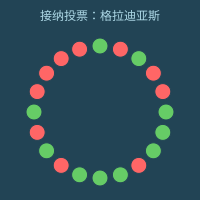
“哇”，主席叹道。“十比十，正好。按准入表决的规则，由我来投决定票。那么我投……”
他按下了桌上两个按钮中的一个。
“赞成。”

“欢迎加入掌舵会，格拉迪亚斯。”
格拉迪亚斯一走出大楼就看了看手表。准入表决进行的时候，手表一直在响，他一直没理会。
| 来自 | 消息 | 时间 | |
|---|---|---|---|
| → | 不好意思打扰你，是关于莉莉的事。她刚在公民课上考砸了。我觉得她见见你和塞拉会好一些。 | 45183 |
塞拉还在伊普塔克，格拉迪亚斯想。他只能自己去。
格拉迪亚斯懒得让翡翠规划去维尔家的路线。路他自己认得，也不算远。他动身步行，脑子里多半是担心莉莉的状态，还有一点——也许比他愿意承认的更多——懊恼：他的得意这么快就被不安顶替了，那感觉像是撞上了一个他完全不知道怎么解的问题。
“我这就来”，格拉迪亚斯对着颈带低声说——又一次，不是那一刻他有多想藏住隐私，只是到这时候他已经习惯了小声说话。“给我点我常点的那份吃食。我刚从准入听证会出来，会饿。”
| 来自 | 消息 | 时间 | |
|---|---|---|---|
| → | 你至少被录取了吧？ | 45501 |
“录取了。不过险得很。”
走了二十分钟，格拉迪亚斯到了维尔家。维尔给他开了门，随后又坐回自己的椅子。莉莉坐在沙发上哭。
格拉迪亚斯在莉莉旁边坐下，抱住她。
格拉迪亚斯等了一会儿，才开口。
“没事的”，他低声说。“分数不是一切。维尔、黛雅、塞拉和我都知道，你心里是个多美好的人，我们都爱你。”
莉莉不太高兴地把脸扭到一边。
“我们能帮你。只要找到一种你能产生共鸣的方式来学这些内容。”
“你们已经试过了”，莉莉抽噎着轻声回答。“这次测验我拿了59分。五十九分。全班倒数第三。”
“那你说，你们班最聪明的那个孩子，能像你六个月前那样给塞拉烤一个生日蛋糕吗？他能像你当年那样，在赫雷达出事故养伤的那个月里，天天给她送吃的吗？”
“你要明白，你已经是个很美好的人了。自信就是从这儿来的，你想变好的动力也是从这儿来的。”
“这些学校真该把公民课这样的内容，跟你生活里真正在乎的事连起来。我当初走上见习官这条路，就是因为看见掌舵会的激励在帮着把网络世界打开，让我能参与进去、给它写代码。你也会有属于你的那一刻。”
“下次公民课测验你要是考到75分以上”，维尔说，“我就带你一起去我下一趟北林。”
这激励粗暴得很，格拉迪亚斯微微皱眉——不过他心里也想着，不妨一试。
这时门铃响了。维尔起身走到门口开了门，是吃的到了。
维尔把吃食拿起来放到桌上，和格拉迪亚斯一起拆开。
莉莉慢慢站起来，也凑到桌边。三个人开始吃饭。
格拉迪亚斯的手表响了。
| 来自 | 消息 | 时间 | |
|---|---|---|---|
| → | ［请求通话］ | 59063 |
他接通了。
“莫夫，你怎么样？”
“我有点有意思的消息要跟你说。不过先说，你进去了吧？”
“险险地进去了。”
“进去就是进去了。”
“那你有什么新消息？”
“看来我们终究当不成掌则人了。密码学随机之神抽中我，下个任期开始当宣谕使。”
“哇。”
“对。所以从今天起，我手上再没有正式的权力了。”
“你打算当宣谕使做什么？我想不出你真去主持那些大会或者发表演讲之类的样子。你就打算去银聊上做个分区版主？”
“你太了解我了。不过还有一点，我会有更多时间帮你。”
那天晚上，格拉迪亚斯给塞拉打了电话。
“我进去了！”，他兴奋地说。
“我就知道你能行！”
“其实悬得很。十比十，主席破了平局。”
“赢了就是赢了。自从你跟我说要去做掌则人，我就一直为你在那个位置上能做的好事兴奋。”
“我会尽力的！”
第九章
帕佛盖都，泽国 · 3724年雨月28日
白和芬坐在一处院子里，边吃边喝。白脸上淌着泪。
“你知道吗，泽这孩子其实挺好的，”芬轻声说。“你要是能对他好一点，他能帮你太多了。”
“好一点，像你这样？”白反问，语气发苦。
芬犹豫了。他不知道该怎么接话。
“你知道泽带着他妈，跟我一起去自由城那一趟，我是什么感受吗？”她问。
“难受，因为你本想跟他单独走这一趟，可你看得出来，他并不想？”芬问。
“不是！”白喊道。
“我给你个提示。前几天那盘棋下完，你提议下一趟让我带上我妈，我当时就是那个感受。”
“你不喜欢你妈？”
“你从来没问过我妈是谁、在哪儿！我们见过十多次面，你一次都没问过。”
“好吧，抱歉。你妈是谁？”
“我妈死了！我爸也是。”
“我还小的时候，他们死在一场实验室爆炸里。是谁干的，你知道。”
芬的脸沉了下来。
“我住在我姑妈家。可她基本不管我，给我一间房，一天两顿饭，就这么多了。”
“所以我只能靠自己活下来。学着怎么自己挣钱。上高中的时候就在打零工。”
“所以，那些次我拦着不让他拿奖金去给他妈买算力盒，希望泽能原谅我。”
“我连妈都没有！我只有我的成绩、我的成就。现在连这个也被泽拿走了。”
她安静下来，往椅背上一靠。这些话她原本没打算说。停了一小会儿，她又开口了。
“可泽那几手棋，真是漂亮。我沿着对角线布下那么完美的防线，把他骗到那里去进攻，当时我特别得意，觉得那是我这辈子做过最聪明的一件事。结果他一出手，做了件更聪明的。”
“我确实想更懂你们。你们图什么，你们怎么想。”
白和芬都停了下来，各自喝了几口茶。
“换个话题吧。来，你想不想看看他们打算把泽国语下一版做成什么样？”
白的眼睛一亮。
“行啊，看看。”她回答。
芬掏出他的小册子，封面上写着“po so dze go ban de sia”——泽国语第九版的构想。
“泽国语是一部杰作，”芬解释道。“它始终在艰难的平衡里穿行：既要好学、语法要有逻辑，又要说着顺口、读着舒服，还得能用来谈现实生活里人们真正在意的事。”
“最早的几版，动手的时候，距上个世纪我们输掉对北极人的那场战争才过去十年，简单，也没什么争议：把图画文字换成字母，砍掉复杂的变格、变位和不规则动词。”
这时候，白已经听得入了神，眼里全是好奇。
“接下来是更难的取舍，在语法上。泽国语的语法可以非常有逻辑——只要你想让它有逻辑。拿个小学水平的简单句子来说：‘giu jan li mo fe jia dzu lie’。那人吃牛油果。‘li’是主语和动词之间的分隔词，‘fe’是动词和宾语之间的分隔词。计算机程序能直接解析，毫无歧义。”
“还能更复杂。‘lo mo fe jia dzu lie zo hen jun’。吃牛油果有益健康。‘lo’和‘zo’是开括号和闭括号。口语里，‘lo’可以省掉。”
“但这样就有了歧义。拆开看‘jia dzu lie’——黑心果。它是中心是黑色的果，还是既黑、又在某种意义上是‘中心’的果？理论上我们有专门的分隔词：‘ji’。我们可以说‘jia dzu ji lie’，歧义就少一些。但歧义永远无法彻底消除。木瓜籽的中心也是黑的。”
“所以必须在规则性和实用性之间找平衡。聊日常生活里常见的事时，得好说、好听。于是班孙培的祭司们就去试着优化意义空间的规则性，尽管他们清楚自己永远不会——也不可能——完全成功。”
“只要你掌握那256个词根，人们说的话你就能听懂一半以上。不是全部，但比从前好得多——从前，一个复杂的词，你没见过它本身，就完全猜不出它是什么意思。”
“他们为什么在这上面下这么大功夫？为什么不多花点力气去搞经济、搞技术，或者搞军事之类的？”
“这个嘛，我们要是去搞那些，北极人就炸我们。语言是无害的。我觉得连北极人都觉得泽国语了不起。另外，班孙培还有几次腾出手来改革计时体系——一分钟一百嘀嗒、一长时一百分钟、一天十长时，就是这么来的——而且我们让这套东西在全世界扎了根。连北极人都采用了。”
“你们是不是还有一本秘密教科书，里头连那个的第九版都规划好了？”
“有。我们想在某个时候用光尺取代米。光每一嘀嗒走十亿光尺。一光尺等于259.020683712毫米。”
“听说英格尔沃人挺喜欢这个。他们的旧计量单位被人数落了那么久，说又复杂又没逻辑；现在我们推出的这个单位，长度跟他们过去用的长度单位很接近，而且是直接建立在宇宙最基本的物理常数之上的。所以某种意义上，我们是在说他们一直是对的。”
白笑了。
“总之，泽国语的下一版——”
白打断了他。
“下次吧。这些让我挺好奇的，我觉得哪天该自己去研究研究泽国语的历史。”
“直觉不错！我保证，等讲到第九版会更有意思。泽自己看不到这些的价值，他最近满脑子都是棋。”
“我想也是。而且我看这事不会停，对他来说显然回报很丰厚。”
“也许我该找个时候跟他下几盘，图个乐——或者说，对他来说算练棋吧。”
“哦，还有，谢谢你岔开话题，让我心情好起来！”
泽穿过隧道，顺着手表给的指引走下楼梯。每到岔口，他都会四面看看，把周围记在心里。他从没进过这座山体金字塔这么深的地方。
最后，他来到一扇密封的门前，门边有个绿色的圆环。他把手表贴上去碰了一下。门缓缓打开。
门后是一间又窄又长的屋子，屋子尽头摆着一张长桌。桌边坐着一个人，披着一件暗影般的斗篷——不是维里迪亚的隐私袍，而是民本棋祭司的服饰。
泽慢慢走过屋子，在祭司对面坐下。
“欢迎。”祭司轻声说。
“我很荣幸能来这儿，”泽回答。“不过……您是谁？”
“我叫登，昆高培最高评议会的成员。谢谢你来。”
“昆高培？我们也有自己的秘密防卫组织？给泽国再养一支影子军队？”
“当然。你意外吗？”
泽犹豫了。
“前几天那盘民本棋，你的表现让我印象很深。”
“但让我印象深的，不只是你赢了。我把那盘棋的棋谱研究了一遍。让我印象深的，是你下出的那种策略。”
“说说看，你学过密码学吗？”
“我……知道点基础？大数分解很难；加密就是把数取立方，再对n取模；只有知道构成n的p乘q的人，才能把取立方反过来解密。”
“不不，那是科普层面的密码学。基于大数分解的那套东西，已经几十年没人用了；连椭圆曲线都过时了，因为大家都担心北极人哪年就搞出量子计算机。”
泽没接话。他回望着对方，心里一半是知识被更新的受用，一半是好奇：这场对话到底要往哪儿去。
“好。我觉得你上一盘棋，已经快从零开始把密码学的很大一部分发明出来了。”
“想想混淆协议。你想把一段程序交给别人，让他能运行，却看不到程序内部的细节。我们现代的密码学网络——比如给泽国的秘密组织处理支付、信誉和管理治理的那些——全都靠这个。”
“可你怎么做出一个能干这事的统一协议？把程序藏起来？把数据藏起来、再在隐藏的数据上做加法和乘法，这很好理解，尤其是把数据藏进大向量里、套上线性变换、再在上面叠一层误差。可你怎么把程序藏起来？你到底要把程序藏进一个什么样的‘可能程序’空间里？”
“解法——好吧，是某一类解法的一小部分——是造一个元程序。一个能根据输入运行任何程序的程序。这样一来，程序就被化约成一组数字，你只要对它们做加法和乘法就行。”
“这是计算机科学里最基本的把戏之一。我们的计算机，那些硬件本身，就是元程序。但你自己琢磨出了它一个非常基础的版本——仅仅十六种可能的算法，熔进一座工厂——再用它，加上一个藏起来的滑翔机来提供输入，把意图藏住。”
泽点点头。
“谢谢您的夸奖。不过……我现在很好奇，您说这些是要往哪儿走？”
“泽，我想把你招进防卫体系。”
泽眼睛睁大，嘴也张开了。
防卫。泽下意识地一张一合左手的每根手指。那条胳膊断过，养了一个月才好，起因只是一场热力学讲座。而登说的这个，不是讲座。
可他的命，恰恰是被这种工作救下来的——一次秘密而配合默契的临时换房。也许这就是他的机会，能替别人做同样的事。
“我确实希望你把民本棋一路下到全国赛。我觉得这对你有好处。但学业上，去学密码学。我想这对你的棋也有帮助。”
“当然，这一路我都会跟你保持联系。等你准备好了，我会开始给你派些任务。”
泽又一次用沉默作答。
派任务。他注意到，登很快就换成了那种默认泽会照他的计划走的语气。他身体里有一部分已经在给自己找答应的理由；另一部分则看着自己的热情一点点涨起来，并不完全信它。
“我有个主意，”登开口了。“你知道芯片验证是怎么做的吗？比方说，我现在是怎么自动把你身上所有电子设备都验成‘安全’的？”
登一说完，泽就开口了。纯属运气，登挑来考他的，正是他确实研究过的应用密码学领域之一。
“设备制造的时候，生产过程中会生成一个物理不可克隆函数——那是芯片造好后冷却、化学物质沉降下来时生成的一把密钥。连厂商都不知道它是什么。厂商会去探取设备的公钥——也就是那个p乘q，不过我现在知道了，根本不是p乘q，是完全不同的东西。然后厂商用自己的密钥给这把公钥签名，再把签名发布到密码学网络上。”
“行吧，把函数叫成密钥也算，差不太多。继续。”
“作为用户，你可以让设备对一个值签名。设备会照做。然后你拿从密码学网络上下载的公钥去验这个签名，确认它确实来自那家厂商。”
“然后还有公共检查员。他们随机从厂商那里买设备，用某种扫描手段做破坏性检查，验证芯片里的逻辑确实该是什么就是什么。”
“为什么要上密码学网络？直接签名不行吗？”
“这样你才知道总共有多少，也防住一种攻击：厂商作弊，或者有人黑了厂商的密钥，然后开始多签一堆本不该签的公钥。而且这样一来，你也知道签名是什么时候做的，从而知道它是在设备制造的时候签的。万一厂商的密钥被偷了，你还能分辨签名是在失窃之前还是之后做的。”
“那我要怎么验证你的设备？”
“无线问它要一个签名，跟我验证它的方式一样。”
“我怎么知道它不是把别处另一台设备的回应转过来的？”
“在这儿，因为我们深在山里。一般来说，我不知道。”
“芯片检查的流程是怎么走的？”
“这个我不知道。”
“检查员怎么知道他们拿到的设备，和普通消费者拿到的是同一批，而不是厂商特意挑出来骗他们的？”
“我不知道。”
“我们先想另一个场景。就说公共监控摄像头，装在路灯杆上、楼外墙上，或者巴士上的那些。每个泽国人都可以时不时随机挑一个，拧下来自己分析。正因如此，我们才知道它们只在该录、该传的时候录和传；从制造到安装，供应链上没有任何人能给它做手脚，把数据泄露给跟踪狂、内幕交易者或者北极人。”
“这就是随机检查机制——前提是那些把检查摄像头当爱好的人里，至少有一部分真的是随机挑的。这套适用于监控摄像头：它们本来就摆在公共场合，谁都能随便挑一个去拧。那这里呢？从厂商手里买的电脑芯片，怎么做随机检查？”
“好，那您说。”
“很好，我很高兴还有不少东西能教你。要不我们现在就去其中一家厂看看？”
泽想了一下。他给自己找了个理由：这还不算正式的承诺；而且那是他从没见过的东西。
“好啊，很乐意！”
泽和登走出屋子，穿过隧道，来到金字塔一个较小的出口。出口直通一辆长方形黑色汽车的内部。金字塔的门和车门形状一模一样，紧紧贴在一起。
泽和登上了车。
车门密封合上时，泽注意到车厢内壁衬着隔信箔。车有窗，但看出去外面的世界像蒙了一层暗色；他知道，从外面往里看，几乎什么也看不见。
车开动了，一分钟后驶进一条隧道。
那一刻泽意识到，这世上已经没有人知道他在哪儿了。
泽和登下了黑色汽车。这一次，车门正对着一道通往地下室的下行楼梯敞开的门，外面连一嘀嗒都别想看见他们。两人走下楼梯，最后进了一间大屋子。
眼前是成千上万个空的白盒子，侧面贴着带二维码的标签；一台机器正把从隔壁屋传送带上送出来的芯片自动装进盒子里。
登打开手持终端，给泽看了一张图。

“你以前见过这个吗？”登问。
“某种互联网的结构图？”
“这是混网。交易就是靠它进到密码学网络上的，而没人能看出是谁发的。”
“每个发送者的每条消息，都裹上三层加密。这个最外层的消息会被送到第一层的一个节点。”
“第一层的节点拆开最外面那层加密，看到里面又是一条加密消息，还附着一个地址，指明该把它发给第二层的哪个节点。”
“第二层的节点拆开下一层加密，看到里面又是一条加密消息，还附着一个地址，指明该发给第三层的哪个节点。”
“最后，第三层的每个节点拆掉那一层加密，拿到目的地址和真正的载荷。当然，通常载荷本身也是加密的。”
“哇，我没想到是这么运作的。所以要三个节点合谋，才能查出一条消息的发送者。”
“不只是三个节点——是三个随机抽选的节点。如果你特别多疑，还可以把最内层的载荷做成又一个信封，要求把消息在下一轮原路送回系统里再走一遍。”
“所以打包这一环做的就是这件事。那些盒子高度不透明、带防拆封口，二维码就是加密后的载荷。这是混网，只不过送的是实物。”
“你要是通过这套系统买东西，三个节点里只有最后一个知道你的地址，而它既不知道发件人是谁，也不知道送的是什么。如果你多疑到了极点，还可以把地址填成公共自提点，自己去取。”
“检查员也从混网下单。所以作为消费者，只要你也从混网买，你拿到的芯片就和检查员买的是同一批——厂商想把一块能过检的正经芯片交给检查员，就几乎不可能不同时也交给你。他们分不清哪块芯片——或者经这套系统流转的别的什么实物——会到谁手里。”
登往前走向一扇门。泽跟上他。
登把手表贴到一个泛着绿光的圆环上。门开了。
他们穿过一条走廊，拐了几个弯，又过了一道门，进到一间摆着一台大型显微镜的屋子。
“这是这家晶圆厂的检测中心。他们既检自己的芯片，也检别家生产的。”
“他们会用不同波长做多种三维扫描，确保芯片的实体与规格完全一致。”
“佩服。替我谢谢那位批准你带我们参观的人。”
“我会的。对了泽，我记得你还有个问题。”
“记得。不过那问题跟制造无关。”
“没错——是问验证的人怎么知道回应不是从另一台设备转过来的。这个答案我也能告诉你。我的手终端上跑着一套协议，会反复联系每台设备一百万次，要求整套协议在十分之一嘀嗒内跑完。所以无论签名从哪儿来，它必须在五十光尺以内——差不多十三米——实际上还要更近，因为芯片本身也有延迟。”
“那么泽，你怎么想？”
“您说过我还能打全国赛，对吧？”
“我是希望你打全国赛。”
“好，我加入——至少我可以先承诺把学业转到密码学，看看走得怎么样。”
登点点头。
登继续往前走，泽的思绪飘开了——先飘到就在眼前那台大型显微镜上，然后飘到别的事情上。
他开始想那天下午要怎么跟妈妈说。他可以说芬忙，说自己出去散了会儿步。但他不能把真相全说出来。昆高培不许——而且妈妈已经看过他挨过一次炸弹后养伤的样子。
第十章
自由城，联合城邦 · 3724年风月24日
扬的出租车停在自由城经济研究所门口，他在这里做研究员。他下了车，走进大楼，用手持终端碰了一下闸机付费进楼。
他余光瞥见，入场费比之前高了10%。
他走向餐厅区，看见大多数桌子都满了。只有一张桌子还有空位，而且已经有个女人坐在那儿。
“这儿能坐吗？”扬问。
“当然。”
扬坐了下来。
“我叫扬。”他主动说。
“我叫乌塔库。我来自贝尔帕基，在研究所读博士。”
一个机器人滑到扬身边，递上菜单。
扬很快扫了一遍，点了一份蔬菜配鱼的菜，还有一杯水。
他发现这里的价格也比以前高了。
“哇，现在什么都涨价了。”
“你没看新闻？”
“从哈普顿开完会回来就没看。”
“嗯，可这消息在哈普顿也该传开了。到处都在说要提高国防预算。”
“北极吓的？”
“对，他们的无人机活动越来越频繁。可奇怪的是，不少政客对此完全无动于衷。真正当回事的，好像只有红郡和它周边几个城邦。”
“嗯，还有自由城，不知怎么就也算上了。”
“为什么是我们？我倒不反对，可联合城邦里差不多有一半离红郡比我们近，他们才该更担心！”
“嗯，德文维尔是当真的——毕竟德文维尔议会有12% 的席位是红郡选的。可德普莱西、翁达克、因伯，一点都不上心。”
“是挺怪的。别忘了，这里的政府在宪法上被禁止征收基础土地税和自然资源租金之外的任何税。所以认真对待这个问题的根本不是政府，而是那些巨型企业。”
机器人回来了，端着扬的饭菜和水。扬接过那盘食物放到桌上，又拿起水杯，立刻喝了一口。
“他们现在把营收的3% 捐给国防，甚至还串通起来惩罚不捐的公司。莫格纳本来不愿意出钱——他们说了些腐败之类的话，不过大家都觉得他们只是抠门——结果那些充电站厂商联合起来，威胁说除非莫格纳也加入，否则就把莫格纳的车挡在他们的充电网之外，那可是自由城90% 的充电站。昨天莫格纳认了。”
“这……够狠。要是放在平时，哪个行业敢这么干，自由城得有一半人反过来串通对付他们，说不定还会出钱扶5家新公司跟他们打对台。”
“平时是这样。可你也知道，现在时势不同了。”
梅尔丹，维里迪亚
“要去参加你的第一次掌则人会议了？”塞拉问格拉迪亚斯。
“我的头两场掌则人会议，连着开。第一场是公开活动与演出中的文化价值——其实就是当年我给恐结打分的那条评则。”
“哦，那场活动中的文化价值，要讨论什么？”
“我在群里说过，我觉得这条评则逼得大家一味平淡，只为不冒犯任何人。没想到还有几个人赞成。这次我想使劲推一把，把这点改掉。”
“Veridia ba ‘fun’ gie！”，塞拉开玩笑道。
“该换掉的不是那个‘gie’吗？‘fau’只是‘再’的意思。”
“啊，对。”
“不过没错。维里迪亚会重新有意思起来。”
“那第二场呢？”
“硬件开放度评则。议题是要不要修改它，把军用和监控产品豁免出去。”
“嗯？那有什么利弊？”
格拉迪亚斯仔细斟酌着该怎么说。他犹豫了一下要不要提德尔瓦特，最后还是决定不提。
“这个嘛，”他开口道，“有些掌则人认为我们该从资助战争里抽身——那是负和博弈，双方都有更好的炸弹和战斗无人机，结果还是一样，只是炸掉的东西更多、受伤的人更多。”
他对自己这番话很满意。他隐隐觉得，塞拉对任何可能伤到泽国的事都很敏感，会求他采取对泽国最有利的立场。他绷紧了神经，等着塞拉的下一个问题。
“可是资助……那不是更多属于图谱资助那边的问题吗？”
格拉迪亚斯在心里松了口气。
“别忘了，我们也造武器，还有监控产品。而评则会决定我们把多少看家本领留给自己。”
“原来是这样……”
“那好吧，开完会记得告诉我怎么样！”
格拉迪亚斯沿走廊走下去，进了一处庭院。那里排着一列隔间，装着厚实的滑动门。他照吩咐走到最右边那间。
他把隔板拉开。这要费不小的力气。他立刻看出，这间隔间比大梅港那些蒙布的隔间正规得多。隔板拉开的过程中，他能看清它的内部结构：里层是一层隔信箔，接着是若干层隔音材料，还有几层他认不出来。
这时他还注意到，隔间外侧四面都持续发出低沉的嗡鸣。他明白过来：这是白噪声，用来进一步掩盖穿过隔音墙的一切声音。如果噪声是40分贝，而墙足够好，能把声音衰减50分贝，那它就能盖住里面高达90分贝的声音——想留安全余量的话，也许70分贝。这足以完全盖住任何交谈。
隔板完全拉开后，格拉迪亚斯朝隔间里看去。一张桌子从门口附近一直伸到对面的墙，两侧各有一条长凳。
里面已经坐了5个人，都穿着隐私袍。
“欢迎！你一定就是四号。”其中一人大声说道。
“正是。”
“在这个圈子里我是二十号，三年级。我们有两个二年级——不过十一还没到——两个三年级，另外两个一年级，现在再加上你。”
“很高兴认识各位。”
格拉迪亚斯在二十号旁边的长凳上坐下。二十号的手持终端开着，格拉迪亚斯能看到他在翻最近的审计——那些审计评估各家企业在文化价值评则上的状况，以及由此作出的裁定。
过了一会儿，又一个掌则人走了进来。他回身把隔板拉上，坐了下来。
“那么，文化价值评则。”另一个三年级开口道。
“是活动与演出中的文化价值评则，”那个一年级——一号——纠正道。“我们不碰社交媒体和其他线上内容，那是另一条评则。我们也不碰建筑和公共广告牌，那些归美学税管。”
“大家都知道，在这儿不用显摆。”那个三年级回了一句，语气里带着玩笑的分寸，既想点明又不愿得罪一号。
“我们想怎么进行？也许该先就我们要解决的问题达成共识？”
“先过几个例子吧。”一个此前没开口的二年级说。
格拉迪亚斯看到了插话的机会。
“你们怎么看恐结？”
“什么意思？”
“上次审计，他们的税被提到了第4档。”
格拉迪亚斯开始念评则。
“内容较弱地提倡以下一项或更多：暴力、违法行为、使用不推荐物质、赌博或高风险投资、过度炫富、糟糕的冲突处理方式、宗教或族群仇恨。”
“我们觉得恐结犯了提倡暴力、违法行为或仇恨这一条吗？”
“他们上一首歌写的就是毁城、剥人皮。凭什么不算？”
“我们真觉得那些词会让人想在现实里剥谁的皮吗？那只是一首歌。我记得几年前游戏也闹过这一出，最后科学界给出的结论是：游戏可能略微增加几种攻击性行为，但没有证据表明它们真的会导致暴力。”
“我也记得。不过我的理解是，证据给出的结论比这更严厉。”
“要不要把那些研究翻出来，一起过一遍？”
另外几个掌则人点了点头。他们开始对着手持终端低声下指令。
格拉迪亚斯趁势接着往下说。
“可就算抛开这些不谈，我们真想让维里迪亚变成这样一个社会吗——创作者时时刻刻得操心这个，歌、游戏、电影全都变得无聊苍白？”
“他们不必时时刻刻操心。这正是维里迪亚这套监管体系的意义。我们不是禁掉他们，只是把他们的税调高一点，而不是调低一点。他们本来就有十件事要操着中等程度的心——粉丝喜欢什么、什么会得罪或不会得罪赞助企业，等等——这些事不会压垮他们，但确实有影响。我们只是请他们多想一件事：公共利益。”
格拉迪亚斯决定换个角度再试。
“其实总的来说，我挺喜欢这条评则。北林科学中心让孩子们能在那儿了解化学、生物和火箭，是那么好的一个地方，因此得到奖励，我觉得很好。”
“可暴力是生活的一部分。人类最初不过是一群为香蕉打架的猴子。我们还住在森林和洞穴里的时候，四分之一的男人是被人杀死的。学校里逼我们研读背诵的史诗里有暴力。每一部《大典》里的英雄都干过暴力的事。我不认为我们该彻底阻止维里迪亚人去接触人性中如此核心的一部分。如果我们让公共媒体永远处处避开暴力，那人们关于暴力的所有观念就只能来自互联网的阴暗角落——那里没人被征税——那只会更糟。”
“有研究试着量化过这个吗？”二十号插了一句。
“我不知道这件事能不能用研究量化。”格拉迪亚斯回答。
另一个三年级又开口了。
“这样很好。我感觉我们已经提出了几个重要问题，不只是科学层面的，还有我们底层的目标和价值。”
“我觉得该把当年那些游戏研究重读一遍。另外，也该看看维里迪亚民众怎么看这件事。能让翡翠做一份大范围的聆听报告吗？听听过去一年人们在蓝鲸或银聊上是怎么说恐结的。”
“我不觉得社交媒体上人们说的话，就一定是‘什么对人好’的好指引。”十一号插话道。
“好，不过我们现在就花点时间读一读吧。”
格拉迪亚斯点头。另外几个掌则人也跟着点头。
“稍等一分钟。蓝鲸从来都只让人用他们自己的界面看站内消息，我有几个绕过去的办法。”
差不多正好1分钟后，每个掌则人的手持终端上都弹出一个新窗口，实时显示翡翠的思考过程——它正在抓取并摘记蓝鲸和银聊上人们关于暴力与恐结的言论。
掌则人们都开始紧盯着自己的手持终端——有人读电子游戏的研究，有人看翡翠思考。
格拉迪亚斯站在外面，小口喝着一杯温水。他的第一场掌则人会议开了75分钟，已经结束，他正在用这25分钟的休息时间。
他的手表震了一下。
| 来自 | 消息 | 时间 | |
|---|---|---|---|
| → | 下一场掌则人会议5分钟后开始 | 39500 |
该走了。
格拉迪亚斯拐过弯，走完最后几步，来到隔间前。
他很快到了，拉开隔板。
里面已经坐着两个掌则人，一边一个。两人都穿着隐私袍，兜帽和面罩都还戴着。
“两位好！”
“你好！我是十八号。你是几号？”
“我是六号。”
“我是九号。”
十八想了片刻，然后站起身。
“等等，趁别人还没来，你们能不能都再站起来一下？”
格拉迪亚斯和九都站了起来，暂时走出隔间，开着门从外面往里看。
“好，我们看看。”
十八把手持终端切到另一种模式，开始在屋里四处挥动。他又取出一架无人机，在手持终端上按了几个键。无人机开始贴着屋子边缘飞，桌子上面和下面都转了一圈。
十八做扫描时，九默默看着。又有两个掌则人到了，悄悄站到他们身边。
“嗯，没有东西在发射信号，热成像也没探到任何通电的电子设备。”
1分钟后，无人机在远端桌面正中上方出乎意料地响了一声。
十八拿着手持终端扑到那个位置，开始仔细查看、戳弄桌面。过了一会儿，他得意地站起来，手里举着一个针状装置，尖端有个几毫米宽的圆头。
“那是什么？”格拉迪亚斯问。
“窃听装置。桌面上有个小凸起，它就藏在那底下。要把这种东西插进去，事后还能把桌面补得这么好，肯定得有相当的手艺。”十八答道。
“哇。”
九走上前，看了一眼那个装置。
“我怀疑这东西不是冲着我们来的，”他说。“干这种事的人，通常是想拿到企业即将公布的决策消息，再据此在金融市场上交易。目标一般是那些没那么小心的小企业。掌舵会在这上面相当安全。我们这个掌则人小组只是三个讨论组之一，就算你真偷听到，也只拿到三分之一的视角。何况我们全都通过颈带说话，声音是以数字方式在我们之间传递的。”
“其实这个还带了摄像头。它能读你的嘴唇和颈部动作，所以说不定还是够它辨认出一些词，尤其如果你是新手的话。”
“你怎么知道？”
“无人机就是靠这个发现的——红外光在摄像头镜片上反射。我的手终端也用非线性结检测器捕捉到了，可要是无人机没告诉我该往哪儿看，我很可能就漏掉了。”
最后两个掌则人到了。
十八走出去，说明了情况，大家一起看了那个窃听装置。几个掌则人用手持终端扫了它。看完之后，十八号把窃听装置掰成两半。
十八带着大家走到几米外另一间空着的隔间，拉开隔间的门。
他花了两分钟检查新隔间里有没有窃听器，同样动用了自己的手持终端和无人机。检查完，他打了个手势，7个掌则人一起进去，在长凳上坐下。
刚到的掌则人里有一个清了清嗓子，像是准备发言。
“不如直接进入正题？”那位掌则人开口道。
“好啊！”格拉迪亚斯答道。
“我们要谈的是开放度评则，以及怎么为军用硬件调整它。”
“嗯，材料我读过。”
“另外，我跟那边的零聊过几次。他的主张是干脆把军用硬件完全豁免。理由让他自己讲。”
零听到自己的编号，立刻抬起头。
“通常来说，开放硬件是好事，因为别人可以在上面继续做东西，大家都能受益，对吧？”
“对。”
“可你想想军用领域会怎样。所有人都有更好的武器，对世界其实并没有净收益。如果所有人的剑都好一倍，盾也都好一倍，两者正好抵消。”
“如果所有人的剑都好一倍，盾却不变，那任何一场战争里双方的优势依然抵消，只是受伤的人更多。”
“可如果所有人的盾都好一倍，剑不变，那不是好事吗？”
“也许吧，”九插话。“可实际上比这还要复杂。万一打的是一场消耗战呢？大家都加强防御，受伤的人数不变，只是拖得更久？又或者防御增强反而削弱了威慑，于是战争更多？”
格拉迪亚斯很意外：这套说法和德尔瓦特最近对他讲过的一番话像得出奇。
“说到底，博弈树太混乱了，我们根本无法可靠地确定任何事。所以我认为我们该置身事外，改为对所有军用硬件——开放的也好，不开放的也好——都提高掌舵税，把人们推向去做更有用、更亲人类、更有意思的东西。”
一个三年级插话：
“我不认为我们什么都无法确定。看看联合城邦。它们彼此独立了几百年，还琢磨出共治这样的机制，推动彼此更好地合作，而不是干脆合并成一大团——这其中有很大一个原因，很明显，就是它们所在的大陆上有那么多山脉和半岛。所以，如果大家都加强防御，就会有更多人保住自己的自由和主权。这一点我相当有信心。”
十八又举起手。其他人转向他，他开口了。
“我不认为我们可以把局势当成一个黑箱来看。看看我们现在的位置：北极帝国的技术最先进，我们第二。在军事技术上，泽国和联合城邦最为落后。”
“所以我们公开任何与军事相关的开源成果，对北极人毫无好处，对我们则略有好处，因为我们自己造起来更容易。”
“但对泽国来说，那是生命线。他们在最高端没有自行研发专有技术的体系，却很擅长照着开源方案制造和改进。20年前，我们把编程语言和形式化验证做到了这样的程度：设备代码里基本不再有能让外人从外部夺取控制权的严重错误。正因为这些东西是开放的，泽国人才得以采用这些技术，更好地保护自己不受北极的破坏行动所害。”
“可我们真想玩这个游戏吗，”零号接着说，“对自己‘谁是好人、谁是坏人’的判断这么有信心？计算机安全是防御性的，那没问题。可我们下一项发明出来的技术可能是进攻性的。那我们岂不是只会让所有人的军备竞赛进一步加速？”
“我甚至不太相信北极人有那么大的威胁。没错，他们现在在联合城邦北部晃悠的无人机更多了，但我不觉得意图是攻击。我认为他们只是想用实力震住我们，好让我们向往他们的意识形态。”
“你觉得我们该更接受他们的意识形态吗？”
“我觉得该保持开放的心态。只是别忘了，泽国人也肯定在试图操纵我们。”
讨论安静了片刻。格拉迪亚斯没有急着开口。他还想先弄清别人是怎么想的，再形成自己的看法。
“大家先各自再想想。这事我们还会继续谈，后面还有几场讨论，最后一场在4个月后。而真正的表决要等到6个月后。”
帕佛盖都，泽国
白和泽一起坐在院子里的一张桌旁，两人都盯着各自的手持终端。
“芬这次不来？”白问。
“不来，”泽答道，语气里的失望很明显。“他在忙班孙培的事。”
手持终端震了一下。轮到他们的干预回合了。泽摆下几架滑翔机和几艘载符飞船。几百个回合过去了。
突然，那艘飞船撞上岩层、正在反射的时候，白的滑翔机撞了上来。飞船炸开，化作一片滑翔机风暴。
“什么？”泽喊了出来。
“抓到你了。我在那条路线上留了一个符记，正好落在你看不见的位置。所以你的飞船边缘一过来，我就看到了。”
泽闷哼一声。那已经是他挽救这盘棋的最后一搏。白的滑翔机又涌进来，把他西南角仅剩的两个符记也撕碎了。
泽点了认输按钮。
“好棋。”泽说。语气还不算完全真心，但已经比以往任何一盘输给白之后都要真诚。
“你知道，全国赛上我需要你帮忙。”
“乐意。只要你……”
“嗯，我知道，你现在想去维里迪亚看看。”
“总之，谢谢你那次锦标赛里把你的思路讲给我听。让我想了很多。”
“那当然。”
“你当然乐意重温打败我的那一刻，就像我刚才赢你赢得很开心一样。”
泽叹了口气。
“总之我得走了。昆高培的评议员登又叫我去见他。”
泽走进那间长屋，立刻看见登和穆坐在对面。
“谢谢你来。”
“应该的。您推荐的那些基于哈希的签名我都看过了。那套构造很有意思，尤其是那些无状态的树套树结构。”
“你现在明白了吗？当初我看你下民本棋的风格，就知道你在这上面会有出息。”
“我想我明白！”
“你真是了不起。不到一个月就把密码学讲座的三分之一赶完了，前两次测验还都拿了满分。我想不出有谁做得比你更好。”
听到这句夸奖，泽眼里闪过一丝满足的光。
“泽，你知道我为什么叫你来吗？”
这时，泽想到了登这句话一种可能的含义，脸上那点高兴瞬间变成不安。
“您是要劝我全职做这个吗？比如，放弃民本棋全国赛？”
穆笑了。“看来我猜错了——这一层你还是没懂。”
“嗯？”
“你想过没有，民本棋为什么这么郑重、有这么多仪式、祭司要进地牢待上好几天，还有那么多经费？”
“它是一项运动。很多国家的运动都很受重视，经费也很充足。”
“智力运动不算。这类运动的观众不够多，光靠广告、国家荣誉之类的原因撑不起这么多经费。”
“那到底是为什么？”
穆往前倾了倾身。
“因为民本棋不只是一项运动。”
泽怔住了。
“它是军事训练。”
“这项运动存在的全部意义，也是我们如此支持它的原因，就是培养下一代的防卫者。”
“我们需要能在压力下快速思考、从战略层面思考的人。”
“既要能与敌人较量，也要能与盟友合作，哪怕是跟自己合不来的盟友。”
“能理解战场的人——从战斗本身，上到大战略、资源与后勤，下到侦察、保密与诡计，直到最根本的熵。”
“能应对规则突然变化的人。”
“既能事无巨细地管控，也能定下一个计划、放它自己展开的人。”
“还有能用上最新技术——包括 AI——又懂得它的局限、能绕开这些局限的人。”
这些念头一下子全砸到泽头上。他起初想问一个很基本的问题：为什么要装作一项棋类运动，为什么不干脆建一支常规军队、常规征兵？可这个念头刚一成形，他就已经知道答案：北极人会把全部精力用来针对任何那样的东西。民本棋之所以安全，只因为它伪装成一项纯粹的运动。但泽知道，即便如此，这层伪装也不可能永远安全。
“为什么现在告诉我这些？”
“因为我们现在既让你在密码学上用功，又让你继续打全国赛——总得给你某个理由。要是不告诉你，你可能会起疑，最后自己琢磨出来，然后干出蠢事，比如兴奋地把自己的发现嚷给十来个人听。”
泽点点头。
“我不会告诉任何人。连芬也不说。”
登和穆点了点头。
“等全国赛到了，你会需要一个熟悉你风格的陪练。”
谁都没说出那个名字。也不必说。
“谢谢你的支持。”登答道。
"Dze go ba fau gie"，穆补充道。
"Dze go ba fau gie."
第十一章
梅尔丹，维里迪亚 · 3724年花期15日
塞拉、黛雅和维尔一起站在一片大草地上，附近还有不少别的家庭。
黛雅远远望见格拉迪亚斯正走过来，便朝他挥手。格拉迪亚斯看到了，脸上带着笑，加快脚步朝他们走来。
“在这儿见到你真好！”黛雅高声说。
“我儿子第一场真正的翔球比赛，我怎么能缺席。”格拉迪亚斯答道。
“那你最近怎么样？”
“嗯，掌舵会的事一大堆。你也知道，这些不能拿到公开场合说。不过进展挺顺！”
“你呢？”
维尔开口了。
“嗯，就是起诉分歧资本那桩官司，材料一大堆。这两个月占了我很大一块时间。”
“再跟我说说，那案子是怎么回事？”
“啊，抱歉，我一直不想拿这些琐事烦你们，我知道你们手上已经堆了一大摊事。”
“别这样，维尔，你的事对我们很重要。”
“嗯，你还记得半年前吧，跃升破产，我丢了工作。一个月后，另一个员工联系上我，我才从他那儿知道真正发生了什么。你看，官方说法本来是——”
“这事我在新闻里看到过。跃升当时撑不下去了，为了最后一搏，他们在金融市场上押了一把大的，买进了一个地区的房价衍生品——他们原本正要宣布去那个地区开展业务。可这招没奏效——在意的人不够多，接着又赶上运气差，房价下跌，整件事就崩了。”
“正是。但我打听到的是这样：跃升之所以能在这么小的市场上押下这么大的注、又不至于承受离谱的滑点，唯一的原因是有一家对冲基金——分歧资本——接了赌注的另一边。而分歧资本的主要股东早就悄悄用极低的价钱买下了跃升的多数股权。”
“如果那个地区的房价涨了，跃升赚、分歧资本亏，对他们来说净额是零。如果房价跌了——事实也是如此——跃升亏、分歧资本赚，净额还是零。而不对称的地方在这儿：跃升一旦亏了——他们也确实亏了——就会宣布破产，这样年终奖不用发，员工一年的遣散费也省了。所以他们是踩着我们的背，给自己白送了一份期权。”
“我们发现这件事之后就起诉了——所有员工一起，以集体诉讼的方式。打得很艰难；分歧资本甚至吓住了一些媒体，让他们不敢报道。不过我觉得到现在为止，法官看穿了他们的花招。所以我还挺乐观的。”
一声响亮的哨声传来，他们转头朝声音传来的方向看去。
是教练。一辆大卡车已经开到了草地中央。
“翔球比赛五分钟后就开始了！”教练喊道。
教练按下一个按钮，卡车后门缓缓打开，以底部的铰链为轴向后翻。几个嘀嗒之后，它变成了一道斜坡。
几台个人飞行器自动从车里滚了出来。它们只是些简单的椅子，顶上装着旋翼，四周有一圈护罩。
一群十到十二岁的孩子朝卡车跑去，一半穿黄衫，一半穿紫衫。穿黄衫的孩子里就有兹文。他们抓过自己的飞行器，开始把自己绑进座位里。
教练走进卡车，很快抱着一个更小的箱子出来。他打开箱子，四架鲜红色的无人机弹了出来，飞上天空——它们形如几厘米宽的圆球，顶上装着柔软的羽毛状旋翼。
“欢迎来到今天的翔球比赛。”教练说。“今天咱们打一场限定赛，只用红球。抓到红球就把它带回来交给我，你们队得一分。先拿满六分的队获胜。”
这时十个孩子都已经绑进了各自的个人飞行器，旋翼开始转动——转速刚好足以抵消大约四分之三的地球引力。孩子们兴奋地四处跑动，有人跳起来，升到离地约两米，又轻轻滑回地面。
“都知道该怎么打吧？”教练问。
“知道！”好几个孩子齐声喊道。
“那么比赛开始，五……四……三……二……一……起飞！”
个人飞行器升上了天空。
“说真的，学校到现在还办这个，我挺吃惊的。”格拉迪亚斯对塞拉说。“这玩意儿要是今天才发明出来，他们肯定会说太危险了。”
“它发明出来还不到十年呢。”
“在泽国。”
兹文看见了一个红球，开始朝它飞过去。过了一会儿，两个穿紫衫的孩子也看到了那个红球，紧跟着他追了上去。
红球突然向左改变了方向。
兹文和另外两个孩子也跟着左转。兹文飞行器的旋翼护罩撞上了另一个孩子飞行器的旋翼护罩，两台飞行器轻轻弹开，没有出事。
兹文想让飞行器飞得更高。他稍稍落在了刚才撞到的那个孩子后面，而第三个孩子向前飞，很快就到了他正下方。气流把兹文往下吸，没多久他的脚就弹到了那台飞行器旋翼顶上的格栅上。
兹文赶紧跳开，他和那个孩子一起往下翻滚了几米，才稳住身形，各自朝不同方向飞走。
“这些东西上的 AI 现在是真厉害了。”格拉迪亚斯低声说。
红球又突然改变方向，这次是向上。兹文立刻把旋翼开到最大功率，向上爬升。刚才被他撞到的那个孩子还在他下面几米，另一个孩子没能及时注意到红球变向，于是兹文抢到了前面。
兹文看着红球越来越近，又近了一些。现在它只在他前方一米。
红球突然关掉旋翼，开始下坠。兹文反应很快，就在球落到他脚边高度时把它踢了上去，同时把飞行器往前挪。他伸出手，把红球抓在了掌心里。
然后他把飞行器对准教练的方向飞去。旋翼慢了下来——但没有完全停。等兹文以每嘀嗒五米的安全上限下降时，旋翼又加速转起来——那是从不到两米高处落下、撞到地面时的速度。教练看着兹文落地，伸出手接过他递来的红球。
“本场比赛第一个接到球的是兹文，黄队得第一分！”
他再次把红球放了出去。红球飞快地射向前方，方向与兹文站的位置正好相反。
兹文重新飞上天空，继续寻找更多的红球。
“赫雷达、莉莉和费布里克最近怎么样？”格拉迪亚斯问黛雅。塞拉听到了这个问题，微微把头转向他们，想听答案。
“赫雷达去北林参加数学竞赛了。我们一直在想办法让莉莉对艺术多上点心，不过到现在也没什么成效。”
“我还跟兹文聊了一会儿，他给我看了他的作业。我挺意外的。我看他们给他出的算术题，好像比费布里克当年同年龄做的……稍微浅一点？”
“多穆斯接得漂亮！”教练喊道。“盖尔也接得漂亮！紫队两分。”
塞拉加入了这个话题。
“嗯，格拉德，你可是——”她收住了话头，猛然想起，哪怕只是点明“掌则人”三个字也不合规矩——“你现在是掌舵会的人了。掌舵会能做点什么，让维里迪亚的教育更好一些？”
“你也知道，学校不归掌舵会管，公立学校由教育委员会运营，人员出自议会。不过一直有人在琢磨，想多支持一些私立学校——用图谱资助去支持，再设计些评则，给他们合适的激励。”
“也许你该在掌则人会议上推一推这件事？”塞拉答道，对着手表低声说——她把手表当颈带用。与其每句话都得小心斟酌、免得泄露格拉迪亚斯的职务，不如干脆私下聊，她想。
德尔瓦特会支持的，格拉迪亚斯想。不过要是私立学校不附带任何评则的微幅引导，他会更支持。
“兹文又接得漂亮！黄队得第二分。”
格拉迪亚斯和塞拉的注意力回到比赛上。天上有三组孩子，每组三人，各自追着一个球，都以为那是不同的红球。兹文独自飞着，没想加入任何一组。他只是在天上漫游，眼睛不停扫着地平线，想找出第四个红球可能在哪里。
有个孩子从天上栽了下来，不过旋翼的 AI 自动缓冲了坠落。他落到地面，几个嘀嗒后又站起来，重新飞回天上。
一分钟后，一个孩子落在教练身边，把红球交给了他。
“盖尔又接得漂亮！紫队得第三分。”
红球重新飞上天，盖尔和另外两个跟他一起追球的孩子又一次追了上去。
又过了两分钟。另一个孩子落在教练身边。
“德拉接得漂亮！黄队得第三分。”
再过一分钟，又有两个孩子几乎同时落地：
“普拉特接得漂亮！黄队得第四分。”
“梅尼也接得漂亮！紫队得第四分。”
兹文继续独自寻找第四个红球——别的孩子似乎已经彻底忘了它还存在。
“埃加多接得漂亮！紫队得第五分。”
“德拉又接得漂亮！黄队得第五分。”
他开始往更低处飞。
格拉迪亚斯和塞拉看到盖尔甩开两个对手冲到前面，正准备接球。红球就在他前方一米。
盖尔伸出手，准备抓住它。
就在这时，另一个孩子突然撞上了他，他向右偏出好几米。那个孩子想趁机去抓红球，可红球迅速掉转方向往后飞，正好从两人中间穿过。盖尔和那个孩子在球掠过时都伸手去抓，却都没抓到。
盖尔先重新看到了红球，迅速朝它飞去。他的两个对手随后跟上，但至少落后十米。
盖尔和红球一起升高，他离红球越来越近。五米。四米。三米。
与此同时，兹文不知怎么忽然朝地面落去，照例由飞行器的 AI 缓冲了坠势。
高空之中，盖尔远远高于其他选手，得意地举起手，攥紧的拳头里握着那个红球。
观众里不少人欢呼起来。盖尔绕开跟在身后的另外两个学生，开始以每嘀嗒五米的最大速度往回下降。
忽然，格拉迪亚斯和塞拉的目光转向兹文。他已经从飞行器里出来，正朝教练跑去。
盖尔还在大约三十米的高空时，兹文摊开手，把他在草地上找到的第四个红球交给了教练——那球的旋翼已经坏了。
“还有，兹文接得漂亮。黄队得第六分。黄队赢下比赛！”
格拉迪亚斯松了口气。
塞拉为兹文满脸自豪。
“他选了人迹更少的那条路，”她轻声念道，引的是一位维里迪亚老作家的话，“为众人开出一条道来。”
格拉迪亚斯拉开隔板，走进隔间，又把隔板拉上。
另外三个掌则人已经在了。还有三个人，格拉迪亚斯想，一定还在路上。
这是格拉迪亚斯被分配到手的第三个掌则人小组，议题是空气质量。在这里，分配给他的编号是二号。
格拉迪亚斯立刻掏出手表，对着颈带低声说话，查询当前房间的空气质量。
| 空气 | |
| CO2 | 906 |
| PM2.5 | 4.4 |
| 设备 | |
| 已证 ✓ | 16 |
| 未知 ? | 0 |
“才四个人，怎么就906了？”他问。“过滤器工作得很好，不过我猜他们还没想好怎么给这种保密隔间做通风？”
“是啊，基本上所有人都远不达标。我们一直在说，这个档位的税得全面上调。”
格拉迪亚斯手表上的 CO2读数刷新了，现在是918。
“我觉得人们自己会想到办法的。”另一位掌则人答道。“问题只在于技术要足够开放、足够容易铺开。过去十年，我们每两年就把这类过滤器的成本压低一半。”
“可我觉得我们得更用力推一把。”格拉迪亚斯答道。
“室内空气质量税的评则现在是怎么规定的？”
“它是土地税的一个组成部分。空气质量完美就是零，有人的房间平均读数超过一千，每年就多收0.33%。装了过滤器或者紫外线消毒，限值会放宽。”
“才0.33%？就为了理论上完美和糟到极点之间的差别？”
“土地价值的0.33%，每年。对很多企业来说，这差不多是他们收入的六分之一。”
“土地税里要算的东西太多了。公共美学。无障碍——既包括对残障人士友好，也包括让人能自由穿过你的地块、不被围栏挡在外面。你在多大比例的地块上盖楼。一层活跃用途——不过这一项有争议，有人觉得干脆并进美学里算了。应急准备。消防安全。条目太多，实在塞不下。”
“再说了，维里迪亚人哪有那么爱生病。看看我们一个月前做的那份广泛聆听报告，室内空气传播疾病的防范根本排不进维里迪亚人最关心的前十项。”
“一层活跃用途不只是美学问题，它还能提升步行友好度、缓解拥堵——”
“行吧，不过我觉得那些目标该直接去管。”
“总之，那不是我们这条评则该管的事。空气质量才是。你漏掉了尾部风险。”
“什么尾部风险？”格拉迪亚斯插话道。
“超级大流行病。比如北极人故意放出来的那种。”
“有任何证据表明他们在搞这类东西吗？”
“他们那个社会封闭得不行。我们唯一能拿出来的、证明北极人知道维里迪亚存在的证据，就是得常年听埃菲里昂勋爵布道。”
“那么摆在桌上的方案有哪些？”
“把上限提高到0.67%。然后去说服各个资助机构——图谱资助、二次方资助、议会拨款——让他们多支持开源的——”
另一位掌则人插话：
“二次方资助？那一轮现在乱成一团。有人放出一个程序，你下载到设备上，证明自己给某个研究社交媒体极化的项目捐过款——其实那个项目也不怎么样——就能拿到奖励。你捐十个齐普币，能拿回二十个；算上封顶配捐，项目方到手一百个。参加的人很多。结果昨天蓝鲸有个内部人士爆料，说那些事全是他们干的。”
“蓝鲸？可他们图什么？那个项目又不是他们控制的。”
“钱流到哪儿都无所谓。哪怕那项目是雇伊普塔克的人来挖坑再填回去，他们照样会干。他们的目标就是把所有跟开放平台沾边的项目的资金抽干。把开放生态饿死，封闭生态自然就赢了。”
“行，那就还是走图谱资助。通过我们的渠道向图谱资助那边建议，让他们多支持开源的空气过滤、清洁、污水扫描之类的技术，全都算上。”
“连污水扫描也要？你还想再把大家的隐私砸得更碎？万一北极人黑进来，把那些数据全拿走，他们就能查出谁住在哪儿——哪怕人搬了家也一样——还能查出每个人什么时候健康、什么时候生病？”
“我记得一直说没有证据证明北极人真在搞那种疯狂勾当的人，不就是你吗？”
“难道没有某种密码学办法，能让我们从扫描结果里拿到想要的数据，又永远不把原始明文数据集中收集在任何一处？”
“行啊，你要是能找到个天才把这种办法想出来，记得告诉我们。”
格拉迪亚斯下了巴士，拉了拉隐私袍正面面罩上的带子。脸还是遮着的，但鼻梁上下两片之间的束带现在不再勒得那么紧了。病毒防护弱了一些——离开了巴士那种异常拥挤的室内空间，他也不再需要那么严——但更舒服，呼吸也顺畅。他动身走回家。
他路过几个月前撞见费布里克的那家餐厅。餐厅外墙上有一则广告。广告左边是海德菲尔的吉祥物，穿着品牌经典的黄绿配色，怀里抱着一个小孩，用后背挡住一股泥浆似的绿色水流。广告右边写着：
重水，其氢原子被带中子的同位素氘所取代，已知在大剂量下具有毒性。
我们研究过竞争对手的水，发现其中平均每百万份含145份重水。
我们的水取自维里迪亚新鲜的“北方寒冰”，勇敢地从距北极边境仅三十公里处开采而来，其中每百万份只含132份重水。
因此，我们的水比竞争对手的毒性低百分之十。只有我们在乎你的健康，没有别人。海德菲尔想治愈你、保护你。我们的竞争对手觉得你就该淹死在污泥里，死掉算了。
相信海德菲尔。今天就买海德菲尔。
格拉迪亚斯笑了。他继续往前走。
忽然，有人从背后一把抱住他。
格拉迪亚斯转过身。
“塞拉！”
“总算在你回家的路上堵到你了。”
“你今天剩下的时间过得怎么样？”
“我把那篇写自由城城市经济的文章写完了。已经发到网上，你去看看。”
“哦，我很期待。”
“扬最近跟我讲了点八卦，说那边的人对北极越来越发怵，很多事都在变。”
“维里迪亚人对北极这一整摊事怎么就这么……满不在乎？你有什么说法吗？”
“大概是北极人在这里对大家的生活没什么实际影响吧？他们不过时不时发些蠢兮兮的布道，大家出于好奇看看听听。”
格拉迪亚斯闷哼了一声。
“就算在掌则人内部，这情形也很怪。年纪大一些的似乎明白出了问题。可新进来的……不是全部，但很多人觉得我们干脆别管？”
“奇怪的是，自由城的那些大公司好像对这种……让人变蠢的东西更免疫。基本上只有他们那座城市在认真对待这个问题——除了红郡，还有那些通过共治由红郡议会部分管理的城市。”
“我觉得最要紧的是，新一批掌则人对掌舵会体系、二次方资助、图谱资助，还有政府到底能不能办成事，全都抱着怀疑。”
塞拉叹了口气。
他们继续往前走。几分钟后，两人到了家门口。格拉迪亚斯把手表贴上那个圆圈，门开了。他们走了进去。
塞拉打开了自己的手持终端。
“泽国餐车一分钟后到。还是老样子吧？”
“嗯，你怎么知道的？”
塞拉笑了。
塞拉点了几个按钮，下了单。
家门还没关上，塞拉就已经看见餐车从几百米外朝他们开来。两人一起等着餐车开过来。
塞拉出门，直接从餐车上取了餐。她走回屋里，随手把门关上。
她把食物放到桌上，立刻拆开。
两人坐下，打开餐盒，开始吃饭。
第十二章
萨祖都，泽国 · 3724年草期22日
火车开始减速，泽向车窗外望去。
起初，他看到的是树。接着，建筑开始出现，越来越密。最后，几分钟后，他看到了车站。
一块招牌缓缓从车窗外掠过。
“主城”——泽国这座名字起得十分贴心的首都。
火车停了下来，泽听见车门打开。其他乘客纷纷起身，开始收拾自己的东西。
泽决定不急着抢先下车，不如把这段时间用得值一点。大约两分钟里，他把和机器人下到一半的那盘民本棋收了尾。
芬一直没腾出手写那套训练框架——用来微调 AI，让它在自定义规则下也下得好——所以泽对上的仍然是原装 AI。
就在这时，其他 AI 认输了。泽一个人赢了三个。为了弥补它们水平不够，他调整过规则：只给自己一个角，另外三个角给三个 AI，还让它们三个组成一队来对付他。即便这样，泽还是赢了。他发现三打一其实也没帮上 AI 多少忙——这种打法不在它们的训练数据里，于是它们犯了低级错误，还互相蚕食对方的负熵。
泽收起手持终端，叹了口气。
到这时，其他乘客几乎都下车了。泽抓起行李，起身，也开始往车外走。
他走出来时，六个人穿着民本棋祭司的袍子，正等着他。
“欢迎来到萨祖都，泽”，领头的祭司——一位年长女性，年纪和穆相仿——对他说。
“能来这里，我很兴奋”，泽很快答道。“这才是我第二次到首都。”
“对了，我叫苏。我是全国赛的组织者之一。”
“幸会，苏。”
“那接下来几天，我都有什么安排？”
“先去酒店办入住，明天早上是开幕式。三十二位选手，全泽国最聪明的民本棋年轻头脑。你会见到他们所有人的。”
苏把泽带到一间有很多扇门的房间。其中一扇门滑开，门那边是一辆黑色轿车的内部，和几个月前登带他去晶圆厂时坐的那辆一模一样。
“抱歉，泽，我只能送你到这儿了。半个长时后还有一位选手要坐火车到。路上顺风，好好休息。”
“太谢谢您了。”
泽上了车，车门合上。车开动了。
泽望着车窗外，惊叹于城里的建筑和树木。有些地方看起来和帕佛盖都差别不大，只是这里的电子产品店更少，取而代之的是种类更杂的场所。还有些药铺。
一家店铺的橱窗上，泽看到一块招牌：
“长寿套餐，此处有售”
很快，保健品店换成了卖艺术家具和其他家居用品的店。
再往后，是几家样式仿泽国中古时代的餐馆和茶馆。
有一瞬间，右侧的建筑完全断开，泽看见一座公园。公园后面立着好几座山体金字塔，每一座大约只有帕佛盖都南边那座山体金字塔的一半高。
一分钟后，公园到了尽头，车驶过一座横跨小河的桥。泽能看见前方的建筑越来越密。
路面缓缓沉入地下，变成一条隧道。
几分钟、几个转弯之后，车停了。车门打开时，正紧紧贴着另一扇门，把泽完全遮住，从车外和他要进的那栋楼外都看不见他。
泽下了车。面前是一家酒店。
他走到最近的绿色圆圈前，用手表碰了一下。
sen hen zi li die fe 150 zo lia kin✓ | man dun li jie hu✓ |
ci fan zi li 304
信誉分高于150，已验证。无需付款。已批准，房间号304。
泽的手表震了一下，确认了房间钥匙。
泽进了房间，冲了个澡。
他随即睡下了。
闹铃响了。
泽点了点手表，看现在是什么时间。30,003，手表显示。距离开幕式只剩半个长时。他在客房服务的菜单上按了几个按钮，点了一杯果蔬汁。
他穿好衣服。
三分钟后，果汁送到，泽很快喝完。他立刻觉得精神起来了——至少，精神足够支撑他去场馆跑一趟。
他没再多耽搁，开门下楼。
一辆黑色轿车已经等在那儿。泽穿过大堂，径直从已经敞开、紧紧抵在一起的酒店门和车门之间跨进车里。门合上了。
车一动，泽就掏出登在之前某次见面时推荐给他的密码学教材，从上次停下的地方接着读。
这一节讲的是哈希函数。书页中间有一幅大图。
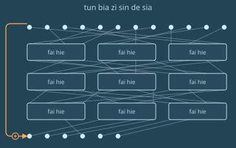
“哈希算法的构想”。
泽读起旁边的文字。
书上说，哈希算法的作用，是为一大块信息生成一个缩小后的指纹，而这个指纹仍然能唯一标识原来的信息。它的目标是：要想找出两段哈希相同、内容不同的数据，在计算上难到不可行。
哈希天然会销毁信息——用一个更小的东西表示一个更大的东西，本来就是它的全部目的。但这里有个悖论：在我们造出的所有最好的哈希函数内部，最大的一块部件却是一个保熵变换：一个置换。
这个核心部件把输入一一映射到输出。不仅如此，正着跑、倒着跑，它都能高效执行。收缩和不可逆，则来自顶层薄薄的一层：一次删除，再加上把原输入的一部分异或之后附在末尾。
为什么要这么做？为什么要把不可逆建在可逆之上？原因很微妙。如果你直接把不可逆做进去，就控制不了熵在什么时候被销毁。一个不可逆的轮函数只要反复应用足够多次，大约一半的熵就会坍缩，协议的安全性也跟着一起垮掉。所以，哪怕销毁信息就是你最终的目的，最好也把负责这件事的那一块干干净净地单独分出来——按照你自己的意愿，在算法里一个精确的位置上销毁信息。
泽收起手持终端，向后靠去。
这一切都是熵，对吧，他暗自想。
一分钟后，车突然减速，向左拐。泽从右侧看到一片被警戒带围起来的区域，里面深处停着各式大型车辆。
“出什么事了？”，泽问，声音放得足够大，司机绝不会听不出这是在问他。
“一家高等生物研究实验室发生了爆炸。多半又是北极人干的。他们得花好几天清理，确保一切安全。”
几分钟后，车减速停下。车门打开，正对一条走廊。
泽穿过通道，走下楼梯。
他看见面前有一扇门。门的样子和帕佛盖都那座山体金字塔里民本棋房间的门很像：一排排石砖，靠近顶部弯成拱形，顶上刻着那个符号——两条水平的手臂，在中间以相击的拳头交会。
不过这扇门明显更大，维护得更好，装饰也更气派。
泽用手表碰了碰绿色圆圈，门开了。他走了进去。
他走进一间摆了约五十把椅子的房间，已经有大约二十名选手落座。台上，他认出了苏。她身边还站着另外三位祭司。
泽坐下。接下来十五分钟里，其他选手陆续在自己的椅子上落座。
一个年纪偏大的少年在泽旁边坐下。
“你好，我是德鲁因”，他说。
这名字不太像泽国人，泽想。
“我是泽。”
“你从哪儿来？”
“啊，我从红郡来。名字把我出卖了吧？”
泽笑了。“大家的反应都这样吗？”
德鲁因也跟着泽笑了。
“在这儿他们叫我 De lu hin。‘一副叉子的模样。’名字挺可爱吧，你不觉得？”
“你在这儿念书吗？你父母移民过来的？”
“啊，我是外籍选手。这次他们请了四位外籍选手进来，让比赛更有意思。”
“你兴奋吗？”
“当然。其实我这还是第一次来泽国，地方太酷了。”
铃声响了，选手们很快安静下来。
“欢迎来到民本棋全国锦标赛”，苏开口道。“很荣幸今年能见到这么多出色的选手。希望每一位抵达的选手，都度过了愉快的夜晚和早晨。”
“我很高兴向大家介绍我们的总负责人——督赛官金。”
另一位祭司走上前，开始讲话。
“对我们在泽国的所有人来说，这都是一个特殊的时刻。这不只是为我们，也不只是为你们，而是为全国千千万万观看比赛的泽国人——他们将看到泽国新一代最聪慧的头脑在这里彼此交锋。”
“我也很荣幸地宣布，今年有四位尊贵的外国来宾与我们同场竞技。”
“今天，我们会在这座山体金字塔里参观民本棋博物馆。明天，我们会安排几趟萨祖都的游览，晚上你们可以休息。再过两天，锦标赛的第一批对局就将开始。”
“资格赛共六轮，每场之间都有八天的长休。”
“你们三十二个人里，胜场最多的四名选手将进入半决赛。如果不存在恰好只有四人越过的胜场门槛，我们就用几何平均来打破平局：一是你在败局中撑过的回合数，二是你在胜局中所用回合数的倒数，回合数最多计到八千。这样一来，在八千回合之前认输就没有任何好处。如果仍然平局，我们会加赛一轮资格赛。”
“我希望你们享受比赛，享受萨祖都的一切，但同样重要的是，也享受彼此的相处。在这里，你们不是敌人，只是暂时的对手。离开棋场，你们应当把彼此当作朋友，记住我们都在同一个共同的事业之中。Dze go ba fau gie。”
“Dze go ba fau gie”，所有选手齐声回应。
“现在，请大家跟着苏走。她会带大家参观博物馆。”
3724年草期25日
| zan | tie | tei | |
|---|---|---|---|
| → | [dia lau shau] | 23098 |
泽醒了。白在请求通话。
泽点了点手表。
“你那边的进展怎么样？”，白问。
“这个点打电话有点早吧？离我闹铃叫我起床还有19分钟。”
泽顿了顿，决定还是回答白的问题。
“一切顺利。三天前在博物馆看了个特别有意思的展览，第二天又把萨祖都逛了不少地方。还遇见了一个红郡来的人。”
“选手？”
“对，他们今年打算办得国际化一点。”
“帕佛盖那边怎么样？”
“问点我答得上来的。过去这一个长时，我一直在河对岸盯着你即将比赛的那座山体金字塔。”
泽坐了起来。
“你在这儿？”
“登的人找上我，让我过来把选手们的战术都记录下来。”
“你今天第一盘，对吧？”
“确实。”
“要不要我过去帮你一把，或者至少看着？”
“我……觉得不用。而且我怀疑你弄不到现场场馆的票。”
“你要是放我进去，那就有。”
泽哼了一声。
“那我就远远看着。我们都给你加油！”
“芬怎么样？我已经好几天没他的消息了。”
“大概在忙班孙培的事。他也好几天没跟我说过话。”
“那好吧。我得开始准备了。祝你今天过得开心！”
“也祝你好运，你会需要的！”
“哦，还有，明天我们下一盘练习棋吧。”
泽又叫了一杯果蔬汁，穿好衣服。几分钟后，果汁送到，泽很快喝完。他开门下楼，坐进等在那儿的车里。
二十分钟后，车到了金字塔的一个入口。
泽下车，开始沿隧道往前走。
走了几百米，拐了几个弯，他又一次来到那扇巨大的石砖门前。他走进去，这次径直向右，拐进一条三天前第一次来时根本没注意到的走廊。他跟着指示牌走，很快就到了一间等候室。
他看见了苏，还有另一位选手。
“欢迎你，泽！来见见博。”
“幸会，泽。”
“也幸会，博。”
“今天会是一盘好棋，我敢肯定。”
一个机器人过来，给他们三人各送了一杯茶。三人各自喝完了。
“那现在呢？我们就在这儿断网坐一个长时，看着别人先下，就为了不让我们提前知道新规则？”
“正是。而且手持终端和手表都不许带。机器人马上会来收。你们可以用那边那块屏幕看去年的对局。”
一个长时后，电梯门开了，泽和博各自走进自己要坐的那部电梯。苏朝他们挥手道别。门合上了。
又过了四分之一分钟，泽的电梯门再次打开，露出一间比帕佛盖都那间大得多的巨型房间。大约五千到一万人在观看。一条小路亮了起来，指向一张巨大的控制台和一把椅子。
泽往前走。远处，他隐约辨出博的轮廓也在往前走。他走到椅子前，坐下。
无人机嗡嗡作响，围着泽飞，机身约莫手持终端那么大，检查有没有任何作弊设备。这一次，无人机的数量大约是帕佛盖都那场的三倍，形状和大小也更加五花八门。它们嗡嗡地飞了大约二十嘀嗒，然后退回了各自的停靠位置。
一个响亮的自动语音播报——这次听着更偏女声："MU GU GEI FA"。五十嘀嗒后开始。
泽闭上眼睛，吸气、呼气，尽力让自己平静下来。他知道，这一盘并非决定性的一局：就算输了，他还能在后面的比赛里补回来。可换个角度想，这件事反而让他更害怕：既然有了“输了也没关系”这个借口，他的脑子还会有那份动力，把全部注意力和心力都留在棋盘上、去赢下这盘吗？
"LE MU GEI FA"
泽又睁开了眼睛。
"PA GU GEI FA"
泽耐心等着。
“欢迎来到今天北场馆的第四场资格赛。各位，来认识本轮的两位选手：来自帕佛盖都的泽雷民，以及就来自萨祖都的博祖梅。”
“我也很高兴宣布今天的规则变化——对观众来说，这句话或许已经听过太多次，但对我们的选手还是第一次。今天，民本棋将在六边形网格上进行。”
泽惊讶地张大了嘴。
“你们有二十分钟时间，尽可能把自己要用的结构——滑翔机、飞船、墙——都设计出来。然后，一场在雪花之野上展开的静谧之战就要开始。”
泽的显示屏亮了，他看见面前那张六边形网格。
"LE FI SHI GEI TAU FA"，响亮的自动语音喊道。战斗将在两千嘀嗒后开始。
泽先在沙盒里随手乱涂些乱七八糟的东西，看哪些能保持稳定、哪些会变成滑翔机。一分钟内，他就找出了几种滑翔机和几种可以用作墙的静态结构。让他意外的是，跑得最快的滑翔机是朝……正东方向移动的。
他的下一步，是故意画出各种不同形状的墙，把滑翔机朝它们放过去，看哪种能奏效。
他仔细盯着那些滑翔机，想尽快凭直觉弄明白：什么样的形状能在移动时保持自身形状不变。他反复定义了好几轮滑翔机和墙。
"PA MU GU GU GEI TAU FA."战斗将在一千五百嘀嗒后开始。
泽开始拿形状和他那枚符记类似的图样做实验，看有没有哪个能当滑翔机用。他必须想出点名堂——否则他只能推进得极慢：每到干预回合，就在已有的符记旁边再造一枚新符记。
他意识到，要真正取得突破，就得学会跟石阵打交道。他猜了几种民本棋六边形版本里石阵可能的形状，再一次次观察滑翔机撞上去时的表现。
"FI SHI GEI TAU FA."战斗将在一千嘀嗒后开始。
泽开始冒汗。到现在为止，一无所获。他试过的每一种滑翔机、每一种可能的石阵形状和每一种偏移量，都没能让他复制出自己的符记。
他更仔细地回想自己那枚符记的确切形状。
又白试了两分钟后，泽的脑子里忽然闪过不到两个长时前读过的那本教材。
核心部件把输入一一映射到输出。不仅如此，它无论正着跑还是倒着跑，都能高效执行。
但和哈希函数不同，这里末尾没有那层先截断再异或的包装。所以，只要他知道自己想要什么终态……把那个终态放进沙盒，倒着放就行。
可是……怎么倒着放？
在哈希函数的内部置换里，你要从最后一层往回走到第一层，每走一步就把那一步取反。
可这里……泽这辈子第一次接触的这套六边形规则，它的逆是什么？
泽拿他看到的那些滑翔机，试了最基础的几种变换：翻转、旋转60度、晚一个时间步发射。全都不奏效。
"MU FI LE GEI TAU FA."战斗将在五百嘀嗒后开始。
泽把每一步都放得更慢，一步步看过去。然后他看见了。每个步骤里，棋盘都会划分成三角形，六边形在各自所在的三角形内部旋转——三角形里有一个六边形被填，就顺时针转；有两个被填，就逆时针转。
所以要倒放时间，他只需要……让每一个时间步发生两次。毕竟，120度旋转的反向就是两次120度旋转。可还有个问题：每个时间步之后，划分成三角形的方式都会偏移。所以要把一个时间步倒放，他得……先前进一步，再把时间往回拨一步，这样就能在同一套划分下把下一步也往前走；然后再往前走一步，让那套划分下每个三角形里的累计旋转达到240度；接着把时间往回拨两步，让棋盘切回上一套划分。把每一步都取反，再按相反的顺序播放——就跟在哈希里求一个置换的逆一样。
他确认了一下：界面上有一个按钮可以让时间前进一步，还有两个按钮可以把时间往前或往后拨。那就只能这么办了。A、B、A、B、B。像是某种电子游戏的作弊码。而从某种意义上说，它在这里真的就是作弊码。
行吧，他想。
他把一架滑翔机放进沙盒，试了一下。过程很折腾，手指很快就酸了。但成了。滑翔机倒着动了。
基础测试通过。
泽试了真正的检验：用同样的手法，从一块石阵旁边正在成形的符记、以及一架飞出去的滑翔机开始，倒着放。
第一次失败了：时间倒退时，滑翔机和那枚符记撞在一起，可随后同一枚符记在几步之外重新成形，滑翔机也飞走了。也就是说，在他刚刚抽到的这一段历史里，碰撞之前，那枚符记一直都在。
他换了一架滑翔机再试。这一次成了。时间倒退着越过碰撞的那一刻，石阵加符记变成了一块光秃秃的石阵，两架滑翔机倒着飞了出来。
"FI LE GEI TAU FA."战斗将在一百嘀嗒后开始。
泽迅速用其他几种可能的石阵形状重复同样的实验。他完全没理会那个播报倒计时的声音，一直试到为另外两种最自然的候选形状也各找到了一个方案。
"MU GU GEI TAU FA."
泽飞快地布下符记、墙和滑翔机——它们撞上合适的石阵时就能生成符记。
他自己都惊讶于这一步有多快，毕竟前面别的事花了那么久。但他几乎立刻就在心底明白，这很合理：想清楚要部署什么才是难的部分，部署只是复制粘贴。
把棋盘上的基本布局做好之后，他呼出一口气。就在他重新吸气、开始最后一遍打磨结构时，最后的倒计时开始了。
"PA GU …… SO …… BI …… ZE …… HA …… MU …… FO …… SHI …… LE …… PA ……"
"TAU FA."
滑翔机开始飞出。起初，什么也没发生。
五百回合后，棋盘的一角露了出来。他的一架滑翔机成功造出了一枚符记，也揭开了一片棋盘，让人能看出石阵长什么样。
泽立刻转向下一个任务：弄清怎么造滑翔机工厂。
第一次干预回合到来时，泽还没想明白这件事。不过，他确实又送出好几架滑翔机，从自己的主基地飞出，只等撞上位置合适的石阵，就能再造出几枚符记。他还从新符记附近放出滑翔机，一路快速向东。
观众专注地看着。河对岸，白也专注地看着。远处，芬、穆和登同样在看着。

观众很意外。他们发现，两位选手都没能弄出任何纵向移动的滑翔机。
第二次干预回合，泽从棋盘两侧放出滑翔机，直指博的主基地。
就在第三次干预回合之前，泽的一架滑翔机撞上了博主基地紧邻的一块石阵，让泽得以看清博所有的符记。
泽利用那次干预回合，直接把滑翔机送往他能看见的三枚博的符记，又朝附近几处地点多送了几架，以防万一。
三百回合之内，博的符记全部被毁，泽被宣布为胜者。
第十三章
梅尔丹，维里迪亚 · 3724年获月8日
格拉迪亚斯掀开布帘，走进隔间。这种隔间他如今已经熟得不能再熟：一张桌子，尽头是一盏彩绘灯和两枝花，地板角落里还顶着一台空气过滤器。
德尔瓦特已经坐在里面了。
“掌则人的会开得怎么样？”德尔瓦特问。
“挺有意思。”格拉迪亚斯答道。
“说实话我还挺意外。‘我们不该事事都插手那么多，评则该少一些’——提这话的远不止我一个。感觉差不多一半的一年级掌则人都抱着同样的想法，而且提得跟你希望我做到的一样主动。”
“所以至少有些人，不希望你歌里冒一句脏话就被征税，也不希望你每盖一栋房子、一套公寓，都要在五种不同的无障碍要求上被管得死死的？”
“我是说，我不觉得现在有那么糟。我们没像英格尔沃那样，什么事都让人填表。税不过是人们要盯着的又一个变量，跟电费一样。可即便这样，我想掌则人们也明白，我们得讲道理，不能管得太细。”
“他们讲得站得住脚吗？”
“常常比我讲得还好。二年级和三年级的掌则人更爱怀疑，观念也更传统。一碰到跟泽国或者北极威胁有关的事，这一点就尤其明显。”
德尔瓦特叹了口气。“这些东西上宣传了几十年。说句实话，北极人自己也没把形象做好；他们干的每一件事，在红郡附近的无人机巡逻，连埃菲里昂的演讲都算上，总是把人惹得火大。”
“是啊，一堆人觉得他们要对红郡搞一场更严重的破坏行动。”
“你觉得他们会搞出一场更严重的破坏行动吗？”
格拉迪亚斯想了想。他心里其实没底；他预计短期内不会出事，却又怕答案是个“会”。可他也知道，一旦向德尔瓦特承认这一点，对方就会长篇大论地教育他，说他的消息来源有多偏——而这还是在他没有把塞拉在自由城见过泽和白的事告诉德尔瓦特的情况下。
“大概不会。”
“那你就尽力去说服他们，别让他们担心。”
一个机器人进来，给格拉迪亚斯端来一杯水和一份沙拉，给德尔瓦特端来一杯茶，外加一根长方形的营养棒。
两人安静地喝，然后吃。
他们又聊了一小会儿，大约二十分钟后，格拉迪亚斯站了起来。
“抱歉，我得走了，家里有个饭局。”
“那当然得去，家人才是最重要的！”
格拉迪亚斯走出去，沿着大梅港的通道往出口走。
在通道里走了大约十分钟，格拉迪亚斯钻出地面，上了一条步道。大梅港高大的入口门就在正前方。他穿过闸机，重新回到梅尔丹商业区那片绿意、玻璃与钢铁交织的景象里。
格拉迪亚斯向右拐，动身往家走。
他的手表震了一下。
| 来自 | 消息 | 时间 | |
|---|---|---|---|
| → | 我最近多盯了德尔瓦特一阵，我们该谈谈。 | 71256 |
格拉迪亚斯对着颈带低声说话，给莫夫拨了通电话。
“怎么了？”
“他这次比平时大意了些。”莫夫说。“我跟到了他下一场会面。对方是另一个掌则人。我占了隔壁的隔间，靠墙上的震动就能听见。”
“哇。大梅港的隔间比掌则人用的那种差这么多？”
“嗯。我觉得知道这差别的人还不够多。”
“而我们用那种隔间聊了好几个月……”
“确实……好吧，现在知道了。”
“总之，那个掌则人也在硬件开放度评则组里，跟你不在一组。他完全赞同德尔瓦特的那套主张。”
“然后呢？”
“整场谈话都在盘算，怎么说服那一组里的其他掌则人跟着他的立场走。”
“德尔瓦特非常强势。他好像真的很在意这件事。而且，靠着你再加上那个掌则人，他在同一条评则的两个讨论组里都安上了联系人。分组讨论本来的用意，就是逼人独立思考——可不是让所有人都去看同一个人的眼色！”
“总之，我确信这件事比我们所有人想的都更有组织、也更深。”
“下次你跟德尔瓦特谈，我觉得你该要他给个说法。”
“你觉得那会是什么？某种有组织的政治行动，想把维里迪亚变得像自由城，却不要自由城对抗北极的那一部分？所以不是一个人信这套，他背后可能有一整张网？”
“我也很好奇。”
格拉迪亚斯上了巴士。
他叹了口气。
“我再想想。我这就回家，跟家人吃顿饭。孩子们今天回家了。”
“嗯，好好想。还有——多保重。”
格拉迪亚斯下了巴士，朝餐厅走去。他穿着隐私袍，走得很快，在烈日下出了一身汗。
几分钟后，他到了。塞拉和四个孩子已经坐在桌边。
“惊喜！”塞拉喊道。“这回我们比你先到。”
格拉迪亚斯的脸上绽出笑容。他很高兴又见到孩子们。上回去他们家待了那一晚，距今已经两个月；而他们离开他和塞拉的家，已有半年。
格拉迪亚斯把关于德尔瓦特和莫夫的念头收起来，刻意把注意力放到家人身上。
几分钟后，一个机器人滑到桌边，端来费布里克和赫雷达的饭菜。
“你的数学考试考得怎么样？”塞拉问赫雷达。
“96分。”赫雷达答道。
塞拉脸上的神情立刻变成了担忧。她知道，这下更不好开口问莉莉了。她本来打算紧跟着就问她，可这会儿只是转而祝贺了赫雷达一句。
莉莉的眼睛垂了下去，盯着自己面前的桌面。
机器人又滑到桌边，端来兹文和莉莉的饭菜。兹文急急地接过，莉莉没动。
格拉迪亚斯把莉莉那份拿过来，放在她面前的桌上。
莉莉慢慢开始吃，什么也没说。
桌上安静下来。他们慢慢吃着，一边看旁边屏幕上正播着的职业翔球赛。
突然，翔球比赛中断了，换成一段完全不同的节目。
屏幕左侧出现埃菲里昂勋爵的影像，右侧是一篇分了好几段的消息。
所有人一律平等——维里迪亚的学校、海报、歌曲，以及其他一切，都这样告诉你。
也许恐结不这么唱——可正因如此，去年审计时，恐结的税率被提到了第4档。
没有人比任何人更好；只要你敢说某个人比另一个人强，你在维里迪亚立刻就会被当成邪恶之徒扫地出门。
但这种想法有一个根本的破绽。如果一个人不可能比另一个人更好，那也就意味着，一个人不可能比过去的自己更好。否定了等级的可能、否定了人与人之间纵向的差别，否定那些人人都承认是好的品质、却只有一部分人真正做到了——也就等于否定了自我提升的可能。
别以为说“好”和“成功”有许多个维度，就能让你免于此论。即便真有，在所有真正重要的维度上，总有人做得更好，也总有人做得更差。
别再向社会要答案，别再指望维里迪亚的制度把生活变得公平。生活本就不公平——也不该公平。去拥抱竞争吧。今天，你也许弱小。可你身上有变强的底子。别信那个谎言，说你现在的样子就已经够好了。但要信一个真相——你身上有变强的底子。抓住那个机会。变强。强到日后回看从前的自己，只剩羞愧。
然后去找其他强大的人，找那些会在你追寻卓越的路上帮你的人。不要那些无条件爱你的人——那是慢性毒药，像甜甜的糖果。要找那些在你赢时给你爱、在你输时给你冷脸的人。既能给你激励，也能给你戒惧。你优秀，不是因为你生而为人；你优秀，是因为你能赢。唯有如此，你才能训练自己的心去热爱胜利，发挥出你真正的潜力。
谨致问候，
埃菲里昂勋爵
北极帝国驻维里迪亚领事
格拉迪亚斯飞快地扫了一遍消息，环顾四周。塞拉已经从桌边站起来，正想法子把屏幕的电源拔掉，甚至不等餐厅店员赶到。
费布里克和赫雷达继续吃。兹文好奇地盯着屏幕上的消息，目光在段落之间跳来跳去，偶尔转去看塞拉怎么关屏幕。莉莉则只是盯着那篇消息。
屏幕终于关掉了。
一家人沉默下来。费布里克掏出手持终端，开始复习功课。莉莉也掏出手持终端，手指飞快地敲着。格拉迪亚斯看不见她在做什么，不过她像是在玩某种游戏。
一家人静静地吃。五分钟后，莉莉的脸忽然亮起来，悄悄欢呼了一声。她放下手持终端，加入吃饭。尽管她开始得比谁都晚，却比所有人都先吃完。
3724年获月9日
格拉迪亚斯拉开隔板，走进隔间。其他掌则人都已经到了。
“又见到你了，六！”十三喊道。
“等等，你怎么知道我是六号？”
“凭直觉。大概是你的肢体语言里某个细微之处——常言道，我们九成的交流都是下意识的。”
“哈，看来就算遮住脸、隔着颈带说话、再用 AI 重新随机生成的声音把话放出去，我还是分不出你们谁是男谁是女。这些物理上的隐私手段，终究还是有极限。好吧，也高兴见到你，十八。”
“我是十三！”十三答道。“看来对你来说，交流大概只有三成是下意识的。”
“顺便说，我是女的。我觉得这话可以说，毕竟只把我的匿名集缩小了一半。”
“总之，这是我们在大约两个月后不得不就这条评则投票之前的最后一次碰面。”
“我们有提案了吗？”
零抬起头。
“我起草了修改后的条文。”他插话道。“把一切军事、监视和反监视产品，从开放度税评则里较为优惠的档位中排除出去。这些东西一律无条件按最低第3档算。”
“反监视也算？”
“当然。都是同一场零和博弈的一部分。”
十八开口了。
“我还是觉得，你们根本不懂北极的威胁。他们有技术优势。这不是一场对称的博弈。如果这些领域里人人都得自己做技术，赢的是北极人。”
“得了吧！他们不会动手的。自从无人机发明出来，这么多年他们一直让无人机在各地嗡嗡转。他们不会真在红郡搞出什么疯狂的事，行吗？”
“你真这么想？”
格拉迪亚斯环视房间。他读肢体语言的本事确实不怎么样。但据他判断，另外几个人里有三个倾向于把军事、监视和反监视从硬件开放度评则里砍掉，十三摇摆不定，只有十八和一反对。
前一天和莫夫的谈话让他变得多疑。以前他心态更开放。现在他开始想，今年对这条评则什么都不动，也许才是上策。他的脑子转来转去，想找出把局面往更有利的方向推的办法。想了大约半分钟，他有了主意。
“我刚想到一个办法。”
其他人都转向格拉迪亚斯。
“我们不必现在就定下来。离投票还有两个月，对吧？”
“没错。”
“十八，你觉得北极帝国会在什么时间范围内有所动作，对红郡搞出更严重的破坏？”
“肯定不到两个月。”
“一，我记得你也认为我们该把北极当成真正的威胁。你估的时间是？”
“十天到二十天，也许一个月。不会是太剧烈的事，但总会有某种破坏。多半会被报成一起大事故——向来都是这么收场的。”
“那这样如何？当然，这没有约束力，只是个初步想法。我们不妨都等上两个月，看看会出什么事。如果没有袭击，那我们就都会更愿意接受零的修正案。但如果有，我们就把这条评则原样保留，甚至把各税档之间的差距再拉开。”
零低声嘟囔了几句不满，但没说什么。他显然不喜欢被人这样逼着表态。可他找不出任何理由反驳格拉迪亚斯的提议。
十八的反应也差不多。和零一样，他不喜欢被逼着表态，却不得不承认，自己也想不出更好的办法来打破僵局。
“那就这样吧。”
第十四章
萨祖都，泽国 · 3724年火月10日
泽的闹钟响了。
他慢慢起身，在客房服务菜单上点了几下，要了一杯果蔬汁。
他穿上衣服。
三分钟后，果汁送到了。泽几口喝完，一刻也没耽搁，开门下楼。
到了大堂，他看见大堂餐厅里有人朝他招手。
他转头一看，是白。
泽走过去，在白身旁坐下。
“jie mo kai tu jie hei ja ma？”，她用甜甜的声音问，分明是在拿餐厅机器人打趣。
“我喝过果汁了，不用”，泽答道。
“你最近怎么样？”
“你不打算问问我，都摸清了其他选手什么战术？你今天就要进半决赛了。”
“那你说说，都摸清了其他选手什么战术？”
随即他赶紧补了一句：
“你打听消息，没用过什么见不得光的手段吧？”
“放心，我不是什么北极间谍之类的人。我只是把比赛全看了，跟几个选手交上了朋友，他们让我跟着一起练了几盘。”
泽微微翻了个白眼，随后松了口气。
“基本社交技能罢了。我从小就得靠这些活下来。”
“谢谢你，白，真的。”
他停顿了片刻。
“那你有什么建议？”
“要挑一个反复出现的规律”，白说，“那就是这个。其他选手——贡绝对算一个，其实别人也都一样——都太急了。他们不只是想赢，而是想快点赢。”
“我知道资格赛的计分方式在鼓励这种打法，可是……过了八千回合的门槛还是这样，连我看到的那盘贡对德鲁因的练习局也这样。他们不是在讲策略，只是为快而快。”
“所以能不赶就别赶，好吗，泽？”
泽点点头。
“谢谢你的建议。”
机器人送来了白的素菜米饭和一杯茶。泽也给自己点了杯茶，边喝边看白吃饭喝茶。
十分钟后，泽的手表震了一下。接他去半决赛的车到了。
“欢迎来到半决赛”，播报声喊道。
“我们一路走到这里。四十天里，我们见到了许多最艰难的对局。资格赛前四名是：红郡的德鲁因，六战全胜；帕佛盖都的泽雷民，六战五胜，平均5,047回合取胜；尊代的贡蔡白，六战五胜，平均5,699回合取胜；盖雅肯的寇塞扎，六战五胜，平均6,740回合取胜。”
“今天，在这特别的一轮里，我们将看到泽雷民与贡蔡白对决。紧接着，另外两位选手也将进行他们的半决赛。十五天后，两位胜者将以三局两胜展开一场史诗对决，我们也将迎来全国冠军！”
“当然，还有今天的规则变动。每个干预回合你能调配的资源减少80%。除此之外，棋场上会有五座神龛：四座分别位于棋盘四条边的正中，一座在正中。每一千回合，神龛内容发生过的所有变化，都会以异或的形式作用到神龛四角附近的区域，然后神龛会重置为默认的石阵。”
"FI LE GEI TAU FA."
泽立刻明白了新规则的含义。神龛是唯一违反物质守恒的东西——不过即便如此，在新规则下也没有任何东西会减少熵。异或不保持权重，却是可逆的。所以随着时间推移，棋盘会越来越满，也越来越乱。资源配额减少，意味着干预回合不是用来建造的——而是用来掌舵的。
泽照例布下墙、滑翔机和飞船。不过这次他用了几种不同的设计——一种可操控的载符飞船，是他几个月前做出来的，只要在少数几格上干预，就能改变它的方向。
"MU GU GEI TAU FA."
泽又想出一处调整：他调整了飞船的定位，让它们正好在两次干预回合之后抵达神龛外侧的位置。这样他就能朝恰到好处的方向放出一架滑翔机，把两座神龛变成一座永恒的滑翔机工厂：滑翔机会来回弹跳，每撞一次就崩下岩石，向北喷出更多滑翔机；而每一千回合，岩石都会重置。
"PA GU……"
泽把全部精力都投到滑翔机风暴上，好掩护飞船前往中央、东面和南面；他决定放弃西面。
"SO …… BI …… ZE …… HA …… MU …… FO …… SHI …… LE …… PA ……"
直到最后一刻，泽都在不断优化自己的结构。
"TAU FA."
飞船和滑翔机开始运动。
一千回合后，第一个干预回合到了。泽放出几架滑翔机，把更多石阵变成符记和滑翔机工厂。
他意识到自己有一个致命弱点：他能造符记，但造一艘载符飞船或一座滑翔机工厂要花四个干预回合。也就是说，他那三艘载符飞船就是他的全部舰队，他必须保住它们。
就在第二个干预回合之前，他的飞船和贡的两艘飞船在中央擦肩而过。显然，贡想在中央做文章的劲头比他还足。
泽意识到自己必须做选择：放出滑翔机攻击贡的飞船，筑墙防御贡的飞船，或者布下那座永恒的滑翔机工厂。
第二个干预回合到了。他选了最后一条路：放出滑翔机，让它们在中央神龛与南面神龛、中央神龛与东面神龛、南面神龛与东面神龛之间来回弹跳。
干预回合刚结束，泽就发现贡做了完全相同的事，动用了他在中央的两艘载符飞船。贡还调整了两艘船的航向，让它们也朝南去。
泽和贡都看不到全局，但观众看得到。

几百回合后，泽意识到贡的攻势更见效。他不仅在中央与南面神龛之间、中央与西面神龛之间造出了永恒的滑翔机工厂，还发动了一波滑翔机攻势，摧毁了泽的载符飞船。
与此同时，贡的两艘载符飞船正向南移动，其中一艘的航线正好撞上泽的飞船——这次相撞会发生在下一个干预回合之前。
泽将只剩一艘载符飞船，就是东面那艘。
泽叹了口气。他意识到，自己最后一艘载符飞船，是贡毫不知情的最后一件可移动结构。让贡继续不知情，也许就是他最大的优势。下一个干预回合，他让那艘飞船暂时停下，就停在贡东北基地的视野之外。他设定飞船放出滑翔机，去摧毁贡东北基地里那些必定存在的符记。为了不暴露位置，滑翔机不会直接向北飞——而是先撞上北面的岩石神龛反弹过去。
与此同时，在东南面，泽自己的符记开始一个个消失——先是毁于贡的永恒滑翔机工厂，接着又毁于那艘正从南面向东移动的载符飞船新放出的滑翔机。
就在下一个干预回合之前，泽短暂地瞥见贡的载符飞船出现在他西南基地附近——紧接着，它就放出滑翔机把基地摧毁了。
然后，第四个干预回合到了。
泽清楚，贡在子力上优势很大。泽唯一的优势就是藏得住。永恒滑翔机工厂放出的滑翔机四处乱飞，而东北角稍往南的位置，算是比较好待的地方之一。
泽决定继续潜伏。他让载符飞船停下，开始了一项需要五个干预回合的工程：再造一艘。
与此同时，他记起中央那艘载符飞船被摧毁前，自己看到的附近石阵，于是在沙盒里复制了那个阵形，想出一套策略：在中央与北面神龛之间生成一座永恒的滑翔机工厂，把贡的西北面搅得天翻地覆。
到第五个干预回合，他的攻势已经重创贡在西北的基地——不过泽无从得知伤害有多大。泽继续造他的第二艘载符飞船。
不久之后，泽在东南的最后一处符记也毁于一场滑翔机风暴。他在东南看到的最后景象，是贡的载符飞船开始向北移动。
泽放出滑翔机，又造了一座永恒的滑翔机工厂，这次让滑翔机灌满西面中线的空间。
他没有移动自己的飞船，也动不了：接下来三千回合，他一边造新飞船，一边只能当活靶子。

第六个干预回合到了，正赶上贡的载符飞船被一阵密集的滑翔机击中。这让贡得到一个幸运的机会，来得及替它挡下滑翔机，使它多撑了一阵。
那艘飞船最终还是被摧毁了，但那是它已经进入泽那艘飞船视野之后的事了。
泽盘算了一下：贡看得到泽那艘飞船，却看不到泽正在造的新飞船。
泽决定只做唯一能做的事：继续建造，同时在西面和斜线上多筑了几道墙。他明智地不管南面：已有的滑翔机风暴，加上贡那艘飞船的残骸，本身就是足够的屏障。
第七个干预回合到了。泽把所有资源都投进新飞船的建造。快完工了。下一个回合刚好够把它造完，再给两艘飞船各下一条操纵指令。
随后，一场滑翔机风暴从四面八方朝泽的飞船涌来。
起初，墙还撑得住。可滑翔机源源不断，很快就冲破了墙。
第八个干预回合来得正是时候。泽最后一艘飞船还没被摧毁，但已经撑到极限。他现在能把新飞船造完，再给旧飞船下最后一条指令。
泽把两艘都设为向西。他估计旧船上的符记会在一百回合内被摧毁，但残骸还能继续向西滑行，撞上北面神龛，向南释放一大片滑翔机风暴。至于新飞船，它也向西，但会停在北面神龛的正北。这样多少能替它挡住那些越来越猛烈的滑翔机风暴。
第九个干预回合到来时，泽利用附近一处快被滑翔机打光的石阵，弹出一架滑翔机向南，去重新调整南面那些正在进攻的永恒滑翔机工厂。他没时间算清调整后会变成什么样，也无从知道确切的后果，但他希望这能让原本安全的区域变得不安全。他还额外向西发动了一波滑翔机攻势。
第十个干预回合到了。似乎什么都没发生，只有残骸。越来越多的残骸。
泽加固了最后一艘载符飞船东侧和西侧的墙。
他放出几架滑翔机，想再造几座永恒的滑翔机工厂，最好能在南面制造更多混乱。其中一架还没飞出泽的视野，就被另一架乱窜的滑翔机撞毁了。
第十一个干预回合到了。泽想出了最后一招。他琢磨出怎么利用自己的一道墙把滑翔机往南弹，让它贴着神龛的边缘走。在沙盒的模拟里，他看到只要它撞上中央神龛的角，就会反弹回北面。滑翔机就这样在中央与北面之间来回弹跳。每撞一次中央，它就同时放出一架向西的滑翔机。而当那架滑翔机撞上西面神龛时，它会反弹转向东南，有望破坏南面的一切。他照做了，同时把同一套策略镜像到东面。
第十二个干预回合到了。到这时，棋场上的残骸和乱窜的滑翔机已经密集到根本无法进攻。泽只管继续筑墙。蹲住，防守，比谁撑得久。
第十三个干预回合到了。泽在这艘飞船周围筑了四层墙，但墙终于开始崩得比他补得还快。
终于，几百回合之后，警报响了。
“那么……泽雷民获胜！”
泽松了口气。
泽坐在休息室里，看德鲁因和寇的对局。从一开始，德鲁因的战术就让泽既意外又佩服。德鲁因早早把全部注意力放在利用北面和东北面石阵里的资源筑墙上，同时放出滑翔机，想造出朝南的永恒滑翔机工厂。
德鲁因一艘可移动的载符飞船都没造，只是单纯加固防御。寇的永恒滑翔机工厂用处有限：滑翔机虽然永远不停，但真正起作用的只有很短一段时间。滑翔机风暴一来，德鲁因总能想出办法把它反射回去。
泽很是佩服。看来德鲁因也琢磨明白了，自己得更有耐心。
七千回合后，寇被打得只能躲到南面神龛背后。但他又勉强撑了三千回合：乱窜的滑翔机和残骸越来越多，而德鲁因有墙护着，处境比他好得多。
对局进行到一万零二百回合，德鲁因被宣布获胜。
德鲁因从电梯里走出来。
“那盘下得真漂亮，德鲁因。”
“谢谢！墙能撑那么久，我自己都吃惊。现在我很想看看你那盘是怎么打的。”
“哦——我那盘比你难看多了。不过说到底，我也是靠防守赢的。”
“待会儿去喝茶吗？”
“好啊！”
德鲁因正坐在院子里喝茶。泽一看见他，就小跑着过去打招呼。
“德鲁因，见到你真好！”
德鲁因挥手回应。泽跑完最后一段路，到桌边坐下。
一台机器人立刻滑到他们桌边。
“jie mo kai tu jie hei ja ma？”
菜单弹了出来。

“哇”，泽倒吸一口气。
“怎么了？”，德鲁因问。
“我觉得这些是他们为泽国语第九版做 A/B 测试的一批新符号。”
他立刻意识到自己在跟一个外国人说话，连忙补了一句：
“你听说过泽国语第九版吗？”
“哦，听过，有几个人跟我提过。就是把语言做直观：为每个词根恢复象形符号，但读音能从字形里完全读出来。还有一层，他们想让人看着语法更像数学。”
“对，我正试着拆这个。这个杯子形的字是‘水’——‘ja’。我看到杯子上有两处不寻常：横线比平常多，右边还有三条斜线。也许这些是读音标记？一条标辅音，一条标元音？”
“右上角那个是‘kai’。我看到的不寻常之处是……左边多了一条竖纹，然后往右，纹路越来越弯？不过……我不确定该不该把图像做得这么细，它们的意思常常要看上下文。”
“等等，你懂泽国语？”
“泽，泽国语的关键就在于只有256个词根，不到一个月就能学会；你抓不到所有细微之处，但走遍天下都没问题。”，德鲁因用说教的口气回答。
“佩服，你都快成本地人了。”
“那，明天跟我一起回红郡吗？我得飞回去给我爸妈过生日，他们的生日只差几天，顺便让我们那边最强的几位选手给我临阵补补课。而且你要是来，我就能跟他们说：既然你也这样，那我不补课也没关系！”
“我很想看看红郡，可惜我实在没这笔钱。也许过几年吧。”
“不过我特别好奇红郡是什么样子！给我发照片吧。”
“哦，我现在就能给你看几张。”
德鲁因掏出他的手持终端，给泽看了几张红郡的照片。他看到了城堡、松林、大片未受侵扰的草原、山顶覆雪的赤色山脉，还有一条巨大的冰瀑。
“哇，真美。”
“你知道吗，我小时候觉得，夸一个国家的自然风光美，其实是明褒实贬，差不多是种侮辱。那时我想：如果你能对一个国家说出的最好的话，是那些连当地人自己都没造出来、只是轨道动力学、生物和地质构造随手白送的东西，那其实对那里的人挺刻薄的。”
“但长大后我慢慢明白，根本不是这样。哪怕是美的自然，也需要大量人力去维持。要有人修步道和公路，人们才能走进去、开进去。要有人维持一套政治制度，才能拦住人们污染它、砍光森林、把房子乱盖在山坡上毁掉景色、把山体剥开露天采矿——同时还得允许人们在看得到风景的地方建房子，让房价保持在人们买得起的水平，还要维持工业。要有人去修复那些破坏，那些在我们变得足够明智、或者也许足够有钱、懂得在乎这些东西之前留下的破坏。”
“等我攒够钱去，第一时间告诉你。”
“希望就在十五天后”，他开玩笑说。
“因为我会用我的冠军奖金送你去”，德鲁因笑着回敬。
第十五章
自由城，联合城邦 · 3724年火月17日
扬刷过自由城经济研究所的闸机，朝餐厅走去。
天还早，扬刻意没去看当天的任何新闻——让脑子清静些，也好安心享受餐厅屏幕上那场讲座，管它讲什么。
走了一分钟，他到了。
看到屏幕上的内容，他惊得眼神都僵住了。
特别播报
北极帝国入侵并吞并红郡
扬开始凝神听记者讲述事情的经过。
今天15,500，大批北极无人机与飞行器在红郡各大城市和军事基地降落，同一时刻，北方发动大规模地面入侵，数千辆载具从前所未见的地下隧道里涌出。
红郡军方完全没有防备，许多人怀疑高层存在腐败。
主要战斗持续不到两长时，伤亡非常有限。红郡的驻军如今几乎已全部投降。
他看见餐厅里坐着十来个人，乌塔库也在，她看起来和扬一样震惊。
三架政府飞机载着阿尔博总统、总理塞莱迪尔和议会大部分成员试图起飞。三架全被击落。目前的迹象显示无人生还。
总统之子塔芬德尔据信已被北极俘获。
记者停顿片刻，又开口了。
最新消息：
红郡南部最后一处驻军已同意有条件投降。驻军人员连同另外三十人（包括两名参议员）将获准飞往德文维尔，条件是驻军停止一切自卫抵抗。
这三架飞机将在五分钟后起飞，也是唯一获准离开的飞机。北极当局不允许任何其他载具进出红郡。他们已切断所有通讯，并正在积极架设干扰设备。
“现在我们怎么办？”扬含糊地说，这时他已经站到乌塔库的桌边。
“把这威胁当真。”乌塔库回答。
扬还没来得及移开视线，乌塔库已经在她手持终端上疯狂打起字来。
梅尔丹，维里迪亚
格拉迪亚斯和塞拉盯着屏幕，费布里克和赫雷达在他们身旁。他们刚在日出时醒来，阳光清清爽爽地照进窗子，外面人行道上的树已经拖出长长的晨影。新闻是他们看到的第一样东西。
兹文还在睡，莉莉还在自己房里。
塞拉掏出手持终端，开始疯狂打字。
| 消息 | 收件人 | |
|---|---|---|
| 告诉我你在自由城，你没事。 | → |
她点了发送。
几个嘀嗒后：
| 来自 | 消息 | 时间 | |
|---|---|---|---|
| → | 别担心，我在自由城。 | 32117 |
| 来自 | 消息 | 时间 | |
|---|---|---|---|
| → | 我们这边居然还一直挺重视防务的，而且在联合城邦里，自由城离红郡差不多是最远的了，也就银滩和马布利更远一点。 | 32124 |
塞拉松了口气。
格拉迪亚斯看见塞拉在给扬发消息，把手搭在她肩上安慰她，没有再多说什么。
他的心思很快转到评则上。下个月肯定不会去调整硬件开放度评则了，他想。说不定还得把税率档往上调。
过了一会儿，一股怒火从他心里窜起，直冲德尔瓦特。
塞拉离开房间去叫醒兹文、接上莉莉。不到二十分钟，四个孩子已经在去学校的路上，家里只剩格拉迪亚斯和塞拉。
格拉迪亚斯下到地下室，关上门。
“莫夫，现在怎么办？”他对着颈带低声说。
“显然德尔瓦特在很多事上都错了。下次跟他谈，我们真的有一大堆问题要问。我们要的是直截了当的回答，不是借口。”
“记住，问题不只是他在政治上的判断错得离谱。还有我一个半月前查到的东西——他背后那摊事的组织程度之高。”
“那之后你还追到过他别的行踪吗？”
“那之后又只跟到两次。第一次是和一个穿隐私袍的人碰面，不知道是谁，两人聊了很多银聊的事。第二次是和一个掌则人见面，我听出一些关于恐结的谈话。大约一个月前之后就再没有动静了，他要么换了地方，要么藏得高明多了。”
“那投票是什么时候？”
“第一场大概二十天后。”
“德尔瓦特可能会动手，想‘核实’你是不是按正确的方式投的票。所以记住掌舵会搭起来的那套机制，就是为了让他没法得手。”
“只有用有效密钥签名的票才算数。”格拉迪亚斯背诵道。“你要和密钥分配组五个人里的至少3个碰面，把投票密钥的每一份盲化份额在他们那里登记，才能生成自己的投票密钥。这一步做完之后，哪些密钥有效、哪些无效，只有在混淆电路指定的条件下才能解密出来。”
“所以无论是德尔瓦特还是别的什么人——严格说，连我自己也算上——都不会知道是哪个密钥、几个密钥，或者到底有没有密钥成功登记。只有投票结果会被解密。所以德尔瓦特分不出我提交的票哪些是真的、哪些是假的。就算我想向他证明，我也没这个能力。德尔瓦特要想顶掉我的票，就得顶掉我的身份，那意味着去密钥分配组，当面冒充我本人——这很难，因为密钥分配组的意义恰恰在于里面都是我当面见过的人。”
“人——最终极的可信硬件。”
“你功课做得不错。”
“可我也希望这一切都不必用上，德尔瓦特会给我一个说得过去的解释。”
“希望不是策略。”
“确实不是。”
帕佛盖都，泽国
泽焦急地戳着手持终端上的按键，第五次把消息发出去。
| tie | dun | |
|---|---|---|
| 你还好吗？？？？！ 快告诉我你在哪儿。 | → |
他坐在酒店大堂餐厅的一张桌子旁，哭着。面前摆着一杯茶和一份米饭配蔬菜。茶他喝得很快，机器人已经续了四次。那份米饭和蔬菜几乎有一长时没动过。
终于，他收到了回信。
| zan | tie | tei | |
|---|---|---|---|
| → | 别担心，我还活着。 不过看样子我一时半会儿回不了泽国了。 | 84690 |
这不是泽想要的结果，但比他害怕的结果好太多了。他松了口气。
| zan | tie | tei | |
|---|---|---|---|
| → | 我找到往外发消息的办法了。 有个北极士兵，和他的朋友——也可能是他的 AI——或者别的什么——捣鼓出一套办法，能把隐藏的文本消息嵌进他实时回传给指挥部的健康数据里。 指挥部里另有一个人把这个信号转接进天气数据流，再往上传到卫星。 他靠匿名替人转发消息，挣了一大堆齐普币。 | 84714 |
泽擦掉眼泪，开始专注地打字。
| tie | dun | |
|---|---|---|
| 哇。你……跟那个士兵有联系？ | → |
| zan | tie | tei | |
|---|---|---|---|
| → | 我有个匿名联系的渠道。 | 84723 |
| tie | dun | |
|---|---|---|
| 问问他往健康数据里塞消息，用的是什么编码方式。 | → |
泽想了想，意识到也许轮到自己当老师了。他掏出一块键盘，开始飞快地敲。
| tie | dun | |
|---|---|---|
| 或者说——再一想，他不会回答的。不过你告诉他：随机翻最低有效位，是所有人第一次碰到这个问题时都会抓的那套办法，但它不是理想解。有时候高位完全可以翻，有时候连翻一个最低有效位都有危险。 你要做的是： * 在实际分布上训练一个语言模型，让它以其余所有位为条件，给出某一位应当是0还是1的概率 * 把数据切成一个个分桶——分桶务必用解密密钥本身来随机决定——并要求第i个分桶内所有位异或的结果等于密文第i位。在每个分桶里，用模型找出哪些位的概率最接近50/50——也就是在那个语境下两种取值对这个位都“自然”——然后翻掉那一位，让分桶的异或值对上。 也就是说，由语言模型来判断哪些位“最不重要”、可以放心翻，而不是永远只动每个数字里最低的那一位二进制数。 | → |
泽往后靠了靠，心里得意：他不仅弄懂并讲清了一个复杂概念，而且是这份活儿恰恰需要的那个复杂概念。
他决定继续说下去，一半出于对自己理解力的得意，一半出于想让更多红郡人把消息偷偷从北极审查者眼皮底下送出去的愿望。
| tie | dun | |
|---|---|---|
| 想走得更远，你可以让分桶部分重叠。比如说： * 第一个分桶是0～199 * 第二个是20～219 * 第三个是40～239 以此类推，不过记住整个顺序应当是一个伪随机排列。 另外，每个分桶里只随机挑一半的位置参与异或，这样总能找到一些位，翻掉它只影响某一个分桶，而不影响它前一个或后一个分桶。比如说，204可以属于第二个分桶，却不属于第三个。 顺利情况下的算法是： * 在0～199里挑一位翻掉，让第一个分桶的异或值对上 * 在200～219里挑一位翻掉，让第二个分桶的异或值对上 * 在220～239里挑一位翻掉，让第三个分桶的异或值对上 以此类推…… 但假如说，240～259连续给你20个位，这20个位一个都不适合翻——想象一幅非常清晰的夜空图，连续20个像素本来就该是纯黑——换成健康数据也一样——那你就往回退，在220～239里找一组可翻的位，让最后两个分桶的异或同时对上；如果还不行，就再往回退，在200～239里找一组位，让最后三个分桶的异或都对上，依此类推。 | → |
他随即意识到，上一条消息可能太像是在逞能，于是又补发了一条。
| tie | dun | |
|---|---|---|
| 这招是我从登的密码学教材里学来的。 | → |
| zan | tie | tei | |
|---|---|---|---|
| → | 我会转给他的。 不过我猜，他的首要任务会是找到带宽更高的通道来藏数据。优化翻哪些位确实很聪明，但顶多也就2倍收益；找到一个更好的数据流，可能是1000倍收益。 永远先拿那个笨办法的1000倍，再去想那个绝顶聪明的2倍。 | 85190 |
| zan | tie | tei | |
|---|---|---|---|
| → | 这句是我在商学院学的。 | 85200 |
泽对更好的隐写术编码能带来多大改进，心里更乐观了些，但还是决定不再纠缠这一点。
| tie | dun | |
|---|---|---|
| 好，那你注意安全。 要是有什么我能做的，或者我这边认识的聪明人能做的，能帮你安全离开那儿，就告诉我。 | → |
泽本来想说‘或者昆高培能做的’，甚至想说‘或者泽国那些高明的秘密社团能做的’。但他意识到：第一，让一个外人——尤其是在敌占区的外人——知道这些东西的存在，就是泄密；第二，他并不能完全信任这条联系通道——他甚至还没问过德鲁因一个安全问题。于是说出口的就成了‘我这边认识的聪明人’。
| zan | tie | tei | |
|---|---|---|---|
| → | 好。谢谢你这么关心我。 | 84821 |
泽放下手持终端，呼出一口气。他的目光在餐厅里扫了一圈，发现这时已经没别人了。他终于开始吃那份米饭配蔬菜。
泽感觉有人把手搭在他肩上。
泽转过身。是苏。
“听说德鲁因的事，我很难过。”
“我猜昆高培正在想办法把他弄出来？”
泽意识到，严格说，他刚犯了个错：他并没有确认过苏是否知道、或者是否应该知道昆高培的事——在此之前，他只知道登和穆知情。
“这是我问登的第一件事。”苏开口回答。泽轻轻舒了口气，几乎听不见。“目前他们弄到了一批打进红郡的网络链路，一分钟前还收到了德鲁因的消息，所以他至少暂时安全。要是有任何可行的营救方案，我们会告诉你。”
泽默默点头。
“决赛取消了。”苏补充道。
“取消？不是延期？万一他明天就回来了呢？”
“就算他回来了，到这个时候也不该再比下去了。我们也不想给观众虚假的希望，也不想让大家分心。”
“今年的冠军是你。如果德鲁因真的回来了，我们会给他和你一样的奖杯、一样的奖金。”
“不……”泽恳求道。“我不想这样赢。”
“我知道今天已经晚了，但你还是该去找登谈谈。他这会儿在萨祖都，南边那座山体金字塔里。他可能想让你留在这儿，也可能想让你去帕佛盖。他比我清楚。”
泽点头。他明白，这一切当然都比比赛重要。他希望登把他派去帕佛盖，这样就能再见到芬和母亲。
泽的车停在山体金字塔一处他从没来过的入口。那是山体金字塔侧面上的一排门，比通常的入口靠近地面得多，离城区却更远。车停下，车门正对着一扇山体金字塔的门。车门和金字塔的门同时滑开。
泽下车，沿着走廊往前走。
走了一百米，左拐一次、右拐一次，他来到一扇门前。
他把手表贴到一个绿色圆圈上。门开了。
泽看见一个狭长的房间，尽头摆着一张桌子。登独自坐在对面。
泽坐下。
“谢谢你来，泽。”
泽默默点头。
“我觉得，能帮泽国挺过接下来这一年的人少之又少，你是其中之一。”
泽睁大了眼睛。他现在是全国民本棋冠军，靠登的密码学教材自学也进展不小，没错，可是……他还是不明白，这些怎么就让他在此刻变得有价值。
“上一场民本棋对局，你做了两件事，对取胜至关重要。还记得是什么吗？”
“我能想出几个答案，但不确定有没有你想听的那个。”
“第一，你稳住阵脚打防守，把对手耗到了最后。”
“第二，你把一条带宽极低的信息通道用到了极致：先把大部分数据预先发布出去——那艘载符飞船——最后只用几个比特的操作，就投放了你战略里最关键的部分。”
“其实跟你几个月前另一盘棋用的战术很像：你先放出一艘飞船，把几乎所有可能的滑翔机进攻路线都编码进去，再用另一架滑翔机去指定你到底要用哪一条。”
“这有什么关系？”
“我们已经和德鲁因联系上了。你知道我们是怎么做到的吗？”
“其实是他先联系我，告诉我的。有个北极士兵在收齐普币，替人把消息藏进他的健康数据里。”
“没错。于是所有人都退回到他们能用的最高效、带宽最低的通信形式——纯文本——再把这些全都从他那条通道挤过去。一个士兵的健康数据，撑着几千人的通信。”
“四分之一长时前，他收的费用突然降了三分之二——我们猜他找到了更高效的数据编码方式。有意思的是，到目前为止，无论他还是别人，都没找到比健康数据更好的通道。”
“好吧，那说不定是我干的。我让德鲁因转告那个士兵：拿他自己的健康数据训练一个语言模型，然后在飞行途中往外发健康数据时，按模型的判断翻那些最安全的位，再用分桶异或来编码消息，这样他挑哪一位来翻就有很大自由度。这样能大大降低每比特隐藏数据的‘可疑度’，于是同样的掩护流量里就能塞进更多数据。”
登睁大了眼睛。
“不过我们没法知道他用的是不是这一招——”
泽想起该看一眼手表。
| zan | tie | tei | |
|---|---|---|---|
| → | 那个北极士兵说谢谢，帮了大忙。 | 92115 |
“看来就是这一招。”
“你看，你已经帮上反北极抵抗的忙了。”
“听着，泽。现在的情况是，我们已经被逼到这一步了。我们不能再继续悄悄提升实力。泽国社会必须从暗处走出来。”
“影子社会必须变成社会本身，影子政府必须变成政府本身。我们得全速把已经搞出来的所有东西铺遍整个泽国——赶在北极人有机会对我们动手之前。”
“跟你最相关的那部分——我们需要的那套密码学基础设施，好让我们的协同机制继续运转、该保密的东西继续保密——是由帕佛盖都那边运作的。所以我想让你坐火车回去——苏可以把你的票改到明天——接下来该联系谁，我会发消息告诉你。”
“眼下，你不妨再想想，还能给那个士兵出什么主意，让他多卖些数据包。这对你的密码学训练，好像比我的教材还管用。”
第十六章
梅尔丹，维里迪亚 · 3724年火月25日
格拉迪亚斯拉开隔间的挡板走了进去，又反手把挡板拉上。他气冲冲地在德尔瓦特对面的长凳上坐下。
“你要解释的事情可不少。”
德尔瓦特低头看着桌面，一脸懊悔。
“听着，格拉迪亚斯，你是对的，我错了。我恨维里迪亚政府和文化里无处不在的干预主义，结果被这份恨蒙住了眼，忘了有些事本来就是政府该管的，国防就是其中之一。”
“我生气不是因为这件事。”
德尔瓦特一惊，抬起头。
“我是说，那算一个原因，但远远不是主要的。”
“那主要的是什么？”
“到底出什么事了？你是什么人？你在跟谁干？”
德尔瓦特叹了口气，沉默了片刻，然后往前探身。
“好，我解释。”
“干这件事的不只是我一个空想家，我不是单打独斗。我和另外一群人——我并不认识他们——在替银聊做事。”
“那些评则让我们很窝火——就因为一群人在我们平台上讲粗俗笑话，我们的税就往上涨。我们想让银聊成为一处避难所，躲开正在吞掉维里迪亚大部分地方的乏味。我们想成为一个连海德菲尔、甚至恐结都能受欢迎的地方。”
“于是我们决定自己动手。有组织地做点事，把政治往更好的方向拽一拽。直接向掌则人陈情。”
“现在我才明白，这一切有多天真。如果我们挡住了乏味，代价却是让北极帝国得以接管，并造成严重得多的祸害——先落在红郡，之后落到全世界——那这件事就不只是不值，而是彻底的灾难。”
格拉迪亚斯叹了口气。他对德尔瓦特仍然气极了，只是这股怒气里，如今掺进了一丝同情。
一个机器人滑到他们跟前，端来一份沙拉、一根长方形的营养棒和水，供两人吃喝。
格拉迪亚斯和德尔瓦特都先端起自己那盘食物，放到桌上。然后格拉迪亚斯拿起杯子，一口气喝掉大约半杯水。德尔瓦特也一样。
两人默默吃起来。几分钟后，话头又续上了。
“你现在想让我做什么？”格拉迪亚斯问。
“显然，现在别让那条评则把军事支出排除在外。你甚至可以提高税率档，不过你这么调也只能起一点小作用——真正重要的杠杆在图谱资助那边。”
“不过我还有个主意，你可以去做。”
“什么主意？”
“我觉得你该去一趟泽国。”
“我？去泽国？为什么？”
“北极这一整套问题，他们显然比我们维里迪亚人看得清楚得多。去研究他们，跟他们学，看看你能带什么东西回维里迪亚。”
“你都已经这么不可信了，我凭什么听你的？”
“嗯，千万别只听我的。去问问你最亲近的朋友和顾问，看他们怎么说。”
格拉迪亚斯走在卡利马尔那条他常走的路上。路两旁照例是石屋，头顶树冠成荫。可那天热得不寻常，阳光透过树冠漏下几缕，把他连人带隐私袍焐得发暖，他微微出了汗。
他路过其中一幢房子，记得那家卖维里迪亚传统食品。这一次，海报上又多贴了一张匆匆写就的告示，推销一种套装：味道好、营养全面、耐存放，够一个人撑过三十天。
他点了点手表，打给莫夫。
“我跟德尔瓦特谈过了。”
“谈得怎么样？”
“你说对了，确实有人在有组织地做这事。原来——至少他现在这么说——他一直在替银聊做事。”
“银聊？我还以为会是个更邪恶的公司，比如蓝鲸。”
“想想也说得通，一个半月前我偷听到的那段对话，对方多半就是银聊的人。”
“所以他现在想让我去泽国。”
“泽国？去干什么？”
“他说我们维里迪亚人能从他们身上学到很多东西。你觉得这话对吗？”
“你知道，红郡被占的那天，我有个朋友跟我提过类似的话。他觉得该去的是我，去看看他们的秘密社团是怎么运作的之类的。”
“你知道，塞拉现在有个从那儿来的朋友，她最近跟我说的是，那人在民本棋的排名里爬得特别顺，已经打进全国赛了。所以我要真去了，说不定还真能学到点东西。”
“是啊，我完全能理解这事的吸引力。维里迪亚人确实该更了解外面的世界，尤其机构里的人——掌舵会、合议庭、议会，所有这些。”
“给我几天时间想清楚。”
“嗯，那几条评则的表决分别在八天后、十二天后和十六天后，所以不管怎样，你都有这段时间可以想。”
格拉迪亚斯顿了顿。
这时他正走过离家不远的那家餐馆，他平时常在这儿吃点东西、喝两杯。透过窗户，他看见费布里克在吃饭。
“我也会想想”他终于说出口，然后挂断了通话。
格拉迪亚斯走进餐馆，几乎立刻摘掉隐私袍的面罩，把前襟的拉链拉开一半。反正吃饭时也遮不住多少，何况他在大太阳底下走得一身汗。他在费布里克身边坐下。
“哦，格拉德叔叔，又在这儿见到你，真高兴！”
“我也高兴见到你！”
格拉迪亚斯注意到费布里克一直在看屏幕。上面正直播一场翔球比赛。
格拉迪亚斯放任自己看了一分钟。镜头正跟着领跑的那名黄衣球员，他在追一颗红球。
突然，不知从哪儿冒出一名紫衣球员，一下把他撞到旁边。黄衣球员翻滚出去，随后在五米开外自动稳住身形。
镜头切到那名紫衣球员。他在半空中接住一颗蓝球。另外两名黄衣球员朝他飞扑过来。还没等他们贴近，他就把蓝球抛向队友。队友稳稳接住，开始向前飞。
镜头转向一根高高矗立的杆子，杆顶架着一块圆板，板上立着十个排成三角形的黄色球瓶。持球的那名紫衣球员进入画面。一名黄衣球员急速飞到位，卡在他和球瓶之间。
紫衣球员突然把蓝球高高抛向空中，与此同时另一名黄衣球员撞了上来。
蓝球从守瓶的黄衣球员头顶约五米高处飞过，落在圆板上，撞倒了三个球瓶。
屏幕上的记分板跳了一下。
| 黄队 | 紫队 | |
|---|---|---|
| 红球接获 | 6 | 11 |
| 绿球击人 | 9 | 7 |
| 蓝球击倒球瓶 | 31 | 23 |
| 合计得分 | 1674 | 1771 |
紫队的蓝球得分刚从20涨到23，合计得分从1540涨到1771——足以反超对手。
突然，刚击倒那几个球瓶的球员还在庆祝，一颗绿球砸在他背上，颜料在他身上炸开。
记分板又变了。
| 黄队 | 紫队 | |
|---|---|---|
| 红球接获 | 6 | 11 |
| 绿球击人 | 10 | 7 |
| 蓝球击倒球瓶 | 31 | 23 |
| 合计得分 | 1860 | 1771 |
“你得承认，现在的计分系统是真好”费布里克大声说。
“我记得我小得多的时候，他们一直在调红球给的分、击倒球瓶给的分、击中球员给的分之间的比例。可怎么调都跳不出一个局面：理性的做法就是只盯着其中一项。”
“就算有一年调对了，不到一年，打法又跟着变，局面再次失衡。”
“我觉得唯一的出路是把得分改成相乘。这样一来，三种得分你基本都得顾上。”
“或者拼尽全力，让对手其中一项一分都拿不到”格拉迪亚斯插了一句。
“啊对，一开始就有几个人试过”费布里克回答。“抓着红球超过三十嘀嗒早就被禁了很多年，那在还是加分制的年代，对红球弱的一方来说都是个好用的取巧手段。但有支队伍试的是：开局很早就敲倒一堆球瓶，然后把大部分球员都派去守自己的球瓶，守到终场。”
“结果根本不管用。人在小型飞行器上，再挤也挤不到哪儿去，不管你怎么弄，对面总能偷偷塞几个蓝球进来。你要是真把人都挤到球瓶周围一个点上，就成了绿球的活靶子。”
“你是想上场打？”格拉迪亚斯问。
“没有，不过我刚跟兹文聊了一堆这个。这里面的数学，几乎跟真打一场一样好玩！”
格拉迪亚斯和费布里克都把注意力转回了食物。
“对了，莉莉最近怎么样？”格拉迪亚斯问。
“这几个月她其实好转了一些。几天前她跟我说，最近一次公民课测验考了70分。她好像开心了点，玩手持终端上那个游戏也更投入了。”
“你知道是什么游戏吗？”格拉迪亚斯问。
“她也不给我看。”
格拉迪亚斯和费布里克都回去吃饭。几分钟后，两人都吃完了。
“这次你记得把齐普币拿出来了？”费布里克打趣地问。
“嘿，我可能犯很多错，但同样的错我不会犯两次”格拉迪亚斯回了一句。
“对了，费布里克，谢谢你提醒我——我得测一下我那笔币的恢复流程”他用颈带低声说。
“要我帮你签一笔测试交易吗？”
“好啊！你想拿什么当测试？”
“不知道，买一瓶海德菲尔？”
“买一瓶海德菲尔？直接动毕生积蓄钱包？”格拉迪亚斯难以置信地问。“那些广告也真把你拿下了，是吧？”
“嘿，是你先问我的！”
“行吧……我来发起操作。”
格拉迪亚斯对着颈带低声说起来。眼角余光里，他看见费布里克跑去了什么地方，不过他太忙，没空去想是哪儿。
几个嘀嗒后，费布里克的手表震了。
| 来自 | 消息 | 时间 | |
|---|---|---|---|
| → | [钱包 0x8f62... 社会恢复模式交易请求] | 65129 |
费布里克打开手持终端，一笔交易的详细视图弹了出来。他让翡翠上网查收款地址。几个嘀嗒后，翡翠回话确认，那确实是海德菲尔的收款地址。他接着看金额——5.5齐普币。一个水瓶加运费，这价钱算合理，不过费用的大头肯定在运费上。他又看了交易的数据字段。对，看上去是格拉迪亚斯住址的一段编码，格式符合标准的网购协议。
在处理这类交易的密码学网络里，这些数据当然全程加密。
费布里克点了“确认”。
格拉迪亚斯的手表立刻震了。
不到一分钟，格拉迪亚斯的手表又震了。
| 来自 | 消息 | 时间 | |
|---|---|---|---|
| → | 安全问题：孩子们从维尔和黛雅那儿回来的那天晚上，我做过的最不寻常的事是什么？ | 73105 |
格拉迪亚斯立刻对着颈带低声回了一句。
| 消息 | 收件人 | |
|---|---|---|
| 你在餐馆里把屏幕的插头拔了，当时正在播埃菲里昂勋爵的演讲。 | → |
片刻之后，格拉迪亚斯的手表又震了。包括他自己在内，已经签好三个。还差一个。要么是莫夫，要么是佩洛——当然，真到了万不得已，他就得自己跑去保险库取第二把钥匙。
“我显然不会问刚才是谁，也不会问你还需要谁确认”费布里克补了一句。“不过祝你好运！”
“塞拉，我回来了！”
“格拉德！”
“我有个挺有意思的消息。”
“什么消息？”
“我有可能很快要去一趟泽国。”
塞拉盯着他。
“为什么？”
“我跟莫夫聊过这事。他觉得维里迪亚人，尤其是掌则人、掌舵会，整个体制里的人，都能从那边正在发生的事里学到很多。”
“这事我说不好……现在时候不好。你并不是最能把这趟泽国之行用好的人。而且接下来这几个月，掌则人正需要有一只有力的手来引路。”
“北极的事，其实更多是军方和议会的责任，也许还有图谱资助。而且……如果你把我引见给泽，这趟行程说不定就能用得很值？”
塞拉沉默下来，想了片刻。
“如果莫夫觉得这主意好，那就行。但请你先做功课。在图谱资助或者议会里找个人——谁都行——聊聊，好让你大致知道这趟值不值得去；要是真去，又该怎么让这趟行程尽量有用。”
“不过说真的，这事你得好好想。”
“你要真去，当然，我会把你引见给泽。还有白。”
第十七章
梅尔丹，维里迪亚 · 3724年果月11日
格拉迪亚斯沿着一条两侧树荫覆盖的小路往前走，前方是那座巨大的圆形议会大厦。
走到大厦的一扇侧门，他把手表往那个绿色圆圈上一贴。
圆圈嗡地响了一声。
| 维里迪亚议会 |
|---|
| 邀请凭证已验证 |
门开了。格拉迪亚斯走进去，跟着手表转达的指示往前走：向前，右转，再向前，左边第三扇门。
格拉迪亚斯走到那扇门前，又贴了一下手表。
门开了。
屋里坐着一个穿维里迪亚议员长袍的男人。
“格拉迪亚斯，谢谢你跑这一趟！”，参议员高声说。
“也谢谢您肯见我，韦尔多参议员！”
“请坐。”
一台机器人滑进房间。
"jie mo kai tu jie hei ja ma?"，机器人问。
格拉迪亚斯愣了一下，有些吃惊。
韦尔多笑了。
“几个月前我调了设置，让它这么做。算是个小提醒：这世上还有别的国家，而且它们也很重要。”
韦尔多在机器人的屏幕上点了几下，把屏幕转向格拉迪亚斯。
屏幕上全是泽国语。格拉迪亚斯一脸茫然，目光四处乱转。
“哦，想要水是 ja，想要茶是 kai ja，字面意思就是‘植物水’。”
格拉迪亚斯点了 kai ja。既然要在泽国待上几个月，不如早点适应，先从喝茶开始——顺便记住本地话怎么说。机器人嘀了一声，表示接单，然后悄无声息地滑开。房门短暂地开了一下，机器人出去了。
“所以您觉得我该去泽国？”
“你显然很聪明。你们的秘密会议说了什么，我当然不知道，但从听证会上你说的那些话，还有你几年前最初递交给掌舵会的申请来看，我觉得你是个善良又聪明的人。我们国家需要像你这样的人多出来做事。当掌则人是不错，可话又说回来，一千多个人里才你一个。我觉得去泽国亲身经历一番，再带点东西回来，可能更有意义。”
“您觉得是好主意，我就乐意去。可到了那边该找谁聊？这才是我今天想听您意见的地方。”
格拉迪亚斯故意没提泽——不是想隐瞒这层间接关系，而是想先听听韦尔多完全独立的判断。
“我关系最硬的是他们那边一些作家和音乐人。”他说着，轻轻笑了。“不过我也认识几个他们政府里的人，尤其是安全和卫生部门。我把联系方式发给你，再跟他们打个招呼。别只停在这些人身上，但我想他们能帮你开个头。”
“多谢，那太有帮助了！”
“那边的人我只间接认识两个；我妻子在自由城经济研究所偶遇过他们。泽和白，两人都下民本棋。”
韦尔多眼睛一睁。“说实话，你手上的线可能比我还好。你看泽国的民本棋比赛就知道，那些棋手，还有训练他们的人，明显都是顶尖的。要是让我找人护着我对付北极人，我几乎更信他们，而不是泽国正规军。”
“泽和白水平有多高？打进过什么锦标赛吗？”
“塞拉上次跟我说，泽赢了半决赛，然后红郡被入侵，决赛就取消了。”
“半决赛？是市级那种吗？”
“是全国赛。”
韦尔多盯着他，又惊又喜。
“那你的关系肯定比我强。等你回来，可得跟我多讲讲泽国！”
“总之，我把刚才提到的那几位介绍给你，等你过去就能见着他们。多听几种说法总没坏处。”
格拉迪亚斯感激地点点头。
“哦，对了，说到多听几种说法，图谱资助的一位理事马上就要来见我。你也想跟他聊聊吗？”
“聊什么？”
“哦，聊他的工作，聊他对图谱资助的看法，当然还有泽国。”
“行，那就聊聊。”
几分钟后，门开了，另一个男人走进来。他穿着维里迪亚的隐私袍，但没戴面罩和兜帽。
“贝尔戈尔，又见面了，真好！”
“我也高兴见到你，韦尔多！”
“来认识一下格拉迪亚斯，他是掌则人。”
“幸会，贝尔戈尔。”
“幸会，格拉迪亚斯！”
“格拉迪亚斯在考虑近期去泽国。我们想，也许你可以多给他讲讲图谱资助，还有他在泽国该做什么、该学什么，也给他些建议。”
“行，乐意之至。你对图谱资助怎么运作，了解多少？”
“老实说，不太了解。”
“那太好了。”
他掏出手持终端，按了几个键。屏幕上展开一张图，他拿给格拉迪亚斯看。

“这是空气传播疾病防治的子图。图上每一个节点，密码学网络都会随机抽一个委员会，由它决定这个节点正下方那些边的权重。”
“所以它的安全性和合议庭、掌舵会是一个路子。现在给资助配上这么一套东西尤其重要——北极人刚刚对二次方资助发动了和蓝鲸一样的那套攻击，规模却是十倍；至于更传统的那种分配方式，他们当然也会照样去插手。”
“你说得一点没错。最近连掌则人都在挨打，不过靠着各种保密措施和内部通讯壁垒，至少眼下这套体系还撑得住。”
“哦，是这样吗？那还好。不过我挺遗憾的，我们还没什么好办法让这两套东西更民主。听取公民大会的意见是好事，宣谕使也是好事，可它们都替代不了真正的公众问责。”
“总之，图谱资助的设计跟合议庭、掌舵会的运作有一个不同：图谱资助允许更高程度的专业化。毕竟分配资金是件相当技术性的事。”
“目标是尽量把每一次资金分配的决定拆成更好处理的小块。别问‘维里迪亚全部公共资金里，该有多大比例给这项紫外线灯研究’，而要问：多大比例给卫生，然后在卫生里，多大比例给空气传播疾病，这样一层层往下分。”
“要是一个项目同时有利于两个领域——比如某种灯，不知怎么的对紫外线灯和防务都有用——那这张图就不再是树，而成了正经的有向无环图。一个节点可以有多个父节点，沿各条路径拿到的资金会累加。”
“所以，每个节点分到的资金，由委员会负责在它的直接子节点之间分配？”
“对。”
“他们能删掉子节点，或者新建子节点吗？”
“当然能。这图本来就是这么做出来的。”
“这太有意思了。”
“我是说，这一切完全取决于这些委员会管不管用，对吧？专业化程度越高，越可能被特殊利益集团把持；随机化程度越高，就越容易让一群对自己要决定的事一无所知的人来做决定？”
“当然，权衡永远在那里。”
“还有另一个权衡。事实证明，让委员会达到能分辨项目好坏的水平相当容易，但要它们分辨好项目和极好的项目就非常难。所以最近在图的下层出现了一种主张：在顶端直接随机化。如果委员会说你进了前10%，那不管你排91还是99，入选的机会都一样。”
“所以一个人越是排在90以上，基本上就越不用操心去迎合委员会，只管做自己觉得对的事就行。”
“正是。有时候你其实并不想要问责，而是想给人的内在动机留出空间。站在最顶端的人，可能比委员会还聪明。‘截线以上随机化’做的就是这件事：给没有它就成不了事的人以问责，给最优秀的人以摆脱激励的自由——他们几乎不用费什么力气，就能让委员会相信自己的工作足够好。”
“总之，放大到单个项目的层级，就是这样。”

“让这些随机抽出的图谱资助委员会在这么细的层级上做决定，明智吗？”
“我自己也不确定。这个设计的好处是，它总能自己演化，而不用改结构。委员会大可以决定把整个类别‘交给’维里迪亚国立大学材料科学实验室，让它们内部去分配。其实开源社交媒体分析那一项，我们差不多就是这么干的，80% 直接给了银聊。”
“蓝鲸不太高兴，不过，嘿，谁让他们什么都非得封闭、专有呢。”
“那这一切跟泽国有什么关系？”
“啊，其实这些技术有很多都传到了泽国，他们开始更认真地对待空气过滤器和紫外线灯——有少数人已经在疑神疑鬼，怕北极人哪天故意放一场大疫来打他们。”
“北极人有可能对他们发动一场瘟疫，而这场瘟疫最终不会反弹回自己身上吗？”
“嗯，如果北极的抗疫技术远远领先于世界其他地方，那他们就有可能放出一场瘟疫，只有他们能有效保护自己人不受其害。这也是为什么把这一切开源——至少是防御性的那些东西——如此有价值：让整个世界站到更平的场地上，谁也甭想一边放火，一边做唯一有防火服的人。”
“总之，你要是真去了泽国，回来一定得跟我讲讲你了解到的公共卫生情况——我很好奇！”
格拉迪亚斯推开家门，走了进去。
塞拉和孩子们已经在吃晚饭了。
“今天是你第一次投票，对吧？”塞拉问。
“是啊，难得你还记得！”
“那你今晚又要出去吗？”兹文问。
“哦，不用。要本人到场的是几个月前的讨论，还有密钥登记——那是我在议会开完会之后马上就办了。”
“后来我们掌则人的线上讨论组也聊过几次，不过那个群在投票前七天就自动关闭了——理由是要留一段静默期，给独立思考多腾点空间。”
“唉，那静默期开始时，红郡已经被吞并了。当时大家是什么反应？”
“那些说要让评则把军用硬件剔出最高几档的人，我看全都沉默了。后来十八提了一条新修正案，要提高税率档，把开放的激励再往上推。这条我大概会投赞成。”
“那就好。”
“你在议会的会开得怎么样？”
“很顺利。那位参议员和图谱资助的那位都挺支持我去。不过他们说，要论帮我在那边跑这一趟，泽可能是比他们认识的任何人都更好的人选！”
“这倒说得通。谁都知道，泽国官方政府那儿可不是什么有意思的事发生的地方。”
“那我回头跟泽说说，让你们俩联系上！”
格拉迪亚斯、塞拉和孩子们各自吃了几口。很快，餐桌上的话头又接了起来。
“费布里克、赫雷达，你们的消息要不要说说？”
“冬季学期我们要去北林交换！”赫雷达骄傲地喊道。
“哇，那地方偏东北挺远的，几乎贴着北极边界了。”格拉迪亚斯答道。
“可好玩了，我们能穿着小型飞行器从山上滑下来，再一路滑翔回山下！”赫雷达兴奋地说。“而且那儿也不真的贴着边界，北林离边界有200多公里。我还是第一次去呢！”
“那你们去那儿干什么？”格拉迪亚斯问。
“维里迪亚最好的数学大学就在那儿，”赫雷达答道。“我在班里数学排前5%，所以被录取去那儿上一些专门的课程。”
“我也一样，”费布里克接话。“不过我是计算机方向。”
“莉莉不是也想去北林吗？”
莉莉在洗手间，没法回答。
“维尔说，只要她考试考到75%，夏天就带她去。”
“她更喜欢夏天，不太受得了冷。”
格拉迪亚斯的手持终端震了一下。
“嗯，硬件开放度评则的表决开始了。”
| 动议 | 表决 |
|---|---|
| 在第1档第3行、第2档第3行之后增加： “军事、监视及反监视用途的产品不适用本档” | |
| 税率档从 0 / 6 / 12 / 18 / 24 提高到 0 / 10 / 20 / 26 / 32 | |
| 将第4档第4行、第5档第4行的 “以硬件手段阻止第三方维修” 改为 “以硬件或软件手段阻止第三方维修” |
有点虎头蛇尾，格拉迪亚斯想。投票前的几个月里，那么多仪式、当面会议、辩论和工作。结果投票本身不过是在屏幕上……点几个按钮。
这倒也合理，格拉迪亚斯想。按密码学的运作方式，只要密钥登记是安全的，这一步完全可以在自己家里、自己的设备上完成。就算德尔瓦特真来敲门，非要在他背后盯着他，从头到尾看完那15长时的投票窗口，他也没法证明自己设备上的密钥就是登记过的那把——说不定那只是个幌子，真正投票的是莫夫、塞拉，甚至兹文。
格拉迪亚斯最后看了一眼屏幕，若无其事地按下：反对、赞成、赞成。
第十八章
帕佛盖都，泽国 · 3724年果月18日
格拉迪亚斯走出空港，穿过一道密封的出口，出口一开，外面就是一辆黑色大轿车。
泽和白都已经坐在车里：泽坐的是倒向的座位，白坐在他对面，朝前。
“你们一定就是泽和白吧。”
“正是我们！”白回答。
“总算见到你们了，我很高兴。”
“我们也是。”
格拉迪亚斯在泽左边坐下。
车门关上，车开始加速。
格拉迪亚斯朝右看，越过泽，望向车的右窗。
车驶出空港，很快经过一连串店铺。
格拉迪亚斯立刻觉出不对：车一动，窗上的景象就跟着移，可他挪动身子时，画面却毫无反应。
“那是真窗户吗？”格拉迪亚斯问。
“也可以是。”泽回答。“但现在安保规程升级了，黑色轿车的设置也改了。不能直接让光透进车窗，因为就算调暗，光也是双向的——一台好相机就能看出我们在里面。所以现在用的是仿真窗，靠摄像头把外面的景象拍进来。”
“车里只有一个人的时候，效果其实很好，它还会追踪视线，画面调得更自然。可现在我们是两个人，它挑中了我。”
“嗯。”
格拉迪亚斯改从左窗往外看。他几次调整姿势试了试。颜色和景深都有些不太自然，除此之外却正常得让人意外。他继续看，仔细留意窗外的一切。
许多店铺的侧面都画着卡通动物，对话框里用泽国语写着各种话，格拉迪亚斯一句也看不懂。
每间铺子里摆的货，格拉迪亚斯都能匆匆瞥见：手持终端、算力盒、灯、无人机、传感器。
一家卖算力盒的店，招牌上写着“MIN KUI”。
一家卖灯的店，招牌上写着“GUI SAU”，那些灯大多做成细长圆柱形。
但让他意外的是，开着门的店似乎只有寥寥几家。
楼都只有一两层，通向地下的楼梯却很多。
街上有人，但比他看惯的维里迪亚要少——尽管帕佛盖都的密度明显高过他的家乡。
“hun fe bin jin zo de jan li gi”泽念出了声。
“嗯？”格拉迪亚斯应道。
“啊，抱歉。戴颈带的人真多，我随口说说。”
格拉迪亚斯还注意到，路面上有大量一模一样的黑色轿车。
“帕佛盖都人人都坐这种黑色轿车吗？这是为了隐私？”他问。
“仔细想想，倒也不是。这车我们早就有了，但这么多人开始用，还是很新的事。几天前，路上还不到现在的一半。”
两人继续默不作声地坐车前行。
几分钟后，车驶进一条隧道。走到中途，它减速停下。格拉迪亚斯感到轻轻一震，听到些机械的声响，车身似乎朝各个方向移动：先向上，再横移，然后向下。他透过车窗往外看，什么也看不见。大约半分钟后，这一套动作结束，车又像是重新加速向前。
“我们刚刚……换车了？”
“换的是车厢。系统等十辆车到齐，把车厢随机互换，然后各自再开出去。守在出口的人，谁也不知道我们在哪一辆里。像混网，只不过换的是人。”
不到一分钟，车出了隧道。很快，帕佛盖都南边的山体金字塔进入视野。
“那……真是座了不起的建筑”格拉迪亚斯说。
“嘿，人人都这么说。其实我们是把一座现成的山挖出来的。”
“还是很了不起！这样大概也更安全，要是内部有九成、甚至九成九都是实心岩石的话。”
“九十六点七。”
“那空着的只有三十分之一？普通建筑要是百分之十实心，那这座的容量就等于一个每边都只有三分之一的普通建筑？”
“答对了！”
“也许你说得对，我们该惊讶一下。它确实是全泽国这类建筑里最大的一座。”
车开始减速，很快就停下。车门打开，门外直接就是酒店。
“这就是你住的酒店，格拉迪亚斯！”
格拉迪亚斯站起身，提着包下了车。
“那接下来怎么安排？”
“先休息一个长时，我们再回这儿找你，接着聊。”
格拉迪亚斯走进酒店，把手表往最近的一个绿色圆圈上一贴。
sen hen zi li die fe 100 zo lia kin✓ | man dun li jie hu✓ |
ci fan zi li 448
手表震了一下。他拿到了房间钥匙。
格拉迪亚斯环顾四周。他发现泽说得没错，这里几乎所有人都已经戴上了颈带。
格拉迪亚斯走进电梯。电梯门合上。门再开时，他走出去，进了自己的房间。
格拉迪亚斯从酒店大门出来，朝外看。他只休息了四十分钟，离泽和白等他的时间还有六十分钟。他打算出去走走，至少亲眼看看帕佛盖都的这一片。
他转过身，看见了酒店的地址：檀凯街1565号。
他向右拐，开始往前走。
几乎立刻，手表就朝他闪出一连串警告，“未知”的数量到了两位数。他想着这不过是自己的维里迪亚手表认不得泽国的电子设备，决定不理这些警告，继续往前走。
他过了马路。一辆黑色轿车从他身边驶过，随即几乎立刻减速停下。一个男人从旁边的店里走出来，抱着一个大箱子，把箱子放在车旁的地上。
车门打开，司机走下车，也把一个大箱子放在地上，大小一模一样。她接着打开箱子的顶盖。
隔着几米看过去，格拉迪亚斯能看到箱子最上面一排摆着约三十个更小的白盒子。
司机取出一只盛着最上排的托盘，放到地上的台阶上。店里的男人掏出手持终端，似乎在同时扫描所有白盒子上的二维码。
司机又取出第二排的托盘，叠在第一只托盘上。店里的男人再扫一遍。
这样又重复了五次。接着，司机打开男人的大箱子，也一排一排地扫过去。
每扫完一排，她就把托盘放进自己的箱子。最后，她把箱子搬回车里，开走了。
“这是在干什么？”格拉迪亚斯问。
“送货。”那人回答。“高安全级的。”
那人把台阶上的托盘都装进自己的箱子，抱起箱子匆匆回到店里，锁上了门。
格拉迪亚斯明白了，这是给实体物品用的混网——泽跟他讲过一次。每件物品都要经过几个承运人之手，没有哪一个人同时知道起点和终点。想破坏某一个人的设备，就必然要破坏所有人的设备——而真这么干，很快就会落网。
格拉迪亚斯继续走。他在十七街向右拐，正前方就能看见帕佛盖都那座巨大的山体金字塔，而通往它的坡道，再过两条街就开始了。
这条街上，开门的店铺多了许多。几乎每家店窗子上方都挂着招牌，一半是打磨精致、专业做的，另一半是拿霓虹灯临时手工拼出来的。他看见一家花店，顾客还不少。再往前大约二十米，是一家服装店。外面的海报还在推销夹克，但透过窗子往里看，店里大约一半的空间已经被匆匆加上的隐私袍占去。再往前约二十米，是一道没有招牌的楼梯通往地下室，两个十几岁的男孩和一个女孩正往下走。
楼梯口上方，格拉迪亚斯看到一块招牌。上面画着可爱的卡通动物在摆弄电子器件和化学实验器材，背景是绿树和蓝天。招牌正中，是一句泽国语的箴言：
他琢磨这些字是什么意思。
他在心里记下一笔：既然来了，那256个泽国语词根，得真的开始学了。
再往前约二十米，他又看到一道楼梯，通向一家像是开在地下的茶馆。入口和楼梯的装饰风格，让格拉迪亚斯想起小时候看过的泽国中世纪的图画。
又过不久，格拉迪亚斯走到下一条街：津戈街。此前人行道上树荫很密，密到他一度看不见前方高耸的巨大金字塔。到了这个路口，树暂时断开，他又能看见它了。他看见许多人沿着通往入口的斜坡道上来下去，多数人穿着隐私袍。他不知道他们在做什么。
他过了马路，继续往前走，到了下一条街：宰贡街。这是山丘开始前的最后一条街。他又过了马路，开始沿坡往上走。
大约五分钟后，格拉迪亚斯已经站得够高，俯瞰着帕佛盖都，几乎能看见所有建筑的屋顶。从高处看，这座城市是混凝土屋顶和绿树的混合——比自由城绿得多，却仍远不如维里迪亚绿。
他注意到旁边有块大石头，便坐上去，看起了风景。
几分钟后，他开始往回下山。
他回到宰贡街，向左拐，沿着城市边缘一直走到最西端。一条绿树覆盖的漂亮小路似乎绕着整座城的周界，让他很是喜欢。他看见许多人在小路上散步、跑步。走到城西边缘的零街时，小路转向北。
他继续沿小路往北走了两条街，回到檀凯街，然后重新穿回城里，一路向东，回到了酒店。
格拉迪亚斯走进酒店，立刻向左拐进大堂餐厅。虽然他早到了十分钟，泽和白已经坐在一张桌边，正看着一台手持终端。白抬起头，朝他挥手。
格拉迪亚斯走到他们桌边坐下。
“在看什么？”他问。
白把屏幕转给他看。
他走了一条少有人走的路，也为所有人开出了一条路。
jan jo san sia ci pa jan li san sia te bia pin hu fe lo shun ci fi mu jan li san sia fe fi mu san sia te shun zo bia pin fe jan
“你知道这是什么意思吗？”
“第一行是维里迪亚人写的。”
“没错。那后面的呢？”
“还不知道。我只认得五个泽国语词根”格拉迪亚斯笑了。
“已经是这门语言的百分之二了”白回答。
“人应当做梦。一个人做梦，便不怕痛苦。十万个人做十万个梦，痛苦就会怕他们。”
“这是一首古诗。”
“这意思跟我们那句差得不太远。”
“没错。只不过你们是在开辟道路，而我们在这儿是为了活下去而拼。”
她话音刚落，泽和白就一起转头，朝另一个正跑向桌边的人挥手。
泽立刻认出了他，把剩下的那把椅子拉出来，让他坐下。
“格拉迪亚斯，这位是芬。”
“幸会，芬。塞拉跟我提过，泽说了你不少好话。”
“我也幸会，格拉迪亚斯。泽带来的人，就是我的朋友。”
“我倒只是高兴，终于能亲眼看看泽国了。”
“芬，你那边最近怎么样？”白插话道。“我们差不多有半个月没见着你了。”
“这么久没理你们，我真的很抱歉。不过谢谢你问这个问题——因为我总算能给出一个配得上它的答案了。”
格拉迪亚斯、泽和白都转头盯着芬。
“你们可能一直奇怪，”芬开口，“我们为什么要在班孙培上花这么多力气。优化泽国语、优化度量单位，搞这一切到底有什么意义——泽国明明还有那么多急需的事：教育、国防、经济发展，样样都缺。”
“我自己也疑惑了好些年。直到红郡遭袭那天，我在班孙培的会上，才终于找到了答案。”
“答案是什么？”泽问。
“泽国语就是协调训练。”
泽和白都张大了嘴。
“想想我们每发布一版新的泽国语，做的到底是什么。”
“首先，我们拿许多不同的版本做 A/B 测试。我们鼓动不同的人去试不同的方案，再把各自的体验反馈回来。”
“这保证了两件事。第一，保证整个过程里有公众反馈，所以最终成品参考的，是真人开始照着做时，哪些做法真的行得通。”
“第二，公众反馈，加上最终结果是许多人在许多维度、许多选项之间选出来的——这两点能让人更容易接受结果。没有人会觉得意外。对其中某一部分不满的人，几乎总能找到一个更喜欢它的人，至少也能听听对方的看法。”
“班孙培有意从各行各业招人——你要是招来一个组织里谁都不认识的人，还能拿到奖励。”
“所以红郡遭袭那天，班孙培在线召开会议，做了一个前所未有的决定：至少暂时把泽国语第九版搁置。只放出几项谈了一年多的基础高亮改动，仅此而已。”
泽松了一口气，叹息声清晰可闻。
格拉迪亚斯能理解。过去一个月对谁都很紧张——这时候让全国人都去学一门语言的新版本，实在不是好时机。
“他们转而决定动用完全相同的一套机制，只是因为情况特殊、时间又紧，公众参与更少、保密更多，用它来协调泽国全国另一整套完全不同的变化。”
“你们看见了吗，现在有多少人戴颈带、用颈带讲话？多少人穿隐私袍？多少人坐黑色轿车来往？多少人在网上下单，走实物投递混网，不再去实体店。而比这些重要十倍的，是你们看不见的：更多敏感会议干脆搬到了线上，所有在互联网上做事的人，用的工具也安全得多。蓝鲸通讯几乎在一夜之间从泽国消失了。”
“三天前，这些都还不存在。班孙培只是把它新的隐私与安全建议，从关注者等着泽国语第九版消息的那个渠道发了出去。全国大约百分之五的人同时看到了这份建议。他们很意外，但读懂了理由，也尊重做决定的人。这些人里大多数已经在至少一件要紧的事上改变了行为，而哪怕只有百分之二点五，也足以掀起一股如今正席卷整个泽国的潮流。”
芬越说越兴奋，接着往下讲。
“北极人总在讲一个人的智力分，讲社会该由分数最高的人来治理。维里迪亚有几位学者说，情商分也该被认真对待——可除了让人点头称是，他们从来很难让大家真的做点什么。”
“但他们完全漏掉了第三类：协调分。协调分不是一个人的属性，而是整个共同体的属性。它是一个共同体做集体决策的能力：在零和竞争与正和合作之间选择后者——哪怕合作对个人有风险；也是从一个不良均衡跳进更好均衡的能力。”
“北极人以为，这种事只能靠一个人人叩拜的强势领袖来做。但我们泽国人说不。我们说‘gie fe kiu kai ci bin hu’——扎根，无首。如今我们的根已经扎下；我们泽国人八次改进、完善自己的语言，没有自上而下的强制，也没有首领。现在，我们就要凭这样一个无首之身去迎战北极人。而且我们会赢。”
第十九章
帕佛盖都，泽国 · 3724年葡期15日
格拉迪亚斯和泽坐在山体金字塔深处一间餐厅的桌旁。一面墙上嵌着两块大屏幕，正尽力假装自己是窗，窗外是帕佛盖都的景色——仿佛这间餐厅坐落在山顶，而不是地下三十米。
“你说想让我见的人，到底是谁来着？”格拉迪亚斯问。
“登。他是昆高培最高评议会的成员。你想更深入地了解泽国的机构，而过去十年，一直是他在帮着打理那个替我们挡住北极暗影行动的机构。你想让维里迪亚向他学，而不是向我们官方政府学。”
就在这时，他们听到一阵微弱的嗡鸣，声音迅速变大。几乎在同一瞬间，几架小型无人机飞进视野，和民本棋锦标赛上检查泽有没有作弊设备的那种很像。
格拉迪亚斯的手表震了一下。
| 空气 | |
| CO2 | 994 |
| PM2.5 | 30.1 |
| 设备 | |
| 已证 ✓ | 21 |
| 未知，风险升高！ | 4 |
“怎么了？”泽问。
“啊，我猜是我的手表把那几架无人机当成威胁了。这些天一直这样，我估计它只是还没更新。”
“啊，我看看我的。”泽答道。
泽掏出手表。
| ten min | |
| cau tie zen ✓ | 25 |
| sen hu ? | 0 |
他点了一下绿色的那一项，往下翻看。
| gi dai | |
| fen jan ten lai | 16 |
| mo fan min jan | 1 |
| mo fan lai | 4 |
| kun gau min jan | 4 |
“呃……我试试这个。”格拉迪亚斯说，眼睛紧盯着手表。
“‘mo fan’是吃饭的房间，所以跟餐厅有关。”
“对！”
“‘min’是机器，‘jan’是人，那两个合起来我猜是……机器人？”
“对！”
“‘kun gau’是……等等，这跟昆高培有关系吗？所以这些是昆高培的机器人？”
“对，那‘kun gau’是什么意思？”
“我猜是安保？”
“正是。”
“安保机器人。呼，一点也不难嘛！”
“你该庆幸我不是芬。他会花上半个长时，把这个界面从头讲一遍，讲每个词的来历，讲他们缩减词汇量的时候为什么决定把每个词都留成原来的样子。”
一台机器人嗡嗡地靠近格拉迪亚斯，在他右耳旁约半米处悬停下来。
“不过话说回来，我为什么一直探到这么多有敌意的设备？是我的手表哪里没更新吗？”
“啊，是的，不过是每盏灯、每架无人机、每个摄像头都在自报身份；这几天协议升级了不少。你的手表还不会说这门语言。来，我帮你弄一下。”
泽随即压低了声音：
“jo sun fe zin ten lai de cau tie dai”
大约一嘀嗒后，他的手表震了一下，表示数据已收到。
li shu
泽把自己的手表移到格拉迪亚斯的手表旁边。
“be”
两只手表同时震了一下，表示已经连上，一个文件从一只传到另一只。格拉迪亚斯按了一下手表上的按钮，接受文件。
然后他又看了一眼手表。
| 空气 | |
| CO2 | 1015 |
| PM2.5 | 31.2 |
| 设备 | |
| 已证 ✓ | 25 |
“看着不错！”
“咦，你这表上还测 CO2和 PM2.5？”
“对！这在维里迪亚算标配。我们很在意环境洁净。我们每天要吸进12公斤空气，比吃进去喝进去的加起来还多。所以我们其实都低估了空气有多重要。”
“为什么要测 CO2？我们的手表上也装了空气传感器，但更多是用来探测烟雾和毒物。”
“大气里二氧化碳的平均浓度是百万分之300。我们呼出的气是百万分之40,000。所以如果你吸进的空气是百万分之700，那要么有别的来源把这些额外的 CO2送了进来，要么——更可能的是——你吸进的空气里有百分之一是别人呼出来的。携带各种东西的气溶胶颗粒会在空气里飘很久——尤其是随空气传播的病毒。”
“啊，明白了，所以这跟工业污染都没关系。”
“其实我挺意外，你居然没跟上这件事，而且这里的 CO2数字这么差。我还以为从防务角度、为了防疫，你们会很在意。”
“这个嘛，等登来了你问他！”
一台机器人过来，给格拉迪亚斯送来一份沙拉和一杯茶，给泽送来一份盖满蘑菇的蔬菜米饭和一杯茶。
“等等，你吃的那份——我觉得那正是我们泽国餐车上的10号！”格拉迪亚斯脱口而出。
“要不要尝尝？我很乐意换你的沙拉。跟我说说，跟你习惯的那个版本比怎么样。”
“好啊！”
两人换了盘子，开始吃。
“好吧，这比我们在维里迪亚吃到的强多了。”格拉迪亚斯兴奋地说。
两人又默默吃了几分钟，吃完饭后改喝茶。
泽的手表又震了。泽看了一眼，眼睛一下睁大了。
“怎么了？”格拉迪亚斯问。
“萨祖都一家院子发来的消息，我在那儿吃过一次饭。太奇怪了。”
“好像是直接发给我的。”
“那院子怎么知道你在这儿吃过饭？付账用的是齐普币，完全匿名。”
“正是。那院子好像把它发给了过去半年里所有来过的客人，消息上带了个什么标记，我的本地 AI 接受了，其他几乎所有人的 AI 都把它滤掉了。”
| zan | tie | |
|---|---|---|
len su 2415 de bun kai mo fan | → | ci sen hu jan pu zau fe 400 lin man ci cau be fe ti tie ci tan jan pu ciu cu shan jin fe pa bi ci sen hu fe bu |
“上面说什么？”格拉迪亚斯问。
“来自萨祖都伦苏街2415号的‘美丽植物’美食广场。一个匿名的人烧掉400齐普币，把这条消息发了出来。消息信封上说收信人‘很成功’，18岁。别的我就不知道了。”
“这真是个……拿捏得很准的描述。”
“确实。他们想把范围放得足够宽，确保里面包含我；他们烧掉400齐普币，是要向那院子、向我们的本地 AI、也向我们表明，这条消息值得花力气去读懂。但同时，他们又把范围收得足够窄，窄到这则广播才可能只花400齐普币就发出来。”
“也窄到不会让太多人知道这条消息。”
“好，我打开看看……”
泽又一次瞪大眼睛。
“怎么了？”
“消息里是一串文件链接，总共超过60 GB。看来我得下载其中80%。”
“下载要很久吗？”
“无线下大概要一天。不过看起来，这座山体金字塔里的数字档案节点已经存了足够的文件。”
“那我们直接走过去？”
“我也正这么想。”
泽把手表贴到桌角一个绿色圆圈上。片刻后手表震了一下。他站起身，格拉迪亚斯紧跟着也站了起来。
两人出了餐厅，在隧道织成的网络里往前走。
几分钟后，他们来到一扇装饰考究的大门前。
门左边画着一只河马在读书，背景是绿树掩映的沼泽和蓝天。门右边画着一只仓鼠坐在电脑前。两幅画都精心拿捏着分寸，既有卡通式的俏皮，又带着一股神秘而肃穆的气息。
门顶写着一条标语，泽认得出来：
“在狗外面，书是人最好的朋友。”泽替格拉迪亚斯翻译。“在狗里面，太暗了，看不了书。”
泽和格拉迪亚斯跨过门槛，走了进去。
左手边整面墙都是一个大书架，约五米高，塞满了纸质的实体书。书架上半层向内退进约一米，于是下半层的顶面就成了走道，人可以站在上面查看、抽取上半层的书。
书架上层有两处开口，通向两条两侧也排满书的微型隧道。下层还有一处开口，同样两侧是书。三处开口都往内延伸大约三到六米；再往里，两条书廊一条向右拐九十度，一条向左拐九十度，第三条——下层那条——则接上一个丁字路口。
这片藏书区像是被故意造成了一座迷宫，格拉迪亚斯想。
右手边是一片摆着桌子的开阔空间，沿墙排列着许多计算机终端。
在桌椅区靠前的位置，泽看见一个穿着长袍的女人，立刻朝她跑去。
她转过身来。
“欢迎来到帕佛盖都大图书馆。你想找什么？”她问。
“档案库里有些很大的文件，我想调出来加载。”
图书管理员笑了。
“很高兴你这么诚实。”她答道。
“大多数人都跟我说，他们想学点历史、文化或者数学之类高尚的东西，然后趁我一转身没人看着，就去下载他们的电影。”
“我下载的不是电影，更像是……一条神秘的消息。”
“啊，一场冒险！就算最后只是个借口，这在我一天里也算新鲜有趣的事了。来，跟我走。”
泽和格拉迪亚斯跟了上去。
“所以你是收到一条神秘消息，让你下载一些大文件？知道是什么类型的吗？”
“呃，到目前为止我只看到几个哈希……”
他们来到一台计算机终端前。图书管理员取出一根数据线，把一头插进终端。
“来，另一头插进你的手持终端。”
泽照图书管理员说的做了。下载几乎立刻开始。
“哇，只要八分钟！”
“那现在，你是不是稍微愿意听我们这些老古板图书管理员说几句了——实体空间对求知来说，到底还是不可替代的？”
一台机器人滑到他们跟前。
“jie hei ja ma？”
屏幕上弹出一份菜单；没有吃的，只有几种饮料可选。
格拉迪亚斯立刻点了一个要茶的按钮。泽跟着也点了同样的。
“这地方真美，我很高兴你们有这样一个地方。”
格拉迪亚斯起身走到书架前，一本本翻开来看。那时他实在没心情费脑子去读、去猜泽国语——尤其是那些旧书里更早版本的泽国语，他一个字都看不懂——于是把注意力都放在了图表和插图上。
两分钟后，机器人滑到他身边，把他的茶送来。茶装在一只密封杯里，只能通过吸管喝。格拉迪亚斯觉得奇怪，转头看向泽，发现泽坐在离书架很远的一张桌旁，茶已经到了。泽拿到的那只杯子是敞口的，几乎没做什么防洒的设计。
格拉迪亚斯找到一本讲泽国建筑的书，书名是“zui fia pai dan”。他翻了一遍。书里是各种地下室、掩体和山体金字塔内部地下房间的设计图，排列大致按时间顺序，从一百年前与北极帝国的那场战争结束之后不久开始。
早期的设计在建造上非常实用，很少考虑舒适，甚至连防备非人威胁的安全都不太顾。中段的设计开始像普通房间，最明显的例外是没有窗。到了全书末尾，设计已经装饰精美、住着舒适，甚至胜过地面上的建筑。其中大约一半做了仿真窗，假装外面就是户外；另一半干脆不设窗，改用植物、精心装饰的墙面，以及其他显然经过仔细挑选的物件，好让住在里面的人不会看到任何一处、想到那里本该有扇窗。
“格拉迪亚斯！”泽喊道。“快回来，快好了！”
格拉迪亚斯转身走了回来。他刚走到，最后一根进度条就到了100%。另一个窗口自动弹出，一个脚本开始运行。屏幕上写着“正在重建数据……预计剩余时间175”——用的不是泽国语。
格拉迪亚斯和泽小口喝着茶，盯着倒计时。图书管理员出于好奇，安静地待在他们身后约两米处。
一如预告，不到两分钟后，脚本跑完，一个界面出现了。
泽盯着屏幕。
“跟登的会改到明天吧。我感觉这不是件轻松的活。”
格拉迪亚斯点点头。
“你打算回答吗？”
泽在手持终端上按了几下。“我把这个程序放进沙盒，用的是日志式文件系统，它上不了网，而且我随时能回滚到初始状态。所以没有隐私泄露的风险；结果不满意，我就回滚重来。那为什么不试试？”
“现在……要回想火月10日我做了什么……算了，我直接问我的手持终端。”
屏幕上弹出泽那一天的生活记录。那天是他最后一场民本棋对局——对贡的半决赛，也是他生活里最后一段还算正常的日子。那盘棋之前，他醒来，跟白见了一面。那盘棋之后，他去院子里见了德鲁因。
等等，泽想，那院子……地址是什么来着？他查了一下。
len su 2415 de
bun kai mo fan
正是最初那条消息所在的那家餐厅。
这就是他本地 AI 爱说的那个“包袱”。泽开始打字，靠 AI 记录和自己迅速回笼的记忆，把那天重新拼起来。
醒来。
跟白见面。
去棋场。
等着开局。
对局本身。
看德鲁因那盘棋。
赛后台跟德鲁因短短聊了几句。我当时说的是什么来着……“我那盘下得比你难看多了。不过说到底，我也是靠防守赢的。”
然后是跟德鲁因在院子里的那次见面。泽在这件事上花的时间，抵得上其余一整天的总和。
那台机器人。给泽国语拟定的新象形字做 A/B测试。
德鲁因邀他去红郡，他拒绝了。德鲁因给他看了红郡的照片。
德鲁因讲，一个地方的自然风光美，其实也说明了那里的文明。
然后是德鲁因那句温和的挤对：“我会用我的冠军奖金送你去。”
全部打完，泽点了“发送”。
“好，所以这是个语言模型。但那文件有多大？数据重建之后。”
“10.7 GB。开销正好是六倍。我让后台线程查了那些文件的来源，全都是最近才上传的。六分之一是几部新近的电影——公开数据，不过选了哪几部电影当然算得上一种密钥。另有一半是某人的一大堆健康数据。最后三分之一也是视频，但看起来是 AI 生成的，全是北极的说教，讲维里迪亚和泽国文明从根子上有多糟。”
“重组算法是六分之五的纠删码，五块，每块10.7 GB。每一块又是一层隐写术编码：他们用语言模型找出可以翻转的比特，让数据看起来仍然合理，同时把真正要传的消息编进去，比例相当激进——每四位密文才藏一位明文。而那些电影相当于一次密码本：如果你不知道用的到底是哪几部电影，就算你把明文全挖出来，它看上去也只是一堆随机数据。”
“等等，如果他们想要密码本，直接反复哈希某个数据、伪随机生成一份不就行了？”
“啊，你说得对。也许我想多了，也许他们这么做只是为了迷惑人。”
“好，那10.7 GB 到底是什么？”
“它不是明文语言模型，而是混淆过的语言模型。二级混淆，参数比去中心化大学、班孙培、乃至掌舵会投票所用密码学网络里的全强度密码学参数弱得多，但算法还是同一套。”
“对语言模型来说，二级混淆其实刚好合适。语言模型本身又大又吃算力，扛不住升到四级带来的高开销；反过来，语言模型本身就带一定程度的混淆，也有抗比特翻转的能力。就算你挖出几个权重的值，或者能稳定地翻转某几个张量里的少数数值，也拿不到什么有用的东西。”
“二级混淆的开销倍率，体积上是几十倍到一百来倍，算力上是几百倍到一千来倍。所以这个模型相当小；我怀疑发消息的人专门微调过它，只让它干这一件事。我还觉得，这个语言模型的包装程序——也就是被混淆的整个包——是在一次性完成思考，用来判断我的回答是否合格。如果合格，它最后就会把消息给我们。”
像是掐准了时机，泽的手持终端震了一下。程序执行完毕，屏幕上出现一条新消息：
你好，泽。
你大概在想，过去这一个月我为什么一直没再跟你联系。非常抱歉。我写这封信，是因为你是我唯一不在北极控制之下的朋友，而发生的这些事，我欠你一个解释。
将近一个月前，北极人对红郡做了一次彻底清查，没收了所有电子设备，只把被他们留了后门、受他们监视的设备还给我们。这就是我跟你失联的原因。我没办法联系你，只好把消息加密，包进这个混淆过的语言模型里——它要你描述我们共同的经历，用来核实你的身份。为了拼出并送出这条消息，我一轮又一轮地从别人那里偷设备，其中两只是手表，里面存着两个北极人的健康数据；我在一间不向外发射信号的房间里做完该做的工作，把输出拷到一份惰性存储介质上，然后用化学方法毁掉那些设备里的电路和存储。
所幸，红郡的实体监控远没有北极本土那么全面，不过这个窗口也正在迅速关闭。而对我来说，还有另一个正在迅速关闭的窗口。
你知道，我父母一向更同情北极人。所以在吞并发生之后，他们决定跟北极合作。他们告诉我，这是为自己、也为红郡的未来争取一点自治机会的最好办法：成为一个对北极帝国有用的部分，从而赢得信任。所以等你读到这封信的时候，我们多半已经在一架飞往北极帝国核心领土的飞机上了。
我并不同情他们。但我已经决定，要让自己最有可能派上用场，就得配合他们演下去，也赢得他们的信任。北极帝国敬重实力：我在泽国赢下民本棋半决赛，已经证明了我的实力，而我父母的身份也许足以证明我的立场。但愿会有那么一刻，我能为你做点什么有用的事。可我不知道。
所以，这很可能就是我发给你的最后一条消息。我希望不会如此，但我什么都保证不了。我为这一切感到抱歉。
dze go ba fau gie
你亲爱的朋友，德鲁因。
第二十章
梅尔丹，维里迪亚 · 3724年雾期10日
塞拉被手表闹钟的震动叫醒了。手表正闪着刺眼的红光——那是翡翠发来的消息，这种类型她从未见过。
她立刻坐起身，打开手持终端，想看清新闻的更多细节。
看到最上面那行字时，她的心脏几乎停跳。
北极帝国入侵北林
北林。费布里克和赫雷达就在那里。不……
她继续往下读。
今天早上5,250时，北极士兵、飞行器和无人机从四面八方扑向北岸省。
维里迪亚军队几乎没有抵抗，两个长时之内，他们的士兵和无人机就已驻扎在北林。
目前整个地区已完全落入北极控制，只有一个例外。北林境内的大梅港始终未被北极人触碰，眼下似乎被当作某种中立区受到尊重。数百名难民涌入大梅港，随后北极人架起路障，阻断更多入口。还有更多难民试图乘私人小型飞行器进入，约半数成功，尤其是在第一个长时里，其余的则被击落。
北林与维里迪亚其他地区之间的网络通信已被切断，只有大梅港例外。大梅港与北林其余地区之间的远距离传输躲过了干扰机制，如今成了与北岸省双向通信的主要通道。
北岸的地方政客和北极官员都还没有发表任何公开评论。据我们最后掌握的消息，入侵发生时，北极驻维里迪亚领事埃菲里昂勋爵正在北林。我们等待进一步消息。
她向下滑动手持终端，看到翡翠还标出了另外五条它认为对她非常重要的消息。
| 来自 | 消息 | 时间 | |
|---|---|---|---|
| → | 我和赫雷达都已安全进入大梅港。我们会尽力活下去。 我们爱你们。 | 19867 | |
| → | 北林今天早上遭到入侵。 | 20045 | |
| → | 看起来几乎没打什么仗，好像我们的政客和军队对这件事完全无所谓。 | 20060 | |
| → | 我和费布里克已安全进入大梅港。北极人似乎把它当作某种中立区来尊重，至少目前如此。 | 20071 | |
| → | 我很害怕。希望一切都会好起来。 爱你们。 | 20077 |
塞拉开始回消息，向费布里克和赫雷达确认自己收到了他们的消息，并说她和维尔、黛雅会尽一切努力把他们接回家。还没打完，她就哭了。
一个长时后，她听见有人敲门。她走到门口，透过屏幕看见外面站着一个穿隐私袍的男人。
“你是谁？”她问。
“我是莫夫。格拉迪亚斯跟我很熟。”
“我凭什么相信你？”
男人对着颈带低声说了几句，又把手持终端贴到房子门旁的绿色圆圈上。塞拉的手表震了一下。
证明已验证✓
塞拉小心地打开门，让男人进来。
莫夫脱下鞋，径直走向地下室那个房间，对这栋房子里的位置一清二楚。塞拉跟在他后面。
两人坐下。
“维里迪亚发生的这些事，让我非常不安。”
塞拉面无表情地看着他，惊讶于一个人居然能说出这种毫无用处的废话。
“我不是说北林被入侵这件事。那的确骇人，太糟了。费布里克和赫雷达在那里，我真的很抱歉。希望他们平安。”
“他们没事。北极人不知为何放过了大梅港，费布里克和赫雷达及时赶了进去。”
“那你想说什么？”
“我是说让这场入侵得以发生、还能几乎不受抵抗就成功的那些东西。那些因素在维里迪亚其他地方同样存在。”
“平时我该找格拉迪亚斯谈这些，但这几天他一直忙着跟泽国秘密政府的人开会，过去几个长时都在睡觉。所以我想跟你谈谈。”
“你觉得我知道什么？我们的政客显然不是被收买，就是被要挟，再不然就是麻木不仁，或者三样都占一点。格拉迪亚斯很少跟我谈掌舵会的事，毕竟他本就不该谈。”
“那我把我知道的告诉你吧。我一直在跟踪德尔瓦特——过去几个月里频繁跟格拉迪亚斯见面的那位神秘先生。他不只跟格拉迪亚斯谈，还在跟另外好几位掌则人谈，人脉似乎铺得相当广。”
“有一次，在我跟丢他之前，我撞见他跟银聊的人见面。后来格拉迪亚斯告诉我，他跟德尔瓦特对质过，德尔瓦特承认自己一直在为银聊做事。”
“银聊？他们在搞什么大动作，要腐蚀掌舵会？可为什么？这种事我以为是蓝鲸干的，银聊一直是好人那边！这又跟北极人有什么关系？”
“我觉得我们这个社会只是太安逸了。人人都只顾维持自己的快活日子，能占一点便宜就占，没人真在乎去维护那些让维里迪亚运转下去的东西。连银聊也一样。更糟的是，掌则人似乎根本没在防这件事。”
“跟我们其他机构相比，掌舵会看起来做得最好。军队在北岸的防御部署彻底失败。据我看，掌则人已经尽了力，税则甚至改得更支持国防硬件开源了，这是格拉迪亚斯告诉我的。他为此很自豪，我也是。”
“确实，不过那也是险胜。把掌则人分成三个互不通信的小组的那个人真是天才——否则德尔瓦特可能已经把他们都拿下了。”
“这事有哪里不对劲。银聊……他们不像是会做这种事的人。”
“我知道你从小就一直喜欢他们，跟格拉迪亚斯当年一样。我也是。可有时候……你的英雄未必真是英雄。又或者银聊压根不在乎那条评则，那只是德尔瓦特自己是个极端的和平鸽。”
“德尔瓦特接触过的其他掌则人，你认识吗？我们能找其中谁谈谈吗？”
“我确实在其中两个人身上放了追踪器。我完全可以把他们举报给密码学网络，拿一大笔赏金，但……我想留着继续跟踪他们的余地更好。”
“我们能跟他们谈谈吗？”
“可以吧。”
“我们去见他们。就现在。”
“你今天不想先顾着看看能为费布里克和赫雷达做点什么吗？”
“我也许是个操心的妈——呃，好吧，是婶婶——但我知道我能做的并不多。我已经跟他们通过话了，他们按兵不动，我也按兵不动。想从北林搞一场什么大逃亡，我不觉得我们比那上百个想飞进大梅港却被击落的人强。所以，按兵不动就是计划，今天没别的可做。但弄清掌舵会到底出了什么事，这是我今天能做的。”
她叹了口气。
“我大概就是觉得，我必须得做点什么，而这正是我能做的。”
莫夫点头。
“别坐小型飞行器。你可能觉得它更快，这一次那高得离谱的噪音税也值了，但那只会给自己招来注意。”
“放心，我没打算坐。”
一辆出租车到了。塞拉披上一件格拉迪亚斯的隐私袍。她和早已穿着隐私袍的莫夫快步走向出租车。塞拉先到门边，把手表贴上车门旁的绿色圆圈，门应声打开，付款也同时通过了密码学验证。两人上了车。
出租车开动了，目的地离另一位掌则人的家只有一小段巴士车程。
二十分钟后，他们来到一栋公寓楼前。楼是新建的，外墙裹着某种仿石材。一层能看到餐馆和卖各类商品的店铺。更高的楼层从外面只能看见住户的窗户，间距规整，装点得挺讲究。
他们看见另一个男人正走向楼门，准备进去。两人立刻放慢脚步，好显得自然而然地跟在男人后面进门。
男人走到门前，把手表贴上旁边的绿色圆圈，门开了。他走了进去。门还没合上，塞拉和莫夫也跟了进去。
“他在515号房，”莫夫说，“我们走楼梯上去吧。”
“你怎么知道的？”
“我放他身上的追踪器。”
两人沿楼梯往上走，最后来到515号房门前，敲了敲门。
门里传来脚步声。莫夫摘下隐私袍的兜帽，这个动作是想显得没那么有威胁。他本不该认识这个人，所以没法证明自己是值得一谈的人——除非在他门口烧掉一百齐普币。塞拉也摘下了兜帽。
男人干脆把门打开了。
“你好？”
“你好，我是塞拉。我知道这样很唐突，但我们想谈谈掌舵会和德尔瓦特。”
男人瞪大了眼睛。
“幸会，塞拉。”
“我是莫夫。”
“我是特尔罗伊。不过……既然你们知道我在掌舵会，也知道德尔瓦特的事，那也许这些你们早就知道了。”
那一刻莫夫意识到，从某种意义上说，他在特尔罗伊门口烧掉的早已远超一百齐普币——他手里的信息足够让他把特尔罗伊的角色举报给掌舵会的密码学网络、领一大笔赏金，而他选择了不这么做。
莫夫和塞拉走了进去。特尔罗伊请他们在沙发上坐下，然后开始给三个人泡茶。
“那关于我和德尔瓦特，你们都知道些什么？”
“你是掌则人，在网络安全评则组。你们正在讨论的一条评则跟环境传感器的数据留存有关。你至少见过德尔瓦特一次，只是我没能听到你们谈话的内容。”
“好吧，你们确实知道不少。德尔瓦特在跟我谈话时一直坚持说，最近那波尽量少收集数据的推动其实没有道理，那是一种偏执，在防一个根本不存在的敌人——不过也许现在他会改口了。他跟我主张，更重要的信息威胁是要防内幕交易。”
“他还说，地方的环境与公共安全机构需要广泛的访问权限，才能在情况变化时迅速应对，不必每次都申请许可——而我们真正需要的主要隐私防线，是把他们获取与疾病无关数据的时间推迟五到十天，这样他们就没法拿它去做交易。”
“这……跟格拉迪亚斯告诉我的德尔瓦特完全不像。”
“他还说了别的吗？”
“就像我说的，他总体上反战——这是他自己的说法。除此以外没太多别的——他的主要看法是，他觉得人们把事情搞得太复杂，硬要塞进各种密码学，我们应该多信任人一些。”
“好，那我倒好奇了——你们认识的德尔瓦特是什么样？”
“他反战。他看重人们按自己方式生活的自由，他希望掌舵会少管很多——连税收引导他都嫌多。不过特别要说的是，他极力反对税则的这一项改动——”
莫夫停住了。他意识到塞拉已经主动说出了格拉迪亚斯的名字，如果自己再说下去，可能就是在给特尔罗伊提供线索，让他能推断出格拉迪亚斯的评则，然后靠举报他领赏金。
但他又想——特尔罗伊信任他和塞拉，他们至少也该回报一点信任。
“开源硬件那条评则。他认为任何与军事相关的东西都该排除在税收优惠之外，因为军事是零和博弈，我们参与进去对世界没有任何好处。”
特尔罗伊点头。“那他确实是真的反战。”
“但后来我又跟了他一阵，红郡被入侵之后格拉迪亚斯跟他当面对质，结果……他一直在为银聊做事。”
特尔罗伊惊讶地瞪着眼。“银聊？”
“这……真让人意外。”
塞拉和莫夫下了出租车，沿着卡利马尔林间的步道走。一阵微凉的清风拂过他们的后背，潜意识里催着他们走快些。走了几百米，他们离开步道向右转。又走了三十米，他们看见一栋大部分埋在地下的石屋，露出地面的部分只有一米高。从几米开外，几乎看不出这里还有建筑。
她心想，这倒是个在美学、公共通行和应急避难功能上同时拿高分的办法。这栋房子大概几乎不用交土地税。
塞拉和莫夫沿楼梯走下去，敲了敲门，然后摘下隐私袍的兜帽。
里面传来脚步声。
“谁啊？”他们听见一个女人的声音问。
塞拉悄悄踩了一下莫夫的脚，示意他别出声。莫夫会意，退后一步。
“你好，我是塞拉。我知道这样很唐突，但我们想谈谈掌舵会和德尔瓦特。”
门立刻开了。
“你好，我是巴尔梅。请进。”
“我朋友莫夫也一起进来，可以吗？”
塞拉察觉到巴尔梅有些不安——现在是二对一，莫夫的体格又更高大、更有压迫感——但那时她已经把门打开了，再把门关上至少也会非常尴尬。
“好。”她轻声答道。
塞拉和莫夫都进了门。
“很抱歉这样粗鲁地闯进来，还跟踪你查到了地址。但希望你能原谅我；如你所见，我们的国家处境相当糟糕。”
巴尔梅点点头。
“关于德尔瓦特，你知道些什么？”
“我见过他几次。第一次交谈是在一次掌则人会议后大约一个长时，他给我发了一封匿名消息。他不知怎么找到了我。我在私立学校评则组。他谈了很多自己对教育的看法，说我们不该插手偏帮，用税则去鼓励他所认为有偏向的公民课——讲维里迪亚多么美丽，教学生珍惜和热爱它——他认为学校只该教人知识，爱不爱维里迪亚，该由他们自己看到它有多好之后自然产生。”
“他还有别的观点吗？”
“他总体上像是主张自由，认为该让人自行演化，事情顺其自然往往结果最好，掌舵会不该这样插手偏帮。”
“有没有谈到国际政治？”
“基本没有，他从没提过。他似乎并不关心。”
“不过他有一次问过我怎么看恐结。我回答说我不太喜欢他们。他没接话，换了话题。”
塞拉点点头。
“我认识的德尔瓦特同样在意自由，同样认为掌舵会该少管很多。但……他对国际政治也有很强的看法。他基本上认为军事就是零和博弈，你没法预知哪个结果是好是坏，维里迪亚就该完全置身事外。”
“不过……他在自由这件事上似乎又比较矛盾。他似乎觉得公共安全机构多收集信息也无所谓，不必用密码学去限制数据收集、去要一个数据用途的保证。”
巴尔梅惊讶地睁大了眼睛。
“等等，我好奇，密码学怎么能做到那个？”
“我有个泽国的朋友叫泽，跟我讲过一次。大概就是在摄像头里装一个语言模型，用来判断比如有没有暴力行为正在发生。只有真的发生了，它才把信息传出去。每次传出，它还会把一个哈希上传到密码学网络，这样我们就能公开追踪这个检查被触发了多少次。”
“而且他们有一整套基础设施，来验证硬件确实在运行那段代码。签名所用的密钥，是在芯片制造时由化学瑕疵在芯片内部随机生成的。据说还有一条规则：任何人都有权随机拆下一台摄像头做微观检查，很多人把这事当爱好在做，所以没有厂商能靠造出作弊的摄像头蒙混过去。”
“这……听起来太厉害了。密码学完全不是我的领域，但……真正能信任的摄像头，这太说得通了！可等等，德尔瓦特那么主张自由，他怎么会不知道这类东西，还不为它兴奋呢？”
“我也想不通。”
塞拉停顿了片刻。
“好，我知道这问题问得没头没脑，不过——你认识在社交媒体相关评则组里的掌则人吗？”
“我认识几位掌则人朋友，但我不敢问他们在做什么。这是我们的传统：只有等你做满三年、换到别的评则组之后，才能公开谈自己做过的事。”
“你能不能……帮我给他们转一条消息？我现在就写给你。再告诉他们，这条值得回。”
巴尔梅想了想，在心里掂量塞拉——还有她那个至今一言未发的朋友——是否可信。直觉告诉她，可以信。
“当然。”
塞拉走到一栋房子门前，那房子和她与格拉迪亚斯住的那栋很像。这一次，莫夫完全留在后面。他觉得塞拉独自一人似乎更容易赢得信任，索性让她自己去问。需要的话，他可以通过耳机提示该问什么。
塞拉敲了敲门。
没有回应。
一分钟后，她又敲了一次。
仍然没有回应。
她听见里面有脚步声，但似乎并没有朝门口靠近。
她的手表震了一下。她收到一条通知：
莫夫……她心想。她知道屋里的人也会收到同一条消息，并明白她是认真的。
塞拉第三次敲门。
她又听见脚步声，这次是朝门口来的。
“你想干什么？”
“你好，我是塞拉。就是我请巴尔梅和特尔罗伊转那条关于社交媒体评则的消息。我想谈谈。”
男人打开了门。
“我是莱克托比。我在社交媒体开放度评则组。”
“抱歉我没开门。我妻子困在北林。我今天心情糟透了，就是不想跟人说话。”
塞拉点点头。
“我是塞拉。我理解。我的孩子也困在北林。”
“你为什么要烧那些齐普币？你直接让巴尔梅告诉我你要来就行了。”
莫夫……塞拉在心里恼火地想。他为什么非要这么没耐心？
“抱歉，我实在走投无路了。”
莱克托比示意塞拉进来，她跟了进去。两人坐下。
“那这是为了什么事？”
“过去一年左右，有没有什么陌生男人试图联系你，或者你认识的评则组里的其他人？”
“嗯……没有，没听说过这种事。”
“你能不能……直接在你们评则组的群里问一下？我想确认。”
“你遇到过这种事吗？”
“我丈夫遇到过。巴尔梅也是。还有不少人。他的观点很强硬，而且似乎因人而异。有时他反战，有时不反。有时他反对掌舵会干预任何事，有时又不反对。”
莱克托比对着颈带低声说了几句。
“等等看我掌则人小组的人怎么说。”
他站起身。
“要喝点茶吗？”
“好。”
莱克托比走到厨房，给自己和塞拉烧水。
“你的孩子，我很遗憾。北极这一摊事真是……太疯了。先是红郡，现在又是这里。感觉他们正在换挡提速，一两年之内就会直接发动一场大战，把整个世界都吞下。”
“或者更糟，不到一年。他们拿下了北林，看起来又没人动一根手指。来的路上我看了一下议会听证会，满场做戏式的愤怒，没有行动，也没有反思我们是怎么走到这一步的。”
莱克托比叹了口气。
他给自己端来一杯茶，又给塞拉端来一杯，两人坐下，默默喝着。
二十分钟后，莱克托比身体前倾，塞拉的注意力转向他。
“他们都回了。”他说。
“然后呢？”
“他们都没遇到过。有一个人回说，他在另一个评则组的朋友遇到过。但这个评则组里没有。”
“这……太奇怪了。”
“也许是巧合，不过……”
“怎么了？”
“你的评则组是管社交媒体开放度与互操作性的，对吧？”
“对。”
“德尔瓦特据说是银聊的人。可这恰恰是银聊最该在意的一个议题，结果……在这个评则组里一点门路都没打进？”
“再说一次，这也可能是巧合，不过……”
她站起身。
“等等，出什么事了？”
她知道莫夫会希望她离开，好私下跟他碰一下情况。但莱克托比信任了她，她觉得同样信任他才是公平的。
“银聊的人为什么会在意维里迪亚的学校有没有把公民课教好？银聊的人为什么那么反战？银聊的人怎么可能那么擅长把一个又一个掌则人找出来？还有……一个银聊的人身处那个位置，为什么会在银聊最在意的这条评则上完全不使劲——明明只要在开放度和互操作性上做出成绩，就能拿到可观的回报？”
但到这时，塞拉其实早就知道答案了，这些不过是最后那根确认的稻草。她起身拿起手持终端准备离开，心想把自己的结论脱口说出来也无妨。
“德尔瓦特不是银聊的人。”
第二十一章
梅尔丹，维里迪亚 · 3724年雾期20日
塞拉、维尔、黛雅、莉莉和兹文围坐在塞拉家的餐桌旁，等着晚饭送到。
“谢谢你们过来陪我们”塞拉轻声说。“这对我真的很重要。”
“费布里克和赫雷达那边有新消息吗？”
“几天前我刚给他们又寄了些齐普币，当日常开销。他们只能在大梅港里尽量照常过日子。学校都满了，不过另一个难民以前是数学老师，我们正雇她私下给两个孩子和另外几个孩子上点课。”
“有没有消息说，什么时候能有办法让他们回来？”
“还是没有。到这一步，我开始怀疑北极人所谓把所有人重新统一的计划，其实就是把维里迪亚剩下的地方也一并打下来。”
“至少他们是安全的。”
塞拉叹了口气。
“你告分歧资本的官司怎么样了？”
这次轮到维尔叹气。
“几个月前一审我们赢了。可他们上诉了。于是重新抽选了一整套不同的法官来审，一个月前他们也判我们胜诉。可就在几天前，我们才知道他们又上诉了。”
“他们能一直这么干下去？再上诉一次，再抽签换来五个法官，你就得从头说服一遍，一直折腾到你累得撑不住，只好放弃，拿四分之一的钱和解？”
“还好不会。维里迪亚的普通法有规定，法官可以判定一桩案子属于恶意诉讼，要求提交方额外赔给对方一大笔钱作为惩罚。轻率的上诉常常会撞上这一条。”
“你看，他们最新那份上诉材料里有几段跃升内部监控系统的新影像。当然原本都是加密的，但有个前员工有权限，把它交了出来。他们从中找到一些让我们这边某些人不好看的视频和消息，就据此声称这次上诉是有正当理由的。可那些视频其实跟本案毫无关系。我希望这轮法官能比上一轮更快看穿分歧资本在玩什么。我们在答辩状里指控他们是恶意上诉，运气好的话，这事很快就能了结。”
“这些对冲基金还真是够狠的。”
“要是审判不匿名、不随机抽选、每轮也不分成两个半组，他们肯定也能想办法去威胁或贿赂法官。”
这时，莉莉冲进了房间。
“维尔叔叔、黛雅婶婶、妈妈！我上次公民课测验考了81分！”
“恭喜你，莉莉！”黛雅答道。
“按平时我该说，这下你挣到去北林玩一趟的资格了。”维尔补了一句。“不过，唉……”
“要是过几个月安全了，格拉迪亚斯也不需要我，我就带你去联合城邦的别处玩。也许去马布利”塞拉提议道。
门铃响了。别人还没反应过来，兹文已经跑到门口去取餐。
兹文打开门，从一个机器人手里接过两个袋子，又关上门。他把饭拎回餐桌，马上开始拆包。他、塞拉、黛雅、维尔和莉莉各自找到装着自己那份饭的盒子，五个人吃了起来。
“兹文，你在学校过得怎么样？”黛雅问。
“我们队昨天又赢了一场翔球比赛！”兹文兴奋地回答。
“一个月前物理考试我还拿了95分。老师对我赞不绝口。”
“太厉害了”塞拉答道。
“所以前几天他私下带我去了一个车库，给我看了一个迷你火箭。他让我看了看里面，还让我按按钮把它发射出去。太好玩了！”
“我长大了要造火箭！然后我要坐进去飞。说不定哪天我还能飞到月亮上去！”
“看来以后不用我带你出去冒险了！”维尔补上一句。
黛雅继续挨个问桌边一家人的近况。
“塞拉，你还有什么新鲜事吗？”
“除了费布里克和赫雷达，我基本上一直在想最近跟掌舵会其他成员开的那些会，一刻都没停过。”
“能多说点吗？”
“具体的不行。但总的说来，感觉有一股势力在非常协调地试图操纵掌舵会：他们对不同的人说不同的话，针对每个人的具体位置分别下手；侦察能力惊人；而且他们的目的看起来根本不是什么商业利益。”
“是北极人吗？”兹文脱口而出，兴奋得像个侦探小说里破解了谜团的英雄。
饭桌上一片沉默。
塞拉坐在自家地下室的椅子上，盯着手里的手持终端。
快啊，她想。格拉迪亚斯随时该醒了。
她第五次用手掌拍自己的脸，为自己先前的盲目感到羞愧。格拉迪亚斯瞒着她开了半年的秘密会议，她却什么都没问，只当一切都在他掌控之中——凡是他自己搞不定的，他那个神神秘秘的朋友莫夫也能搞定。
可事实证明，格拉迪亚斯和莫夫从头到尾都被这个人耍得团团转。等他最初那层伪装——一个关心和平与自由的善心人——被戳破之后，他们又被他的面具骗了第二次：他假装自己是银聊的人。
塞拉自己一天之内就看穿了银聊这个幌子——说实话，她几分钟内就起了疑。但她没有足够快地追下去。她曾想过可能是北极人，又把念头打消了——德尔瓦特说的话，没有一句像她从埃菲里昂勋爵嘴里听到的东西。北极人怎么会说和平与自由的好话？可现在全貌终于拼合起来了。排除掉所有不可能之后，剩下的东西无论多么难以置信，都一定是真相。
她的手表震了一下。是格拉迪亚斯。
她立刻拨了过去。
“塞拉！我好想你。你怎么样？”
起初，她想尖叫。
“格拉迪亚斯，你这个白痴！你知道自己干了什么吗？！！！！”
起初是一阵沉默。
“怎么了，塞拉？”
“德尔瓦特。”
又是一阵沉默。
“我明白了。莫夫把情况都告诉你了吗？”
“莫夫也是个白痴。你信他，就是白痴加白痴。没错，他都告诉我了，格拉迪亚斯。可德尔瓦特的谎话我几乎一眼就看穿了，还是我拉着莫夫出去查的。”
“你查到了什么？”
“他根本不是在给银聊做事，你这个天真到极点的白痴！”
“什么？”
又是一阵沉默，这回是塞拉这边没出声，她在琢磨下一句该说什么。
“你都知道些什么？”
“我们找到了德尔瓦特接触过的另外两个掌则人。其中一个负责环境传感器数据留存的评则。德尔瓦特找上他的方式，和找上你一模一样。他劝那人不用费劲去推动在安全或环境数据采集上加强隐私保护。”
“然后我们又找到了另一个。她负责教育方面的评则。德尔瓦特对她说，要取消让私立学校提供正规维里迪亚公民课教育的激励。”
“最后，为了确认，我们找到了一个负责银聊最该在意的那条评则——社媒开放度与互操作性——的掌则人，而德尔瓦特也好、别人也好，压根没找过他们中的任何一个。”
“可是……莫夫不是偷听到德尔瓦特跟一个银聊的人说话吗？那是怎么回事？是不是另有别人也想腐蚀银聊？说服他们把有利于自己立场的内容往上推？”
“不，你这个白痴。那是德尔瓦特演出来的。想想吧，他的侦察本事比莫夫强得多，迟早会发现莫夫在跟踪他，于是某天故意埋下那句话，好让自己的掩护说法更可信。”
“那么……”
“想想我们现在知道的德尔瓦特的目标。你以为他在乎自由——可他在推动无限制监控的时候就不在乎了。你以为他反战，可他对第二个掌则人根本没提过这事。后来你又以为他在乎银聊——可他压根没钻进那个负责银聊最该在意的评则的掌则人小组！”
“掌则人分成三个讨论组，彼此不通气。他本来随时都能进另外两组。”
“关键在于证据优势”塞拉厉声说。“记得那个概率更新公式吗，赫雷达冲我们吼过好多遍。单独一条证据，也许只能把几率比推动两三倍。可当三个互相独立的因素都指向同一个方向时，乘起来就是把几率比推动8到27倍。”
“好，那你觉得德尔瓦特真正的动机是什么？”
“他是北极人。”
“什么？”
“这实在难以置信。他跟我说过的话，没有一句像埃菲里昂勋爵。”
“格拉迪亚斯……你怎么能天真到这个地步？”
“埃菲里昂和德尔瓦特不是知识分子，他们是宣传家。他们要的不是寻找并分享自己认为的真相，而是调整话语环境——无论是一个人的，还是一整个国家的——好迁就自己的利益。把旁观者变成朋友，把敌人变成旁观者。”
“埃菲里昂的目标是煽动维里迪亚国内的人加入北极事业。所以他公开讲的，是北极事业的一个版本，专门让维里迪亚那些聪明却病态扭曲的人觉得有吸引力。”
“德尔瓦特的目标是瓦解掌舵会。他知道自己没法让掌舵会亲北极，但他能做的，是让它失效。所以对他来说，更好的话术就是时而亲自由、时而亲和平、时而别的什么，取决于评则和他谈话的对象。”
“你为什么这么肯定？”
“证据优势。我们把它一条条列出来。”
“德尔瓦特的目标是什么？不是他嘴上说的目标，而是从他的行动里能看出来的目标。”
“第一：削减对开源防御硬件的支持。自由得1分，和平得1分，北极得1分，银聊得0分。”
“第二：推动无限制监控。自由倒扣1分，和平得0分，北极得1分，银聊得0分。”
“第三：推动维里迪亚的学校不再教人们维里迪亚公民课。德尔瓦特的原话是：‘人们应该自己看到维里迪亚有多好，从而学会爱它。’自由得1分，和平得0分，北极得1分，银聊得0分。”
“第四：没有参与社媒开放度与互操作性这条评则。行，掌则人分三组，这一条可以乘二分之一。自由得0分，和平得0分，北极得0分，银聊倒扣半分。”
“第五：他身份暴露之后，把你打发去了泽国。你也许会说，那是个好建议，维里迪亚应该多向泽国学习。可那不是唯一的解释。另一种解释是，他想把你支开，支到半个世界之外，这样等你起了疑心，也搅不了他的局！两种都可能。所以每种可能性各得1分。”
“第六：他的侦察能力，超过任何一家公司，更远远超过什么理想主义者的非营利组织。理想主义的自由派或和平派倒扣1分，银聊得0分，北极得1分。”
“加起来：北极5分，自由2分，和平2分，银聊半分。如果你说那是个也关心自由的银聊人，那也才正半分。我甚至会把最后那条关于侦察能力的分数乘二，那样北极就是6分，其他任何解释都是0分或半分。”
“再看看他花了多大代价，格拉迪亚斯。他搞定了你，再通过你搞定了某个讨论组的三分之一。军队、议会、媒体平台——他和他的同伙一路直穿而过。他唯一撬不开的门，是找不到钥匙的那些：掌舵会、合议庭、图谱资助。隐私不是奢侈品，我们能站在这儿，全靠它。”
塞拉不说了。格拉迪亚斯沉默了好一会儿。
“对不起，塞拉。”
“对不起，我没有足够信任你，没让你参与进来。我爱你。我本该信任并尊重的，不只是你的心，还有你的头脑。”
又是一阵沉默。
“那我们怎么办？”
“德尔瓦特说你到了泽国也派不上用场，我希望他错了——希望你在那边经历这么多冒险，能拿出点惊人的东西来。我在这边一边哭，因为我们的孩子困在北极人包围的飞地里，一边替你收拾烂摊子。”
“我想我现在很了解他们的军队了。或者说，他们的影子军队。泽国官方军队和我们的一样被渗透了，政府其余部分也一样。可他们基本上把民本棋锦标赛办成了一种秘密的军队训练场，从头到尾都在赌：将来真正决定胜负的战争会是无人机战争——比起翔球，它更像民本棋。”
“我一直在尽力说服他们，下一场战斗会发生在维里迪亚，而不是泽国——我们在可能威胁到他们的技术和工业上领先，却完全没在防御上动过脑筋——还说他们若想自救，就得先过来帮我们。”
“很好。为了孩子，为了维里迪亚，也为了你自己，我希望你真的有办法让这件事成真。”
“说服泽国人只是打了一半的仗。我们还得说服维里迪亚人接受他们。而且不是掌则人，是议会。就是那个议会的小组委员会，以11比10勉强接纳你当掌则人——尽管他们毫无正当理由把你想得那么坏，除非他们能未卜先知地预见到你有多天真，我很怀疑。”
“我知道。”
“你有什么主意能做到这件事吗？”
“没有。”
“我可以试着想出办法。但你必须信任我。”
“我会的，我保证。”
“不再有秘密了，好吗？”
“好。”
“我保证。”
第二十二章
自由城，联合城邦 · 3724年雾期22日
扬坐在出租车里，透过车窗向外看。他看到自由城惯常的那种建筑物大杂烩：有玻璃和钢的，有混凝土的，有石头的；有的高，有的矮；有的漂亮，有的难看。
出租车从一条高架路下穿过，他能看到路边堆着没清运的垃圾。刚过完高架路，出租车左边经过一个小公园，右边是一栋高大的工业建筑。那栋工业楼的外墙上正在放映一部带字幕的电影。扬又朝左边看，想弄清电影是从哪儿投出来的。就在出租车快要驶远、让他再也看不清之前，他找到了那台投影仪——藏在公园里的一张长椅底下。他心想，就算没有图谱资助、没有评则，也总有人愿意提供公共品。
整体看来一切如常——只是扬勉强察觉到，街上的人流似乎比平时少了些。
出租车从又一条高架路下穿过。到了另一侧，扬在某栋建筑的外墙上看到一则大幅广告。
在自由城中心区北缘，买下一间豪华庇护所房间。
地下10米，最高等级的物理、生物与信息过滤和隔绝。
只要325,000齐普币！
一分钟后，又一条广告：
适合普通人的庇护所，各种形状、各种尺寸。
起价只要50,000齐普币，支持按揭！
出租车继续向西，驶入了广告里说的那片区域。在这儿，扬看到一种在他看来过去半年里一直在稳步增加的现象：修路。庇护所的工地他也见过不少，修路紧随其后——城北一带尤其多。
扬放在腿上的手持终端震了一下。
| 出租车费 | ||
|---|---|---|
| 3.69 | ||
| 9分钟 | 1.89 | |
| 5.65公里 | 1.26 | |
| 113 m/s Δv | 1.03 | |
| 1.50 | ||
| 1.00 | ||
| 2.25 | ||
| 12.52 | ||
“嘿，师傅？”扬问司机。
“什么事？”司机答道。
“你知道这回怎么会有这么多拥堵费吗？路面看着比平时空不少，通行费怎么会涨到那么高？”
“哦，是啊，凡是能涨的税和费他们都在涨。说是要给防务筹钱。”
“嗯？路费也涨？”
“还有别的什么费用涨到你头上了吗？”司机问。
“其实不是政府，”扬答道。“至少不是直接出手。不过，是那些庇护所。我在那儿听到了一些有意思的八卦。”
“什么八卦？”
“最好的庇护所原本属于几家防务公司。红郡被吞并后不久，他们凑到一起组了个卡特尔。卖掉了大量庇护所空间换钱，再用那笔钱把装甲和武器大规模升级了一遍。”
“嗯，全是私营公司？那大概算是人家的财产，人家的规矩。留给咱们穷人的庇护所空间，确实比配给制下要少，可话说回来，人家也在出力。要是他们拿这笔钱把咱们保护得好，咱们一开始就用不着庇护所的机会也更大。再说路上车少了，我开着也舒服。”
“话虽如此，那是体面版本的说法。自由城的经济哲学，登峰造极。不过我总觉得它没那么干净。政府好像专门挑那些能让庇护所进出更便利的地方修路。没有证据表明他们跟那些公司有串通——真有的话，合议庭会狠狠拍死——但我的理论是，这是一种追溯性回报。先造出预期：你若把私有财产用于公共福祉，政府就会在它做的公共工程上动手脚，让你日子好过些。这是绕开预算上限规则的一招——不直接掏钱，就把钱付给了人。”
“而你要是拒绝以公益精神使用自己的私有财产，那……要是事情真闹得够糟，下一步可能就是他们开始以‘维护’为由关掉一些路。不过话说回来，人总还能飞。”
“大梅港一直拒绝资助任何可能被看作跟北极作对的事，他们怕自己在北林的节点被关掉。自由城到底多会保持‘自由’，大概就得在那儿见分晓了。”
“也看它多会自保。”
司机和扬沉默了一分钟。很快，出租车减速停下。扬往窗外看。自由城经济研究所到了。
“谢了师傅，祝你今天顺利！”
“你也是，老板。”司机答道。
扬推开车门，下了出租车。
扬刷过自由城经济研究所的闸机，朝餐厅走去。
走了一分钟，他到了。他看见一张熟脸：乌塔库。
“乌塔库！你还在这儿，真没想到。”
“我爸妈让我回来的。他们觉得自由城比其他联合城邦更把防务当回事，所以在这儿比在贝尔帕基安全。”
“你自己信吗？”
“最近有些动作，想在诸阿克之间搞一套统一的防御网。要是能成，我会更乐观些。可就算成了，我也担心那更多是做戏，没什么实质。”
“自由城做过什么实质的事吗？”
“嗯，大公司都在给自己所有财产上保险，红郡被吞并时费率涨到三倍，北林之后又翻了一倍。后来那些公司公布了近期的防务计划，费率好像又降了四分之一。”
“所以……市场的激励好像还真在起作用。”
“你知道吗，我最近一直在跟泽国的泽聊，看他们怎么那么快就让所有人开始在意隐私，现在又在推生物安全——室内平均二氧化碳浓度一个月里降了一百多点。协调这一切的，是他们当初搞出来的那套机器，据说本来是为了改革他们的文字——顺带还要给我们一套合理得多的距离和时间单位体系。”
“我一直有种感觉：只要人们接受并且相信，几乎任何制度都能运转得不错。”
“自由城的人真的那么信经济自由吗？经济研究所的人当然都信，可普通人呢？”
“你熟悉联合城邦一百年前的早期历史吗？”
“模模糊糊。我知道打过几场仗，既有城邦之间的，也有跟北极打的。”
“可你知道那些仗最后是怎么收场的吗？”
“最后这片大陆上的军队走到了一起，合作多了起来，北极对泽国的攻势最终被挡住，很大程度就靠这个。”
“危机当头，团结起来容易。难的是在太平年月、无聊年月里还把这股气守住——等到开国那一代人凋零，儿孙们需要一个对手，又很难忍住不开始互相撕咬。”
“那后来呢？我猜是共治制度？”
“那只是一部分。每座城市把议会票数的百分之一让给邻城——不足以威胁城市自身的独立和独特文化，但足以让后来的政客没有动机完全无视周边这片大陆。”
“不过他们还做了另一件事来保住各自独特的文化。有一段时期，他们补贴人们互换住房和公民身份。在别的城市更觉自在的人，可以轻松搬过去，把效忠对象改成自己的新家。”
“自由城政府做了一个决定。他们通过了一部新宪法——就是今天还在用的这部——把政府监管和征税的权力压到最低限度。然后他们表态：这就是我们的立场。你要是怕它，就去别的城市；你要是喜欢它，不管你来自哪座城，我们都欢迎你。他们甚至还搞了一次性格测试，不告诉人们是干什么用的，然后给那些测出政府认为‘契合’的结果的人发更多补贴。”
“哇，这我真不知道。”
“其实阿图里亚做过类似的事，方向有点相反。他们把自身的价值说成和平安宁、研究与学问，然后按尽责性和测验分数来筛人。今天他们整个社会有点像一所巨型大学。你要是太跟这套系统对着干，就会被打发得越来越用力，最后走人去自由城。可你要是认可这套系统，就能在里面学到很多，也玩得开心。他们的科学研究做得相当不错，基础设施也可靠。”
“最强的正当性，来自人们自愿认同一个理念——签下那份表格，清楚知道自己要接下什么、要放弃什么。”
“这么说，挑选本身也很重要。不同的风格适合不同的人。也许一个由阿图里亚人组成的自由城会是一场灾难，反过来也一样。”
“当然，如今已经过了好几代，很多人就是在这儿出生的，跟别处的人一样。但至少到现在，自由城撑住了。”
“你觉得有些人在基因上就是比别人更爱自由吗？当年自由城招到了很多这样的人，这些基因就传了下来？”
“这儿的人时不时会提起这种说法。我觉得不太可能。我为了到这儿付的那些拥堵费、过的那些闸机——我很难相信存在一种基因，会把这一切都解读成‘自由’。你得受过相当深的教育，才能明白它为什么是自由的——明白这一切都属于一个市场，每个人、每个机构都按自己认为合适的方式配置自己的私有财产；明白这些付费让人们能够诚实地自我报告，他们是不是真把某样东西看得比提供它所耗费的资源更重；也明白这比政府自行判定哪些东西是浪费、然后一禁了之，要更好、更文明。”
“我觉得可能有一个内核，连中世纪的人都能懂。我不烦你，你也别烦我。我们都只是在过自己的日子，能互相帮一把当然好，但不能以不给彼此留清静空间为代价。你得不到大野地里那种采集者的自由，在城市里更没有，但在你自己的格子里，你就是主人。”
“至少，自由城给我的感觉一直是这样。”
“不过……我确实很喜欢这儿的经济学家。嗯，整个智识氛围都喜欢。我喜欢你可以坦坦荡荡地提基因那套东西，就算别人不同意，也不像在贝尔帕基，他们会立刻觉得你八成是北极的人还是什么。”
“换个话题。我当然知道他们为什么不会跟我们俩任何一个人说，可我还是好奇这些防务公司在干什么。他们认为的威胁模型是什么？跟红郡、北林一样的入侵？可要是我们抵抗得更狠，会怎么样？他们又打算怎么反击？”
“哎，你问得巧。我还真知道些八卦，不过……这是军事，我觉得我不该告诉你。”
“嗯，我倒吃惊你居然能进到那种圈子里。他们是看中你经济学家的想法，想知道怎么为防务筹更多钱？”
扬叹了口气。“很遗憾，我真的不能告诉你。言论自由在很多事上都很好，但……不包括军事机密。”
扬点了一份素菜和一杯茶，留在餐厅区上网查资料，想更确切地搞清乌塔库问的那个问题：自由城还有哪些办法能为防务筹到更多钱。他拿出一台电脑，做了个表，用三栏给不同选项打分：能筹到多少钱、会造成多少经济附带损害、以及有多大风险让自由城变得不那么……自由。
一个长时后，扬的手表震了。是泽，想通话。
扬拿起电脑和水杯，挪到附近的一个通话亭。
“怎么了，泽？”
“上个月你帮我牵线认识防务公司那事，再次谢谢你。那边还真有些有意思的新进展！”
“哎，我只是把你介绍给了经济研究所所长，跟公司搭上线是他干的。”
“什么进展？”
“先说个情况。你知道泽国人在防务公司帮忙下在干什么吗？”
“不知道。”
“他们一直在红郡猎杀北极无人机。”
“要是你能说的话……多讲点？”
“要不我直接给你看？”
扬的电脑震了一下，他看见一个文件在下载。那是阅后即焚文件。扬要是想，当然可以偷偷通过操作系统把它存下来，或者用另一台设备对着屏幕拍照。但按默认设置，文件一旦打开就只能查看五分钟，不能复制，到点自行删除。礼貌起见，不该去动这些默认设置。
扬点了那个文件，一个视图打开了。
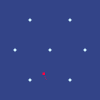
“我这是在看的什么？”
“就在我们说话的这会儿，这事正在发生。这是我们在红郡对一架北极地面无人机的秘密杀伤链。”
“红色方块是敌人。蓝色圆圈是我们自己的七架无人机，摆成了一个六边形。它们的任务是干扰通信。现在它们在休眠，等北极那架无人机完全进到圈里。”
“那接下来呢？”
“啊，那咱们一起看吧。”
大约十嘀嗒后，扬的屏幕上又出现一个阅后即焚文件。

“再等一会儿。”
“我很期待。”
“然后……开始。”

“看到了吗？”
“嗯。”
“干扰无人机正在干扰。红叉表示目标被命中。按计划是两次命中：一次打它的主天线，另一次打它的支腿，防止它逃出干扰区。蓝色三角形是我们的两架攻击无人机。”
对话停了大约二十嘀嗒。

“还没死？怎么这么久？”
“我们那些无人机——就是三角形——其实并不是要杀死它。要真想杀，一开始直接下重手就行了。”
“那它们在干什么？”
“它们在跳舞。”
“跳舞？”
“它们的目标是尽可能久地活下来，用尽各种花招避免被杀，最好还能被误认成北极的无人机，甚至误认成一只动物，直到目标快要逃出陷阱时才动手。”
“这就是我们的目标。拿北极无人机当靶子练怎么杀它们，很费钱。但拿北极无人机当陪练，练怎么在它们手里活下来，这个我们做得到，基本上只要那两个三角形还有一个活着，就能一直练。之后六边形里的七架无人机再收尾，把目标的电路烧穿，确保北极人自己也拿不到训练数据。”
“等等……”
“怎么了？”
“我们有麻烦了。”

“北极增援？你现在要接管，亲自把无人机开向胜利？”
“对，我正打算这么干。先让那两架受了伤但还活着的干扰机装死，把攻击者引到中心，干扰机重新启动，再合围，然后做掉它。”
“你干你的，不用给我实况解说。”
“我是在跟 AI 说话，顺便让你听着。”
“圆圈们，现在把西北方那个方块解决掉。目标：通信和存储全部干掉。”
“除了左边和左上，其余干扰全部关闭。”
“时机合适时，重新合围，重启干扰，发动打击。把突然性做到最大。”
“不——”
“什——”
扬话说到一半停住了，想起自己不该分散泽的注意力。
“它们开始干扰了，我掉线了。”
“现在没我什么事了。就是我们的 AI 对北极人，我们的 AI 加人对他们的 AI 加人。要是我们的干扰起了作用，就变成我们的 AI 对他们的 AI。”
两人默默等着。
十嘀嗒。
二十嘀嗒。
三十嘀嗒。
终于，扬的电脑上下载图标又亮了。

“真的好险。”
“哇。”
“我们这边只剩一架完好的无人机了。最后一步，它得走一圈，把场上所有无人机——先北极的，再我们自己的，以防万一——芯片和存储全部杀掉。它得赶在更多北极无人机过来之前做完。”
“受损的那些能帮忙吗？”
“它们动不了。还能攻击，但要彻底干掉芯片和存储，最好凑到十厘米以内。”
“即便如此，我们也不能真的确定北极人一定抢救不出训练数据。只能往好处想。”
“好……我把指令给了，现在只能看着。”
“我挺好奇。你们连进红郡的网络是怎么运作的？”
“啊，那是我们另一个大项目。现在的问题是，北极人把所有没留后门的电子设备都收缴了。还剩下不少手表、手持终端和算力盒藏在各处，可只要哪台设备试图往外发东西，北极人就能查出来。所以我们的办法是隐写术。”
“两个人假装在打语音或视频通话。通话进行时，那台没留后门的设备就放在旁边，轻轻放着一段音频。这段音频流听起来是随机的——里面其实是被纠删码包裹的加密数据，抗噪能力很强——但我们用了之前跟你讲过的处理健康数据的同一套技巧，把能藏的数据量做到最大，好让任何监听这通电话的人或机器人都看不出有什么异常。”
“其中一个……你们还有别的大项目吗？”
“嗯，下一步是，我们想真的绑架一架北极无人机，带回泽国分析。”
“哇。”
“其实，这就是我还要再请你帮一次忙的地方。”
“那你需要什么？”
“我想让你再帮我引荐一家防务公司。最好别通过研究所所长，换个路子。”
“为什么？”
“研究所所长引荐的那家公司海上业务做得好，我想找另外一家，更擅长空中业务的。”
“再说，这可是自由城，这是个市场。你得多找几个人，互相比较，才能确保自己不被坑。”
第二十三章
帕佛盖都，泽国 · 3724年雾期22日
格拉迪亚斯、白和芬坐在山体金字塔深处一间食堂的桌旁。
食堂的桌椅与墙壁之间，四面都种着绿树。两面墙上爬满藤蔓，另外两面则镶着巨大的镜子，让整个房间仿佛属于某种无限重复、无边无际的空间。入口只有一个，位于一角，两侧各有一丛茂密的灌木，挡住了通往入口隧道的视线。
另一个角落里，以及离他们几米远的食堂正中，地上立着几台空气过滤器——显然是刚添置的，还没怎么考虑过怎样让它们在视觉上融入这个房间。天花板上吊着朝下的风扇和紫色的灯。
三人待在一处私密的隔间里，灌木挡住了食堂其余大部分区域的视线。两只扬声器模拟着清晨林中蝉鸣的声音，盖过了其他桌的谈话——他们知道，这同样也保护了他们自己的谈话。
泽走了进来，看得出已经精疲力竭，在他们旁边坐下。
“好险。我们被几架北极无人机伏击，勉强才打赢。幸好下一波蜂群赶来把我们清掉之前，我们整整有五分钟，所以我想那些芯片都毁掉了，北极人没法从这场战斗里提取训练数据。”
“自由城那边的人情绪怎么样？”
“他们特别兴奋。”
“看吧，我早说过，先跟自由城合作，是让昆高培更愿意参与国际合作的好办法。”
“你得先给人一些能马上亮出来的成绩，让他们能拿给上级或朋友看，尽快靠实绩挣到正当性，别人才信你敢走下一步。”
“对，你的建议很管用。不过……我猜下一步会比这一步难。自由城的防卫队愿意合作。到了维里迪亚，我们得想办法绕开他们的制度，那要难得多。”
“绕过人做点小项目，可以。但要想赢下大仗，就得有规模。而想要规模，就得做那件难事：真正把一些更大的机构拉到你这边来。”
“你有什么办法吗？”
“塞拉说她打算想想办法。我把韦尔多的联系方式给了她，他是我目前真正信得过的唯一一位参议员。走着瞧吧。”
一个机器人过来，把四人的饭菜放上桌。他们安静地吃了起来。
芬和格拉迪亚斯先吃完，喝着茶歇了几分钟。
芬从包里取出一本书，递给格拉迪亚斯。
“来，看看你的泽国语学得怎么样。随便翻开一页，读。”
格拉迪亚斯接过书，随手翻到一页，看了一眼。
“你觉得我能读这个？”，格拉迪亚斯不敢相信地问。
“来嘛，试试看。”
“好，那我开始了……”
“从物质世界的‘小思考’，到网络的‘小思考’。”
“‘小思考’就是极简主义。”
“啊，我明白了，这就是那种光认识词根也到不了意思的情况。”
“确实。而且，把词根压缩下去的整个工程，也只有在我们接受这件事不可避免之后才算成功。”
“包在绿色里面——40年前，全世界‘美的思考’的一次大模式变化，就是极简主义。”
“开头那一截是固定说法，意思是‘包括泽国和维里迪亚’。‘美的思考’就是美学。”
“许多人认识到，拥有许多实物不只是没有‘线心’，还是一间‘锁住的房间’。”
“‘线心’是一种简朴、或者说方便的感觉；在这个语境里，‘锁住的房间’更像是监狱。”
“房间复杂，心也复杂。”
“好！”
“与物少而来的‘暖心’——幸福？——一起活着，就是自由。”
“很好！”
“这件事发生在40年前，是有逻辑的——有原因的？”
“对。”
“电子机器和互联网开始出现。”
“这意味着许多人攒下的实物……等等，是许多人攒下的实物，开始变得没人想要了。”
“这里我会说‘不必要’。”
“手持终端让‘聚合与分组装置’、音乐装置、声音交谈装置，以及以前一个人会有的另外10种装置，都变得不必要了。”
“‘聚合与分组装置’应该就是加减乘除装置——计算器。‘声音交谈装置’是电话。”
“它装书，可以没有上盖。”
“‘无限’。”
“我们大家生活中的许多部分，正在搬到电的世界里去。”
“是我们全部生活中的许多部分。”
“结果，物质世界的复杂性就停在了后面。”
“是被落在了后面。”
“在近旁的这几年里，我们正在寻求另一种模式变化。”
格拉迪亚斯顿了一会儿。
“好吧，我累了。但我好奇。你能不能直接告诉我，剩下的都是什么意思？”
泽拿起那本书。
“社交媒体并不总是对人心理健康有好处。人们对隐私的关注，很大一部分不只是出于对北极的恐惧，更是因为所有人都在议论所有人的那种铺天盖地的量，以及私生活中的偶然事件变成公共话题的那种不可预测。”
“人们害怕互联网的许多部分，尤其是在隐私技术不如这里强、也不如这里被人理解的其他国家。位置追踪、行为画像，这一切。而且不只是隐私——人们正在意识到，互联网可以像毒品一样让人上瘾。”
“所以现在，我们慢慢看到另一种极简主义的出现：网络极简主义。断开连接。只在自己的设备上做事。就像物质极简主义是随着数字世界能力的增长才成为可能，网络极简主义是随着 AI 和本地软件能力的增长才成为可能——你可以把整个世界装在自己的设备里。”
“有意思。”
“格拉迪亚斯，你读得很好。”
“谢谢。现在轮到你了。你对掌舵会的治理规则了解多少？”
“有一套税则评则。每一条评则随机抽二十一名掌则人——每年新增七名，任期三年。这个组的职责是提出并表决对评则的修改。二十一人分成三个七人小组，每组都混有第一年、第二年和第三年的人。任何掌则人都可以就修改评则提出提案。每个小组独立讨论每一项提案，彼此不知道对方是谁。讨论几轮之后，二十一名掌则人对每项提案投票，拿到至少二十一人中十三票赞成的提案就被采纳。”
“还有另一套机制，监审官。他们随机抽选，编成小组去审计单个企业。那边是三个三人小组。他们的任务很具体：判定一家企业在每条评则上落在哪一档。至于更小的企业，审计由见习官——也就是受训中的掌舵会成员——来做。见习官要被接纳，既要通过议会委员会的批准，还要在预测分数上排进前10%——他们的审计有一小部分会被监审官随机抽样重做，而他们的表决结果与监审官结果的一致程度，就得排进前10%。”
“那合议庭呢？”
“机制和监审官一样，只是换成五名法官，而不是九名。另外，民事案件双方都可以上诉，刑事案件只有辩方可以。没有层级，只是再抽一个随机样本。还有一条普通法规则：如果你提交的案件——无论是上诉，还是第一次起诉——毫无道理到了恶意滥诉的程度，那这个案子最后不仅会判你输，还可能判你赔偿。这就是针对我们所说的‘拒绝服务攻击’的防护。”
“其实，你提到最后那点正好。我共同家庭的另一位父亲维尔，打了一场很长的官司，告的……嗯，基本就是他以前的雇主，因为他们搞了些财务上的把戏把他解雇，好赖掉事先约定好的遣散费。第一轮他赢了。公司上诉，输了。然后他们又上诉了一次。就在昨天，法庭驳回了他们的第二次上诉，判定为恶意，并把他们要付给维尔和其他工人的金额提到了三倍。”
“很高兴听到这套制度管用！”
“最重要的问题永远是它到底管不管用。比如批准新掌则人和新监审官的议会听证，到眼下这一步，基本上已经形同虚设了——至少在我看来是这样。”
白开口了。
“这些信息真的很有用，格拉迪亚斯；也谢谢你，泽，这么快就跟上了。如果我们想影响维里迪亚，搞清这些机构今天到底怎么运转，和军事那一面同样重要。”
“总之，登应该在他的私人房间等着我和泽了。我们该动身了。”
“好。”，泽答道。
泽和格拉迪亚斯同时抢着把手表往桌角的小绿圈上贴，结果两人把对方的手腕都推得太远，谁也没连上。芬也凑上来，啪地把手表拍在圆圈上。片刻之后，他的手表震了一下。
四个人都站起身，往食堂外走。
格拉迪亚斯已经上床，正准备睡觉。突然，他的手表震了。
| 来自 | 消息 | 时间 | |
|---|---|---|---|
| → | [正在呼叫] | 91454 |
这种红色的消息，他此前只见过两次：一次是北林遭到攻击时塞拉给他发来消息，一次是她为德尔瓦特的事打来电话。
翡翠正在用它告诉格拉迪亚斯事情的紧要程度和塞拉的情绪；而格拉迪亚斯明白，这本身就已经是这条消息的一大部分。
格拉迪亚斯心跳加速，接通了电话。
“你知道莉莉出了什么事吗？！”，塞拉尖叫道。
“我……不知道。我只记得听说她最近一次考试考了81%。出什么事了？！”
“我进了她的房间。她在说话，在手持终端上打字。而我在镜子里看得见她读的东西、说的内容。”
“有那么几分钟，我就那么盯着。我不敢相信。”
“是什么？”
“她在某个聊天群里，他们在分享北极的宣传。为埃菲里昂勋爵的言论叫好。盼着北极人快点来到维里迪亚的其余地方。”
“什么？！”
“我一下子炸了。我当场质问她，问她怎么能这样背叛我们——费布里克和赫雷达正因为北极人被卡在一千公里之外。”
“她怎么回答？”
“她说北极人是对的。他们的哲学——有些人更差、有些人更好，更好的人就该统治其他所有人，人生最重要的事就是努力成为那更好的人之一——正是激励她的东西，给了她学习和用功的理由。说我们无条件的爱是毒药。说北极人的哲学——欣赏和爱只作为成功的奖赏——反而把她从深坑里拉了出来，而我们做的一切连一点点忙都没帮上。”
“这……太可怕了。”
“我冲她吼了十分钟，然后关上了门。”
“我哭了一个长时。然后，等我再打开门，窗户开着，她不见了。”
“你能……通过她的手表追踪她吗？”
“已经让莫夫去做了。白费力气，她把手表扔到随便一辆巴士上了。”
“哇。我现在觉得特别糟。我们真的什么都没做，去真正激励她、鼓励她。”
“格拉迪亚斯，她被北极人洗脑了。你敢摆出你那副哲学家的样子，跟我说他们也有道理。”
“你怎么能这么疏忽？”
“好，等一下。没看穿德尔瓦特，那件事是我的错。我蠢。莫夫也蠢。我承认。这件事，这件事是我们两个人的。你是莉莉的妈妈。你见过她很多次——在她去维尔和黛雅那儿之前，在她住在他们那儿时我们去看她的时候，还有她回来之后。你有很多机会把事情变好，就像我一样。而你没做成，就像我也没做成。所以我们一起解决这个问题吧。”
“你根本就不明白，是不是？”
塞拉挂断了电话。
第二十四章
帕佛盖都，泽国 · 3724年雾期27日
格拉迪亚斯看了一眼手表。时间刚跳到20,000。和塞拉通完电话后，他一整夜都没睡。他试了两次去睡，每次都撑了二十分钟就放弃了。
他深爱的四个孩子里，如今有三个以这样那样的方式落入了北极人手中——知道这一点，他就怎么也睡不着。
塞拉给了他那样一记不信任票，然后切断了联系，连让他道个歉的机会都不给——这之后，他也睡不着。
而这两件事同时压在他身上，能让他抱一抱、借点情感支撑的人却在几千公里之外，他绝对睡不着。
最后，他既想着女儿的安全，也想着在塞拉眼里挽回自己，于是决定做一件不合常规的事：他打给了兹文。
兹文立刻就接了。
“爸？”
“你还在和莉莉联系吗？”
“她的头像四十分钟前变绿了。我想她是用新设备登录的。”
“好。”
“兹文，你愿意帮我们把莉莉救回来吗？”
“当然！为了我妹妹，什么都行。”
“那我要你做的是这些。跟她保持联系。主动找她，问问她最近怎么样。别流露出半点不赞同她决定的意思，甚至要表现出同情。总之保持联系，想办法弄清她在哪儿。”
“爸……”
“怎么了？”
“这简直……跟妈妈一个长时前让我做的一模一样。她还教了我很多该说和不该说的话。”
格拉迪亚斯打开门，穿过走廊，走出旅馆区域，然后左转，继续沿隧道往前走。
这是他完全住在地下的第八天，地点是帕佛盖都南端的山体金字塔里。他刚到泽国不久，就被从原先的旅馆迁到了这里。新的建议要求所有“重要事务”都转到地下，而格拉迪亚斯作为事实上的昆高培顾问，当然够格。
两个多月来，他每天都沿着山体金字塔半山腰的环山树林散步二十分钟，有时还会往下走得更远，进到附近的森林里。最近这些天，他白天都待在图书馆，了解泽国的方方面面，几乎每天都和韦尔多通话，琢磨怎么说服维里迪亚军方与昆高培合作。
而今天，经历了昨晚那些事，又只睡了一个长时，他连出门的力气都提不起来了。
格拉迪亚斯走得很慢，去图书馆的路上常常停下来，盯着墙面，或是盯着经过的侧室看。
他注意到，自他搬进来以后，各类高科技产业——生物医药、芯片制造，甚至汽车生产的一部分——都迁进了山体金字塔。再一琢磨，自从北林被吞并之后，新闻里就再没出现过一起北极对泽国的成功袭击。
他还注意到，散落各处的空气过滤器和紫外线灯多了十倍以上。至少泽国的厂商和班孙培干得不错，他想。
他经过一间食堂的入口，看见里面多了几棵树，种在陶盆里，约两米高，还摆着各色灌木。这些绿植似乎身兼三职：让坐在里面的人看着自然心生平静，降低 CO2浓度，还隔开食堂的不同区域，增添几分私密。
慢吞吞走了大约十五分钟，他终于来到图书馆门口。
他发现门楣上的标语和上次来时不一样了。
他停下脚步，花了一会儿工夫读那行字。
“学生说：明天，我想去一个神奇而遥远的地方。老师答道：为了明天，你今天做了什么？”
让格拉迪亚斯意外的是，这句训诫给了他一点力气，让他能抬手贴上绿色圆圈开门，走进图书馆。
他穿过门，慢慢向右转，朝其中一台计算机终端走去。
白注意到了他，走上前来。
“怎么了？”，她问。
“我没事”，格拉迪亚斯用低沉而平淡的语气答道。
“不过，我知道的够多，足以看出你并不好。我也知道，如果你不情愿，还逼你说出心里那片阴影的来由，只会让你更难受。”
“所以别担心，我什么都不会问。”
她走到格拉迪亚斯面前，轻轻抱住了他。
“我刚刚才知道，莉莉这一年一直在照单全收北极的宣传，而埃菲里昂勋爵的布道让她觉得自己被重视、被欣赏，比我给她的多得多。不到一分钟，我又知道她离家出走了。再过一分钟，我知道塞拉现在恨我，不想跟我说话。”
“北极人说的那些话里，有什么是像她这样的人会觉得有说服力的？”
“无条件的爱毫无意义。爱只有在你爱对方身上某种品质时才值钱。所以要得到爱，你就得配得上它，得去挣。爱不能像恒定的背景辐射那样白白照着你，只能是赢来的奖赏。”
“最重要的是永远努力提升自己。可如果你能提升，就说明你能比过去的自己更好——那你就等于承认了，一个人可以比另一个人更好。所以所谓我们人人平等、我们最重要的共通之处是平等的人性，全是胡说。”
“你知道……我其实有点同意。”
“什么？”
“我不是说在什么绝对意义上，这种想法对每个人都健康。绝对不是。要是你真觉得它健康，那当然，一旦你认定自己最强，就会想去征服所有人，只为了证明这一点。我的意思是……这种想法对我有好处。”
“你是什么意思？”
“我父母在我很小的时候就死了。一场爆炸，北极人引发的。我跟着姨妈长大，她基本上不管我。没有人无条件地爱我。我十二岁就得自己想办法挣钱。我的社交能力全是从那里面学来的。我从别人那里得到的唯一欣赏，就是我给他们提供了有价值的东西，或者我的成功让他们佩服的时候。你说的埃菲里昂那套循环——爱是赢来的奖赏——那就是我的童年。也正因为这样，我在帕佛盖都的民本棋赛上拿了第二名。”
“第一名是谁？”
“泽。而他要赢的动机比我更纯粹、更漂亮。我赢，是为了向世界证明我值得被爱，因为我强。”
“那是什么动机？”
“好奇。”
对话停了一会儿。然后格拉迪亚斯又开口了。
“几分钟前你抱我的时候，你给的难道不正是埃菲里昂说的那种毒药吗？把爱当作对软弱的奖赏？”
“一年前我不会那么做。”
“可它管用了。”
“我很想说，我那么做是因为我抛弃了贪婪这个假神，改信了真正的宗教——看重好奇。可连这也是假的。如果我是被好奇驱动，我大概会直接问你出了什么事，而那只会惹你反感。”
“那倒是肯定的。”
“所以你的结论是什么？”
“也许真的没有什么万能公式。不同的人适用不同的招数。我不会说我对人类可能有的各种动机全都无所谓——我今天可以很坦然地说，好奇几乎总是比贪婪更好的动机。而怨恨可能是最糟的。但我不认为有哪一套能适合所有人。”
“那我要怎么救莉莉？还有，费布里克和赫雷达呢？还有，我怎么才能让塞拉不再恨我？”
“嗯，也许这正是你唯一需要变得至少有10%到20%像北极人的地方。如果我们能赢，你的家人就能完完整整地重聚。你从塞拉的角度想一想。她唯一能快乐的办法，就是能再抱一抱费布里克、赫雷达和莉莉。可光靠情感支撑和爱，没有任何办法把这三个人带回来。唯一能把他们带回来的，就是你赢——帮维里迪亚战胜北极人。所以，让这件事推着你更拼命一点，好让你在下一场战斗里成为赢家。”
格拉迪亚斯和泽沿隧道往下走，又下了楼梯。几分钟后，他们来到一扇密闭的门前。泽把手表贴上门边的绿色圆圈。门缓缓打开了。
他们看见一个狭长的房间，房间尽头有一张大桌子。桌边坐着一个男人，披着幽暗的斗篷。
“欢迎你们两位！”，登高声说。
“很高兴再见到你，登”，泽答道。
格拉迪亚斯清了清嗓子。“mi cin pin fe lo kin do”，他补了一句。
“哇，你的口音现在都这么好了。我也很高兴见到你，格拉迪亚斯。”
“顺便说，请坐。”
格拉迪亚斯和泽一起上前，在登对面的两把椅子上坐下。
“那么，格拉迪亚斯。这次会面是你召集的。你想谈什么？”
“嗯，到目前为止，我们还没想出什么好办法，能说服维里迪亚军方与你们合作。”
“不过，我倒有个不太常规的想法，可以让你们在过渡期里先做起来。”
“什么想法？”
“监视我们。”
登惊讶地盯了格拉迪亚斯一眼，随即几乎立刻恢复了平静，仿佛想起公开流露兴奋或其他计划外的情绪，与他的自我形象不符。
“我想我能看出其中的道理。不过我想听你说。”
“北极人对维里迪亚社会的渗透非常深。他们腐蚀了许多政客，也腐蚀了军方。似乎只有那些内建隐私保护更强的机构还在抵抗：掌舵会、图谱资助和合议庭。不过即便在掌舵会内部，渗透也已经钻得很深。”
“所以，如果你们能监视维里迪亚，也许就能监视那些间谍。尽可能查清北极人对维里迪亚的渗透落在哪里，甚至试着反制。也许还可以把这些信息更直接地交到人们手里，让他们不必经过中央机构就能自己去解决。”
“你知道风险吧？”
“如果你们被抓住，维里迪亚和泽国之间的信任会损失很多。那样我们就彻底分裂，北极人赢了。”
“那我们凭什么该接受这个风险？”
“嗯，首先，这局棋我们已经落后很多，局面很绝望。用你或者泽的话说，第九个干预回合。”
“第二，我不是只丢给你们一句‘去当间谍’就完了。我愿意提供关于北极人如何运作的许多具体细节，还有我们如今联系上的一大批掌则人的人脉，好让你们能更好地追踪北极人。”
“第三，我觉得我们应该告诉韦尔多，说服他和我一起担起责任：万一这事泄露出去，由我们两个人出面认下，说项目是我们提的，甚至是我们主持的。”
“我喜欢这个方案。泽？”
“你在问我？”
“当然。你已经是我们最好的密码学家之一，还一直在协调与自由城防卫队的合作。你觉得呢？”
“十五年来，数字设备上的安全一直非常牢固。间谍活动主要是物理世界的事，而物理世界要守住难得多。我觉得应该带格拉迪亚斯去看看一些店铺和晶圆厂，比如你很久以前带我看过的那家，然后我们可以一起想，有什么不太惹眼的办法能弄到更多关于维里迪亚的情报。”
“其实……我记得维里迪亚的监控摄像头是从泽国买的。就是已经装在不少地方、他们还想装到所有地方的那种。维里迪亚过去要求，摄像头装在公共场所时，必须用密码学手段强制执行数据用途限制，但几年前这一条被稀释了，是交通部一次没人注意的行政调整。你们能不能就……给那些摄像头留个后门？”
“如果真有这么容易，那北极人肯定早就大规模渗透维里迪亚了吧？”
“是啊？”
“已经渗透了吗？”
“是啊？这一直就是我想告诉你们的啊！”
第二十五章
帕佛盖都，泽国 · 3724年霜期1日
格拉迪亚斯和泽坐在一间封闭房间的桌旁，桌面本身就是一块屏幕。屏幕上摆着四堆圆圈。
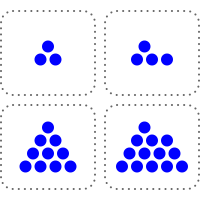
“好，那我该怎么做？”
“你先走，所以挑一堆，从那堆里至少拿走一个圆圈。可以多拿，但至少要拿一个，而且一次只能从一堆里拿。”
“谁拿走最后一个圆圈，谁就赢。”
格拉迪亚斯觉得自己对这游戏毫无战略头绪，于是决定边下边学。
他用手指点了左上格里的一个圆圈。
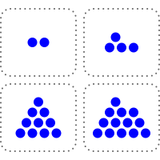
泽立刻应手，点了右下格最上面的那个圆圈。
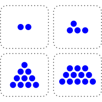
格拉迪亚斯决定换个路数。他点了左下格里的三个圆圈。
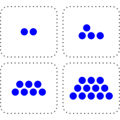
泽应手，把右下格里的圆圈全点走，只留下一个。

格拉迪亚斯把左下格剩下的圆圈全点了。泽只是点了右上格里的一个圆圈，作为回应。
格拉迪亚斯把左上格剩下的圆圈全点了。泽则点了右上格剩下三个圆圈中的两个。
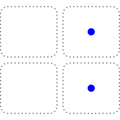
“好吧，我输了。”格拉迪亚斯承认。
他唯一能走的下一步，就是从两个格子里的一格拿走最后一个圆圈。这样棋盘上就只剩一个圆圈，泽拿走就赢了。
“这手真厉害。”
“这是我们小时候常玩的游戏，尤其是在民本棋这类更现代的东西出现之前。”
“那接下来是不是该传授你的独门秘诀了？”
“你倒是懂我。秘诀确实有，而且是个很简单的算法。它需要心算，可你一旦学会，并且算得不出错，那么只要先手后手由你挑，你就永远能赢。”
“那就说吧。”
“把每个格子的圆圈数拿来异或。做法是：把每个数写成二进制。对每一位，数一数这一位上有几个1。如果1的个数是奇数，新数的这一位就写1；否则写0。我们把这个数叫作棋盘的异或和。”
“等等，慢点，举个例子。”
“就拿我们开局那个棋盘。四个格子的圆圈数是3、4、10、13。”
“好。”
“换成二进制是多少？”
“11、100、1010，还有……等等，1101？”
“对！不过我们补几个0，把它们凑成一样长，再写下来。”
他打开手持终端，把这四个数写成网格的样子。
0100
1010
1101
“现在竖着一列一列地数。”
“每一位都有两个1，是偶数。那异或和就是……每一位都是0，所以是0？”
“正是。还记得你第一步走了什么吗？”
“我把第一个数从3减到了2。”
“没错。”
0100
1010
1101
“现在异或和是多少？”
“最低位上现在只有一个1，变成奇数了，所以是1？”
“正是。还记得我做了什么？”
“抱歉，我忘了。”
“我从最后一个数里拿走一个，把它从13减到12。”
0100
1010
1100
“哦，我明白了！异或和又回到0了！”
“正是。所以每次轮到你走，异或和原本是0，而你无论怎么走，都只能把它变成非0。但只要它非0，我就总能找到某一步，把它重新变回0。”
“等等，真的吗？”
“取异或和里最高的那个1所在的位。在这一位上为1的圆圈数，个数必然是奇数，也就是说至少有一个。挑出这样一个格子，把它的圆圈数改成它与异或和相异或的结果。这一定是个减小，因为有一位从1翻成了0，而其余发生变化的位都比它低。”
“我……大概懂了一点？”
“所以每次你走，只能把异或和从0变成非0；轮到我走，我就把它调回0。而最后一步——清空棋盘的那一步——也会把异或和变成0。也就是说，最后取胜的那一步，永远轮得到我来走。”
“如果开局时棋盘的异或和不是0，那我先手就能赢。但如果开局异或和是0，那我做后手就稳赢。”
“有意思！”
格拉迪亚斯往后一靠，想了一会儿。
“我以前从没见过后手占优的游戏。”
“也未必！只有开局异或和是0时，它才偏向后手。而后手占优的游戏，比你想的要常见。”
“通常局面里总有一处位置、一块地盘是有价值的，先手因为能先到，就占了便宜。”
“你能想到，是什么底层原因让一个游戏偏向后手吗？”
“什么意思？”
“后手有什么根本性的优势？”
格拉迪亚斯又停下来想了想。
“轮到他走的时候，他知道得更多。”
“没错。”
“在这里，我先走一步，你就有机会根据我这一步作出应对，于是你永远知道该走哪一步，能把局面重新拉回平衡。”
“正是。”
这次轮到泽停顿。过了一会儿，格拉迪亚斯又开口了。
“说起来，如果你执先手，大概也一样能赢。”
“为什么？”
“因为我不知道诀窍。在你眼里，这里有个数学结构，它有一个理想状态——每当我走完，异或和都是0的那个状态。一旦进入这个状态，你就永远锁死了。可在我眼里，那只是一团乱。”
“确实。熵这东西，永远只存在于观察它的人眼中。”
“这个游戏是一座由不同层次的规则搭起来的塔。”泽接着说道。“最底下那一层，游戏是不可逆的：每一步你都必须至少拿走一个圆圈。比它高一层，是异或和，那一层是可逆的。无论你怎么改，我总能调回来。但在比那更高的一层上，当异或和处于平衡时轮到你走，这件事本身才是不可逆的。一旦你让局面滑进那个状态，而对手又懂这个诀窍，你就再也出不来了。”
泽又沉默了。过了一会儿，他换了个坐姿，示意热身到此为止，真正的提问要开始了。
“好，下一个问题，格拉迪亚斯。争夺维里迪亚的这场斗争，是先手占优，还是后手占优？”
格拉迪亚斯眼睛睁大了，显然对这话题的新走向感到意外。
“什么意思？”
“北极人先动手。他们布设或接管了间谍基础设施；对维里迪亚官员施压、行贿、威胁；还发动了一场高度协同的行动，甚至想拿下掌舵会，让它听命于自己，还劝得维里迪亚社会觉得抵抗也没什么意思。最后，他们先打了红郡，又打了北林。那么，是他们因为已经占住了关键位置而获胜，还是我们因为握有反制策略而获胜？”
“我明白了……”
“在战场上，眼下他们占优，而且根本不是什么先手的缘故——就是技术更好。但在机构之争里，我们有反制策略。他们玩的这套，我们也能玩，而且我们占优，因为我们要达成的目标，恰恰是我们要去影响的大多数人本来就想要的。”
“只是让他们看清自己的利益所在，从而影响他们去做真正对他们有利的事——这种事的说法叫什么？”
“听起来答案特别简单。”
“说服。”
“那我们去说服谁，让他们做什么？”
“你说呢。”
格拉迪亚斯又顿住了。终于，他开口了。
“合议庭怎么样？”
“继续说。”
“我们对合议庭搞一场同样的影响行动，就像德尔瓦特他们那伙人对掌舵会做的那样。然后说服他们去做……某件能收拾整个局面的事。”
“你学得很快，格拉迪亚斯。”
“那么，我们在这件事上为什么占优？”
“因为我们做的事对维里迪亚真的有利。德尔瓦特要让掌舵会成员做出违背维里迪亚利益的事，就得给每个人准备一套不同的说辞，量身定制，顺着他们的价值观，也戳着他们的软肋，除此之外还要或明或暗地威胁。我们不用这样。我们只要有一个明确的诉求，然后照实把这个故事讲出来就行。说谎很容易栽跟头：一个谎言本质上是一个模拟出来的虚拟世界，而要让它自洽，除非你真的把整个世界都模拟一遍，否则极难做到。但真相天然自洽，这是白送的。所以我们讲真话。”
“那么，下一个问题。我们对合议庭的诉求是什么？”
“去找韦尔多谈谈。”
“那通电话你来安排。我这就问登一声，看看我们在维里迪亚的谍报工作有什么最新进展。”
格拉迪亚斯点了点手表。
| 消息 | 收件人 | 时间 | |
|---|---|---|---|
| [正在呼叫] | → | 78145 |
过了一会儿，韦尔多接了。
“你好啊，格拉迪亚斯！”
“参议员，我们有个新想法。”
“什么想法？”
“北极人想对掌舵会做的事，我们想对合议庭做一遍。找出足够多的法官，说服他们去做一件事，让我们能真正反击北极人。”
泽看准机会插了进来。
“管这些摄像头的管理员，大多刚刚装上了我们的更新。这个更新还会回传每台摄像头的现状——结果发现，有一批早就被北极人接管了。所以现在我们手里有很多后门，也已经锁定了十几名法官，顺带还掐掉了他们的一些后门。不过这也意味着，我们接下来得更小心，不能再多暴露自己。他们能玩的那套，我们一样能玩——大概还能玩得更好，因为我们的目标，本来就该是维里迪亚的法官们真心想要的。”
“所以，我们得想清楚，到底要说服他们去做什么。”
韦尔多似乎笑了，那笑意多半是出于赞赏。
“我就知道你们能想出点办法来。”
“让我想想……”
沉默了片刻。然后，韦尔多缓缓开口。
“好，我有个疯狂的想法。”
“在维里迪亚，最基本的法律之一，就是军方必须保卫国家。这是第十四条根本法，白纸黑字写在文件里。在北林，他们彻底没能守住国家，而且事后几乎没做任何认真的改革。”
“所以，维里迪亚军方是违法者。所以，合议庭可以撤他们的职。如果议会想拦，那也好办——法律上，议会是军方的集体首脑，于是合议庭连议会一起撤了也行。”
“合议庭……有这么大的权力？”
“原则上，合议庭能做的事很多。”
韦尔多顿了顿，然后决定岔开去谈点哲理。
“你看，格拉迪亚斯，法律不像一段跑在密码学网络里的计算机程序。法律的目的，不是要消灭判断世上是非对错时的那种主观性。相反，它要做的是给这种判断搭出结构——把它引进一些渠道，让它更可预测、更聚焦，好让每桩案子不必重新审一遍‘什么对人类有益、什么有害’这类根本问题。”
“在普通案件里，它确实常常很接近程序化，而这也正是关键所在。法庭上的一桩商业纠纷，争的不是谁人品好，而是其中一方有没有做出法律定义上的欺诈行为。但在任何例外案件里，都还留着很大的弹性——事实上，今天已成判例法的任何情形，在过去的某个时刻都还是未知的、有弹性的。”
“而这份潜在的弹性，正是给合议庭留出空间、做出好判决的关键。人不是为分类而生的，是分类为人而设的。宣布整个军方违背了它神圣的职责，这很疯狂。疯狂到我不认为维里迪亚历史上有过任何类似的事。但维里迪亚也正处在一个疯狂的时代。所以此刻，正需要这样一份疯狂的判决。”
“要赢这一局，光是我刚说的那套论证直接扔到公众面前，让法官们一看就知道当然正确、立刻照办，是不够的。你得去说服他们。你得跟他们坐下来，把话说透：这不只是一个站得住脚的法律论证，而且对维里迪亚有好处；把整个军方领导层换掉——必要时连议会一起换掉——为什么是能救维里迪亚、而不是让它更乱的事。还要让他们相信，会有足够多的其他法官一起走这条路，而且等他们作出裁决时，公众也会跟上。而所有这些，都得先悄悄做，再一下子亮出来，让北极人来不及反应。”
“我喜欢这一点：连‘这计划值得一试’都不用说服你。”
“我在议会会议上听到的别的方案，只有两个：一是继续照旧，只是‘再努力一点’；二是干脆投降。我判断这两个的成功概率比这个还低。”
第二十六章
维里迪亚 · 3724年霜期5日
泽、白、格拉迪亚斯和登坐在飞机上一间封闭的小舱里，泽和白面朝前，格拉迪亚斯和登面朝后。四人都默默望着窗外，欣赏着大片大体平坦的绿色原野。视野里最显眼的是一排小山，再往远处，便是背景中的梅尔丹城。
广播提示音嗡嗡响起。四人一下从出神的状态里惊醒，准备聆听。
jo hen jei fe fei go de di mei dan du
“该你翻译了，格拉迪亚斯！”，泽催道。
格拉迪亚斯在脑子里拼命赶时间，想赶在下一句开始前听懂、答上来。过了片刻，他脱口而出：
“各位，欢迎来到维里迪亚的梅尔丹。”
ti zun no tei li ze fo fi shi ci cin ho li ze ci bia tei gei ka fiu den min ba fia zui
“当地时间是74000，气温7度。再过一小会儿，飞行器就会降落地面。”
ti tei li dzai hen fe lo kin fe hai bun
“现在正是欣赏外面美景的大好时机。”
hai ka sho kin ce fe fei go de bun ji dze kai zui liu
“此刻窗外，你可以看到维里迪亚那片美丽的、绿色植物铺成的大地。”
“绿色植物构成的风景。”，泽温和地纠正。
biu ka di ge le bo gai dei li lia
“右边是格勒博尔山脉。”
cen hai ka ge le bo gai dei de dziu hai ka ce kin fe di mei dan du ci ti li sa dzu du fe fei go
“更远处，越过格勒博尔山脉继续往前，你能看到梅尔丹城。它是维里迪亚的首都。”
di mei dan du li bai
ci di mei dan du de jan zi li pa pi pa fi ha
ci dzen fe gi hie pen
“梅尔丹是座大城，人口110万，下辖许多不同的城区。”
dzu ka kin ce fe bia gai dei
ci fia sai pen ka dan fe gi jan
ci sei sai pen ka jen bin pei de pen li pai
ci mui dau fe ti li cin pin cu bun
“城区正中有一座小山。下半山是许多人的家，上半山有一部分政府机构在办公。爬上山去，心情愉快，风景也美。”
gai dei de zei biu ka pai hui pen li bia
ci pai hui pen fei ka fei go de gi bai pai hui li lia
ci sa dzu pai hui li dzen fe ten min de bin dai cu man jei cu su kun gau
“山的东边是商务区。商务区里有许多大公司，主要产业包括计算机软件、金融和健康防护。”
gai dei de zei gei ka di ka lia mai pen li lia
ci ti pen li lu fe bai kai zun
ko ti dzen fe gi pui gau ji dan
“山的南边是卡利马尔城区。这一片看着像森林，里面却藏着许多住宅。”
gai dei de zei dzun ka gi dan pen li lia
co ti ka gi jan li san cu sun cu mo
ci ti ju fe gi kai de sai hui cu gi dau kin zun
“山的西边是一片大型居住区。许多人在那里睡觉、学习、吃饭。那里食物种类繁多，还有很多值得一看的地方。”
“也就是旅游景点。”
ti li tin bia pen fe di mei dan du de ce kin ji gi mui sun jui
ci di mei dan du fei ka ji gi shan jin tei ka jan ki su
te zen hu ka ki kia sin fe ti du
“这只是梅尔丹众多有趣之处的一小部分。哪怕一个人在梅尔丹住上许多年，也未必能把这座城了解透。”
jie fe lo cin pin fe lo di mei dan du cu fei go li bun
“希望你们喜欢梅尔丹，喜欢维里迪亚的美景。”
“说得好。才两个月，你都快成本地人了。”
泽顿了顿，又开口，慢慢地说。
"ci jie fe lo cin pin fe di pa fo gai du"
“我很喜欢帕佛盖都。”
“希望你再来。”
“当然会来！”
“等等，我刚反应过来……pafogai 的意思就是‘十四块石头’？这名字是怎么来的？”
“想想元素周期表。”
飞机停了下来。透过窗户，他们看见十几辆大型巴士和轿车正朝这边驶来。
“大一点的那辆黑车是我们的。为了不引人注意，我们最后下车。”，登说。
泽、格拉迪亚斯和白点了点头。四人靠在椅背上等着。
大约十分钟后，舱门自动打开。四人立刻起身，从座位下取出随身行李，朝飞机前部走去。穿过机舱时，他们看见其他舱门全都敞开、空无一人，用过的毯子和空瓶空杯丢得到处都是，散落在许多小桌和座椅上。
他们从一扇门走出飞机，门直接连着一道楼梯，通往一个狭长的房间——显然也是某辆巴士的内部。房间一头是入口，他们刚从那进来；另一头是出口；中间有两道闸机挡着路。
泽和格拉迪亚斯先上前。两人各自把手表贴到所过闸机侧面的绿色圆圈上，又看向前方的摄像头。过了几个嘀嗒，两道闸门几乎同时开口：“欢迎来到维里迪亚。”
闸门打开，泽和格拉迪亚斯走了过去。房间另一头的出口径直通向一辆黑色大车的内部——正是他们先前从飞机窗口望见的那几辆之一。两人走进去，发现里面已经坐着一个男人。
“韦尔多参议员！”
“欢迎回家，格拉迪亚斯！”，韦尔多答道，脸上的表情和语气比他记忆中的任何时候都更暖。他立刻看向格拉迪亚斯身旁。“那你一定就是泽了。”
“幸会，参议员。”
泽和格拉迪亚斯正要坐下，泽已经听见白和登走近的脚步声。两人也穿过舱口，进了车里。
“那你们一定就是白和登了！”
“正是”，白答道。
“好，都坐下吧。我们有很多事要做。”
四人在各自的座位上坐下。连接车厢与入口房间的舱门关上了。几乎立刻，他们就感觉车开始加速。
“那么首先，格拉迪亚斯，我有个非常好的消息要告诉你。”
“哦？什么消息？”
“我们好像知道莉莉在哪儿了。”
格拉迪亚斯睁大了眼睛。
“塞拉费了很大劲才联系上我，把事情的前前后后都跟我说了。兹文一直和莉莉有联络，她向他承认了自己在哪：她已经越过边界，进了北极占领区，人在北林。”
“接着我们把所有监控画面都筛了一遍——就是你当初极有见地地建议泽国人去黑进的那些。找了几天，我们找到了她。她待在北极人办的一所寄宿学校里，离大梅港大约1公里。”
格拉迪亚斯叹了口气。“至少我们知道她在哪儿了。要把她从北林弄出来会很难，但至少费布里克和赫雷达也在那儿，可以一趟把他们都带出来。”
“确实。你要是真想，现在就可以去北林——不过大梅港的门还关着。”
“北极人最近开始允许北岸与维里迪亚其他地区之间双向通信和往来了。他们在北林开了诊所，提供他们最先进的一些疗法，既能延寿，也能增强体能。看来他们决定试着让维里迪亚人自愿加入北极帝国，办法就是把他们的亮眼技术摆到我们眼前。”
“这招很好。”
“你那句话怎么说的来着，泽？只要让人看清一件事符合自己的利益，从而促使他去做，这只能算说服？”
“埃菲里昂肯定会这么看。当然，西尔卡会不高兴，说他们在隐瞒隐性代价——如果你能活得更久，靠的却是持续注射北极的专有药物，那你的命就捏在他们手里，你就成了他们的奴隶。可埃菲里昂会说，死了——躺在棺材里，连动一块肌肉、想一个念头都不自由——那才是最彻底的奴役。而且这不只是对一个人成立，对一个文明也成立。”
“想让维里迪亚成功、兴旺，我们就得找到综合之道。我们可以承认北极人有些事做得非常好，承认他们追求一个彻底更好的未来这件事本身可以是健康的。维里迪亚的北极星不能只是‘保持现在这样，但少一点贪婪、社会结构好一点’。我们得有真正的进步，并且取其精华、去其糟粕。我们得承认成功，并奖励成功。”
“但首先，我们得给自己挣出喘息的空间。这意味着要在北岸打败北极人。”
“正是。要做到这一点，我们就得愿意向外面学——向北极帝国里的敌人学，也向自由城和泽国的朋友学。”
车缓缓停下。片刻之后，车门打开，外面径直通向一家看起来像政府经营的酒店内部。
“好好睡一觉，朋友们。泽、登，你们俩明天一早有件大事。等那件事办完，我们再碰头谈我们的大计划。Veridia ba fau gie。”
格拉迪亚斯和泽先下了车。几乎立刻，格拉迪亚斯就看见房间远角有个女人在等。她转过身，张开双臂朝他跑来。
是塞拉。
梅尔丹，维里迪亚
泽在一把椅子上坐下，面前是一台控制台，跟他打历次民本棋锦标赛时用的那些控制台惊人地相似。他能看出的最大不同是：这一次，没有防作弊侦测无人机在周围嗡嗡打转。
他戴上耳机和眼镜，对着麦克风说话。
“登，能听见我吗？”
“嗯，又清楚又响。我想我就在你正下方那间屋里。”
泽玩心一起，跺了跺脚。
“听见了吗？”
“我只能从耳机里听到你说话。”
“看来你这儿的隔音做得真好！”
“好，泽，我们把整个行动再从头过一遍。”
“地点：红郡，总统官邸。目标：救出目标人物——总统之子塔芬德尔。方案：我们安插在里面的人让目标走到阳台上。我们飞进去，放下绳索，让他系在腰间、抓紧，然后在北极人反应过来之前飞走。”
“没错，这是主线方案。备用方案呢？”
“如果北极人出现——士兵或无人机——就开火。如果他不走到阳台上，没有备用方案，那就完了——我们的无人机没法直接落在楼顶上还活下来。如果带绳索的无人机被击落，我们还有第二架，甚至其他战斗无人机也可能把目标再接回来，虽然它们不是为这个设计的。唯一危险的窗口，是无人机接住他之后的几个嘀嗒内被击落——那太快了，备用无人机来不及扑过去抓住他，他就已经摔到地上了。”
“我负责什么？”
“监督主线方案。”
“你呢？”
“监督战斗和备用方案。”
“穆，你在吗？”
“在。我负责监督侦察，保证任何意外一出现，我们第一时间就知道。”
“穆，你怎么会在这儿！？”
“我昨天跟你坐同一架飞机，泽。只是不同舱，进城也是不同的车。隐私上的防范措施。”
“能见到你我很高兴！或者说，至少能听见你。”
泽核对了眼镜直射进他眼里的显示画面上的各项数字。
"Fi le gei tau fa"，他模仿着每场民本棋开赛前倒计时播报员的声音，喊了一句。
随后，他有意识地把自己的情绪切换成完全专注于那场即将开始的战斗。
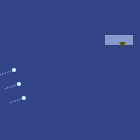
无人机渐渐逼近议会大楼，屏幕上出现的无人机也越来越多，泽紧紧盯着屏幕。
二十个嘀嗒后，屏幕上那个暗黄色的三角形变成了一个更亮的黄色对勾。塔芬德尔按原定时间走上了阳台。
又过了三十个嘀嗒。
"mu gu gei tau fa"，他轻声说。五十嘀嗒后开战。某种意义上，战斗早就开始了，但他等的那个时刻，是塔芬德尔抓住绳索的时刻。他想，那才是真正考验开始的时候。
又过了二十个嘀嗒。
突然，那个对勾又变回了暗黄色的三角形。
泽把视频画面放大。有人抓住了塔芬德尔，把他拽回了室内。
几乎就在同一刻，北极无人机开火了。
泽立刻听见登的声音在耳机里炸响。
“我来查清目标出了什么事。泽，你来指挥战斗。”
泽下意识地点了点头。头戴设备自动把这个动作转成一个对勾图标，闪现在登和穆的显示画面上。

泽低声呻吟。他的无人机已经有三架被击中。
“规避机动，向敌机还击。所有受损无人机，只要还能动，就降落到地面装死。”
他意识到，北极人的侦察能力比他想的要强得多。
就在那时，他的第四架无人机上方出现了一个叉号——那架本该去接目标的无人机。一个嘀嗒后，那架无人机从显示地图上彻底消失了。泽查看原始视觉画面：它被直接命中，在半空中炸开。
泽绝望地喊了一声。他们此前几次任务里学来的规避技巧都不管用。看来这次任务要失败了——也许昆高培的信誉也会跟着一起完。
下一刻，耳机里传来穆急促的声音。
“换方案。所有人低飞，贴着楼房和树底下飞。穿过街道飞。那里是它们火力最弱的地方。然后我还有一招。”
泽点头，把指令转发给所有无人机。十个嘀嗒之内，四架完好可用的无人机全都降到接近地面的高度。另有一架受损的无人机——泽早已下令让它装死——本来就贴着地面，已经待了半分多钟。
突然，泽在视觉画面里看到，街灯和楼内的灯光全都开始混乱地闪烁。北极无人机搞不清对手在哪，开始朝四面八方开火。
他的无人机继续向前飞。第一架刚进入距总统官邸一百米以内，登就开口了。
“我要一架无人机撞上这个坐标。”
楼的一侧出现了一个新的黄色三角形。泽立刻指挥无人机全速撞向那里。四个嘀嗒后，它撞了上去，激起一大团爆炸和烟雾。
又过了十个嘀嗒，黄色三角形变成了两个亮黄色的对勾。

泽有些困惑，但还是立刻做了唯一说得通的事。无人机飞得太低，绳索用不上。于是他把三架剩余无人机中的两架调到总统官邸正前方，减速停住。
两个对勾都变绿了。无人机重新加速，向前飞驰。泽指挥第三架无人机留在后面，向它能侦测到的一切北极无人机开火。
他查看画面。两架飞离的无人机背上，各有一人紧紧抓着。一个是塔芬德尔，另一个是他们的内线——他的助理。两人都披着隔热斗篷。干得好，登，泽心想。
泽继续紧盯着屏幕。不知怎的，明明希望渺茫，他们似乎真的做成了？
登清了清嗓子，开口说话。
“这样不行”，他低声说。“我看到更多北极无人机在过来。它们更快，会追上来的。”
穆立刻回应。
“已经在办了。目标很快就会跳下无人机，无人机继续往前飞。会通知目标跑两百米到一条路上——不是离他们最近的那条路。我有辆车去接他们。运气好的话，等北极人搞清楚怎么回事，他们已经在几十公里外了。他们一到海边，就会有一架海上无人机过来，把他们带出红郡。”
泽叹了口气。“我信你，穆。”
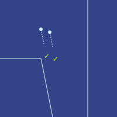
泽重新坐回椅子上，叹了口气，对自己深感失望。他闭上眼。
一分钟后，第一条好消息：
“接人成功。”
又过了十分钟：
“我们的无人机在多利纳尔一处大型商业综合体降落。北极人正在收拢包围。但愿这场搜捕能拖得越久越好。”
又过了三十分钟：
“我们的车平安到了海边。目标正在进入海上无人机。”
再过十分钟：
“北极人发觉上当了。他们正在扩大搜索范围。”
泽看着屏幕，此时画面上是那架海上无人机一路向西、缓慢艰难地驶离红郡海岸。
五十分钟后：
“目标已顺利抵达阿图里亚海岸。”
“实在抱歉，各位”，泽低声说。“我彻底搞砸了。要不是穆不知怎么用一个全新的方案救了我们，这次就失败了，我们计划的其他事多半也都会跟着失败。”
“欢迎见识真实的战场，泽”，登答道。“这跟民本棋不一样。有时候唯一的取胜之道，就是彻底跳出框框去想。不是那种想办法把一整台计算机编码进滑翔机结构里的跳出框框，而是从控制台椅子上跳起来、冲过去照对手脸上来一拳的跳出框框。”
“那么……穆，你刚才到底做了什么？”
“这里不是北极帝国，这里是红郡。那里有很多人暗暗支持我们，很多技术基础设施也还没完全转到北极控制之下。所以眼下，还能黑进一些东西。我从红郡的人手里拿到了一批管理员密码。用这些密码，我先控制了街灯，接着又征用了几十辆自动驾驶汽车。其实还布置了好几路诱饵，飞行器在好几个地方停了又起飞。这方案我们一开始就该用，只是——我和你一样，低估了北极侦察的力度。”
“穆，这活儿干得真漂亮。”
“但重要的是我们赢了。塔芬德尔安全到了阿图里亚。北极人丢了脸。现在全世界都知道，他们是可以被打败的。”
登顿了顿，又开口。
“眼下，他们以为这不过是自由城的防务公司干的。但现在该轮到昆高培站出来，领下属于自己的那份功劳了。然后就看维里迪亚人愿不愿意给维里迪亚它应得的防务了。”
格拉迪亚斯拉开隔间的门，走了进去。五名法官已经坐在里面——这五人是莫夫和塞拉帮忙物色出来的，其中泽国黑进监控摄像头帮了大忙。
“那么，你想谈什么？”，第一位法官问。
格拉迪亚斯坐下，随手拉上身后的隔间门。
“我打算对维里迪亚军方领导层提起诉讼。按照第十四条根本法，维里迪亚军方有义务保卫维里迪亚。从北林发生的事可以看出，他们完全没有做到。所以我的主张是：他们违法了，应该被免职。”
“这太荒唐了。没错，我们在北岸被打了个措手不及，输得很难看。但维里迪亚军方在艰难时局里已经尽了最大努力。我们不能就这么从外面进来，说我们不喜欢他们的干法，就把他们换掉，而我们连拿什么标准来衡量他们都说不清——”
“凯隆”，格拉迪亚斯打断他。“今天的新闻你看了吗？”
“没看。得了吧，格拉迪亚斯，你知道法官不该读每日新闻，这是规矩。我们是来适用永恒原则的，不是被一群当场发怒的人推着东倒西歪的。”
“一个泽国人的小组飞进红郡，成功救出了总统的儿子。”
几乎立刻，另一位法官开口了。
“所以你是想让我们用某个泽国人去换掉维里迪亚军方的领导层？”
“对，正是。”
“抱歉，这太离谱了。这不是合议庭该干的事。维里迪亚是民主国家。掌管军队、有权改变军队构成的是议会。所以你要搞你那个疯狂的计划，就该去找他们谈。”
“得了吧，塞尔沃特，你跟我一样清楚，议会已经烂了。他们要么已经待在北极人精心炮制的宣传气泡里，要么收了贿赂，要么因为北极人黑进了我们的监控系统，自己和家人正被威胁。”
“我们是合议庭。我们没有权力径直去判定整个议会都腐败了。”
“其实你有。第二十一条根本法：维里迪亚政府官员必须以诚实、善意、不受不当影响的方式履行职责；一旦受到任何不当影响，必须上报并辞职。”
“所以你还想把议会也一起免职？”
“如果有必要，对。”
格拉迪亚斯看得出自己说不进去。于是他决定换一条路试。
“你们有谁的家人住在北岸吗？”
第三位法官开口了。
“我有，一个儿子。他在大梅港——那是唯一一个他们还在封锁、不许人离开的地方。”
凯隆愤怒地转向他。
“你提这个干什么？格拉迪亚斯自己说了，我们被要求不受不当影响地履行职责。”
“维里迪亚有6%的人口住在北岸。每个人大约有十位近亲——父母、兄弟姐妹、子女、配偶、其他近亲、共同家长。那么你们五个人加起来就是五十位，所以按统计，你们当中总共该有三名亲属在北岸。如果你们一个都没有，那你们就没有感受到许多其他维里迪亚人正在感受的东西。也就是说，你们的利益是错位的。你们错位到了麻木自满那一边——可这难道不也是一种不当影响吗？”
“那些法律不是这么运作的，这方面有先例。”
“那你在北岸有家人吗？如果有，那你才是受不当影响的那一个。”
“这回是你不懂法了。原告本来就允许与案件结果有利害关系——事实上，是必须有利害关系。这个法律术语叫诉讼资格。”
“而且没错，我有三个孩子在那里。”
“听着，格拉迪亚斯。再说一遍，维里迪亚是民主国家。我们不会因为一帮泽国小天才救了个王子、你又觉得自己比整个议会更聪明、道德更纯洁，就对着我们的民主跺脚撒泼。”
“就算我们真这么干，你也想想程序。一个案子从开始到结案最少要三十天，而且这还是在法官不认为需要更长的情况下。然后他们还能上诉，可以上诉多次。上诉可以更快，但只有从第三轮起才行。所以这一整套要走完得花好几个月。而在这期间，维里迪亚会陷入混乱，北极人只要扑进来接管就行了。”
“所以我们不干。”
格拉迪亚斯环顾四周。另外四名法官里有三人正跟着塞尔沃特的话点头。剩下那位法官泽温，看起来对格拉迪亚斯同情得多——无疑很大程度上是因为他也有个儿子困在北林——但他似乎不太愿意把话说出口。
“明白了”，格拉迪亚斯轻声说。如果这一批抽到的法官都对他的方案这么敌视，那他真立案后随机抽到的那批法官，几乎肯定也会相当敌视。他得换个策略。
他拉开隔间的门，慢慢走了出去。
第二十七章
梅尔丹，维里迪亚 · 3724年霜期7日
格拉迪亚斯听见有人敲他房间的门。他住在政府经营的酒店里。他还没来得及应声，就听见一阵嗡嗡声，门开了。
塞拉推门走了进来。
“对不起，塞拉”，格拉迪亚斯几乎立刻开口，脸上满是难过。“我觉得这个方案行不通。”
“我把全家都辜负了。我们知道费布里克和赫雷达在哪，现在也知道莉莉在哪，可这几个人一个都救不出来——除非北极人把我们彻底征服。”
塞拉走到格拉迪亚斯身边，抱住了他。
两人沉默了片刻。然后她退开一步，脸上绽出笑容。
“所以，我有了个新主意。”
格拉迪亚斯眼睛一亮。
“什么主意？”
“昨天我们弄清了一件事：法官们不愿意做他们觉得很不民主的事。所以我有办法了。我们把它变成民主的。”
“怎么，明天就办一场选举？”
“某种意义上，正是。”
“你在泽国的时候，我和莫夫开始在银聊里一级一级往上爬，跟那边的人搭话。一开始没能引起他们的注意。大约十天前韦尔多加入进来，帮了大忙，可即便那样，他们也没太把我们当回事。但昆高培救出塔芬德尔那天，我冒了一次险：我提前一个长时告诉他们，会有件军事上的有意思的事发生。后来当然就发生了。所以现在，他们愿意听了。而我已经想好了该请他们做什么。”
“银聊有个民调功能。你可以烧掉齐普币——嗯，是把齐普币付给公司——它就会自动向平台上很大一部分各类用户提问。你烧的齐普币越多，它问到的人就越多。所以我们要做的就是，问一大批人一堆问题：问他们对维里迪亚和其他国家的各种政府机构怎么看，以及在一些假设情形下会怎么想。”
“我们会把这些问题放进去：‘你认为议会代表人民吗？’‘如果维里迪亚的军队由那群救出红郡总统之子的泽国人来掌管，你会怎么想？’但我们把它们混在几百个别的掩护问题里。这样北极人就搞不清我们在干什么。”
“要让回答真实、有思考，得把优先级设得很高，我猜那要花很多齐普币。而要让这成为一个合法性很强的社会信号，就必须形成共同知识——维里迪亚的每个人不仅要知道民调做过、结果是什么，还要知道别人也知道民调做过、结果是什么，还要知道别人也知道别人知道，如此往上。那就需要全国人口的很大一部分都看到这次民调。所以我们得花一大笔齐普币。”
“我估算要九十万齐普币。”
“我们有那么多吗？”
“没有。我们所有的积蓄加在一起，连莫夫那份也算上，只有一半。”
“但诀窍在这儿。我们不用出这笔钱。我们去说服银聊的创始人埃维洛尔，让他自己以公司的名义来做。那样他们想把覆盖面设多广、优先级设多高都行——费用他们能百分之百拿回来。”
“等等，他们不能直接手动做吗，一分钱都不用花？”
“他们的平台是这样运作的：每当可读消息的集合更新，就往密码学网络上发布证明。所以他们根本没法违规——真要试，证明就通不过校验，用户端会自动把那些消息判为无效。他们能做的只有公布一个新的算法哈希，可那会附带二十天的延迟。”
“那他们能全额拿回来？不用交销售税？”
“评则最近改过之后，考虑到银聊在算法透明度上的表现——正是那套证明机制，让他们没法直接开后门、破自己的规矩——再加上互操作性、尊重用户隐私、配合研究者，他们的税率已经降到零了。”
“那就看看埃维洛尔怎么说！”
格拉迪亚斯、塞拉和泽一起沿着他们走惯的那条路穿过卡利马尔。路旁绿树成荫，两侧都是石头房子。为安全起见，他们坐黑色轿车走了大半程，但车只能开到无车区的边界。于是最后几百米，他们只能步行。希望隐私袍够用，格拉迪亚斯想。
一阵冷风从背后吹来。寒意让他们振作，风又推着他们往前，他们不由得加快了脚步。
“这里右转”，塞拉通过颈带低声说。到这时，她已经几乎和格拉迪亚斯一样，习惯了所有对话都通过颈带来进行。
他们右转，上了一条更窄的小路。小路笔直延伸了大约一百米。起初两侧还是石头房子，大约五十米后，房子退去，换成一片看似幽深的树林。走到一百米处，他们看见前方有一座小丘似的东西。
小路向下倾斜，通向一扇门，门里似乎就是那座小丘的内部。又是一栋几乎不缴土地税的建筑，格拉迪亚斯想。到这个时候，维里迪亚人几乎已经把一门手艺练到了家：在树林里生活、工作，把复杂的建筑安置进去，而同一片树林从一百米外看去仍像是没人碰过。
泽看得惊叹，脑子里立刻拿它跟泽国的山体金字塔作比。在泽国，他想，人们把天然的山凿成金字塔，让自然看上去像人的作品；而在维里迪亚——至少是梅尔丹的卡利马尔区——人们把一座很可能完全人造的小丘做得像自然。泽国可以从维里迪亚这种风格里学点东西，他想。用来防护，说不定还更好。
塞拉把手持终端贴上门边那个绿色圆圈，门开了。
她领着三人沿一条路往里走：先左转，再右转上一段坡，又右转，然后登上一道楼梯。最后她打开另一扇门，领他们走上楼梯，来到一片圆形空地的中央，从那里能看见开阔的天空。格拉迪亚斯和泽这才明白，他们已经在丘顶了。
他们转过身。另一名男子已经等在那里，穿着隐私袍，但没戴兜帽，也没遮脸。
“我是埃维洛尔”，他说。“很高兴见到你们。”
“我是格拉迪亚斯。我也很高兴见到你。”
“我是泽。”
埃维洛尔按下一个按钮，一个屋顶在他们头顶开始合拢。大约十嘀嗒后，屋顶完全合上了。
“只是为了隐私”，埃维洛尔说。“袍子尽管脱。另外，有谁想喝水或喝茶吗？”
“我要茶”，格拉迪亚斯答道。
“我也要茶”，泽说。
塞拉四下看了看。“那我也来杯茶吧。”
“好，那就四杯茶。机器人马上上来。”
埃维洛尔在一条长凳上坐下，长凳紧贴着楼梯出口后方的安全栏杆。他指了指沿着房间一整圈的那条环形长凳。“请坐。”
他们摘下隐私袍的兜帽和遮面，坐了下来。
“那么，塞拉，你跟我提过，你有个想法：银聊能做点什么，让整个维里迪亚政府别那么蠢”，他脱口而出，语气直白得毫不客气。
“是的，我有。”
“简单说，我想搞一次民调。我让翡翠拟了大约一千个问题，我自己过了一遍。有些问你对现状的感受，有些问可能出现的未来。其中一小部分问题直指我们真正在意的那件事——就算议会不愿意，也要把军权换掉——其余的都是掩护。”
泽微微皱眉。塞拉把整套计划的底细交出去得太快了，他想。昆高培绝不会这么做。可也许维里迪亚的文化就是更愿意信任别人——又或者，埃维洛尔已经在塞拉、甚至在整个维里迪亚面前证明了自己值得信任。
“目标是形成共同知识：这次民调做过，结果是什么。如果一切顺利，我们去跟法官论证这是民众真正想要、不会因此闹起来的事，底气就会足得多。”
塞拉把手持终端拿给埃维洛尔看。埃维洛尔翻了几页问题，开始念出声来。
“你更希望谁来掌管维里迪亚的军队？A：现任领导层。B：由议会选出的新领导层。C：银聊的领导层。D：北极人。E：昆高培（最近救出红郡总统之子的泽国人团体）。F：阿图里亚军事顾问。”
“那你打算在这上面花多少钱？”
“三百万齐普币。而且我希望银聊这家公司自己来做，因为不管怎样这笔钱都会全额返回来。”
“有意思！不过我觉得三百万太多了，比银聊上做过的任何民调或广告都多。那会让北极人怀疑出了什么不寻常的事。我会花一百万。花费还是能排进前三，但算不上史无前例。”
“我没问题。”
“但还有另一个问题”，埃维洛尔接着说。“如果我们这么做，能帮法官看到，做出大改变是得人心的，民众也并不觉得议会多有合法性。当然，也可能我们发现，自己对维里迪亚人想法的判断错得离谱。但这不会让他们相信，这种剧烈的动作真的行得通。”
“你心里有办法了？”
“其实有。最近我们加了个功能，叫银聊预测，让人——或者机器人——对未来事件下注。到目前为止，机器人是最有效的——”
“我看到了”，格拉迪亚斯插话。“预测市场很酷。但有两个弱点。第一，如果北极人看到这个市场，他们可以操纵它。理论上，任何操纵的企图都会让套利者更有动力进场，靠把价格推回该在的位置平均赚一笔，但实际效果如何，还远远没有经过检验。”
“已有结论表明：除非套利者要么完全风险中性，要么有无限多的钱，否则操纵者总能至少把价格推动一部分。而如果标的变量本身是前所未有、无人知晓的东西——比如我们能不能赢下过去一百年里全世界所见过的对北极人的第二次胜利——那任何套利者都很难愿意进场。”
“第二个问题是私有信息。我们对昆高培有信心，因为我们了解他们、信任他们，也清楚他们的能力有多大。可一旦公开，就等于告诉了北极人。”
“对，两点都说得对。第一个问题，希望我们能随着时间慢慢改进，但……眼下预测市场太新了。第二个问题更难解决。”
“好，我有个不同的想法。我们不用市场本身，而是取排行榜上表现最好的五个机器人，用可验证两方计算去问它们。我们造一个临时的虚拟私密沙盒，把私有信息喂进沙盒，他们再把机器人喂进沙盒，沙盒只输出机器人的答案。”
泽看到了开口的机会。“对，那不过是混淆电路的延伸——你多半会想要可验证混淆电路。开销相当难看——”
“针对 AI 计算有专门的优化。别忘了，大语言模型内部几乎一切都是线性的。非线性那部分对语言变聪明是必需的，但它只占整个计算量的0.1%。”
泽意识到，在这个专门的题目上，自己不是对手。看来学了九个月密码学，也没能让他在所有事情上都比所有人聪明。
“原来如此……”
谈话暂时停下——他们听见下面传来一阵机械声，越来越响。几嘀嗒后，他们看见了机器人的顶部：它端着托盘上的四杯茶，一级一级往上爬，每上一级都先抬起、再滑移。到了楼梯顶端，它先朝格拉迪亚斯滑过去，给他上茶。
“格拉迪亚斯”，埃维洛尔开口道。“你看起来挺聪明。我有个别的问题想问你。”
“什么问题？”
“你还记得埃菲里昂和西尔卡的那场辩论吗？”
“记得。”
“埃菲里昂说：社会上那些‘软性’特质大多在循环。好孕育出坏的种子，坏又孕育出好的种子。从灾难到英雄主义，到繁荣，到自满，再回到灾难。技术官僚、民主、混乱、强人，再到技术官僚。如此往复。唯一不这样运行的，是经济总产出：增长只会自己不断复利。所以我们该停止加速那些循环的东西，转而只专注于把经济总产出做大。我不喜欢这个论证。它暗含的东西让我不舒服。可我还是说不清它到底错在哪。你怎么看？”
“我认为复利的不只是经济总产出。很多好东西会互相叠加。健康让人更能干；能干让人有更多资源变得更好；教育支撑这两者，而健康又支撑教育。”
“也就是说，埃菲里昂谈的那个特征向量不止一个维度——而大多数特征向量其实都是这样。”
“你对特征向量的理解明显比我好！”
“银聊是个社交媒体网站。特征向量差不多是……原始白皮书第一页上的东西。”
格拉迪亚斯笑了。
“但另一方面”，埃维洛尔接着说，“北极人确实在意健康。那不是什么西尔卡想要的那种带着同情、爱与关怀美感的健康，而是硬邦邦的金属感长寿诊所，但它仍然是健康。”
“西尔卡会说，重要的不是活得长，而是活得健康。”
“对，可中世纪那些喝了长生不老药、结果注定要骨头尽碎、永远躺在地上的故事，跟长寿科学实际的运作方式完全不是一回事。活得长，默认就是活得健康。要阻止损伤，最容易下手的地方就是它刚开始的那一刻。”
“那我猜你也会说，北极人在意教育。他们几乎不懂音乐和诗歌，但教孩子科学教得很好，而那本来就是教育里进入最大特征向量的那部分。”
“对。”
格拉迪亚斯能看出，塞拉正不舒服地皱着眉。他脑子飞快转着，想找出别的论据来反驳埃菲里昂那套想法。
“可北极人并不是真要最大化经济总产出。他们想发动战争——战争能让经济几十年翻不了身。他们想除掉泽国里任何在推进科学技术上走得太远的人，那也不是在最大化经济总产出——恰恰相反。他们要的不是最大化经济总产出，而是最大化自己掌控之下的那部分产出，再把其余的一切都毁掉。”
这时，泽开口了。
“埃菲里昂暗含的模型是这样的：有一个向量朝着无穷远射出去，它奔向无穷越快，所有人就幸福得越快。可我看到的世界根本不是这样。”
“我看到的世界是个脆弱的世界。它并非一直如此脆弱。过去，通讯有限，权力的传递也有限。任何帝国统一得够久，最终都会垮掉。世界是可逆的。可今天，有了现代的机器人和现代监控，只要任何人成功接管并巩固了对全世界的控制，就能把自己的权力永久锁死。不可逆。永远。”
“如果北极人赢了，某种熵——人类未来可能性空间的维度——就会被永久压缩。从那一刻起，唯一可能存在的未来世界，就只有北极的世界。”
“而这还不是最糟的。如果北极人，或者别的什么人，用他们的超级武器犯了错，而再没有别人有能力抵抗，就可能把整个生命世界彻底毁掉。”
“最终，世界会重新变得可逆。我们将能在群星之间旅行，我们的文明会大到无法被完全控制、也无法被完全毁灭。但在那一天到来之前，我们身处一个脆弱的阶段。如果接下来十年里，这一切被永远乘以零，那原因就是北极人。”
“我有个更简单的答案”，塞拉补充道。“所有这些关于遥远未来的论证都很难预测。而且，如果一条路你本就认定要走，那要说服自己这条路是对的，再编出一套特别聪明的数学来给它背书，实在太容易了。但有一件事很好预测：如果北极人征服了维里迪亚，这场战争可能杀死我们数十万乃至数百万人，北极人还会毁掉我们所知所珍爱的那个美丽世界。对我来说，光这一点就足以值得抵抗。而我们这个世界、这些国家、这些友谊的美，也早已足以值得为之而战。”
“都是好答案”，埃维洛尔答道。他抿了一口茶，往椅背上一靠，沉思起来。
3724年霜期8日
格拉迪亚斯、塞拉、泽、白、韦尔多、登和穆围坐在政府经营的酒店一间会议室的桌旁。他们面前墙上投着一个计时器，倒数着银聊上那份问卷发布还剩多少嘀嗒。此刻剩下的时间是150嘀嗒。
“你们把要放进机器人那个数据包的信息都提交完了吗？”，塞拉问。
“我这边刚弄完”，登答道。
“记住，它是个机器人。不需要什么漂亮的排版和打磨。你要是又想起什么，直接扔进去就行。”
“我希望你和你的机器人把密码学部分审好了，泽。我可是把很多军事机密都托付给它了。”
“有一份可机器检验的数学证明：混淆电路算法满足标准的正确性与隐私性质。这份证明是端到端的，从操作系统一路覆盖到硬件。它证明的那些命题我读过，还让翡翠和另外两个 AI 核验过。相当扎实。除非哈希被攻破，否则零信息泄露——而真到那一步，我们有更大的麻烦。”
“我也查过”，穆插话。“我用的是另一种方法，以防这十多年来证明系统或定义在什么地方坏了却没人发现。我让翡翠去读原始学术论文，自己写一份实现，再让一个全新的实例把那份代码和原版并排读，逐处比对差异，看哪边是对的。埃维洛尔的代码毫无瑕疵。”
“还有五十嘀嗒就开始了！”
“这次不学民本棋比赛播报员的腔调了？”，白回嘴打趣。
"MU GU GEI HUI ZIU FA"，泽用一种夸张的机器人腔调答道，为了逗乐。
他们围坐在桌旁等着。
"LE MU GEI HUI ZIU FA"，白喊道。
“喂！”，泽回了一句。
“抢在你前面了！”
他们继续盯着倒计时。倒计时一跳到十，他们就齐声喊起来：
"PA GU …… SO …… BI …… ZE …… HA …… MU …… FO …… SHI …… LE …… PA …… HUI ZIU FA!"
屏幕分成两半。左边是五条并排的进度条，显示与五个机器人进行的五次混淆电路计算的进度。右边是一大片饼图，每一个问题一张。投票很快开始涌进来。
“放大我们关心的那几张”，韦尔多提议。
泽点头，点开了其中一张饼图。

“跟我预想的一样。现在看看大家觉得这个问题该怎么解决。”
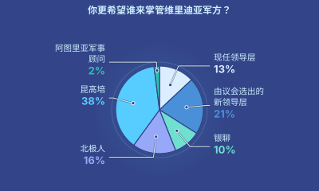
“限定为北岸来的人。”
“等等，我们设了这个粒度的分项吗？投票是匿名的，我们没法知道每一票是谁投的。”
“我们确实按年龄、自己申报的上一次参议员投票、省份，还有大语言模型推断出的几个性格类型维度做了细分。”
“啊，找到了。”
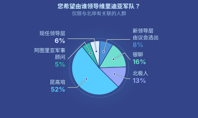
“恭喜你，埃维洛尔”，韦尔多干巴巴地说。“看来你比真正的议会更适合管北岸。”
“这些结果现在让我有点害怕”，塞拉插话。“我们是不是刚把底牌全亮给北极人了？”
“我觉得没事”，穆答道。“这次民调我们问了很多不同的问题。其中一个问题，字面上就有20%的人说，我们应该依法把北岸全部政府所有的土地转给海德菲尔，让他们自己去想办法，以这种方式出资恢复北岸。”
“那桩诉讼北极人当然会注意到、会盯着。我们该推迟几天，免得看起来太过协同。但不管我们怎么做，我们都已经让所有人——包括北极人——清楚看到，维里迪亚人认识到存在一个大问题。需要藏起来的是解决方案的细节。”
他们停了一会儿，盯着进度条。
“好，那还得等一阵。我们再看几张饼图。”
一个机器人进了房间，给每个人端来一杯茶。
“好了……完成了”，泽得意地喊。
屏幕上出现了五个图标，代表五个机器人给出的回答。泽点开了第一个。
摘要：
- 在任何“寻常”情形下——即维里迪亚军队维持现状，或由维里迪亚议会在没有巨大外部压力的情况下主导重组——维里迪亚在一年后保有本国领土比例不低于当前的概率为20%
- 假设移交给昆高培掌控，该概率升至26%
- 主要的下行风险是常见的组织过渡成本，即领导层剧烈更替、用外来者替换有经验人员时所特有的那类成本
- 在昆高培参与、同时把过渡的震荡降到最低的情形下，成功结果的概率最高（可达50%）
- 注意，上述概率对应的是一年内控制力不低于当前。控制力严格提高的概率则普遍低得多
“嗯”，韦尔多咕哝道。
“你觉得合理吗？”，格拉迪亚斯问。
“这些机器人显然比我更保守，但说得公道。”
“另外四个说的也大同小异。最悲观的那个说，现状情形和昆高培情形下，概率一样。”
“而且投票那边还有多得多的数据在进来。结果跟民调刚开始时我们第一次看到的大致一样。”
“那我们能拿到的数据大概就这些了。准备几天内立案吧。”
第二十八章
梅尔丹，维里迪亚 · 3724年霜期15日
泽、登、白、穆四人围坐在会议室的一张桌旁。
门口传来一声蜂鸣。他们立刻停住话头，等着看是谁进来。
门开了。是韦尔多。
“有位访客。”
“是谁？”泽问。
“一位将军。还是我少数几个敬重的将军之一。我用翡翠跑了一遍分析，回来的结果全是对他的好评。”
“他想干什么？”
“谈谈。关于眼下这桩案子。”
“当然，我们很乐意跟他谈。”白回答。“他现在就在外面？”
“在。”
“那就让他进来。”
一个中年男人走进房间。他穿的衬衫几乎像是精心设计到了完美：看着既像传统的维里迪亚军装，又舒服得能当日常衣服穿。
“我是莱克托。”他朗声说道，“很高兴见到各位。”
泽正要开口回应，登却示意他别说话。
“我是登，这位是泽、穆、白。欢迎。”
莱克托走进来，在一把空椅子上坐下。
“听着，”他开口道，“我想弄明白，你们到底在想什么。”
“维里迪亚历史上，头一回有人想让合议庭把政府高层官员免职。这看着像疯了一样。我明白民众有情绪，可你们想撤掉的是整个军方领导层。这么干，拿不到一支能打的军队。”
他停顿了一下。
“但话说回来……我明白民众有情绪。那些银聊民调，我们也和大家一样看到了。”
“所以，你们到底在想什么？”
登开口了。
“营救塔芬德尔的那次行动，你了解吗？”
“当然。这段时间我们一直在拼凑事情的经过。”
“是我们干的——昆高培。我们和两家自由城防务公司合作，把他救了出来。”
莱克托惊得张大了嘴。
“等等，你们人就在这里？来了多少？”
“几十个。我是最高评议会成员之一。那边那位泽和穆，是跟我一起亲自指挥这次行动的人。”
“原来如此……”
莱克托顿了顿。
“那你们的计划是什么？亲自接管维里迪亚的无人机机队，拿它把北岸夺回来？”
“我知道这计划不太体面。但你得明白，我们走投无路了。北极帝国在扩张。他们显然打算先拿你们开刀，再对付我们：你们技术更先进，我们防守准备更充分。所以我们判断，北极人想在一年内把维里迪亚彻底打垮，也许还更快。接着他们会逐个拿下联合城邦，然后南下清掉梅萨利亚和哈拉格米尔，或者干脆炸平了省时间。到那之后就只剩他们对我们。凭现有家底，我们能守得不错，可最先进的技术，我们实在依赖你们太深。所以我们必须站出来。一起，现在就站。”
“军队不是新车，不能像你随手拉开车门、开走一辆那样就接管过来。我们的士兵，包括各级指挥官和将军，在一起共事、一起训练了多年。维里迪亚的后勤，他们摸得门儿清：我们能造多少新无人机，造这些要什么条件，要是非得把那些翔球用的小型飞行器改成无人机，又能做到什么程度。他们有一千多名无人机飞手，还有成千上万的各种保障人员。就凭你们这几十个顾问，几乎每架无人机都得靠 AI 自己飞。它们会迷航，一有机会就会被北极人骗得团团转。”
“我知道我们在北岸彻底失败了，但你们不能把我们已经建起来的一切全扔掉。连指挥体系也一样——那是他们干了多年、早已长在里面的东西。你不能一把撕掉、再换一套，还指望结果能好。”
白觉得话题正在跑偏，看到机会插了进来。
“莱克托，”白开口道。“我们其实没打算把维里迪亚军方的高层三级全部清零。就算我们真能明天就把一千名顶尖民本棋棋手全带过来，让他们成功操控你们所有无人机机队，后勤也莫名其妙自己理顺了，这桩官司光走完程序也要三个多月。我们没那么多时间。所以那从来不是我们的计划。”
“那你们的计划到底是什么？”
“嗯，我们想要一个像你这样的人站出来帮忙。”
莱克托没有作声。
“哪怕是挨骂最多、最招人恨的机构，也从来不像社交媒体渲染的那样无可救药、一无是处。这点我们明白。但与此同时，它们确实会卡在有害的状态里。而你们的处境最难：你们得从平时范式切换到战时范式，偏偏就在这个节骨眼上，不少将军很可能正被北极人收买或要挟。我们知道这是真的——我们做过后门的监控摄像头已经抓到好几个。所以我们不想把军方清零，但也清楚，它不能照原样待着。”
“所以我觉得，这里有个让你站出来的机会。各方都敬重你。你和泽说话的时候我查过了：不同政治立场的人、军方和议会里的人、各种性格类型的人，给你的评价都一致地高。我觉得你可以考虑向议会提议，由你接手、掌管全局。我们可以在你的体系里跟你配合。”
登、泽、穆立刻点头。这条论证不在他们原本的计划里，但他们都看得出，这才是该转过去的正确方向。
莱克托沉吟片刻，又开口了。
“你们在这儿这件事，一直捂得很严。就连那些盼着昆高培来掌管维里迪亚军方、在民调里投了赞成票的人，也都只当这是个幻想。要是我开始主张，自己能在你们的支持下掌管全局，这不会暴露你们吗？就算是闭门会议，如果议会真像你们说的那么腐败，消息一样会漏回北极人那里。”
这次是穆开口。
“别跟他们提我们。我们手上有几个针对北极无人机的漏洞利用，可以给你们。这些漏洞对北极人自己早就过时了——所以就算北极人知道了，反而更好，能让他们放松警惕。但这些漏洞用在那架无人机上会很灵：两个月前你们从北岸弄回来的那架受损无人机。功劳算你的。”
莱克托又愣住了。他们连那架受损无人机都知道？他们是怎么把维里迪亚渗透得这么……彻底的？如果昆高培能做到这一步，那北极人……
“哦，我们还能告诉你其中一个收受贿赂的将军是谁。我们有确凿证据——他和北极间谍谈话的监控录像。”
“他们谈得太多次，还老是挑错隔间。”穆咧嘴一笑。
“我们会把手上掌握的信息整包给你。计划你自己定。毕竟那将是你的军队，你的计划。”白补充道。
格拉迪亚斯和塞拉听见有人敲她的房门。
“是谁？”塞拉问。
“是我，妈妈！”
“兹文！”
她跑到门口把门打开。兹文冲进来，抱着手持终端兴奋地跳上沙发。
“怎么了，兹文？”
“我有好消息。是莉莉的事！”
“什么事？”
“她说，她现在开始觉得想回来了！”
“怎么回事？”
“她说在北极的公民课上，老师讲到翔球，说它的计分规则很蠢，是维里迪亚人爱把简单事情搞复杂的典型例子。”
“她一直用颈带跟我通话。我还把费布里克接了进来。我们把翔球的历史捋了一遍。她站起来跟老师讲：可以证明，如果计分方式是给每种球各定一个分值再相加，那几乎总是只专注一种球最好。但如果是相乘，那么你用某一种球得分时拿到的分数，会随着你靠另一种球已经得到的分数一起涨。所以均衡才划算。”
“可老师不想听。他把手一摊，说这在现实生活里根本无所谓：现实生活里，你只专注一件事就能赢，北极人懂这一点，维里迪亚不懂，所以北极人赢。”
“莉莉回他：可你想想个人生活和工作。如果你几乎每天从早到晚拼命干活，你能挣更多钱，能买更大的房子，可房子只有你不干活的那点时间才享受得到。这数学一模一样！所以现实生活也需要均衡！”
“然后她就被罚留堂了。”
“所以她现在觉得北极人又差劲又蠢。他们嘴上说着追求最好，其实只在乎自己的权威。”
“北极人中有些人是聪明的，”格拉迪亚斯插话。“他们确实能造出很好的技术。可那个老师听上去就是个十足的废物。”
“一个废物要是碰巧生在赢的队里，表现就正是这样。他们把全部身份都押在队上，全盘接受那些说法：自己的队为什么了不起，你属于哪个队又是你价值多高的标志。然后他们根本不会察觉，那份了不起其实一点也不在他们自己身上，里面只是个可怜的空壳。”
“格拉德，别教兹文这样看人！”
“兹文，对伤害别人的人刻薄一点，没关系。”格拉迪亚斯继续说，语气越来越自以为是。“如果有人正难着，或者只是不懂，那就帮他，对他好些。可要是有人拿自己根本不配的权威去敲别人的头，那就直接打回去。”
“格拉德！”
“想打败北极人，我们就得学会有时至少让自己也带一点北极味。但一定把这股劲用在正道上。”
塞拉叹了口气。
“这么说，我倒是能理解。毕竟我们找到莉莉，用的正是北极人那套——监视一切。这算不算也带了一点北极味？”
“大概算吧。”
“不过我相信，要把亲人接回家，我们并不需要对自己全国的孩子搞无限制的摄像头监视。无限制的摄像头帮我们找到了莉莉，可也帮北极人差点把我们打垮。我相信泽已经知道某种更好的办法，既能拿到好处，又不用付那些代价。”
“等等……”
“怎么了？”
“我觉得泽也许正是莉莉最合适的导师。她需要一个真正赢家的好榜样——那种不骑在别人头上、不把别人按下去的人，而是愿意把别人托起来、希望别人也跟他一起赢的人。”
“妈，爸？”兹文插嘴。“那我们现在为莉莉做什么？”
“莉莉能自己离开北岸吗？”
“我问过了。她说北岸的边境是开放的，可她在寄宿学校里，学校不放她走。”
格拉迪亚斯哀叹一声。
“我想，别的先不说，等我们把北岸夺回来，三个孩子就都能回来了。”
“格拉德，莉莉那边该怎么建议，让我和白来想。她现在知道北极人有多差劲了，她想回家。但在把她接回来之前，她需要的是不会把她害死的建议。”
格拉迪亚斯哼了一声，算是认了。
3724年霜期18日
“嗯，我刚收到莱克托的回音。”格拉迪亚斯对塞拉说，她正在酒店房间里给自己倒茶。
“他怎么说？”
“他们昨天开了一次特别闭门会议。韦尔多也在。”
“莱克托摆出了另一位将军受贿的证据。他把改革军方领导层的话题挑了起来。他采纳了白给的一条建议：把讨论引向一个方向，让反对者自己先去替现任最高将领说话，然后又说如果非得换人，另一位将军才是显而易见的人选。接着他亮出底牌，拿出更多证据——那位最高将领定期会面的人，后来查明是北极间谍；而他们提出来作替代的那位候选人，正被人要挟。”
“之后，他提出了一套对付北极人的不同策略，核心是利用他们对 AI 的依赖来反制他们。他展示了一些针对北极无人机的漏洞利用，包括一段来自红郡的昆高培录像——不过他搪塞过去，说那是他在红郡认识的线人送给他的。”
“成了，比他或白预想的容易得多。结果发现，那些只是懒、只是累的参议员，让莱克托照自己的意思去做才是阻力最小的路——因为那意味着官司立刻就能结束。而那些正被要挟的参议员，只需要一个‘抵抗不现实’的借口；莱克托的论证，加上他们知道这桩官司早晚可能查到自己的处境，正好给了他们这个借口。于是莱克托现在是最高将领了。”
“这听起来是个完美的收尾。昆高培可以介入军方，可以和莱克托合作，而他和体系里其余大部分人还都在原位。所以我们不是进去把一切换掉，我们保住了连续性。这正是预测机器人想要的。”
“一点没错。”
“那就这样，我们赢了？”
“梅尔丹议事厅之战已经结束。北岸之战即将开始。”
第二十九章
埃莱纳森林，维里迪亚 · 3725年雪月29日
泽和穆站在一座积雪的山丘顶上。四周是覆着厚厚白雪的翠绿松林，一直铺到目力所及之处。一股强劲的冷风迎面扑来。身上其余部位裹在白灰相间的外套里，那厚度足以让他们从容欣赏这片景色，却又刻意留了一线，不至于觉得暖和。远处树梢正上方，是一轮刚从东方升起的太阳。
“这里就是决定我们未来的地方了。”穆平静地说。
“你觉得我们准备好了吗？”泽问。
“没有。”穆答。“可有意义的事，从来不在人准备好的时候发生。”
“我们指望的是，北极人比我们更没准备好。”
身后传来缓缓上坡的脚步声，每一步都比前一步大约晚一个嘀嗒，艰难地踏过深雪。过了片刻，泽感觉有人从背后抱住了他。
“不管今天发生什么，泽，我很高兴认识了你。”
是白。泽转过身，抓住她的手，把她拉上最后一步，让她站到和自己、穆一样高的地方。
“我也很高兴认识了你。”
三个人沉默地等了一会儿，望着雪从东边的林间吹过、越过树梢。
“那计划是什么？”
“开往埃尔迪尔的末班列车今天到站。事到如今，北极人不可能不知道我们在这里集结了一支规模不小的部队。所以他们肯定已经在集结军队来迎我们了。这片森林难走，但不是走不通。所以我们最好的机会就是今晚动手，从西面插进北岸北部，完全绕过北林，然后把它切断、包围。”
“你对这个计划有信心吗？”
“我上一次和北极人交手，彻底搞砸了，是穆救的场。所以，没有，我没信心。但这是我们最好的机会。”
白又从侧面抱了抱泽。
“我相信你。”
穆打破了沉默。“我也相信你，泽。”
他们沉默地望着那片积雪厚厚的松林，又看了5分钟，然后开始慢慢往山下走，回他们临时搭建的掩体。
登、穆、泽和另外几十名维里迪亚将领与昆高培领导人坐在一间逼仄的屋子里，莱克托站在最前面做汇报。
“好，每个人都知道自己的任务吗？”莱克托大声问。“加洛瓦？”
“我带北集群，任务是穿过森林，一路向东北，直到海岸，然后拉出防线，把北极人和整个半岛隔绝开。这要求我在南翼与北岸的北极部队交战并将其包围，同时在北翼挡下来援。”
“好！你呢，特尔波？”
“我带中集群，任务是直接向东穿过森林。预计会撞上北极的主力无人机群。没有进攻性的位置目标，我们的任务是拖住他们，确保他们突不破。”
“那你呢，登？”
“我带南集群，任务是穿过森林，向东南推进，然后在北林外围拉起防线。”
“瓦卡里亚？”
“我带海上集群，主要任务是用海上无人机从南面攻击北林以东的北岸。尽我所能地牵制、包围。更远的目标是继续向东，攻击塔尔杜尔岛上的北极核心领土。”
瓦卡里亚答完，沉默了片刻。最后，莱克托又开口了。
“泽？”
“监督各条战线，找出无人机作战中必要的战略与战术调整。”
莱克托转回去，又看了一眼屏幕。
各位集群指挥说的，似乎和地图上的计划都对得上。
“好，很好。看来大家都知道自己该做什么了。解散。你们有3个长时做最后的准备。日落时出发。”
泽、白和穆又一次站在山丘顶上。太阳此刻在他们身后，只比地平线高出一点，再过几分钟就要落下。松林和先前一样覆着雪。但景色已经彻底变了。林子边缘停着成千上万台像雪地摩托一样的装置，许多明显装上了武器。泽能辨认出大量细细的银线在阳光下反光，从许多最大的雪地无人机尾部牵出，一直延伸到目力尽头。是光纤电缆，他明白了。今晚它们会铺开数百公里——也正是它们，能让泽在战线推进时始终可靠地跟无人机保持联络。
“等等，那架无人机顶上是不是一箱打印机？”白突然问。
“对。还有些无人机运的是贴纸和衬衫。一大堆教室设备。以防我们需要快速对北极无人机的算法发起视觉攻击。”
“原来如此……”
泽的手表震了一下。他转过身，看见太阳的底部已经沉到地平线以下。他心想，“Fi le gei fa”——距开始还有100个嘀嗒。他回想起过去十年下过的所有民本棋对局，从练习到锦标赛。他这才意识到，那些时间全都是在为唯一一场真正重要的对局做准备：今晚。
“该回指挥所了。”穆轻声说。
泽转过身。太阳已经有一半沉到地平线以下了。
“是啊，该走了。”
三个人慢慢走回山下那座掩体。他们推开门，走进去，脱下雪鞋，关上门。
他们刚一进屋，一台机器人就滑到他们面前，端来了茶。
“谢谢。”穆轻声说，拍了拍机器人的头，接过自己的茶。机器人轻轻滴了一声。
泽和白也各自端起了茶。
泽的手表震了一下。
他听到外面雪地无人机加速的声响。
行动开始了。
3725年雪月30日
泽和穆坐在相邻却彼此隔开的房间里，各自坐在椅子上。两人能看见同一块指挥屏幕。左上角，时钟显示着时间。刚过午夜。
三支陆军集群都在快速推进。海上集群推迟了出动，好让它的突袭紧随主战事开始之后。到目前为止，三个主力集群轻松击溃了几支北极警戒小队，正继续全速前进。
警报响起。
泽立刻在地图上看到了原因。
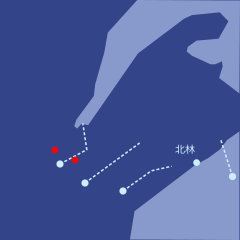
泽能听到加洛瓦和特尔波在频道里协调。
“转入防御阵位，散开，防止被包围。”加洛瓦喊道。
“派中集群一部分北上，从背后攻击。”特尔波答。
泽放大地图。维里迪亚与北极的无人机集群正迅速逼近。双方都开了几发远程武器，北集群已有10架无人机失能——这还不算先前在森林各处被北极固定陷阱干掉的那几十架——但到目前为止，主力交锋还没有开始。
过去一个半月里，他演练过数百次森林雪地无人机作战的模拟，知道在侦测、隐蔽、攻击和找掩护上什么策略最好。这些策略已经载入无人机的 AI 模型。
屏幕上出现了一幅图像。正是北极雪地无人机的设计图。它和他以前看过的图略有不同——更快、更灵活，对固定陷阱的防护更好，侧面和背面的防御也更强。北极人一直在等着打又一场快速进攻战，他明白了。这些改进牺牲的是传统固定正面交战的效能。维里迪亚雪地无人机机队也做过一些类似的改动，但幅度小得多。因此，对他们最有利的作战方式似乎是……固定战线的正面交锋。
不妙，泽想——北极的无人机机队规模更大。他们只能靠更好的微观战术来弥补。
几分钟后，双方的无人机机队靠近到可以交火的距离。维里迪亚机队抢先砍倒了大量树木，以防被包围，尤其是在北翼。加洛瓦的策略很简单：北边拖，东边打。大约20分钟后，特尔波的机队将从南面攻击东侧的北极集群，希望能将其包围并歼灭。

泽仔细看着。双方的无人机伤亡数开始迅速攀升。很快，维里迪亚和北极的损失都突破了100。
泽继续翻看所有画面。他看到加洛瓦最大的几架雪地无人机顶上有些大箱子打开了。一大群翔球小型飞行器和送货小型飞行器飞了出来，似乎改装过，挂载着更危险的载荷。对了——北极的雪地无人机顶部同样是弱点。民用设施改造得不错，泽想。
每支集群里都编入了一批泽国最优秀的民本棋棋手和一些维里迪亚最出色的翔球选手，他们都由昆高培悄悄空运而来，坐在远离前线、安全无虞的指挥中心里。这两拨人最懂空中对决的实战门道。
泽继续看着。眼下加洛瓦的策略似乎进展顺利。他这路集群在北翼一边砍树、一边留下陷阱，成功缓慢后撤；东翼的战斗也推进得很顺。确切的伤亡比不好判断，但从屏幕上跳出的数字看，明显对维里迪亚人有利。
40分钟后，他看到了真正重要的好消息：加洛瓦的部队已经从北极的北翼与东翼之间突了进去，特尔波的机队也开始从南面攻击北极东翼。
很快，东面的北极雪地无人机接连失能，而加洛瓦的西翼继续缓慢后撤，拖住北极的北翼。北极无人机试图照搬这种缓退战术，却没有成功：此时特尔波几乎已经把它们完全包围，它们无处可去。
几分钟后，加洛瓦宣布北极无人机机队已被基本击溃。他命令东翼绕开残骸，以免半残的残余单位或陷阱造成损失，随后全速向东北继续推进。
泽缩小地图，又看了一遍全局。
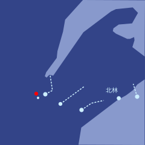
又过了一个半长时，维里迪亚的四支无人机机队继续推进——只有加洛瓦留下拖延其北面那支北极无人机部队的小股分队例外。
警报再次响起。这一次，中集群和南集群同时受到威胁。
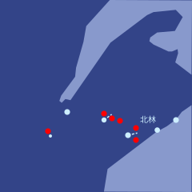
“好了，各位。”莱克托喊道。“这才是真正的硬仗。”
“中路转入防御，缓慢后撤；两翼尝试包抄。小心，把我们的损失压到最低，把他们的损失抬到最高。别让他们突破我们的阵地。”
片刻之后，他又补了一句：
“为了维里迪亚！”
“Dze go ba fau gie”登紧跟着喊了出来。
泽指挥无人机开始动用全部战术，包括几个月前他在红郡那些秘密战斗里学到的。他知道，这些战术在北极人适应之前只能管一小段时间，但此时不用，就再没机会了。
双方的无人机机队铺开，拉出防线。在完全缩小的地图上，泽能看见两条线缓缓靠近。几分钟后，交锋开始。双方的损失迅速攀升到数百。
加洛瓦的北面集群突然由退转进，开始使用同样的战术。
泽屏住呼吸，仔细看着。他翻过一张张小尺度战术地图和实时画面。
有些不妙，他意识到。
“翡翠，分析所有微观战术和画面，判断哪些战术有效。”
“分析中……”
大约20个嘀嗒后，翡翠回应了。
“战术一和战术五效果中等。战术二、三、四、六效果为零或略为负面，北极方似乎已完全适应。”
泽呻吟了一声。他知道，尽管自己已经尽力，北极人一定还是从红郡那些无人机上成功取回了一部分画面——当初他正是拿这些画面训练自由城的防务公司的。
“各单位停止使用战术二、三、四、六。使用战术一和五。ID 末尾是0或5的单位，随机尝试改良。”
接下来几分钟，伤亡比又朝维里迪亚一方倾斜。随后，北极人再次缓慢而稳定地占了上风。
“翡翠，哪些改良成功了？”他问。
“共尝试了8项。只有第7项成功，已作为战术五的主线版本投入使用。建议淘汰战术一。”
“照办。”
泽又惊又急，开始冒汗。他没料到北极人能如此有效地抵挡他们的战术。
快想啊，泽心想。想个办法。
海上无人机似乎得手了，至少在突袭初期是这样。它们在北林以东和往东数百公里外特尔滕的北极核心领土上都投下了地面载具。海上无人机已经开始返回基地，去装第二轮载荷。
泽有一瞬间感到欣慰。但这还远远不够。
一台机器人进了房间，悄悄滑到泽身边，送来一罐能量饮料。泽拿起来，灌了大约一半，把剩下的放在桌上。片刻之内，它就起了作用——可唯一的功效，似乎是让泽更加绝望。
又过了一会儿，屏幕上跳出一条消息，把泽眼里最后一点光也吸干了。
后方基地3号似乎已被北极导弹的高精度打击彻底摧毁。
最可能的原因：内部叛徒泄露了基地位置。
目前的估计是，基地内几乎所有人员都没能生还。南集群指挥登生还的概率估计不足10%。
泽哭了出来。
接下来的几分钟里，他有气无力地对着话筒低声说话，提出一些无人机战术上的小调整，试图优化位置优势和伤亡比。穆已经立刻接任南集群指挥。但他心里清楚，这场仗已经输了。
就在那一刻，泽的手表震了一下。
这不是标准的军事通信频道。而且，这是翡翠认为足够重要、可以越过他严格的“勿扰”指令的事。
泽对着颈带低声说话，把手表接到眼镜的显示上。一条消息出现在屏幕上。
我是德鲁因。
这几个月，我一直在执行我的计划。我赢得了北极人的信任；凭我成功的民本棋履历，再加上我父母的地位，这件事证明并不难。如今，我是北极一方的指挥官之一。
我们被严密监控，在不暴露我的前提下，我能对北极无人机机队做的事非常有限。不过，我设法为你们留下了一个可利用的弱点。
这个文件里写的是专门针对南翼有效的战术，南翼由我指挥。如果你用上它们，应该能在海岸以北约20公里处突破，然后向北、向南扩大缺口，把南线打成一场彻底的胜利。
接下来，就要靠你们从南面包围残余部队，夺回北林。
几乎立刻，一股劲头重新回到了泽身上。为登哀悼的事，只能留到改天了。
“翡翠，确认这条消息的真实性。”
“消息用的密钥，与你在葡期15日收到的那条德鲁因原始消息中嵌入的密钥相同。”
“分析这些战术，看起来可信吗？”
“战术极具攻击性。看起来不合常规，但可信。若对手正好有相应弱点，它们会非常有效；若对手没有，则会加速失败。正在跑模拟。”
大约20个嘀嗒后，翡翠又开口了。
“若用于对付维里迪亚、昆高培或自由城的 AI，这些战术会加速失败。它们的有效性完全取决于德鲁因所说的那个前提是否成立——北极 AI 是否真有他所指的那个特定弱点；而那个弱点既可能是被发现的，也可能是被人为植入的。”
泽想了一会儿，决定向人求助。
“白，我把德鲁因的一条消息转给你。告诉我你怎么看。”
白几乎立刻回了。
“正在看。”
大约30个嘀嗒后，她又回了话。
“我不知道我们能不能信德鲁因。我们唯一的依据就是他自己说的话。连他当初在葡期发给你的那条消息，都可能是别人种下的。北极人完全干得出这种事，德尔瓦特就曾连着几个月给格拉迪亚斯和莫夫栽赃。”
“不过我有个别的想法。”
“你说。”
“我们没有好理由信德鲁因。但德鲁因有充分的理由信我们。所以，我们把这件事反过来，压到他头上。先迈出信任这一步，是他的责任。”
“那你想让他做什么？”
“把北极无人机 AI 模型的原始权重发给我们。”
白停了一下，又说下去。
“AI 模型不像普通软件，你可以把整个东西分析一遍，找出安全属性，再用数学证明它安全。它们是无法预测的野兽——是养出来的，不是锻造出来的。它们没有围墙，只有免疫系统。所以，只要拿到原始权重，我们就能并行跑模拟，优化出能骗过它们的攻击。”
泽的情绪再次明朗起来。
“其实比并行跑模拟简单得多。用梯度下降就行。你可以对模型在模拟器里的输出结果，针对我们在战场上能改的所有变量求导——我们贴在无人机侧面的图案、无人机的动作方式。系统会自动找出那个能把‘它们的模型漏掉我们的无人机’这一概率抬到最高的小改动。哪怕只是一小步，把‘漏掉我们某架无人机’的概率从百万分之一提高到百万分之二，也能立刻被找到。”
“你要不断找出能把成功概率最大化的调整。换不同参数的模拟器去试——记住，最后的攻击会出现在真实世界里，而不是模拟器里，所以我们能做到的，只是筛出在不同模拟器上都稳健的改动。跑个100万轮之后，希望我们能得到一套在现实中相当管用的东西。在我们人类看来，那大概是一堆看不懂、古怪的涂鸦。而对我们要用这套攻击去针对的 AI 来说，它就像一条魔法蛇，带着致命的目光，直直盯在你脸上。”
“我们大概没法让它们的无人机反戈一击或者关机，但我们可以让它们看不见我们的无人机，甚至让它们朝自己脚上开火，过热失能。”
“哇。那好，我们回一条消息问德鲁因。”
“翡翠，起草一条消息给德鲁因，把白刚才说的意思写进去。用他来时用的那条隐写术信道发回去。但愿德鲁因能明白。”
第三十章
埃莱纳森林，维里迪亚 · 3725年雪月30日
泽紧盯着屏幕，留意北极无人机机队有没有突破的迹象。40分钟前，他建议各集群缓慢后撤，砍倒树木拖慢雪地无人机，沿途布设陷阱，首要目标就是把战事尽量拖长。莱克托采纳了他的建议，并回话说，他有把握这套策略至少能撑到日出。到目前为止，他都说对了。
泽的手表震了一下。是德鲁因。
我理解你的顾虑，也完全同意：你眼下确实没有好理由信我。
遗憾的是，我没法把无人机上那些语言模型的原始权重交给你们。它们受到严密保护，只有极少数人能接触——正因为担心对手拿到权重去跑梯度下降攻击。
但我能给你们一个次优的选择：他们模拟环境的 API 访问权限。里面包括北极无人机的模拟副本，既有完整的世界模型模拟，也有只针对输入模态的部分模拟，会给出分类结果——给定某条视觉输入流，它们会认为自己看到的是什么。
以下是网络地址和访问密钥，另外还有红郡那些北极端点的地址和密钥，你们可以借着它们中转。记住要稳妥行事，把被侦测到的风险压到最低。
网络：
13178080a5bf1c815dfb1300c6039af76c7b8f14e47581d3549e8990012e1d5f：35a504923a4d8dde09e0ed814ec05ae81be8e91c2bcb249b22ad13af0bcf7b4de680176e029dcfd96b27e328149f8db4ab368a87762568799bf8a56b95f968c5：519cce3e5e0ee46fbaf2735a53429d6cb1829485e2886962dde9606cab13f0a204569c9a285f10e1a3670985a1fa0696530feae84eae853209d1f0345a214933：8d174efbc3857326999a58e4d4eea9c7fbc61fd56dd233707321d9d5c0bfb9cefed7dd2e3ee0f2c9a1ed4b61dd21ae165780497b39ae4ae5b06b1b8b0b15a034：a9bf7a809e4e998946e59e377e7e96cd9f22dd4db9a87080b669de3e74a03d83代理：
4446e4f5350e5d76fe0b5254f50f3923fc2f480d1d9df33da1dc58d532e49e86：9b0dadf8d9418283416f70d60afd909c7346e63cbf7c815b110926eeb943afff27770fdc6c08da318e64f0f16d1d0e300958e4eefe1b55de1a48a9c6a7872ecf：884c9a310b61edf0e73d2d9e9352ac9f21b8c354aa90203468a76f1a2383ff08dfb1c543a259ade8d53344893807d47c0bebd02ed04cde46e31335d2e71f7ac3：b2eb4a17a06c68ab7bf149bb031702ff3514d5571d83c9a2c652dbdaa50768a90ca84c8548d95f6edcd3b6fd1b695d743aff2904cec00fd411bd9d36566e4048：af0dd33ec09e8e8331ff34bf9d15432d8f91ec4870720d8fdc2bdffe29f871d5泽立刻把这条消息转给白，又给芬发了一份，并吩咐翡翠给芬发一条最高优先级的紧急警报，说明眼下的情况。
芬几乎立刻就回了。
“好，泽，你需要什么？”
“在看……”
“嗯，这看起来能做。有个不太为人所知的事实：要有效地练出对抗攻击，其实并不需要模型的原始权重。班孙培肯定有人很擅长这一套——‘语言模型’跟语言的关系可大着呢！”
泽又把消息转给穆。翡翠自动建了一个实时聊天群。1分钟后，大约10个人在群里分享对这个问题的看法，开始并行攻关。
“先假定我们的攻击介质是：我们有自己的雪地无人机，还有可以打印图案的贴纸。假定我们在日出之后才部署。做法是这样：先取一个图案，放进模拟器里跑，让我们的无人机慢慢靠近目标，看目标需要多久才能发现它。要把侦测时间量出来，这样衡量我们藏得好不好，得到的就是一个标量信号，而不只是一个二值结果。”
“不断朝各个方向对图案做微小改动。凡是能让目标侦测时间变长的改动，就保留下来。这个过程噪声大也没关系，信号会累积，噪声会随时间被平均掉。它没有梯度下降那么快，但确实管用。最终你会得到一个能稳定骗过对手的图案。”
“我们还能做得更好。我们自己也有模型，训练方式和北极的模型相近，而且我们当然握着它们的原始权重。所以我们可以对自己的模型用梯度下降。比如，按我们模拟器里自家模型的判断，找出10个能把侦测时间拉到最长的最优正交方向，再把这些方向当作试探性的偏移，拿去他们的模拟器里试他们的模型。同时，我们还用每一次查询的结果微调自己的模型，让它越来越能预测北极模型面对这些攻击会怎么反应。”
“这东西多快能跑起来？”泽插话道。
“写代码最多10分钟，翡翠很快就能搞定。完整的训练循环……大概要一个长时？”
“那就是日出前后能做完？”
“正是。然后你们还需要——我不知道要多少分钟——把攻击图案真正打印到无人机侧面，这条流程你那边先准备好，我们这边一就绪就能立刻上手。”
“好，各位。动起来。”
泽靠回椅背，继续扫视放大的战场地图和一个个视觉画面。维里迪亚无人机机队已经损失了大约三分之一，但损失速度明显降了下来。缓慢后撤的策略很管用：它还意味着一件事——任何被战斗损伤打瘫了行动能力、但武器仍完好的维里迪亚无人机，都可以进入低功耗模式，等北极人自己推进到它们所在的位置，再醒过来打出一轮最后的伤害。
大约15分钟后，泽的手表又震了一下。翡翠让他回群里去。
“我们有了点初步的好消息”一名班孙培研究员喊道。
“什么消息？”
“我们成功接入了北极的模拟平台，对着模拟器跑了最初几百轮。现在有能把侦测时间拉长约5%的图案了。”
“只有5%？”
“这只是说明流水线开始起效了。”
“哦，刚涨到11%了。”
“确实起效了”另一名研究员插话。“我们还在并行跑翡翠，优化软件。它在找办法从每次查询里榨出更多信息，也把查询更好地并行起来，让这一切跑得更快。”
泽的手表震了一下。
我能看到你们开始跑查询了！不过你们得再小心点——如果我看得到，监审官大概也看得到。这里还有几个代理端点。
c8baa6614d9fba874af5cb90ba7c3d1a53aabaa8facd1e4f5fe46bdeb229a106：3fa5fbd0bc8aa8af8a4842b099dad4e700b5d54edcd4a21c9e272552318d4a558d01f119fbdb499f24a298c59c1b83a7f591df97f3b7a9823e313b1bff3872ca：1a5529862c273fefb898acccdfa0bec29d594904b427eaee88b7b1df393fdb0b44ee73e0355611ad0d975bda2eec43c21e490cb42c61f71bc03b3b4bd7718ad1：bf53236e5d72d2142348d5529275908f995b77791f07a5c818eca0cfc400c1acab7a609ce6f71f55571184cb5d32996a3b5ddd08230ae788f7f65355d5385abe：254804b48ae25417535e6336735d0b66bdd7d20afe77ac687e933d8bd5c24d2495d40f8a44c6c3f4d32d2a4c7c533f9dd71c5d9ac1020361e9e7f4552967a778：12b152f44f00a1f542f4ac6fbb3aced5144c8a98d813a34dce1cb5abc18c3314508a323cda2f87b053986f17d0c073a51c9a001b9b9152a393fe06ff4a30072b：eff66952719415cc534e8f1feb06aa044fa468a81c911a14b95f9be93371e528另外，再加一批在做别的事的假查询，甚至可以让每次查询同时尝试好几种不同的攻击，让它在做什么更难被看清。
好建议，泽想。他转了出去。
为了验证模拟器的效果，他们还在一套夜间环境里跑了模拟——那套环境精确复刻了当晚早些时候一场小规模战斗的真实场景。另一个小组，两名研究员加上几个翡翠实例，开始研究如何自动分析夜间环境下模拟与现实的偏差，从而学会怎样构造更贴近真实战场情况的模拟器查询。
泽看着攻击图案变得越来越优化：一张张纸上满是扭曲的线条和文字，看上去既格外熟悉、似曾相识，又完全陌生。在模拟器里，北极无人机 AI 发现来机所需的时间翻了一倍还多。
又过了30分钟，这个时间又翻了一倍。
莱克托下令在他们当前位置后方约2公里处搭建印刷设施——那是个大约在日出时分能够安全组织后撤的地方。
维里迪亚的人类士兵还远在机器人前线后方几十公里处，莱克托命令他们开始向前线开进，好让他们能上手把攻击图案贴到雪地无人机上。精细的手部动作仍是 AI 的一大短板。
天色缓缓从几乎彻底的黑，转成一种在极东方向尤其显眼的深蓝。随着分钟过去，那蓝色一寸寸亮了起来。
“好了，我们有了几个不错的图案。北岸那边快日出了。我建议现在就发出去。”
“同意”泽答道。
“那就动手吧”穆补了一句。
泽翻看显示器里的一个个视觉画面。他们的大部分无人机机队已经后撤了1公里，大批纸张被打印出来，几乎立刻分发下去，贴到每一台雪地无人机和空中无人机的各个面上。计划已经动起来了。
“北集群报告：除前锋外，所有无人机已贴装完毕。”
“中集群报告：除前锋外，所有无人机已贴装完毕。”
“南集群报告：除前锋外，所有无人机已贴装完毕。”
“海上集群报告：我们在北林外围的村庄征用了设备，当地人好得没话说，很多人半夜起来帮我们。大部分非前锋无人机已经贴装完毕。”
“那就这样”莱克托轻声却坚定地开口。“行动。”
泽调出视觉画面，很想知道最终版的攻击图案究竟长什么样。他看到一长排望不到头的雪地无人机，每一台四面都糊着大张的纸，每张纸上都有许多彩色、弯弯曲曲的图案——而在正中，用硕大的字体印着一个词：狗。
几分钟后，他看到了结果。维里迪亚的雪地无人机快速推进，打穿敌军阵线，把前线搅成一团双方无人机混杂的乱局。伤亡比对维里迪亚无人机机队有利，超过10比1。
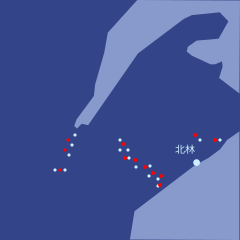
泽允许自己享受了片刻喜悦——这是整整一夜里他第一次感到真正的快乐。
他想起登那天对他说的话。那天，他差点让营救红郡总统之子的任务失败。“跳出框框，是指从控制台椅子上跳起来、冲过去照对手脸上来一拳。”
黑进对手的模拟环境，跑上百万次查询，只为优化几个随手就能画在纸上的涂鸦，再骗得对手的无人机把你的无人机当成狗——这算不算？
大概算吧，泽下了结论。登会为他骄傲的。
觉得自己庆祝得差不多了，泽就调出那个真正要紧的统计数字：伤亡比。它已经降到6比1。到目前为止，北极军队还没能适应，但他们已经摆出应急防御阵位，每一小队无人机都绕成环形，结成阵形，好争取时间。而他们很快就会适应，泽心里清楚。
那个由班孙培和昆高培成员组成、负责向北极模拟环境发查询的聊天群，转向优化更简单的攻击手段：能最大限度推迟被发现、并干扰对方瞄准的运动方式，能骗过它们的声响，以及自家火力的准头——全都是不需要重新打印、粘贴纸张的手段。他们还把德鲁因随最初那条消息一起发来的一些进攻性微观战术也加了进去。
伤亡比一度回升，重新向维里迪亚人倾斜，随后又开始缓慢回落。泽继续看着。
15分钟后，模拟环境的所有访问权限突然被切断。几乎同一时间，伤亡比骤然跌落，对维里迪亚人只剩1.5比1。
他们摧毁了北极无人机机队的一大部分，但仍有很大一部分留存下来。如今双方陷入一场复杂的阵地战，两边无人机小队混乱地交错在一起，遍布战场，没有一条清晰的前线。
维里迪亚的人类士兵就在前线后方几百米处，搜寻那些能快速修复的雪地无人机并动手修理。他们穿着隔热斗篷，把被发现的可能压到最低，附近树木燃烧产生的烟又提供了额外的遮蔽。在几个视觉画面里，泽能看到远处北极的人类士兵也在做同样的事，但人数少得多：维里迪亚人整夜后撤时一路布下陷阱，而那些陷阱对付人远比对付无人机管用。
几分钟后，泽的手表又震了一下。
我希望你现在信我了。
我下一条消息会给出我们南翼部分部队的精确坐标，以及建议的突破口。
jie fe hen dzi.
泽笑了。
我当然信你，德鲁因，他想。
几乎立刻，泽的手表又震了一下。他收到了第二条消息。
他把坐标转给了穆。
“这是你大显身手的机会，穆。”
“别忘了瓦卡里亚。”
几分钟内，南线的伤亡比开始与更北面的各条战线大幅拉开差距，重新向维里迪亚人倾斜。
而仅仅几分钟后，他们似乎就拿到了需要的结果。

穆把自己无人机机队最南端的一部分交给瓦卡里亚指挥，后者的任务是进入北林并重新控制它。
她机队的其余部分向北横扫。接下来一个长时里，她成功把残余的北极无人机机队彻底包围，并在日出后差不多整整一个长时的时候，与特尔波最北端的侧翼会合。
加洛瓦的北集群歼灭了北面的残余北极无人机，抵达那条标示维里迪亚领土与北极核心领土分界的河流。有几架无人机越过河，朝附近的北极城镇疾飞而去，逼得北极人紧急派出增援。特尔波机队的一部分北上与加洛瓦会合，加强了北线。
与此同时，第二批海上无人机直奔塔尔杜尔——北岸以东那座属于北极核心领土的岛屿——卸下了一支由空中无人机和雪地无人机组成的机队，在接下来的几个长时里巩固了对该岛的控制。北极人无法有效应对：塔尔杜尔太远，双方都难以迅速抵达，而少数在航程内的无人机又被加洛瓦牵住，脱不了身。
到那天下午晚些时候，战斗渐渐平息下来，北岸和塔尔杜尔残余的最后一批北极士兵与无人机被有条不紊地逐一清剿。
泽靠回椅子，把椅背调到最大仰角。14个长时以来，他第一次睡了过去。
第三十一章
北林，维里迪亚 · 3725年雨月2日
泽、白和穆沿着山侧的阶梯慢慢往上走。山的两面都覆着厚雪，阳光从雪面反射过来，刺得他们睁不开眼。雪面之上只看得见松树和带扶手的阶梯——树和扶手露在外面，是因为它们太高，雪盖不住；阶梯本身露着，则是因为有台无人机在定期清雪、撒盐，他们能看见那台无人机就在上方约30米处。
一股强劲的冷风扑面而来。他们继续往上爬。几分钟后，他们登上了山顶的圆形平台。
从那里望去，北林所在的那座岛一览无余。岛宽约20公里——小到这一带最简略、缩放到最小的地图干脆懒得画它，却又大到让人觉得，真到了万不得已的时候，光凭这座岛就足以养活一个文明。泽心想，北林若是一座泽国城市，早该有一套完全自给的应急产业了。
东边是北林的主城区。西面和北面，积雪的丘陵连绵数公里，一条小径缓缓蜿蜒，向森林深处下行。泽往东俯视，看见另一条通上山顶的阶梯，一个年轻人只穿着一件毛衣、戴着一顶轻便兜帽，正往上爬。
等那人快到山顶时，泽认出了一张熟悉的脸。
“德鲁因！”他喊道。
德鲁因抬起头，看见泽，跑完了阶梯最后20米。
他登上顶端，一头扑进泽怀里抱住他，差点把泽撞得站不稳。
“泽，你还活着，我太高兴了，终于又能见到你了。”
德鲁因慢慢松开泽，转向白。
“等等，我是不是在哪儿见过你？”
“我是白。萨祖都的练习赛，你可能见过我在旁边看。”
“啊，对，我记得你！”德鲁因答道，心里却有点拿不准：自己是真的想起了见过她，还是只是在凭空编造一段记忆。
“我是穆。你可别把我和苏搞混了——她还在泽国，跟我完全是两个人。”
“幸会，穆。”德鲁因轻声笑着答道。
“那就说吧。到底发生了什么？”
“这事说来话长。你确定要在这么一座冷飕飕的雪山顶上听？”
泽、白和穆立刻一齐点头。
“看来你们比我预想的更适合在红郡生活！”
“好吧，那我开始讲。”
“葡期的时候，他们占领红郡大约两个月后，几个北极军官来到我们家，找我父母谈话。我父母从来不太把北极的威胁当回事，总说我们应该更开放地谈和平、跟他们合作。可入侵一开始，他们很快就转成了北极所作所为的全力支持者。红郡有相当大一部分人也是这样。”
“北极人给了我父母一个职位。他们要请他们去琉璃冠，为最高领导层做整合方面的顾问——先是整合被占领的红郡人口，然后是北林居民，最后是所有他们将要征服的人。”
“我做了一个风险很大的决定。我决定‘就地投诚’——装作北极事业的彻底支持者，利用我父母的声望，加上我在民本棋半决赛中胜出的身份——”
“民本棋冠军是我！”泽打趣地插了一句。
“那是因为比赛取消了，他们直接把头衔给了你。你从来没赢过我。”
“两天前那场战斗，我赢了你！”
“那首古诗里那句是怎么说的？mi fu zo de tei ka ciu pin——当我战败时，却觉得自己赢了？”
“你总算开窍了！”
“总之，我靠父母的声望，加上我民本棋半决赛胜出的身份，自己往上爬。不到两个月，他们就独立摸索出，民本棋是训练现代战争人才的有效方式——”
“等等，他们真弄明白了民本棋是干什么用的？”
“等等……你是说，你们有意把民本棋锦标赛设计成培养防卫人才的？”
泽、白和穆立刻点头。
“那就不是。他们绝对没弄明白。他们只是发现，民本棋恰好对这个用途有效。于是不到三个月，他们就把我提成了最高指挥官之一。”
“其实北极人挺好摆布的，你知道吧。”
“怎么说？”
“他们那一整套意识形态完全不看重立场，只看重能力。在他们眼里，顶尖人才是可以互换的。人就是机器人，只要把薪水调高一点，就能被重新分配。他们根本没有一套关于人各有其动机、各做各的十万个梦的说法，也分不清谁的心是和你一起跳的，谁只是在装。所以你只要喊对口号，让他们相信你是顶尖人才，他们就会……信任你。”
“哇。”
“我……倒不觉得意外。”白补了一句。“我只是庆幸，这场局你玩得比谁都好。”
“那北极帝国最有意思的地方是什么？”穆轻声问。“我们能从他们身上学到什么？”
“他们的技术进步是真的，而且很惊人。他们给北林居民做的那些治疗只是一个样本。他们相信自己已经弄明白了怎么让人多活十年，而且还在加速。”
“琉璃冠是我见过最迷人的城市之一。它有它自己的美。走在里面，就像住在一颗巨大的冰晶里。它最高的塔高出地面一公里，地下的洞窟深不见底。”
“有些墙边甚至种着一排排松树。这本身就是一项了不起的工程：用基因工程让植物更耐寒，再加上地下供暖和巧妙设计的反射墙，把周围环境弄得更暖。”
“冬天，琉璃冠有一个半月的极夜，见不到太阳。那时整座城市就被白与蓝的人造光裹住。”
“听你这口气，像是想回去了！”
“其实我想要的是别的。北极人把这些技术造出来，我觉得是好事——真要让我关掉一样，那就是超级病毒的研究。但危险的地方在于，他们造出来的一切都自己留着，不让别人受益。就连给北林人一点，也得按他们的规矩来——你来我们的诊所，你没资格知道我们在你身上做了什么；你要是不想变回原来的样子，就得一次又一次地回我们诊所来。”
“科学技术本该把世界连在一起，结果却让一个群体变成越来越大的威胁，让世界其余部分越来越害怕。”
“但多亏了你们，我们——我们指的是全人类——现在缴获了他们一大堆技术。有些是他们带进北林的；成堆的军用装备散落在埃莱纳森林各处；还有一批在塔尔杜尔岛上，那是北极的核心领土，上面住着几万人。”
“所以我们下一步该做的，是尽可能说服他们中的更多人自愿站出来，自愿分享知识和专长，把整个世界至少抬到北极人自己留着不出的那条前沿上。”
“开源——不只是一个好主意，更是法律”泽答道。
“正是。让整个世界在这方面更像维里迪亚一点。”
“然后我们可以把他们的策略反过来用。让塔尔杜尔的人看到，在我们的生活方式下，他们能有更多安宁、更多和平、更多真正的自由，同时还能拥有强大的技术。也许通过他们，我们能说服更多北极人站到我们这边来。”
谈话停了下来。这回德鲁因绕着山顶走了一圈，欣赏北林的景色。
大约10分钟后，穆又开口了。
“德鲁因，我有个坏消息。”
“什么消息？”
“自由城防卫队报告说，红郡的北极驻军已经增加到三倍。他们已经用我们两天前那场战斗里发现的招数，派无人机在红郡试了几次破坏行动，但现在大多都失败了。”
“他们现在认为，我们基本没有可能夺回红郡了。”
德鲁因叹了口气。他眼里满是深重的悲伤。
“塔芬德尔建议我们来点硬的。封死塔尔杜尔与北极其余领土之间的边界，然后提出一笔交易：想回北极帝国的人，我们放他们回去；作为交换，红郡想离开的人，也允许他们离开。他们留着红郡，我们留着塔尔杜尔。然后在维里迪亚找一个美丽的地方，建一个新的红郡。”
“干脆把这里和塔尔杜尔之间那个半岛给他们不好吗？就是从北岸东端垂出去的那个。那边土地很美。”
“我觉得那该由他们自己决定。”
德鲁因点了点头。“塔芬德尔大概是对的。这已经是我们能拿到的最好结果了。”
谈话又一次停下。四个人一起望向东方，看雪花轻轻落在北林镇的每一栋建筑上，把它们盖上一层厚雪。
格拉迪亚斯和塞拉穿过北林大梅港入口处那道巨大的石门。闸机已被砸烂、掀倒在地，好让人们自由进出，管理人员那时候似乎也狠不下心去执行什么签证规定。两名大梅港保安穿着紫灰两色的制服，只是看着人流进出，退而求其次，只管守住防止偷盗和暴力的底线目标。
塞拉的手表震了一下。她抬起手看了看。
| 来自 | 消息 | 时间 | |
|---|---|---|---|
| → | [5张图片] | 45904 |
她点了进去，看了看那些照片。前三张是自由城的人们在街头和公园里庆祝。
第四张像是在停车场里办的一场露天公开演唱会。背景里是一座巨大的厂房，侧面醒目地挂着伊查拉的标志——这是自由城如今有名的防卫公司之一。
最后一张是扬本人和一个人的自拍，那人看着像是那家防卫公司的经理之一。
“你要去自由城看扬吗？”
“其实我在想，你走之后我在这儿再待个五天左右，让他过来。他一直想来看看维里迪亚。”
“应该这样。”格拉迪亚斯温和地说。
他们沿街往前走了约100米，然后下到一条隧道里。又走了约200米，他们右转，登上一段阶梯。阶梯尽头有一扇门。
格拉迪亚斯准备拿手表去碰门边的绿色圆圈，可还没碰上，门自己开了。
“爸爸！”莉莉喊着跑向格拉迪亚斯，抱住了他。
“莉莉！你没事，我太高兴了。”
费布里克和赫雷达从另一个房间出来，冲上前抱住格拉迪亚斯和塞拉。
“你们都在这里，聚在一起，我太高兴了。”
“对不起，妈妈。”
“别道歉。过去这一年，我们每个人都犯了很多错。现在我们都熬过来了；真需要的话，还能再熬过更多。我们是一家人。”
“兹文在吗？”
“哦，兹文、维尔和黛雅明天早上到！”
“太好了！我特别想见到妈妈！”赫雷达叫道。
“大梅港待你们怎么样？”格拉迪亚斯问。
“其实还挺好玩的。”赫雷达答道。“他们组织教育、娱乐、公共活动都很有一套，想尽办法让人开心。他们还说动了北极人，允许无人机运食物进来，所以除了地方小、封得严实，其他都还好。”
“我们在这儿出于好奇吃过几次北极食物”费布里克接话。“他们弄出了十来种物质，尝起来像糖，却一点热量都没有。还有些蛋白制品，味道像鱼和肉。还不错！他们的口号是：想要什么口味都行，营养配比也随你需要。”
塞拉默默低下头。她还是不太习惯承认：北极人的做法有时确实有可取之处，也能从中学到东西。
“要不我请几位新朋友过来，”格拉迪亚斯插话道，“让他们给我们露一手，尝尝真正的泽国菜该是什么味道？”
“好耶！”莉莉喊道。
费布里克和赫雷达也迫不及待地点头。
“那我就请他们今晚来。今天下午我还得再出去一趟。山顶上要为登和阵亡的将士举行一场军葬。之后我们一起下来，好好吃一顿。”
莉莉、费布里克和赫雷达兴奋地点头。
第三十二章
梅尔丹，维里迪亚 · 3725年雨月12日
格拉迪亚斯和塞拉并肩走在卡利马尔的那条小路上。到这时候，这条路他们已经走过几百遍了。小路被树木罩着，两侧都是石头房子。
左边，一名男子正爬上一架靠在树上的高梯。爬到梯顶，他开始拧下装在那里的监控摄像头。拧完，他毫不讲究地把摄像头朝地上的箱子一扔——箱子在他下方好几米处。这一扔正中箱内。摄像头撞上箱里已有的几十台摄像头，发出哐的一声脆响，格拉迪亚斯和塞拉听得清清楚楚。男子随即下梯。
他们继续往前走。路过一家商店——格拉迪亚斯记得，就在几个月前，这家店还匆匆把大半货品换成了应急储备口粮。这一次，占住前排货架的是一种北林特有的红花，居民们买它来庆祝本省解放。
店旁贴着一张广告：
本店现供应最新鲜的鲜水，缴获自北极帝国核心领土。
今天就尝尝最新的海德菲尔水，灌装自塔尔杜尔的泉眼！
尽享胜利的战利品。买海德菲尔。
路渐渐变成茂密的灌木丛，接着又是一条空中步道，俯瞰着一条繁忙的高速公路。左侧能看见一座覆满树木的山。几栋约15层高的公寓楼从树梢上高高探出，外形和装饰像放大的中世纪城堡塔楼，只是侧面窗户多得多。
过了空中步道，路钻进了隧道，格拉迪亚斯和塞拉来到一个Y字形路口。他们向左拐，往前走，直到小路重新回到地面，再向右拐。格拉迪亚斯看了看手表上的导航。他其实从没走着去过议会。
20分钟后，他们到了那栋巨大的圆形建筑。格拉迪亚斯把手表贴上绿色圆圈，门开了。楼里的路线他记得很清楚：直走，右拐，再直走，左手第三扇门。
他又贴了一次手表，门开了。
韦尔多和泽都坐在办公室里。两人一齐转头看向格拉迪亚斯和塞拉。
“格拉迪亚斯，塞拉，欢迎回来！”，韦尔多热络而亲切地招呼道。
“韦尔多，又见到你真好！”
“请坐，请坐。”
一台机器人滑进房间。
格拉迪亚斯转头看了机器人一眼。“dia jie fe kai ja cu dze kai lin pan”，他用刻意放清楚的语调对机器人说。
机器人嗡了一声，出了房间。
“厉害，格拉迪亚斯。连我都做不到。”
韦尔多沉默了片刻，又开口。
“好吧，我有点丢脸。dze kai lin pan 是什么？”
“菜和饭。”
“啊对，绿植线面包。”
“对了泽，我们什么时候开始把米换成光尺？”
“芬跟我说，班孙培正忙着把泽国的隐私和安全习惯全面提到新标准上。大概10天后，他和几个人真的要来维里迪亚，看看能不能帮你们也把这些事跟上。”
“不过我猜也不用等他们。你要是喜欢光尺，今天就可以用起来。”
“看来他们说得对。换成光尺不是眼下最要紧的事。”
韦尔多的语气忽然严肃起来。
“这个月有很多人在庆祝。一个世纪以来，北极帝国第一次被打败。北林解放了。塔尔杜尔也已经有不少人接受了我们的条件，帮我们拆解缴获的北极技术，好让我们真正从中受益、学到东西。”
“但别忘了——这只是第一个回合。而且就算这一个回合，我们也没有全赢。”
“北极人丢了北岸，丢了塔尔杜尔，但保住了红郡。他们在技术上失去了一些领先，可过去这几个月我们看清了，他们在别的技术领域进步飞快。”
韦尔多叹了口气，接着往下说他那番提醒。
“我们以为自己拥有的隐私，其实并不存在。数字世界里还行——网络安全和密码学如今非常强，但别忘了，语言模型永远存在普通软件没有的攻击面。物理世界就难得多。物理现实中的信息，本质上漏得多。就连我们在键盘上敲下的一次按键，也有几十种途径泄漏到外面的世界。我们可以努力去对抗这一点——尤其在自己的私人空间里——但能做到什么程度，是有上限的。”
“听说有一批泽国的新摄像头已经运到，内置了硬性保证，能传什么、不能传什么都写死在里面。维里迪亚国立大学正在琢磨检查它们的方法，好像想直接照搬泽国的做法。”
“哦，原来是这么回事？我们来的时候在卡利马尔看见有人拆了一百台摄像头。”
“看来是。”
格拉迪亚斯决定换个话题。
“你觉得我们的政府怎么样？”，他问韦尔多。
“掌舵会管用，合议庭管用，图谱资助一直也没问题。可凡是更透明的那部分，全都垮了。照这个趋势，我猜政府往后做的每件事都会变得更私密。更数字优先，更多封死的隔信室，更多隐私袍。”
韦尔多叹了口气，对他所预言的这番局面，显然至少有些不满。
“这里有一种根本性的张力，我们的政府体制从它诞生的第一天起就在跟它较劲。在一个彼此连通的世界里，一个政府怎么可能既对本国公民负责，又不至于同时也要对内部有钱有势的利益集团、对外部的敌人‘负责’？这两拨人都盯着最薄弱的环节下手，把它孤立起来，施压、扭弯，让它为自己的目的服务。”
“我们得不断改进自己对透明和问责到底意味着什么的理论。在政府眼下这一版里，答案是一端的遴选程序，加上另一端的宣谕使。到了下一版，也许就得换别的了。我觉得那一定会牵扯到类似银聊民调的东西，或者某种带宽更高的机制，用来搞清人们的目标；还要有涉及 AI 的机制，来想清楚怎么达成那些目标。”
“泽，你怎么看？”
“AI 是这场讨论的起点，不是答案。什么样的 AI？怎么训练？谁来训练？我们给它什么指令？谁给 AI 喂信息，谁又在 AI 的思考过程里插手帮它？”
“那你会怎么回答？”
“我会先退一步，问问题到底出在哪儿。我想我找到了一条：维里迪亚这些机构按今天的样子，并没有真正内置‘预测未来’这个概念。它们谈的全是当下，是当下的民意。”
“没有任何一个位置要求你站起来说——如果我们做X，那么就会发生Y——说对了你就上升，说错了你就下落。最接近的是见习官，他们必须预测监审官。可就算在那儿，他们预测的也不是真实世界，而是监审官。所以那还是在预测别人的看法。你把人和人对齐了，却没有把人和现实对齐。”
“那正是 AI 能做得很好的地方——也正是 AI 已经为我们做到的地方。但我觉得不该只挑一个 AI，而应该让它们之间有某种公开竞争。AI 应该是棋手，不是棋局。让不同的人选不同的 AI、用不同的方式跟它们协作，再让它们为目标负责。”
“一个社会该有目标吗？”
泽盯着韦尔多。
“什么意思？”
“说到有目标，北极人比我们任何一个国家都强。他们清楚知道自己要什么，一心一意去实现。你要是造一台完美的目标执行机器，造出来的就是北极人。”
“所以才需要另一半——能把不同人的目标汇集起来、加在一起，这样你才知道自己实现的是人民真正的目标，而不是某一个皇帝的目标。”
“可要是你想出来、写在纸上的任何目标，最后都长成那副样子呢？”
“什么意思？”
“要是人的处境里本来就有一部分是：我们并不完全知道自己想要什么；任何想把它凝成一整块的努力，推得够远都会散架？我们的评则就是这样：它们能管用一阵子，然后终究被人钻空子，我们再调整评则，然后再重复。要是这根本躲不掉呢？”
“那还有什么别的办法？”
“想一个装满水的湖。湖里的每一个水分子都各自行动。没有总体规划，只有万亿个分子做着万亿个梦。这个湖自有它的和谐与平衡，我们都看得见。但那不是因为有人在强迫这种平衡发生，而是因为只要湖面的任何一处哪怕短暂地低于别处，重力就会把水引过去，各处的高度便又齐平了。”
“但同样地，冬天来临时，这些分子会聚到一起，结成厚厚的晶体，变成无法穿透的冰。”
“你物理学得不错。”
“我女儿刚开始学化学，跟我讲了不少。她的朋友觉得她太用功，我倒一直鼓励她——我跟她说，只要肯下功夫，有一天她也能像你一样。”
泽脸红了。
“所以我想，理想就是这样：一个社会能做日常生活的善，而不做帝国和征服的恶。既能抵抗北极帝国，又不至于自己变成那样的帝国，而是一步一步和平地繁荣起来。”
“想要什么，很难有一致意见；不想要什么，就容易一致得多。我觉得我们的一切都建立在这份不对称上。冬天，我们朝同一个方向对齐，能结成晶体，能防御、能反击。夏天，我们像水一样流动。去中心化的力量——市场、开放的思想讨论、开放的科学、文化与法律——被动地让我们那万亿个梦想的万亿份力量，相加的时候多过相减。我们会去调整它们的规则，但只小心翼翼地、慢慢地调。这样一代代积累下来的、自然而温和的进步，比满足任何目标都更值钱。”
“那要是有时候，湖的不同部分必须同时既是水又是冰呢？”
“也许吧。”
“那要是湖面每一点都跟别处完全等高，本身也是一种我们不想要的整齐划一，有时候我们不如结成雪球、让它们漂着，反倒更好呢？”
“那也可能。”
“塞拉，你觉得我们该多做什么？”
“北极人有竞争——他们在意谁强谁弱，鼓励人们互相挑战、拼命往上爬——但他们不懂合作。他们是冰，却没有水。维里迪亚有合作，可我们也许不懂竞争。我们能当水，却还不知道怎么当冰——就连我们的水，也不总是流得如我们所愿。其实我觉得，真正想明白怎么同时拥有两者、并让它们彼此服务的，是泽国。我们该多向他们学。”
她深深叹了口气。过了一会儿，韦尔多又开口。
“这些都是好想法。”
“泽，你愿意留下来，帮我们琢磨琢磨其中一些问题吗？”
泽想了一会儿。
“穆和苏肯定能把昆高培打理得很好”，格拉迪亚斯插话道。
“当然愿意！不过你也许会发觉，芬比我更能帮上忙。”
“那就多谢了。你知道，议会现在明白了，他们现有那套思路已经到头了。很多参议员辞了职。还留在里面的——比如我——想要新想法。我们愿意听。”
韦尔多站起身，慢慢走到办公室侧墙上印着的一幅世界地图前。
“这就是我们的世界。9000万人。格拉迪亚斯、塞拉、泽，你们有没有想过，如果这里有9亿人，或者90亿人，会是什么样子？”
“没想过。你为什么这么问？”
“人口越多，新技术的发明就越快。中世纪之所以那么停滞，今天之所以走得这么快，原因都在这里。但不管人口多大，每个人适应技术的速度还是一样的。也许我们之所以能适应得这么好——根除计算机病毒，给一切加上这么多隐私和可验证性，把社会优化得这么美、这么健康——只是因为这里没有90亿人把技术推得更快、把那个必须接受技术的社会搞得更加复杂。”
“有意思。你觉得有一天我们会有90亿人吗？”
“不是有一天，是很快。而且不是人，是机器人。也不是90亿，是9万亿。”
“我担心的就是这个。AI 真的会改变一切。到目前为止，进步还算温和，没有人失业，感觉更像是所有人都被提拔成了管理者——有时是修理工。但到了某个时刻，一旦 AI 几乎能做人类能做的一切，哪怕效率只有百分之几，我们的人口就不再是约束了。”
“那我们怎么办？”
“这个嘛，如果北极人一直领先下去，我们其实没什么资格来做那个回答的人。”
“要想重新回到平衡，我们就得更擅长渗进他们那边。对他们的社会和他们的技术多看进去一些，确保他们每有一点进展，我们都能知道。弱者要隐私，强者要透明。有塔尔杜尔那些人帮忙很好，也希望红郡那边假装投靠北极人、其实愿意多给我们递情报的，远不止德鲁因一个。”
“博弈论里有个已知的结论”，泽插话道。“如果两个玩家困在一局既有合作又有竞争的博弈里，那么只要他们至少能部分读懂对方的心思，就能让合作达到严格更高的水平。也许那才是该指望的结果。随着时间过去，我们会更了解彼此，会互相学习，最后真正更懂对方。”
“我没这么乐观。北极皇帝很不痛快。他现在拿我们没办法，但肯定在盘算。会有下一个回合。可能是5年后，也可能是20年后。只要我们在技术上至少不掉队，就能活下去。”
“你觉得我们该设法拖慢他们吗？”
“把他们一个世纪以来对泽国做的事，照样对他们做一遍？倒也不算最坏的主意。”
泽叹了口气。
“我们能在他们的压力下继续前进，他们就一定能在我们施加的任何压力下继续前进。”
“你知道，这一切走到后期会变得很疯。到了某个时候，我们终究会有虫子、苍蝇那么大的无人机，在地下钻、在空中飞、在海里游。我们会有现在根本想象不出的新型基因工程生命——既为和平，也为战争。我们中的一些人也许会被上传，住在计算机里。不是今年，也不是接下来几年，但一百年内一定会。”
“也许两百年后就会稳定下来。到那时我们已经弄清每一种尺度上最理想的无人机形态：最大的有飞机那么大，甚至是漂浮在太空里的空心小行星；最小的则小到跟病毒之间再没有空隙。一旦我们顶到天花板，就不会再有更强的力量能打败它们。只剩下庞大的分布式免疫系统，保护我们的星球、我们的动物、我们的树木，还有我们自己。我们会更明智，几乎所有人都会选择和平而不是战争，不肯选的人也没有任何途径把意志强加于人。每个人就过自己想过的生活。”
“我只希望我们能和平”，塞拉补了一句。“这一大堆问题：基因工程、上传、去星辰——要是我们因为害怕，每一步都赶着走，我不觉得能得出对的答案。我不确定自己想不想上传。但一年前，我也不确定自己想不想活过一百岁。这些事都该是我们仔细做出的选择，并且尊重那些选择跟我们不一样的人，而不是为了在战争里活下来而仓促做出的决定。”
韦尔多又接上了话。
“我们也许会有那种和平，也许不会。可以盼望最好的结果，但也得为所有可能做好准备。”
“你知道，几天前白跟我说，她在考虑去塔尔杜尔待一年——正是为了更好地理解北极人怎么想，看看能不能找到通往那种和平的路。”
“这听着比德鲁因干的事让人放心多了。我支持她。”
门开了。一台机器人滑到格拉迪亚斯身边，端着他的茶，还有米饭和蔬菜。格拉迪亚斯双手接了过来。他向机器人道了谢，机器人又滑出了房间。
“想上楼去屋顶看看吗？”，韦尔多问。
“好啊”，泽答道。
格拉迪亚斯、塞拉和泽站起身。韦尔多出了房间，沿着走廊往前走。三人跟在后面，格拉迪亚斯仍是一手端着茶，一手端着他的饭。
韦尔多领他们上了一段楼梯，走到一扇自动打开的门前。他们走了出去。
左边是梅尔丹的主要商业区。各式风格的建筑都有：有些在美学上模仿某种更古老、近乎中世纪的东西，另一些则明明白白地现代、未来。那栋像飞机的建筑在其他楼里格外扎眼，把景致稍稍坏了一点。只有你自己站在地面上的时候，树木才遮得住它，格拉迪亚斯想。
商业区再往左，是灰紫色的大梅港。整个大梅港是一个将近1公里见方的方形，从他们站的地方能清楚看到里面许多建筑。而在商业区的右缘，格拉迪亚斯辨认出了那座大型演出场馆。
正前方是卡利马尔区。从他们站的地方看去，那跟一片森林差不了多少。高大的树木盖住了大半区域，只有几栋建筑勉强从树顶探出一点。格拉迪亚斯飞快扫了一圈，认出了银聊的总部。
右边是那座覆满树木的山。他们已经上到半山，比梅尔丹大部分地方高出约40米。但在他们右侧约200米处，山势才开始真正向上攀升。从他们所在的位置，只能看见大约一半那种仿中世纪城堡塔楼造型的公寓楼。格拉迪亚斯想，山凑近了看，要大得多、也压人得多。
“大概没有北林的景色那么美吧？”，韦尔多问。
“我喜欢这里的绿。要我在北边待着，几个月见不到绿、只有雪，我大概受不了。”
“再说，梅尔丹是我的家。”